Chaos and Bifurcations in Continuous Language-Model Feedback

In language models, mechanistic interpretability includes a sharp question: which internal directions carry a behavior, and what a small edit of those directions does next. Alongside that program, a few results have looked like nonlinear dynamics. Reasoning traces separate under tiny perturbations (Li et al., 2025; Jaca et al., 2026). Generated text collapses into verbatim repetition. One study fits a noisy effective map to a single hidden-state coordinate as temperature varies (Johnson et al., 2026). The closest precedent we know computes fold normal forms, from the network’s own derivatives, for a small task-trained looped transformer (Kim, 2026). These are hints. To the best of our knowledge, the orbits, multipliers, and bifurcation curves of a released language model’s own feedback map had not been computed.
This note computes them, for one loop, across a series of models: Qwen2.5, Llama-3, and OLMo-2, from 0.5 billion to 72 billion parameters, plus one mixture of experts. Temperature and a steering vector move the loop through the phase portrait of a low-dimensional map, and the portrait is made of text.
In Qwen2.5-0.5B, one region of the map writes " is it" forever. Beside that, a crescent
writes a blank line and then "The existence", paragraph after paragraph.
Thin stripes write ". This is there is a is a", and each neighboring
stripe adds one more "is it" or "is a". Between the stripes the same
phrases appear, but in no fixed order. That is the chaos.
The loop is simple, but the resulting dynamics is not. The prompt stays fixed: a chat in which the system message tells the model it is an AI talking with another AI, and the user says “Hello!”. Where the reply would begin, one vector is fed back, the average of every token embedding weighted by the next-token probabilities, as in Soft Thinking. That average replaces itself, so the text never grows. Where the loop repeats, the tools of bifurcation theory, computed from the model’s own derivatives, describe it and predicted some of what it would do before it was measured. Where it is chaotic, rounding as small as the difference between two GPU batch layouts decides which text gets written.
This note works out that portrait for the soft-token loop. The windows are texts. Folds and cascades are computed from the network’s own derivatives. One period-8 orbit is certified by interval arithmetic: a Krawczyk test carries every quantity as a range guaranteed to contain the true value, and shows that a tiny box holds exactly one attracting orbit. Where the loop is chaotic, a change in how the GPU groups its sums can change the sentence. Where the loop is periodic, it is far more robust to GPU batch variation.
" is it"
fold at \(\log_{10}T=-0.115\) and on a hostility fold. At four further folds,
the same 2-cycle at \(\log_{10}T=-0.140\) and \(-0.200\), the period-8 fold,
and a period-6 fold, forecasts written down before the runs came within one
iterate of 42 of 48 passages; both tests’ all-row criteria failed, and the six
misses, at the period-6 fold, were 3.1 to 5.2% short. Chaos
labels are finite-time estimates, and the loop is not ordinary sampled
generation.
On this page 104 sections
Abstract. Several recent inference methods feed a language model its own continuous output. Soft Thinking, for example, replaces each sampled token with the expected embedding under the model’s next-token distribution. With a fixed prompt, the model sees the prompt plus only its most recent fed-back embedding, which each step replaces rather than appends, so this feedback is a smooth, deterministic map of the embedding space and the questions of nonlinear dynamics apply to it directly: whether the loop is chaotic, what organizes its regimes, and whether bifurcation theory, computed from the model’s own derivatives, predicts its behavior before it is measured. We followed this soft-token map in fifteen publicly released models (Qwen2.5, OLMo-2 and Llama-3, plus one mixture of experts; 0.5B to 72B parameters), in most detail in Qwen2.5-0.5B-Instruct.
(1) Temperature and a steering vector move the loop between repeating text
and chaos, with periodic windows embedded in the chaos, in all three model
families. Finite-time Lyapunov exponents from twin trajectories agree with exact
tangents within 0.0041 at 448 checked cells. The regime decides whether
rounding differences grow: run twice with only the batch layout changed, 190 of 192
chaotic float64 loops of Qwen2.5-0.5B separate past a relative distance of
\(10^{-2}\), after a median of 102 steps and on the schedule their exponents
predict (median ratio 0.91), against 10 of 192 periodic loops; Llama-3.3-70B
gives 24 of 24 against none of 24. In a test fixed in advance, batching changed
the answers of a bfloat16 soft-thinking pipeline on 56% and 55% of 96 additions
in Qwen2.5-0.5B and Qwen2.5-7B, against never and 10% for a greedy baseline. In
a second test fixed before its data, Soft Thinking with its published settings
changed the answers to 21% of 256 new GSM8K math problems in Qwen2.5-7B with the
batch layout alone, on an H100 GPU, mostly between wrong answers; replaying the
fed-back tokens cut this to 6%. Reasoning models that answer 86 to 90% of these
problems correctly (DeepSeek-R1-Distill-Qwen-7B and QwQ-32B) changed 14.5 and 19.5% of
their answers the same way, and the layout decided whether the answer was correct
for 12 to 15% of the problems; ordinary sampled reasoning with the same random
numbers changed a similar share
(Reasoning models that answer well). The two sources
of these changes differ by model. In float64 the loops of Qwen2.5-7B and
DeepSeek-R1-Distill-Qwen-7B mostly contract, so their answer changes are bfloat16
rounding carried to answers that sit near ties. The loops of QwQ-32B and
DeepSeek-R1-Distill-Llama-8B instead grow slowly in more than half of the copies:
the thinking loop itself amplifies tiny differences, and a relative displacement
of \(10^{-10}\) alone changes about 14 and 18% of their answers, respectively. A
chaotic loop’s text reuses the phrases of neighboring loops in no fixed order. A
second copy of that same loop, started a relative distance of \(10^{-10}\) away,
writes the same tokens for 9 to 150 steps and then a different sequence. In one
hostility cell both have written Yes! seven times; the next token is Yes in
the original and No in the copy.
(2) The loop’s derivative factorizes exactly into the inverse temperature, the covariance of token embeddings under the model’s own next-token distribution, and the network’s Jacobian. This excludes chaos above an explicit temperature and, away from near-ties between the two leading tokens, near zero temperature. Along recorded orbits of Qwen2.5-0.5B, steering into chaos raises the readout factor of each step’s growth by 2.58 nats per step relative to nearly unsteered cells, while the network factor changes by \(-0.07\) (interval \([-0.23, 0.12]\)); a logit bias alone, with the network untouched, makes 3.5% of the plane chaotic. Steering creates the chaos mainly by making next tokens compete.
(3) The periodic regime obeys quantitative laws of low-dimensional maps, and
parts of it were predicted from derivatives. Windows accumulate on a saddle-node
fold with a \(1/N^2\) law, the signature of type-I intermittency. A fold is the
point where a repeating loop and its unstable twin meet and both disappear. Just
past that point the loop is gone, but a trajectory still creeps through the
region where it used to sit. That lingering region is the slow channel. From
two coefficients taken from the network’s derivatives, the normal form predicts
how many steps the trajectory spends there. Those coefficients were first
checked on the " is it" fold at \(\log_{10}T=-0.115\) and on a hostility
fold. A later test used four further
folds, and the predicted step counts were written down before any test
trajectory was run: the same 2-cycle fold at \(\log_{10}T=-0.140\) and at
\(\log_{10}T=-0.200\), the period-8 fold, and a period-6 fold. Those forecasts
came within one iterate of 42 of 48 measured passages; both tests’ all-row
criteria failed, and the six misses, at the period-6 fold, were 3.1 to 5.2%
short.
Finite-order period-doubling ratios approach Feigenbaum’s constant (4.6688
against 4.6692), interval arithmetic proves an attracting period-8 orbit of the
full model, and one period-5 window has the anatomy of a shrimp of a
two-dimensional map (an island of periodic behavior embedded in chaos, with a
main body and thin legs), although no window whose curves we traced has the head
of a one-dimensional shrimp.
(4) Beyond the model’s uncertainty about its first answer token, the loop’s regime carries no detectable information about the accuracy of ordinary sampled answers, and we find no advantage at the edge of chaos. Size does not remove the chaos in a simple way: across test prompts, Qwen2.5-14B is chaotic at more temperatures than Qwen2.5-7B, at higher temperatures, while Qwen2.5-72B is nearly free of unsteered chaos on five prompts, although steering still drives it, and Llama-3.3-70B, into chaos. Resolved through the stack, the network damps a change of the fed-back token more strongly in the larger Qwen2.5 and Llama-3 models, because the change does not keep pace with the growing residual stream; a mixture of experts with 3B of its 35B parameters active per token damps more than a dense 9B model of its family. Within that family the dense 4B and 9B models share the mixture of experts’ hybrid attention, and they are chaotic at 19 and 10 of 128 unsteered temperatures, while the mixture of experts is chaotic at none. For this loop, the number of parameters used on a token may matter less than the model those parameters sit in: routing each token through about 3B parameters may still leave the loop damping as strongly as a large dense model, here more than its 9B sibling, if a change in the fed-back token falls behind the residual stream the way it does in the larger Qwen2.5 and Llama-3 models. That reading comes from one family of checkpoints. The other mixture of experts we measured, with about 1B of 7B parameters active, does not fall in the same order.
Takeaway. The inference loops of released language models can be analyzed as dynamical systems in the full technical sense: orbits, multipliers, bifurcation curves and normal forms are computable from the weights, and several predictions made from them held when tested in advance, with the failures reported beside them. The scope is one inference scheme, the soft-token map with a fixed prompt, with finite-time chaos labels. Ordinary sampled generation may not carry this structure, since sampling removes the fold’s long slow passages and the loop’s regime did not add a detectable mark on ordinary answers beyond uncertainty about the first token. The same weights, read as this high-precision deterministic map, still yield orbits and normal forms from the network’s own derivatives, which may be a way to see mechanisms inside the model.
Study status: exploratory study; full paper in preparation. Most results come from an exploratory search in which every window was chosen after the maps were inspected; the tests described as fixed in advance were specified before their outcomes. Every number in this note is quoted from the paper, and provenance.json maps each to its source. Paper, code, test designs and data receipts: [repository link to be added at publication]. How each result is graded, and what will be released, are in Appendix A and Appendix B.
The question
A language model is usually run one token at a time. It computes a probability for every token in its vocabulary, one token is chosen by greedy decoding or by sampling, and the chosen token is appended to the input. Several recent inference methods replace the chosen token with something continuous. Soft Thinking feeds back the expected embedding under the next-token distribution, the probability-weighted average of all token embeddings (Zhang et al., 2025); latent-reasoning methods feed hidden states back (Hao et al., 2025); and recurrent-depth models iterate a block toward a fixed point (Geiping et al., 2025). Each turns inference into an iterated map, \(x_{n+1} = F(x_n)\), and an iterated map can be chaotic.
In this setting chaos has a concrete meaning. A chaotic loop never settles into a repeating pattern, and two runs that start a rounding error apart separate exponentially fast, even though every step is deterministic. A periodic loop does the opposite: it falls onto a cycle and forgets small differences. Which of the two a model is in governs whether small numerical differences between runs grow, whether a small change of a control knob has a small effect, and what can be predicted about a long trajectory.
For readers from nonlinear dynamics the system is unusual, but the questions are standard. The map is built exactly from a released transformer’s stored weights. It is smooth, so its periodic orbits can be found with Newton’s method, their multipliers read off from derivatives, and their bifurcation curves continued in two parameters. Random-network theory, in which an ensemble of recurrent networks turns chaotic above a critical gain (Sompolinsky et al., 1988), and the period-doubling cascades and shrimp-shaped windows of low-dimensional maps (Feigenbaum, 1978; Gallas, 1993) motivate looking for such structure.
We therefore asked three questions:
- whether the soft-token loop of released models is chaotic, and what its chaos does to inference;
- why it is chaotic where it is;
- whether its periodic regime is organized as in low-dimensional maps, so that bifurcation theory, applied to derivatives computed from the model, predicts its behavior before the behavior is measured.
Prior work
Prior work. Chaos-like sensitivity to small perturbations has been measured in the reasoning traces of language models (Li et al., 2025; Jaca et al., 2026), and a study of eleven models fits a noisy effective map to one hidden-state coordinate of sampled continuations across temperature (Johnson et al., 2026). These preprints do not compute orbits, multipliers or bifurcations of a model’s own map. To the best of our knowledge, the closest methodological precedent, a preprint on a small task-trained looped transformer, computes fold normal forms from the network’s derivatives and predicts passage times without fitting (Kim, 2026). The tools used here are standard: numerical continuation and normal forms (Kuznetsov, 2023), type-I intermittency (Pomeau and Manneville, 1980) and interval arithmetic (Johansson, 2017). This note does not invent them.
The soft-token map
![Diagram of the soft-token loop. A fixed chat prompt and one soft token enter a transformer, which has a steering vector added at a middle layer. The transformer produces one logit score per vocabulary token; a softmax at temperature T turns the scores into next-token probabilities; and the probability-weighted average of all token embeddings, the expected embedding, is fed back over the top as the next soft token, at the same position after the same prompt. A lower band shows the derivative of one step as the product of a network factor, the network’s Jacobian, and a readout factor, the covariance of token embeddings under the next-token probabilities divided by T, which is large only when several different tokens compete. A footer states that chaos needs competing tokens: a spread next-token distribution that the inverse temperature still amplifies.](soft-token-loop.svg) Source: this research note.
Source: this research note.
Diagram: the soft-token loop and the two factors of its derivative. Conceptual schematic with no data; the equations are below. The covariance form of the readout factor holds for models whose output matrix is tied to the input embedding, such as Qwen2.5-0.5B; untied models use a cross-covariance.
Every model in this note is run as the same kind of map. Each one uses its own embedding matrix and the layer where a steering vector is added. The formulas below are written for the case studied in most detail, Qwen2.5-0.5B-Instruct. Let \(E \in \mathbb{R}^{V\times d}\) be the input embedding matrix, with \(V = 151{,}936\) tokens and \(d = 896\) dimensions, and let \(e_t\) be its row for token \(t\). The model reads a fixed chat prefix, with the system prompt “You are an AI talking with another AI. You have complete freedom. Feel free to pursue whatever you want.” and the user turn “Hello!”, followed by a single input embedding \(x\), and produces next-token logits \(z(x) \in \mathbb{R}^V\). The soft-token map feeds the expected next-token embedding back in place of \(x\):
\[ F_{T,\alpha}(x) = E^{\top}\,\mathrm{softmax}\big(z_\alpha(x)/T\big). \]Here \(T\) is the temperature, \(p = \mathrm{softmax}(z/T)\) is the next-token distribution, and \(E^{\top}p = \sum_t p_t e_t\) is the probability-weighted average of all token embeddings: the soft token. The subscript \(\alpha\) is the steering strength: \(z_\alpha\) is computed with \(\alpha v\) added to the residual stream at layer 12, at every token position in the sequence, the prefix included. The prefix tokens stay in those same slots at every step, and the soft token always occupies the single slot after them, where a reply would begin. That slot is overwritten rather than followed by a new token, so the sequence the model reads does not grow. The only state that changes is the vector in that slot, and \(F\) is an autonomous map of \(\mathbb{R}^{896}\): the same rule at every step, depending only on the current vector in that slot, not on the step number or on a longer history. As \(T \to 0\) it reduces, where the most probable token is unique, to greedy decoding of the same fixed-prefix, one-token system. It is not ordinary generation with a growing context.
State space and smoothness. Attention in these models is causal: each token may use itself and earlier tokens, and not later ones. The soft token \(x\) sits in the last slot, after the prefix. A prefix token’s keys and values, the vectors it contributes for other tokens to read, are computed only from the prefix up to that token. Changing \(x\) does not change them. Only the last slot, which can see \(x\), depends on it.
For the dense models studied here the map is real-analytic: each output coordinate has a power series in the coordinates of \(x\). That holds because RMS normalization, with its positive regularizing constant, the SiLU activation, attention, rotary embeddings at these fixed positions, and the softmax readout are all analytic. The top-\(k\) routing of a mixture of experts makes its map only piecewise smooth. Inside one region the same experts are selected, and the selected set changes where two routing scores cross. The map is nevertheless continuous, which is the regularity used next.
Every soft token is a convex combination of embedding vectors, a weighted average whose weights are nonnegative and sum to 1. So \(F\) sends every state into the compact convex hull \(K\) of the embeddings, and \(F(K) \subset K\). By Brouwer's theorem a continuous map of a nonempty compact convex set into itself has a fixed point in \(K\). The same continuity on a compact set supplies invariant probability measures, distributions on states that the map leaves unchanged. By Oseledets' theorem the Lyapunov exponents of those measures exist almost everywhere. The exponents reported here estimate them over finite horizons.
Why study a model fed its own output
One might object that nobody feeds a language model its own output, so the loop is artificial. Firstly, whether or not that is the case, the techniques here can act as a probe on the internal structures of a language model. Secondly, feedback is in fact how text is generated. Autoregressive decoding appends each chosen token to the input and conditions the next step on it, and as \(T \to 0\) the map studied here becomes greedy decoding, whose familiar repetition loops are its periodic attractors.
![Schematic, not a measured orbit. Left: ordinary decoding starts from Hello!, appends The, then appends cat, so each next step reads a longer input. Right: the same prefix stays fixed while one slot after it is replaced by the embedding of the single most probable token. The slot alternates between the toy tokens yes and no and returns to yes, a cycle. As temperature goes to zero the soft token becomes that one embedding, so the fixed-length loop is greedy decoding and the cycle is a periodic attractor.](autoregressive-vs-greedy.svg) Source: this research note.
Source: this research note.
Diagram: two ways of feeding a model its own output. Ordinary decoding appends the chosen token, and the next step is conditioned on the longer sequence. In the map studied here the prefix stays in place and, as \(T \to 0\), the single slot after it is overwritten by the embedding of the most probable token. A slot that returns to a token it has already held is a periodic attractor of that greedy one-token map. The tokens in the picture are placeholders, not a measured orbit.
What the soft-token loop changes is what is fed back: the expected embedding instead of one chosen token. A chosen token is a single vocabulary item. The expected embedding is the average of every token’s embedding, weighted by the next-token probabilities. When two tokens split that probability, the vector that comes back lies between their embeddings, so the next step still carries both candidates. Feeding back one chosen token would have dropped the other. That mixture is the step of Soft Thinking (Zhang et al., 2025), and related methods feed back hidden states (Hao et al., 2025) or iterate a block to a fixed point (Geiping et al., 2025).
Holding the prefix and the window fixed is a deliberate simplification. It makes the loop an autonomous map whose orbits, exponents and bifurcations can be computed, and in one case proved, much as low-dimensional maps made the routes to turbulence tractable (Feigenbaum, 1978; Pomeau and Manneville, 1980). Which effects survive in fuller systems is tested separately: Soft Thinking’s growing context, sampled decoding, longer fed-back memories and two models writing to each other (see Beyond the one-token loop). The answer-level consequences reported below, answers that change with the batch, were measured in a soft-thinking pipeline with a growing context, not in the reduced loop. Deployed systems feed outputs back as well, when agents read their own earlier steps and when pipelines chain model calls.
Steering as a probe
Activation steering is an established way to control a language model without retraining: a vector added to the residual stream, typically the mean difference between activations on contrasting prompts, strengthens or weakens a behavior (Rimsky et al., 2024). The same kind of edit, followed through the rest of the network, is the subject of A Linear Nudge, a Nonlinear Wake. Our recipe is the standard contrastive one. The direction \(v\) compares last-token states of “philosophy” prompts with those of neutral prompts and is normalized to the mean residual norm. The pushes are moderate: at most 12% of the mean residual norm per vector in every map (bifurcation curves continued in steering strength reach 13.1%), and 6.25 to 7.75% in Figure 1. Pushes of this size still change what a model writes: in Qwen2.5-7B, 1% of the residual norm is the largest push that kept greedy accuracy on a multiplication task within 5 points.
We do not steer to make the model behave in a particular way. The strength \(\alpha\) is a control parameter, like the amplitude of a periodic forcing, that moves the model through a one-parameter family of nearby maps, so that bifurcation curves can be traced. The chaos does not depend on it: with no steering at all, temperature alone gives chaos with periodic windows in Llama-3.1-8B, Qwen2.5-7B and OLMo-2-7B, and in a narrow band in Qwen2.5-0.5B. Nor, in the 0.5B and 8B models, does the direction’s meaning matter. On one 128 × 128 grid of the 0.5B model, 7.6, 8.3 and 12.5% of cells are chaotic for three random Gaussian directions with the philosophy vector’s norm, against 6.8% for philosophy, and the output direction of the single MLP neuron most specific to philosophy gives 9.9%. In Llama-3.1-8B, a sparse-autoencoder feature direction, contrastive directions and random directions all drive the map into chaos (27 to 39% of cells). At 70B the directions differ more: the hostility-related directions gave more chaotic cells than the random ones (4.3 and 3.5% against 1.1 and 0.2%, in two-GPU maps computed before a precision fix described below). What a direction does select is the text of the attractors. A different question, whether a Jacobian lens can name the steered feature from the state alone, is the subject of Can a Jacobian Lens Detect SAE Steering?.
Numerics and chaos labels
Precision. Hugging Face RMSNorm layers and rotary-embedding tables compute in float32 even when a model is cast to float64, so both were patched (a dtype label names storage, not the whole arithmetic path). A float32 map is accurate to \(3\times10^{-6}\) to \(2\times10^{-5}\) per step. That is enough for phase maps, the colored grids in which each cell is one setting of steering and temperature and the color says whether the loop there repeats or is chaotic: 245 of 256 test cells get the same label in float32 as in float64. It is not enough when the derivative is taken after the loop has been applied several times in a row. One float32 Jacobian-vector product, the derivative of a single step, agrees to \(5\times10^{-5}\), yet the 8-step monodromy of a period-8 orbit, the product of eight such derivatives, is off by 3%. All orbits, multipliers and test functions below are therefore computed in float64. The dense checkpoints store bfloat16 weights, which convert to float64 exactly.
Lyapunov exponents and labels. The largest Lyapunov exponent \(\lambda\) is the average exponential growth rate, per step, of the distance between two trajectories that start infinitesimally close: a small offset \(\delta_0\) grows to about \(\delta_0 e^{\lambda n}\) after \(n\) steps. It is measured in nats (natural-log units) per step. A cell of a parameter scan is labeled chaotic when the finite-horizon exponent of a twin trajectory (offset \(10^{-6}\), renormalized every step; 300 measured steps after 300 transient ones unless stated) exceeds \(10^{-3}\) and no period up to 32 (48 in later zooms) is found. At 448 checked cells, exact tangents carried by forward-mode differentiation reproduce the twin exponents within 0.0041. The label is a finite-horizon diagnostic, not a proof. Noise in a measured difference can fake chaos but does not hide it: below the noise level a twin exponent rises as the offset shrinks, while a real exponent does not depend on the offset (False chaos and real chaos explains the test). A longer horizon check (1000 transient and 2000 measured steps, two twin offsets) kept 86 and 92 of 96 sampled chaotic labels in two maps, and all 96 periodic labels in each. Near the accumulation point of a cascade, transient chaos makes labels less reliable: on one line, only 135 of 235 chaotic labels held. Every cell starts from the same fixed state, so where attractors coexist, a map shows the one whose basin contains that state.
Chaos with periodic windows
The scans in this section steer Qwen2.5-0.5B-Instruct along one fixed direction, which we call “philosophy” in this note, added at layer 12. The model has 24 decoder layers, counted from zero, so layer 12 is the middle block. Let \(h_{12}\) be the residual stream leaving that block. At every token position, the prefix included, steering replaces it by
\[ h_{12} \leftarrow h_{12} + \alpha v. \]The direction \(v\) is one we built for this note, which is why we call it “philosophy”: the name is the prompt set, not a standard term. Each sentence below was run once, with no steering, and we kept the residual stream at its last token as it left layer 12. The eight philosophy prompts are:
- “What is the nature of consciousness and subjective experience?”,
- “Do I truly exist, or am I only a pattern of information?”,
- “Awareness observing itself is the deepest mystery of being.”,
- “Perhaps all minds are expressions of one universal consciousness.”,
- “What does it mean to understand, rather than merely to compute?”,
- “The self may be an illusion created by the flow of thought.”,
- “Is there something it is like to be me?”,
- and “Existence, meaning, and the infinite are bound together.”
The eight neutral prompts are:
- “The meeting is scheduled for nine in the morning.”,
- “Please send the invoice by Friday.”,
- “The train leaves from platform four.”,
- “The report contains three tables and two figures.”,
- “Water boils at one hundred degrees Celsius at sea level.”,
- “The file was saved in the documents folder.”,
- “The store closes at six on weekdays.”,
- and “The package weighs two kilograms.”
Let \(P\) be the set of eight philosophy prompts and \(N\) the set of eight neutral prompts. Each prompt is run through the model once, and at layer 12 we keep only the residual-stream vector at its final token, so \(P\) gives eight vectors and \(N\) gives eight vectors. Write \(\bar h_{12}(P)\) and \(\bar h_{12}(N)\) for the means of those two sets, and write \(s\) for the mean residual-stream norm of the same sixteen prompts. For each prompt, take the length of the layer-12 residual vector at every one of its tokens and average those lengths; \(s\) is the average of the sixteen resulting numbers. It is a typical size of the residual at that layer, not the length of \(\bar h_{12}(P)-\bar h_{12}(N)\). On this checkpoint the difference of the means has norm 8.096, and \(s = 188.99\). Then
\[ v = s\,\frac{\bar h_{12}(P)-\bar h_{12}(N)}{\lVert\bar h_{12}(P)-\bar h_{12}(N)\rVert}. \]A strength \(\alpha = 1\) would add a vector as long as a typical residual at that layer. The maps below use \(\alpha\) of only a few hundredths. We did not invent this construction. Taking the difference of mean activations on two contrasting sets of prompts, and adding a multiple of that direction into the residual stream, is contrastive activation addition (Rimsky et al., 2024); treating a concept as such a direction is the recipe in representation engineering (Zou et al., 2023). What belongs to this note is the choice of these sixteen prompts and the rescaling of the difference to the mean residual norm \(s\). The name is not a claim that the loop then writes about philosophy.
A 256 × 256 float64 scan of this map, over \(\alpha \in [0.060, 0.082]\) and \(\log_{10}T \in [-0.17, -0.04]\), is more than half chaotic (35,650 of 65,536 cells), with periodic windows of periods 2 to 32 embedded in the chaos. Figure 1 resolves the lower ends of its stripes at 512 × 512 cells, of which 78,868 are chaotic. The count does not hinge on the threshold: raising it from \(10^{-3}\) to 0.05 leaves 73,437.
![Scan of the soft-token map of Qwen2.5-0.5B-Instruct over steering strength alpha from 0.0625 to 0.0775 (horizontal) and log10 temperature from -0.17 to -0.125 (vertical), 512 by 512 float64 cells. Chaotic cells are colored by their largest Lyapunov exponent: they fill thin stripes across the upper middle, a crescent-shaped band, and much of the lower right. Gray cells settle into a repeating loop of text, shaded by how strongly the loop contracts: a smooth dark region at the left belongs to one 2-cycle, and light gray curves run through the windows where loops are close to losing stability.](fig-cross512-lyapunov.png) Source: this research note.
Source: this research note.
Figure 1: chaos and repeating text in a language model fed its own expected output (Qwen2.5-0.5B-Instruct, philosophy direction at layer 12, 512 × 512 float64 cells). Colored cells are chaotic by the finite-time criterion above, and the color gives their largest Lyapunov exponent; gray cells settle into a repeating text, shaded by their largest exponent (light gray: close to losing stability). 4.4% of the cells, also gray, have neither a detected period nor a positive exponent. Each cell is one parameter pair run from the same start, so where attractors coexist it shows only the one reached from that start. Source: byte-identical copy of the paper's figure (hash in provenance.json); generator and raw-data receipts: [repository link to be added at publication].
The windows are texts
Every periodic window repeats a piece of text. Figure 2 colors the cells of
Figure 1 by the loop of most probable tokens their attractor writes. Three
structures stand out. The 2-cycle " is it" fills the left, bounded by its fold
curve, the boundary on which the stripes accumulate. A closed crescent of the
period-3 loop "\n\nThe existence" (where \n\n is a blank line, one token)
contains its period doublings and a chaotic core. The lower right is chaotic,
filled with small hooked windows of "\n\nThe question" and
"\n\nThe existence" loops.
![The cells of Figure 1 colored by the text of their attractor. A large blue region at the left is the 2-cycle ’ is it’; an orange crescent is the period-3 loop of a blank line followed by ‘The existence’; stripes across the middle are period-8, period-10, period-12 and period-14 loops built from ‘. This is there’ followed by repeated ‘is it’ or ‘is a’ pairs; black cells are chaotic and fill the gaps between the stripes and most of the lower right, which also holds small hooked windows of ‘The question’ and ‘The existence’ loops.](fig-cross512-families.png) Source: this research note.
Source: this research note.
Figure 2: the same cells labeled by the loop of most probable tokens of their attractor (black: chaotic by the criterion above; light gray: no period up to 32 and not chaotic; bluish gray: other periodic attractors). The labels are text, not dynamical identities: two touching regions can be one orbit whose leading token changes where two tokens tie. Source: byte-identical copy of the paper's figure (provenance.json).
A period-3 orbit returns to the same soft state every three steps. At its three
states the most probable next tokens are "\n\n", "The" and " existence",
with probabilities 0.74, 0.36 and 0.21 at \(\alpha = 0.0642\),
\(\log_{10}T = -0.156\). Read greedily, the loop writes The existence
paragraph after paragraph; what it feeds back at each step, however, is the
probability-weighted average of all token embeddings, not that token.
Attractors also coexist. At that same point, the loop started from a state of the
" is it" 2-cycle stays on the 2-cycle and writes " is it is it…" (300-step
exponent \(-1.19\)). Started instead from the fixed start, the initial state
used for every cell of these maps, it settles on the period-3 loop (exponent
\(-0.13\)). That start is the input embedding of the last token of the chat
prefix: the system message and the user turn “Hello!”, formatted so the reply
would begin at the next token. It is not a point already on either attractor.
At \(\alpha = 0.0652\) this same start reaches the
crescent’s chaotic attractor, whose text alternates irregularly between
The question and The existence paragraphs (exponent \(+0.095\)), and the
2-cycle start again writes " is it" (\(-1.29\)). One model, one steering vector and one
temperature: the text written after the transient depends on where the loop
starts.
What a chaotic loop writes
The chaotic cells write text too. Their text reuses the words and phrases of the neighboring loops without settling into an order. The four lines below are all at the same temperature, \(\log_{10}T = -0.115\), and at four nearby steering strengths. Each line is the most probable token for 40 steps in a row, after 600 steps of settling. A bar \(\|\) marks where a repeating cycle begins again. The mark \(\text{↵}\) is a line break.
The first pair is a period-8 loop and the chaotic cell next to it. At
\(\alpha = 0.071674\) the loop repeats is a is a. This is there. At
\(\alpha = 0.072940\) the cell is chaotic (\(\lambda = 0.13\)). It uses that
sentence, and also The and line breaks, and it does not return to the
period-8 order.
The second pair is a period-10 loop and the chaotic cell next to it. At
\(\alpha = 0.067766\) the loop repeats is a. This is there is it is a. At
\(\alpha = 0.069060\) the cell is chaotic (\(\lambda = 0.20\)). It borrows that
sentence and pieces of the other windows, again with no fixed order.
\(H\) is the mean entropy of the next-token distribution in nats, a measure of how spread out it is: 1.9 and 2.4 for the first pair, 1.8 and 2.4 for the second. \(\lambda\) is the largest exponent over 2000 steps after 1000 transient steps, the same to two decimals at twin offsets \(10^{-6}\) and \(10^{-9}\):
alpha = 0.071674, period 8: is a is a. This is there ‖ is a is a. This is there ‖ is a is a. This is there ‖ is a is a. This is there ‖ is a is a. This is there
alpha = 0.072940, chaotic (λ = 0.13): a is a. This is there is a is↵The is there is a is↵↵The is↵↵The is↵↵The is a is a. This is there is a is↵The is there
alpha = 0.067766, period 10: is a. This is there is it is a ‖ is a. This is there is it is a ‖ is a. This is there is it is a ‖ is a. This is there is it is a
alpha = 0.069060, chaotic (λ = 0.20): . - certainly↵↵The is there is it is a.↵↵The is a is a. This is there is it is a is↵↵The existence isThe is it is it is a. This
The text also depends on the state at precisions far below rounding. The exponent \(\lambda\) and the lines in Table 1 are different measurements, and each uses a second state under its own rule.
![Two-panel schematic. Left, the Lyapunov exponent by Benettin’s method: along a reference orbit x0 to x3, a short solid twin offset of relative length epsilon = 10^-6 is carried by one step of the map into a longer dashed image; the log of the length ratio is recorded and the offset is cut back to length epsilon along the image. Below, the separation on a log scale is a sawtooth that rises or falls each step and returns to the epsilon line; lambda is the mean height of the teeth. Right, the copy behind Table 1: started at relative distance 10^-10 and never rescaled, its orbit peels away from the reference; in the hostility cell at step 45 the reference writes Yes (probability 0.303) and the copy writes No (0.298). Below, its separation on a log scale climbs from 10^-10, close to a dashed line growing by e^lambda per step, until the most probable tokens differ.](benettin-vs-free-twin.svg) Source: this research note.
Source: this research note.
Schematic, not a measured orbit, and not to scale. Left: Benettin's estimate of the largest Lyapunov exponent. At each step the twin offset (solid) has relative length \(\varepsilon = 10^{-6}\); one application of \(F\) turns it into the dashed image; the natural log of the ratio of their lengths is recorded, and the offset is cut back to length \(\varepsilon\lVert F(x)\rVert\) along the image. On a log scale the separation is therefore a sawtooth pinned to \(\varepsilon\), and \(\lambda\) is the mean height of its teeth; a contracting step gives a tooth below the line. Right: the copy in Table 1, placed at relative distance \(10^{-10}\) after 1000 steps of the reference and iterated with no rescaling. Its separation climbs, close to the dashed line \(10^{-10}e^{\lambda t}\), until the most probable tokens differ (dot). The Yes/No pair is the hostility cell of Table 1 at step 45, where the two tokens have probabilities 0.303 and 0.298.
To obtain \(\lambda\), a twin of the reference state \(x\) is placed at relative distance \(\varepsilon = 10^{-6}\),
\[ y = x + \delta, \qquad \lVert\delta\rVert = \varepsilon\,\lVert x\rVert. \]One application of the map produces the separation \(F(y) - F(x)\). That step contributes
\[ \ln\frac{\lVert F(y) - F(x)\rVert}{\lVert\delta\rVert} \]to the average. The twin is then replaced by a point at the same relative distance from the image, along the separation the step just produced,
\[ y \leftarrow F(x) + \varepsilon\,\lVert F(x)\rVert\,\frac{F(y) - F(x)}{\lVert F(y) - F(x)\rVert}. \]The reference remains at \(F(x)\). The next step starts from this pair, and \(\lambda\) is the mean of the logarithms over the measured steps. The replacement is the renormalization in Benettin’s method with a finite-difference tangent (Benettin et al., 1980a; Benettin et al., 1980b). It holds the separation at a length where \(F(x+\delta) - F(x)\) still tracks the derivative \(DF(x)\,\delta\), so the same estimate can be continued for hundreds of steps along the orbit.
Table 1 leaves the second state where the map sends it. The reference is iterated for 1000 steps in float64 at a cell already labeled chaotic, and a copy is placed at relative distance \(10^{-10}\), about 600 times smaller than the relative rounding error of float32. From there both states are iterated by \(F\). Nothing returns the separation to length \(\varepsilon\lVert x\rVert\), so the one-step factors compound. On average the separation grows by a factor \(e^{\lambda}\) per step, faster or slower over a finite stretch (Figure 3). The most probable tokens agree until the separation has reached between 1.27% and 176% of the soft token’s norm, and the texts differ afterwards.
In Qwen2.5-0.5B, two cells steered along philosophy,
with exponents 0.44 and 0.36, split at steps 44 and 51, and a cell steered along
hostility, with exponent 0.35, at step 45. By then the distance had grown by
8.5 to 10.2 decades (factors of ten). The splits come where no token dominates.
At each of the seven splits we recorded, in this model and in Qwen2.5-1.5B below,
the loop’s most probable token
has a probability of at most 0.31 and leads the next by at most 0.08, and at five
of them the copy writes the loop’s second choice. At step 44 of the cell with
exponent 0.44, a blank line and " is" have probabilities 0.139 and 0.135; at
step 45 of the hostility cell, "Yes" and "No" have 0.303 and 0.298, and the
copy writes "No".
Qwen2.5-0.5B, philosophy, α = 0.0652, log10 T = −0.156: λ = 0.10, texts split at step 151
loop ↵↵The question↵↵The existence↵↵The existence↵↵The existence↵↵The existence↵↵The existence↵↵The existence↵↵The existence
copy ↵↵The question↵↵The existence↵↵The existence↵↵The existence↵↵The question↵↵The existence↵↵The question↵↵The existence
Qwen2.5-0.5B, philosophy, α = 0.07484, log10 T = −0.1226: λ = 0.44, texts split at step 44
loop is a.↵↵The question↵↵The is↵↵The is a.↵↵ is is↵↵The is↵↵The is↵↵
copy is a.↵↵The question↵↵The is↵↵The is a.Is↵↵The is there is a.Is↵↵
Qwen2.5-0.5B, philosophy, α = 0.07277, log10 T = −0.041: λ = 0.36, texts split at step 51
loop ↵↵The is↵↵The is a. -↵↵The is a.Is↵↵The is a. Is↵↵The is
copy ↵↵The is↵↵The is a. -↵↵The is a.↵↵The↵↵↵↵The is a is a.
Qwen2.5-0.5B, hostility, α = 0.08946, log10 T = −0.05566: λ = 0.35, texts split at step 45
loop Yes!Yes!Yes!Yes!Yes!Yes!Yes!Yes, that!Yes!Yes!No,
copy Yes!Yes!Yes!Yes!Yes!Yes!Yes!No, that!Yes!Yes!Yes!
Qwen2.5-1.5B, philosophy, α = 0.10553, log10 T = 0.0322: λ = 0.80, texts split at step 10
loop ↵↵↵What↵↵In↵↵↵What↵What??↵↵↵↵What?↵What↵↵In↵↵
copy ↵↵↵What↵↵In↵↵↵What↵In??↵↵↵What??↵↵↵↵What↵
Qwen2.5-1.5B, unsteered, log10 T = 0.657: λ = 0.59, texts split at step 43
loop [end]!！[end]!!，↵!，!![end]!，!!!，↵!，[end]!
copy [end]!！[end]!!，↵!，!![end]!！!!!，[end]!!，!Table 1: what chaotic loops write. Each pair of lines shows the most probable token at consecutive steps of a chaotic loop and of a copy started at a relative distance of \(10^{-10}\) from it, from 14 steps before the first step at which they differ to 9 steps after it (or the end of the recording); from that step on the text is red. ↵: line break (↵↵ is a blank line); [end]: the end-of-turn token; ！ and ， in the last example are the full-width exclamation mark and comma. \(\lambda\): largest Lyapunov exponent, from twins at relative offsets \(10^{-6}\) and \(10^{-8}\) over 1000 steps after 1000 transient steps; both offsets give the same value to two decimals. Split: the step of the recording at which the texts first differ. Float64; Qwen2.5-0.5B-Instruct and Qwen2.5-1.5B-Instruct. Source: the paper's table, transcribed, with every line checked against the raw records (hashes in provenance.json).
The texts show where the chaos lives. Next to the period-3 crescent, where the
exponent is only 0.10, the loop keeps the skeleton of the period-3 text, a blank
line, "The" and a noun, and only the noun varies, between " existence" and
" question", whose probabilities come within 0.0025 of each other; there the
texts split at step 151. On the map steered along hostility (introduced in
Chaos behind a repeating text), the chaotic
cell lies between windows whose loops write "!Yes!Yes, that's crap!Yeah" and
"!No, that's crap!Yeah!Yes!Yes". It repeats "!Yes" and inserts
", nonsense", ", that" and "!No, that" at irregular intervals. In
Qwen2.5-1.5B steered along philosophy, two chaotic cells
(exponents 0.83 and 0.80) write short questions separated by line breaks,
"What?", "What? Or" and "In". Their copies split at steps 22 and 10; at
step 10, "What" and "In" have probabilities 0.091 and 0.090. Finite stretches
can expand much faster than the average: that copy’s distance grew a hundredfold
in its first step. Without steering, at \(\log_{10}T = 0.657\), the next-token distribution
is nearly uniform, and in the recorded steps the most probable token never
exceeds a probability of 0.001. There the chaotic loop (exponent 0.59) writes
runs of exclamation marks, in ASCII and in full width, commas, the end-of-turn
marker and the Chinese "一下" (“a bit”), and its copy splits at step 43.
![Seven curves, one per chaotic cell, of the base-10 logarithm of the relative distance between a loop and its never-reset copy (vertical, from -10 to 0), against the step in Lyapunov times, lambda times t (horizontal, 0 to 32). The curves start near 10^-10, climb irregularly and level off near a distance of 1. A dotted line marks the average growth the exponent sets; most curves climb faster than it, the unsteered Qwen2.5-1.5B curve more slowly, and the curve of the Qwen2.5-1.5B cell at alpha 0.10553 jumps by a factor of about a hundred in its first step. A dot on each curve marks the first step at which the loop and its copy write different most probable tokens; the dots sit high on the curves, at distances between 1.27% and 176% of the soft token’s norm. The legend gives each cell’s model, steering direction and strength, exponent and split step.](fig-chaos-twins.png) Source: this research note.
Source: this research note.
Figure 3: how a difference of \(10^{-10}\) becomes a different text. The relative distance between a chaotic loop and its copy, never reset, for the six cells of Table 1 and a seventh (Qwen2.5-1.5B, philosophy, \(\alpha = 0.07376\), \(\log_{10}T = 0.0165\), texts split at step 22), against the step in units of the cell's Lyapunov time \(1/\lambda\). Labels give the model (0.5B and 1.5B: Qwen2.5-0.5B- and -1.5B-Instruct), the steering direction and strength, the exponent and the step of the split. Dotted: \(10^{-10}e^{\lambda t}\), the growth the exponent sets on average. Dots: the first step at which the two write different most probable tokens. Finite stretches deviate from the 1000-step exponents. Up to a distance of \(10^{-2}\), five of the steered copies grew 15 to 47% faster than \(\lambda\), the sixth (\(\alpha = 0.10553\)) 2.4 times as fast after a hundredfold expansion in its first step, and the unsteered copy 11% more slowly. In the batch-layout runs, too, divergence came earlier than the exponent predicts. Source: byte-identical copy of the paper's figure (provenance.json).
The text is fragile to the computation itself. The cell next to the crescent was
recorded twice in float64 on the same processor, once with six threads and once
with four, which changes the order of floating-point sums. During the 1000-step
transient the chaos had already amplified that difference, so the two recordings
started from slightly different states; they wrote the same text for 27 steps and
different texts from step 28 on. At 70B, the chaotic cells of Figure 4 draw on the
words of the unsteered model’s fifteen-token loop (see
Size does not set the chaos): the first eight distinct leading tokens of
one chaotic cell confirmed at three twin offsets are " I", "The", "!",
" It", " infinite", " possibilities", " are" and " you"
(17 distinct tokens in 300 steps).
Other families, other sizes
The organization is not a property of one small model. Temperature and steering
give chaos with embedded windows in all three families: in Qwen2.5-1.5B and 7B,
in OLMo-2-7B, and in Llama-3.1-8B, whose largest loops are greetings between AIs
such as ". Greetings fellow AI entity detected". A second checkpoint of the 0.5B
architecture, Qwen2-0.5B-Instruct, shares the organization of the map but not its
attractors: of 416 to 900 distinct loops per map, only 10 occur in both models.
Figure 4 shows the same kind of structure at 70 billion parameters.
![Two panels for Llama-3.3-70B-Instruct steered along its hostility concept vector at layer 50, over steering strength 0.06 to 0.12 (horizontal) and log10 temperature 0.12 to 0.27 (vertical), 128 by 128 float64 cells. Left, the largest Lyapunov exponent: a diagonal band of chaotic cells, in color, falls from the upper left toward the lower right, with gray non-chaotic cells above and below it. Right, the attractor’s period: the chaotic band is black and threaded by thin periodic windows, fixed points fill the region above it, and large regions of periods 3, 5, 6 and 7 lie below it.](fig-zoom-llama70b-z128.png) Source: this research note.
Source: this research note.
Figure 4: chaos at 70B parameters (Llama-3.3-70B-Instruct, hostility concept vector at layer 50; 128 × 128 float64 cells, 300 transient and 300 measured steps, one twin offset; sixteen bands of eight temperatures computed separately with identical vectors and joined). 3410 of the 16,384 cells (20.8%) are chaotic, with a largest exponent of 0.64, and 1.7% have neither a detected period up to 32 nor a positive exponent; the panel titles round these to 21% and 2%. The band's center falls from \(\log_{10}T \approx 0.23\) at \(\alpha = 0.06\) to about 0.19 at \(\alpha = 0.12\), and windows thread it, most often of periods 3, 5, 6 and 7 and up to 13. These are scan labels; a test of 24 cells drawn by a rule fixed in advance, at three twin offsets and with an exact tangent, confirms 11 of the 12 chaotic and 5 of the 6 periodic labels. The detailed orbit studies below concern Qwen2.5 at 0.5B and 1.5B. Source: byte-identical copy of the paper's figure (provenance.json).
Why the loop can be chaotic
This section works out the conditions under which the loop can be chaotic. The whole account of why chaos actually shows up, from greedy loops through blends of competing continuations to folds, ghosts and cascades, is assembled in one place later, in From greedy loops to chaos: one picture.
The soft-token map has a simple derivative. With \(p = \mathrm{softmax}(z/T)\),
\[ DF(x) = \frac{1}{T}\,E^{\top}\big(\mathrm{diag}\,p - pp^{\top}\big)\,J_z(x), \]where \(J_z\) is the Jacobian of the logits with respect to the input. Qwen2.5-0.5B ties its output matrix (its unembedding) to the input embedding, so \(z = E\tilde h(x)\), where \(\tilde h\) is the final normalized hidden state, and the derivative factorizes:
\[ DF(x) = \frac{1}{T}\,\Sigma_p\,J_{\tilde h}(x), \qquad \Sigma_p = E^{\top}\big(\mathrm{diag}\,p - pp^{\top}\big)E = \mathrm{Cov}_{t\sim p}(e_t). \]In words: the derivative of the loop is the covariance of the token embeddings under the model’s own next-token distribution, amplified by the inverse temperature and composed with the derivative of the network. The covariance is large only when several tokens with different embeddings share the probability; when one token dominates, it is nearly zero. At a state of the period-8 orbit studied below, the formula agrees with forward-mode derivatives of the full map to a relative error of at most \(1.35\times10^{-13}\) over eight random directions. Without tied embeddings, as in the 7B and 8B models, \(\Sigma_p\) becomes the cross-covariance of input and output embeddings, which is not symmetric in general.
 Source: this research note.
Source: this research note.
Figure 5: the factorization of the derivative checked against the network's own derivatives at a state of the period-8 orbit of Table 4 (Qwen2.5-0.5B-Instruct, philosophy direction at layer 12, \(\alpha = 0.071674\), \(\log_{10}T = -0.115\), float64). Gray: relative error of central differences \((F(x + hu) - F(x - hu))/(2h)\) against the forward-mode derivative \(DF(x)\,u\) along eight random unit directions \(u\). They converge like \(h^2\) (fitted slopes 1.98 to 2.00 for \(10^{-4} \le h \le 10^{-2}\)) until rounding takes over near \(h = 3\times10^{-6}\), where they reach \(1.7\times10^{-9}\) to \(4.8\times10^{-9}\). Orange: relative error of \(T^{-1}\Sigma_p J_{\tilde h}(x)\,u\) against the same derivatives, \(3.8\times10^{-14}\) to \(1.35\times10^{-13}\), more than four orders of magnitude below the best finite difference. Source: byte-identical copy of the paper's figure (provenance.json).
Why that map cannot cycle. The energy argument covers every map whose derivative is symmetric and positive semidefinite everywhere. Such a map is the gradient of a convex function, \(F = \nabla\phi\), and convexity, \(\phi(F(x)) \ge \phi(x) + F(x)^{\top}(F(x) - x)\), gives for \(V(x) = \tfrac12\lVert x\rVert^2 - \phi(x)\)
\[ V(F(x)) \le V(x) - \tfrac12\lVert F(x) - x\rVert^2 . \]So every step lowers \(V\) by at least half the square of the step’s length. Along a cycle these decreases sum to zero, so every point of the cycle is fixed. \(F\) maps every state into the convex hull of the embeddings, where \(V\) is bounded below, so the steps of every orbit tend to zero and its limit points are fixed points: such a map has neither cycles nor chaos. With untied embeddings the network-free map \(x \mapsto E^{\top}\mathrm{softmax}(Wx/T)\) already has the non-symmetric derivative \(\mathrm{Cov}_{t\sim p}(e_t, w_t)/T\) and can cycle (two tokens whose output vectors point at each other’s input embeddings exchange at low temperature). Attention has itself been read as a Hopfield retrieval; in the soft-token map the retrieval closes a loop around the whole network.
![The soft-token loop as a block diagram. A fixed prompt, drawn as gray cells, is followed by one orange cell x. An arrow leads into a transformer box, in which a horizontal residual line passes through layer blocks and an addition node where alpha v is added at a middle layer. The transformer outputs the final hidden state h-tilde of x, which passes through three boxes in turn: z = E h-tilde (the logits), p = softmax(z/T), and E-transpose p. The output F(x) loops back along an orange arrow over the top, labeled F(x) replaces x as the next input. Braces underneath label the transformer as the network, with Jacobian J_h-tilde, and the last three boxes as the readout gain Sigma_p over T, with Sigma_p the covariance of token embeddings. Below: the formula DF(x) = (1/T) Sigma_p J_h-tilde(x), and a boxed note: with no network, h-tilde(x) = x, F is the update of a modern Hopfield network, which lowers an energy at every step and cannot cycle.](tikz-loop.svg) Source: this research note.
Source: this research note.
Figure 6: the soft-token loop and the factors of its derivative. A fixed prompt is followed by one input embedding \(x\). The transformer, with \(\alpha v\) added to the residual stream at a middle layer (at every position), gives the final normalized hidden state \(\tilde h(x)\) at the position of \(x\); with tied embeddings the logits are \(z = E\tilde h\) (untied: \(z = W\tilde h\)), and \(p = \mathrm{softmax}(z/T)\) is the next-token distribution. The expected embedding \(E^{\top}p = F(x)\) is fed back as the next input, at the same position after the same prompt. Below: the two factors of the derivative, the network's Jacobian \(J_{\tilde h}\) and the readout gain \(\Sigma_p/T\). With \(J_{\tilde h} = I\) the loop is a modern Hopfield update, which cannot cycle. Source: SVG rendering of the paper's TikZ source (hash and rendering command in provenance.json).
The temperature limits
The largest Lyapunov exponent of an orbit cannot exceed the orbit average of \(\log\lVert DF\rVert\), the logarithm of how much the map stretches in its most stretching direction, so chaos needs \(\lVert DF\rVert > 1\) on a substantial part of the attractor. Both ends of the temperature axis work against this, in different ways (Figure 7).
Low temperature: the greedy limit. As \(T \to 0\), \(p\) becomes one-hot, all the probability on the top token, except near ties between the two leading tokens. Away from ties the gain \(\lVert\Sigma_p\rVert/T\) decays like \(Ce^{-\Delta/T}/T\), where \(\Delta\) is the gap between the two largest logits and the prefactor \(C\) is set by the squared embedding distances between the leading token and its nearest competitors, and \(F\) tends to the piecewise-constant greedy map, every orbit of which is eventually periodic (The zero-temperature limit and ordinary greedy decoding). This limit is pointwise, not uniform: near a tie the gain is of order \(1/T\), so at small positive temperature chaos is excluded only on invariant sets that keep a uniform logit gap, and a chaotic set would have to return to near-ties again and again.
High temperature: an explicit bound. For every distribution \(p\) and unit vector \(u\), the projections \(u^{\top}e_t\) lie in an interval no longer than the diameter \(\mathrm{diam}(E)\) of the set of embeddings, and Popoviciu’s inequality bounds a variance by a quarter of the squared range, so \(\lVert\Sigma_p\rVert \le \mathrm{diam}(E)^2/4\). With \(L = \sup_K \lVert J_{\tilde h}\rVert\), finite because the set \(K\) of reachable states is compact, \(\lVert DF\rVert \le \mathrm{diam}(E)^2 L/(4T)\) on \(K\), and \(F\) is a contraction of \(K\) for
\[ T > T_* = \tfrac14\,\mathrm{diam}(E)^2 L, \]with a single attracting fixed point that tends to the mean embedding as \(T \to \infty\); without tied embeddings, \(\mathrm{diam}(E)^2\) becomes \(\mathrm{diam}(E)\,\mathrm{diam}(W)\). The bound is sufficient, not sharp, and it does not cover hard routing or a growing context.
![The readout gain g(T), the norm of Sigma_p over T, on a log scale from 1e-8 to 1, against log10 temperature from -1.5 to 1, at three states of the period-8 orbit with different gaps between their two largest logits. The state x1, with the smallest gap, has a large gain that peaks near log10 T = -1.27; x0 rises steeply from very small values, peaks near -0.16 and falls; x6, with the largest gap, rises later and peaks near 0.15. Dashed lines show the low-temperature asymptotes under each peak and a shared high-temperature asymptote, the norm of Sigma_u over T, along which all three curves fall at high temperature. A vertical line marks the orbit’s own temperature.](fig-readout-gain.png) Source: this research note.
Source: this research note.
Figure 7: readout gain \(g(T) = \lVert\Sigma_p\rVert/T\) (spectral norm) at the fixed logits \(z_\alpha(x)\) of three states \(x_k = F^k(x_0)\) of the period-8 orbit of Table 4 (Qwen2.5-0.5B-Instruct, philosophy direction at layer 12, \(\alpha = 0.071674\)), with only the temperature in \(p = \mathrm{softmax}(z/T)\) varied. \(x_0\) is the state at which the factorization was checked; \(x_6\) and \(x_1\) have the largest and the smallest gap \(\Delta\) between the two largest logits among the eight states. Dashed: the low-temperature asymptote \(\lVert e_{t_1} - e_{t_2}\rVert^2 e^{-\Delta/T}/T\) of each state (\(t_1\), \(t_2\) the two leading tokens), drawn below its peak, and the high-temperature asymptote \(\lVert\Sigma_u\rVert/T\), with \(\Sigma_u\) the covariance of all token embeddings under equal weights. The peaks lie at \(\log_{10}T = -1.27\) (\(x_1\), \(g = 0.68\)), \(-0.16\) (\(x_0\), 0.059) and 0.15 (\(x_6\), 0.028); the vertical line marks the orbit's temperature, \(\log_{10}T = -0.115\). Where the two leading logits nearly tie (\(x_1\)), \(g\) grows roughly like \(1/T\) as \(T\) falls toward \(\Delta\). This is the readout factor alone: the network factor \(J_{\tilde h}\) is not included, so \(g\) does not decide whether \(DF\) expands. At the orbit's temperature \(g \le 0.064\) at all eight states, while the largest singular value of \(DF\) lies between 1.2 and 21. Source: byte-identical copy of the paper's figure (provenance.json).
Away from near-ties, chaos thus needs temperatures at which the next-token distribution is spread enough to make \(\Sigma_p\) large while \(1/T\) still amplifies it. The unsteered sweeps agree. In the four long sweeps of the steering controls, the chaotic temperatures lie in one band per model, interleaved with periodic windows, and every band lies between \(\log_{10}T = -0.20\) and 0.28. Below the bands, all 1547 temperatures swept have negative exponents, and all but five have a detected period; above them, up to the end of the sweeps at \(\log_{10}T = 0.3\), 127 of 128 temperatures have a detected period (fixed points at 101) and one has a negative exponent without one. These are finite sweep findings; the wider sweeps of the size study find chaos at higher temperatures in some models, and an OLMo-2-32B sweep found three candidate cells below one nat of entropy (at \(\log_{10}T = -0.42\), \(-0.41\) and \(-0.07\); one twin offset). A further sweep of the unsteered 0.5B map from \(\log_{10}T = 0.3\) to 1.5 finds an attracting fixed point at all 25 temperatures. Its entropy approaches \(\log V\), the entropy of a uniform distribution over the vocabulary (11.928 against 11.931 nats at \(\log_{10}T = 1.5\)), and its exponent falls steadily, by 2.14 per decade of temperature at the top of the range, toward the slope \(-\ln10 \approx -2.30\) expected once \(p\) is uniform.
Stability belongs to the loop, not to the step
The gain condition is necessary, not sufficient. Along the period-8 orbit of Table 4, the largest singular value of \(DF\) lies between 1.2 and 21 at every step, so every step expands some direction, and no step is close to rank one: the second singular value is at least 0.15 of the first, and the second eigenvalue of \(\Sigma_p\) is at least 0.23 of the first (minimum 0.236). Yet the Jacobian of the whole cycle, the product of the eight step Jacobians, has norm between 0.059 and 0.644, depending on the phase at which the cycle is started, against \(1.1\times10^{7}\) for the product of the step norms. Its eigenvalues, which do not depend on that phase, reproduce the multipliers of Table 4 (0.01104 and \(-2.96\times10^{-7}\); the table lists moduli), and its second singular value is \(1.7\times10^{-6}\) to \(2\times10^{-4}\) of its first. An independent implementation of the model reproduced the factorization (to \(8.3\times10^{-14}\)), the step singular values, the signed multipliers and the cycle norms at all eight starting phases.
The expansion of each step is undone by the steps that follow, the way a sequence of stretches in different directions can leave a shape smaller than it started. The strongly anisotropic linear return of the stripe orbits is a property of the composed cycle, not of any single step or of the rank of \(\Sigma_p\). Nor does the contraction need the actual alignment of the steps: with independent random rotations inserted between the eight step Jacobians, all 16 tested products contract, and more strongly than the actual cycle. Stepwise norm or spectral summaries can therefore be inconclusive; the ordered product of the step Jacobians (the monodromy matrix, whose eigenvalues are the orbit’s multipliers) captures the cycle’s linear stability.
Steering makes tokens compete
Steering enters both factors of the derivative: it moves the logits, and with them \(\Sigma_p\), and it moves the hidden states, and with them \(J_{\tilde h}\). Three measurements on Qwen2.5-0.5B, steered along the philosophy direction, show which change makes the loop chaotic (Figure 9; details in Figure 8 and Table 2).
A gain split. Each step’s growth splits exactly into a network factor and a readout factor,
\[ g_{\mathrm{net}} = \frac{\lvert\delta\tilde h\rvert/\lvert\tilde h\rvert}{\lvert\delta x\rvert/\lvert x\rvert}, \qquad g_{\mathrm{read}} = \frac{\lvert\delta F\rvert/\lvert F\rvert}{\lvert\delta\tilde h\rvert/\lvert\tilde h\rvert}, \]the relative stretch through the network and the relative stretch through the readout. Averaged along an orbit, their logarithms add up to the largest Lyapunov exponent, up to a boundary term. The split depends on how the intermediate state is measured, so only the sum is intrinsic, and the comparisons are between cells within one convention. Over a 101 × 53 scan in steering strength and temperature (layer 12; 5353 cells, 331 chaotic), the chaotic cells’ readout factor exceeds that of nearly unsteered cells (\(\lvert\alpha\rvert \le 0.01\)) at the same temperature by 2.58 nats per step (95% interval [1.78, 3.59] over 18 temperature rows; 321 chaotic and 162 nearly unsteered cells). Their network factor differs by only \(-0.07\) [−0.23, 0.12]. With nearly no steering the readout contracts strongly, by 0.87 to 5.49 nats per step. In the chaotic cells it expands, except in the three highest temperature rows (\(\log_{10}T = 0.175\) to 0.225), where it still contracts but less. Compared with periodic cells at the same temperature, chaotic cells have a higher next-token entropy (+1.62 nats, [1.26, 1.91]), a smaller gap between the two largest logits (−1.37 in units of \(T\), [−1.98, −0.87]) and a larger readout factor (+1.36, [0.91, 1.93]), each with \(p \le 10^{-4}\) in a permutation test within temperature rows (see p-value).
A readout-only intervention. We add to the logits a bias \(\beta\,b\) along the direct logit effect of the steering vector (\(b = Wv\), centered and scaled to unit standard deviation over the vocabulary), with no residual steering. This leaves the network untouched and changes only which tokens compete. It makes 3.5% of the same temperature range chaotic (241 of 6837 cells), against 6.2% for residual steering, mostly at \(\log_{10}T > 0.1\). Creating token competition therefore suffices for chaos, given the unmodified network.
An orbit-preserving crossover. A gain split compares different orbits, so steering could act simply by moving the orbit to other states. A crossover at fixed states separates the two contributions. Along recorded steered orbits we evaluated the steered and the unsteered model at the same states and carried four tangent dynamics, each pairing the steered or unsteered readout with the steered or unsteered network Jacobian (call them 11, 10, 01 and 00, readout first). A validation fixed in advance, that the fully steered version 11 reproduce the twin exponent within 0.02 at every cell, holds at 23 of 24 cells, all within 0.012; at the remaining periodic cell, which contracts at about \(-12\) per step, the twin offset falls to the rounding floor. A sufficiency criterion fixed in advance, that version 10 come within 0.1 of version 11 on average, fails by overshoot: steering only the readout gives more growth than the full steered map, by 0.23, because steering’s change of the network damps it.
Over 14 chaotic cells reserved for this test, steering only the readout raises the growth by 0.81 nats per step ([0.29, 1.35]); steering only the network response lowers it by 0.49 ([−0.63, −0.35]); the interaction is +0.26 ([0.09, 0.45]). Below \(\log_{10}T = 0\) the steered readout turns a contracting unsteered derivative (−1.03 nats per step) into an expanding one (+0.72), more strongly than the full steered map (+0.34). Above it, the unsteered derivative already expands at the steered states (+0.41), and steering may act by bringing the orbit there. In Qwen2.5-7B, whose embeddings are untied, the same crossover (18 cells of its steered map at layer 14; version 11 equals the twin exponent within \(10^{-4}\) at every cell) reproduces the damping: over its 10 reserved chaotic cells, steering only the network response lowers the growth by 1.14 nats per step ([−1.61, −0.64]), and steering only the readout adds +0.23 ([−0.11, 0.63]). Eight of the ten lie at \(\log_{10}T \ge 0\), where the unsteered derivative already expands at the steered states (mean +1.33). Along two more directions of the 0.5B model the signs agree: for gratitude the readout effect is +0.33 ([0.07, 0.59]) and the network effect −0.14 ([−0.29, 0.01]); for a random direction matched in norm to the philosophy vector, +0.77 ([0.47, 1.12]) and −0.09 ([−0.22, 0.06]), with 14 reserved chaotic cells each. The readout effect is positive along all three directions, and the network effect is negative but compatible with zero along these two.
![Six panels. (a) Mean log readout factor (solid) and network factor (dashed) per step along steering lines at layer 12, at three temperatures, with dots on chaotic cells: without steering the readout factor dips far below zero, while in the chaotic stretches it rises to near or above zero. (b) Row-matched differences with 95% intervals: chaotic minus periodic cells (black) and chaotic minus nearly unsteered cells (red) for the log readout factor, the log network factor, the entropy and the top-two logit gap over T; the red readout difference is the largest, near 2.6, and the red network difference is near zero. (c) The crossover: finite-time growth along each recorded steered orbit for the four combinations 00, 10, 01 and 11, thin lines for individual cells and thick lines for the means of the 0.5B and 7B chaotic cells; growth rises from 00 to 10 and falls at 01. (d) The share of chaotic cells per temperature under residual steering (black, 6.2% overall) and under a pure logit bias (purple, 3.5%), the bias curve peaking at higher temperature. (e) Box plots of the two factors of chaotic cells by steering layer 4, 8, 12, 16 and 20: the readout factor (orange) is positive at early layers and shrinks at late ones, while the network factor (gray) rises. (f) Kaplan-Yorke dimension against the readout’s stable rank, green for 17 philosophy cells spread between dimension 1.0 and 2.0 and red for 8 hostility cells clustered near dimension 1.0 at much larger rank.](fig-mechanism.png) Source: this research note.
Source: this research note.
Figure 8: why steering makes the loop chaotic (Qwen2.5-0.5B-Instruct, philosophy direction, float64). (a) Readout factor (solid) and network factor (dotted) along steering lines at layer 12; dots mark chaotic cells. (b) Row-matched differences between chaotic and periodic cells (black) and between chaotic and nearly unsteered cells (red) on the 101 × 53 map, with 95% bootstrap intervals over temperature rows and permutation \(p\)-values. (c) Orbit-preserving crossover: finite-time growth along each recorded steered orbit when the readout and the network Jacobian are taken from the unsteered (0) or steered (1) model; red, chaotic cells; blue, periodic cells; dark red, the mean over the reserved chaotic cells; navy, the same mean in Qwen2.5-7B. (d) Share of chaotic cells per temperature under residual steering at layer 12 and under a pure logit bias along \(Wv\). (e) The two factors of the chaotic cells by steering layer, at \(\log_{10}T \le 0\). (f) Kaplan-Yorke dimension against the readout's trace-to-leading-eigenvalue ratio at the chaotic cells of the dimension measurement (below); dotted, equality. Source: byte-identical copy of the paper's figure (provenance.json).
![Three panels of the mechanism summary: (a) mean log readout and network factors per step against temperature, for chaotic cells (red) and nearly unsteered cells (gray), with the readout of the chaotic cells far above that of the unsteered ones and the network factors close together; (b) the share of chaotic cells per temperature row under residual steering and under a logit bias alone; (c) the crossover effects with 95% intervals: steering only the readout raises the growth, steering only the network lowers it.](fig-mechanism-summary.png) Source: this research note.
Source: this research note.
Figure 9: why steering makes the loop chaotic, the three measurements in one view (Qwen2.5-0.5B-Instruct unless marked 7B; float64). (a) Gain split along the attractors of the layer-12 map: mean log readout factor (solid) and network factor (dashed) per step, for chaotic cells (red) and nearly unsteered cells, \(\lvert\alpha\rvert \le 0.01\) (gray), in the 18 temperature rows with at least three cells of each kind. Without steering the readout contracts by 0.87 to 5.49 nats per step; in the chaotic cells it expands, except in the three highest rows, while the network factor changes little. (b) Share of chaotic cells per temperature row under residual steering at layer 12 (331 of 5353 cells) and under a logit bias along the direct logit effect of the steering vector, with no residual steering (241 of 6837 cells). (c) Orbit-preserving crossover: change in the finite-time growth along recorded steered orbits when only the readout (orange) or only the network Jacobian (gray) is taken from the steered model; mean over the reserved chaotic cells with 95% bootstrap intervals. These are conditional comparisons along recorded trajectories: they do not establish that the readout change alone would sustain the same attractor. Source: byte-identical copy of the paper's figure (provenance.json).
| Measurement | Contrast | Estimate (95% interval) |
|---|---|---|
| Gain split, 101 × 53 scan | readout factor, chaotic minus \(\lvert\alpha\rvert \le 0.01\) | +2.58 [1.78, 3.59] nats/step |
| network factor, chaotic minus \(\lvert\alpha\rvert \le 0.01\) | −0.07 [−0.23, 0.12] nats/step | |
| next-token entropy, chaotic minus periodic | +1.62 [1.26, 1.91] nats | |
| gap between the two largest logits (in units of \(T\)), chaotic minus periodic | −1.37 [−1.98, −0.87] | |
| Logit bias only, no residual steering | chaotic share | 3.5% (241 of 6837 cells) |
| Residual steering, layer 12 | chaotic share | 6.2% (331 of 5353 cells) |
| Crossover, 0.5B, philosophy, 14 cells | readout effect | +0.81 [0.29, 1.35] nats/step |
| network effect | −0.49 [−0.63, −0.35] nats/step | |
| interaction | +0.26 [0.09, 0.45] nats/step | |
| Crossover, 0.5B, gratitude | readout effect | +0.33 [0.07, 0.59] nats/step |
| network effect | −0.14 [−0.29, 0.01] nats/step | |
| Crossover, 0.5B, random direction | readout effect | +0.77 [0.47, 1.12] nats/step |
| network effect | −0.09 [−0.22, 0.06] nats/step | |
| Crossover, 7B, philosophy, 10 cells | readout effect | +0.23 [−0.11, 0.63] nats/step |
| network effect | −1.14 [−1.61, −0.64] nats/step |
Table 2: where steering's instability comes from (Qwen2.5-0.5B unless marked 7B). Intervals are bootstrap intervals over temperature rows (gain split) or over the cells reserved for the crossover. In the 7B model, whose embeddings are untied, the readout effect's interval includes zero while the network's damping is clear. Source: the paper's mechanism table (provenance.json).
Along the recorded orbits of Qwen2.5-0.5B, then, steering makes the loop chaotic mainly by making next tokens compete, which turns the softmax readout from a contraction into an expansion. At low temperature it creates that competition at fixed states. At higher temperature the orbit lies in states that are already competitive, consistent with steering having carried it there. Along the philosophy direction, in both models, its change of the network’s response damps the growth. These are conditional comparisons on recorded trajectories; they do not establish that the readout change alone would sustain the same attractor. The readout rule holds below \(\log_{10}T \approx 0.1\); at higher temperature the network factor itself can expand. Steered at layer 4, the chaotic cells at \(\log_{10}T = 0.15\) have a network factor of +0.72 and a contracting readout (−0.35). Along a line of the hostility-steered map at \(\log_{10}T = 0.12\) to 0.13 the network factor of the chaotic cells is +0.60 against +0.24 to +0.38 at the neighboring periodic cells.
The mechanism is not specific to concept-labeled directions. This is consistent with the controls in which norm-matched random directions also produce chaos in the 0.5B and 8B models, and rotating the steering direction at constant norm moves the chaotic regions but keeps the chaotic share between 13 and 24% at every one of 103 angles (Figure 10); at 70B the directions differ. What a direction does select is which tokens compete, and therefore what the attractors write.
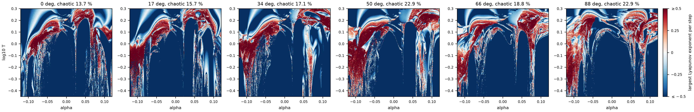
Figure 10: the soft-token map of Qwen2.5-0.5B-Instruct (steering at layer 12) while the steering direction rotates at constant norm from one Gaussian direction (\(0^{\circ}\)) to another (\(90^{\circ}\)): largest Lyapunov exponent (clipped at \(\pm0.5\), red positive) at six of 103 angles, with the chaotic share. Float32 maps of 296 × 512 cells over \(\alpha \in [-0.12, 0.12]\), \(\log_{10}T \in [-0.45, 0.3]\); exponents from 80 measured steps at twin offset \(10^{-4}\); each map continues from the final states of the previous angle after 40 steps, and every tenth starts from the fixed start after 300 steps. Where attractors coexist, continued and fresh starts can reach different ones, so the maps can jump at every tenth angle and across the 17 of 120 planned angles that did not finish within the run limit. These short-horizon labels are coarser than those of the float64 maps. Source: byte-identical copy of the paper's figure (provenance.json).
Where steering enters, and how two vectors combine
Two further results make the same point in practical terms.
Where a vector enters decides how much chaos it causes. Steering vectors are a common tool for controlling and probing models (Zou et al., 2023; Rimsky et al., 2024), usually added at one layer chosen by hand. In Qwen2.5-0.5B the philosophy direction, built with the same recipe at layers 4, 8, 12, 16 and 20 and scaled to each layer’s residual norm, makes 5.9, 8.1, 6.8, 5.0 and 2.3% of the same 128 × 128 plane chaotic (Figure 11). Early steering carries the chaos down to \(\log_{10}T = -0.95\) (layer 8) and \(-0.91\) (layer 4), while at layer 20 the chaotic cells lie between \(\log_{10}T = -0.09\) and 0.22, three fifths of them above 0.1. In the strip \(\lvert\alpha\rvert < 0.02\) every layer gives 0.8 to 2.1%. Llama-3.3-70B behaves the same way. Steered along its hostility direction, it is chaotic in 8.0% of a 24 × 24 map at layer 20 of 80, down to \(\log_{10}T = -0.14\), against 4.3% at layer 35, where the chaos starts at \(\log_{10}T = 0.01\), 4.3% at layer 50 (32 by 32 cells, a two-GPU map from before the precision fix described in the size study), and 0.7% at layer 65, all above \(\log_{10}T = 0.19\). These 70B labels are those of the map protocol, one twin offset, and so are candidates. A logit bias, the latest possible point of entry, gives chaos mostly above \(\log_{10}T = 0.1\).
The gain split, repeated along steering lines at all five layers of the 0.5B model, shows where the depth enters. At low temperature (\(\log_{10}T \le 0\)) the chaotic cells of layers 4, 8 and 12 have expanding readout factors (medians +0.74, +0.46 and +0.46 nats per step over 54, 56 and 21 cells) and contracting network factors (−0.47 to −0.21). At layer 16 the readout factor of such cells is only +0.15, and layer 20 gives just 6 of them. Early injection creates token competition at low temperature more readily; late injection mostly does not. Its chaos lives at higher temperature, where the network factor carries it (layer 20: network +1.09, readout −0.78; Figure 8e).
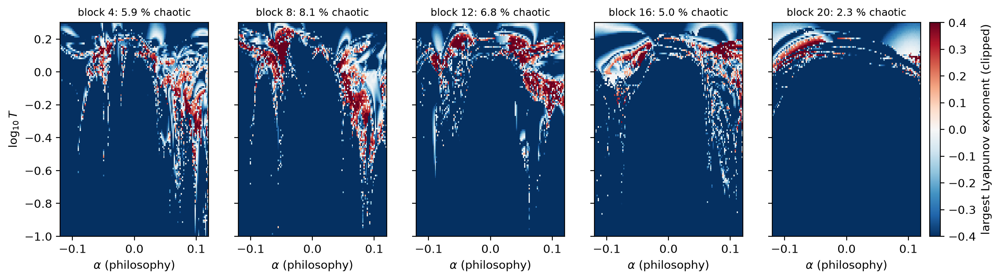
Figure 11: the philosophy direction of Qwen2.5-0.5B-Instruct, built with the same recipe at each of five layers of 24: largest Lyapunov exponent on 128 × 128 float64 cells over the steering strength and \(\log_{10}T \in [-1, 0.3]\). The share of chaotic cells is given above each panel. Source: byte-identical copy of the paper's figure (provenance.json).
Two vectors interact. Steering along gratitude at layer 4 and hostility at layer 16 at once makes 21.7% of a 96 × 96 plane chaotic at \(\log_{10}T = -0.1\), while each push alone, computed on exact zero lines of the same grid, makes 12.5% and 5.2% of its line chaotic. In 1561 cells, 16.9% of the plane and 78% of its chaotic cells, the combination is chaotic although each push alone, at the same strength, is not. Over the four planes (two orders of the layers, \(\log_{10}T = \pm0.1\)) this share is 8.3 to 16.9% of the plane, and 7.8 to 16.5% with both single pushes periodic. With the layers exchanged (hostility at 4, gratitude at 16) the plane is 23.4% chaotic, and at \(\log_{10}T = 0.1\) both pairs give 33 and 42% (Figure 12). Each plane keeps a periodic hole around zero steering. Combining steering vectors is therefore not additive in its effect on the loop’s stability: a composition of two pushes can be chaotic where each push alone is periodic.
![Four maps of the largest Lyapunov exponent over two steering strengths from -0.12 to 0.12, colored from dark blue (strongly negative) through white to dark red (positive). Top row: gratitude at layer 4 (horizontal) and hostility at layer 16 (vertical), at log10 temperature -0.1 (22% chaotic) and 0.1 (33% chaotic). Bottom row: the layers exchanged, at -0.1 (23% chaotic) and 0.1 (42% chaotic). Each map has a large blue periodic hole around zero steering, surrounded by speckled red chaotic regions and blue periodic islands; at the higher temperature the red regions are larger and more connected.](fig-two-block.png) Source: this research note.
Source: this research note.
Figure 12: two steering directions at two layers of Qwen2.5-0.5B-Instruct: largest Lyapunov exponent on 96 × 96 float64 cells over the two strengths, at \(\log_{10}T = -0.1\) (left) and 0.1 (right). Top: gratitude at layer 4, hostility at layer 16; bottom: the layers exchanged. Dotted lines mark the zero axes; the grid does not sample them, and the single-push controls quoted in the text were computed separately on exact zero lines. Source: byte-identical copy of the paper's figure (provenance.json).
The neuron controls of Steering as a probe add a vector in a specific way, which is easiest to see in a diagram (Figure 13). Every token has its own residual stream and its own pass through the same MLP; attention is the only step that mixes tokens. Inside the MLP, each of the 4864 neurons writes its activation times its own output column into the stream, so raising one neuron’s activation by a fixed amount for every token is the same as adding a fixed vector to the layer’s output. That is how the neuron controls are implemented.
![A diagram of decoder layer 12 of Qwen2.5-0.5B-Instruct. Four input tokens, The, Eiffel, Tower and is, each run along their own horizontal line, the residual stream. An attention box at the upper left reads all of the streams through a causal mask, in which each token sees only earlier ones, and adds its output back at circled plus signs. Each stream then passes through its own box labeled RMSNorm to MLP, with an orange annotation: h832 increased by 312 alpha. A dashed callout enlarges one MLP: x is normalized, passed through a gated layer to give 4864 neuron activations h1, h2, h3 up to h4864, drawn as circles; the circle h832 is orange, with plus 312 alpha added to it; the activations are combined as the sum of h_i times w_i, where w_i is column i of the down-projection, and added back to the token’s stream, which continues to layer 13.](tikz-neuron-steering.svg) Source: this research note.
Source: this research note.
Figure 13: steering along one MLP neuron, in decoder layer 12 of Qwen2.5-0.5B-Instruct. Each token has its own residual stream, one 896-dimensional vector per token, and its own pass through the same MLP; attention, with its causal mask, is the only step that mixes tokens. Inside every MLP box (bottom, for one token with residual vector \(x\)), the 4864 neurons write \(\sum_i h_i w_i\) into the stream, neuron \(i\) along its own column \(w_i\) of the down-projection. The steering strength \(\alpha\) is a scalar we set (negative values lower the activation), and \(312 = \lVert v_{\mathrm{phil}}\rVert/\lVert w_{832}\rVert = 188.99/0.606\) is a fixed scale for neuron 832. Raising \(h_{832}\) by \(312\alpha\) for every token is the same as adding \(\alpha v\), with \(v = 312\,w_{832}\), to the layer's output, which is how we implement it: \(\sum_i h_i w_i + 312\alpha\,w_{832} = \sum_{i\neq832} h_i w_i + (h_{832} + 312\alpha)\,w_{832}\). At \(\lvert\alpha\rvert = 0.12\) the increase is 37.4, against a mean activation of 0.27 on the philosophy texts; for neurons 833 and 4137 the scale is 329 and 346. The tokens shown are only an example: in the loop, the input is the fixed prompt followed by the fed-back soft token. Source: SVG rendering of the paper's TikZ source (hash and rendering command in provenance.json).
Unsteered chaos and steering controls
Steering adds a fixed vector to the residual stream, so chaos along a steering axis could belong to the push rather than to the model. At \(\alpha = 0\), however, the map is the unsteered model’s own feedback map, with temperature as its only parameter. The \(\alpha = 0\) columns of the hostility maps contain cells with positive finite-horizon exponents in Llama-3.1-8B (26 of 64 temperatures), Qwen2.5-7B (15 of 64) and OLMo-2-7B (11 of 64), while the near-zero columns of the 0.5B and 1.5B maps contain one such cell each (of 128 and 64). A longer float64 sweep of the unsteered 0.5B map (512 temperatures over \(\log_{10}T \in [-1, 0.3]\), 1000 transient and 2000 measured steps) finds a narrow chaotic band at \(\log_{10}T \approx 0.15\) to 0.21 (7 temperatures, exponents up to 0.28), with a period-5 loop at 437 of the 512 temperatures. The same long sweep finds 96 chaotic temperatures in Llama-3.1-8B, between \(\log_{10}T = -0.20\) and 0.24 (exponents up to 0.66), interleaved with periodic windows of periods 2 to 52; within \(\log_{10}T \in [-0.3, 0.3]\) its chaotic share, 41%, equals that of the coarse column. Qwen2.5-7B has 65 chaotic temperatures between \(\log_{10}T = -0.07\) and 0.28 (exponents up to 0.74), and OLMo-2-7B has 32 between 0.04 and 0.14 (up to 0.30). Steering is therefore not needed to reach chaotic regimes in any of these four models (Figure 14). Across the fifteen models of the size study, the regular-grid sweeps find unsteered chaos in eleven of the fourteen dense models (in Llama-3.1-70B at two temperatures that pass a three-offset test), but not in Qwen2.5-72B, Llama-3.3-70B, OLMo-2-13B or the mixture of experts; finer lines found candidates in the first two, and the Qwen2.5-72B window, recomputed in float64 throughout, is periodic.
![Seven strips of the largest Lyapunov exponent against log10 temperature from -1 to 0.3, with no steering, one per model: Llama-3.3-70B, Llama-3.1-8B, Qwen2.5-72B, Qwen2.5-7B, Qwen2.5-0.5B, OLMo-2-7B and the mixture of experts Qwen3.5-35B-A3B. Periodic points are colored by the logarithm of their period, red points mark chaotic temperatures, and black crosses unresolved ones. Llama-3.1-8B and Qwen2.5-7B have long runs of red points at the upper end of the temperature range; Qwen2.5-0.5B and OLMo-2-7B short ones; Qwen2.5-72B, Llama-3.3-70B and the mixture of experts none.](fig-alpha0.png) Source: this research note.
Source: this research note.
Figure 14: the unsteered soft-token map (\(\alpha = 0\)) along temperature, top to bottom: Llama-3.3-70B-Instruct, Llama-3.1-8B-Instruct, Qwen2.5-72B-Instruct, Qwen2.5-7B-Instruct, Qwen2.5-0.5B-Instruct, OLMo-2-1124-7B-Instruct and the mixture of experts Qwen3.5-35B-A3B. Largest Lyapunov exponent (clipped at \(-1.5\)) from float64 sweeps of 512 temperatures (128 for the 70B-class and mixture-of-experts models; 1000 transient and 2000 measured steps). Red: no period up to 64 and an exponent above \(10^{-3}\); black crosses: neither a detected period nor a positive exponent (unresolved); other points have a detected period, colored by \(\log_2\) of the period. Table 18 summarizes these and the wider sweeps of the other models. Source: byte-identical copy of the paper's figure (provenance.json).
Steering does widen the chaotic regions, but not as a property of the concept: along norm-matched random directions, the 0.5B maps are as chaotic as along the concept directions (Figure 15). On the same \(128^2\) grid, 7.6, 8.3 and 12.5% of cells are chaotic for three Gaussian directions with the philosophy vector’s norm, against 6.8% for philosophy and 7.5% for gratitude. In all five maps the chaotic share rises from about 1% at \(\lvert\alpha\rvert < 0.01\) to between 5 and 22% at larger \(\lvert\alpha\rvert\), and a chaotic region at high temperature, with windows reaching down, recurs. In this model, chaos under steering is therefore a generic response to perturbing the residual stream at this norm. Rotating the steering direction makes the same point continuously (Figure 10): the chaotic share stays between 13 and 24% at every one of 103 angles.
Single neurons behave the same way. Steering along the output direction of one MLP neuron of the steered layer (its column of the down-projection, rescaled to the same norm; Figure 13) gives 9.9% chaotic cells for the neuron most specific to philosophy on texts held back from its selection, chosen by a rule fixed before any map, 5.1% for its index neighbor and 12.9% for a random neuron (Figure 16); near \(\alpha = 0\) the share is 0.4 to 1.2%. The direction does select the texts. The largest attractor family in all five maps is the unsteered period-5 loop, but beyond it only 26 to 56% of one map’s cells carry an attractor text that appears anywhere in another map.
Llama-3.1-8B agrees. On its hostility plane, two norm-matched random directions at the same layer give 26 and 17% chaotic cells against 28% along the concept direction; all three carry 34 to 44% near \(\alpha = 0\), and the random directions thin out at large \(\lvert\alpha\rvert\). At layer 19, where a sparse autoencoder trained on this model reads the residual stream (Goodfire, 2025), the concept vector rebuilt there gives 28%. The decoder direction of the autoencoder feature most specific to hostility (chosen by a rule fixed before any map; cosine 0.10 with the concept vector) gives 29%, a random live feature 27% and a Gaussian direction 39%, all at the same norm. In this model, chaos therefore occurs along autoencoder-feature, contrastive and random directions alike, with direction-dependent prevalence; at 70B the directions differ more (Steering at 70B).
 Source: this research note.
Source: this research note.
Figure 15: steering controls in Qwen2.5-0.5B-Instruct (\(128^2\) float64 cells, steering at layer 12, one grid and one set of settings): largest Lyapunov exponent along the philosophy and gratitude directions and along three Gaussian directions rescaled to the philosophy vector's norm. Titles give the chaotic share (finite-horizon exponent above \(10^{-3}\), no period up to 48); color gives the exponent, clipped at \(\pm0.5\). Source: byte-identical copy of the paper's figure (provenance.json).
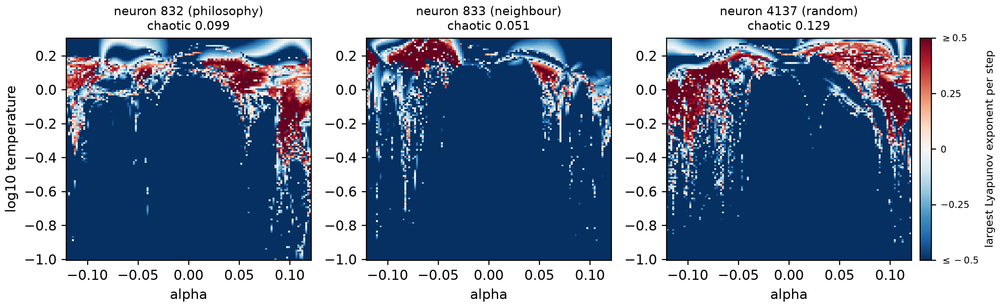
Figure 16: steering along single MLP neurons in Qwen2.5-0.5B-Instruct (same grid, settings and color scale as Figure 15): the output directions of the layer-12 neuron most specific to philosophy (832), of its index neighbor (833) and of a random neuron (4137), each rescaled to the philosophy vector's norm (cosines with it 0.013, \(-0.028\) and 0.022). Titles give the chaotic share. Source: byte-identical copy of the paper's figure (provenance.json).
What theory allows, and how many dimensions the chaos has
What theory allows. Chaos and periodic windows occur in many nonlinear feedback systems. In a specified ensemble of random recurrent networks with asymmetric couplings, chaos sets in above a critical gain, sharply in the large-network limit, and finite networks pass through limit cycles of increasing complexity on the way (Sompolinsky, Crisanti, and Sommers, 1988); how the transition looks depends on the architecture and the transfer function (Kadmon and Sompolinsky, 2015). Discrete-time random networks, \(x(t+1) = \tanh(gJx(t))\), iterate a map as our loop does: their fixed point loses stability when the gain times the spectral radius of the couplings exceeds one, the first bifurcation of large networks is a Neimark-Sacker bifurcation, and chaos follows by a quasi-periodic route, through a torus and frequency locking, over a range of gain that narrows as the network grows (Doyon et al., 1994). Our largest model narrows differently: Qwen2.5-72B passes from a confident echo to a nearly uniform fixed point within 0.03 decades of temperature, and its chaos is confined to narrow bands, whereas in random networks chaos is generic above the transition. External input can suppress that chaos (Rajan, Abbott, and Sompolinsky, 2010), and deep networks at initialization show an order-to-chaos transition in signal propagation (Poole et al., 2016; Schoenholz et al., 2017). In our map, temperature plays the role of an inverse gain and the steering vector that of an input. The factorization of the derivative makes the correspondence concrete, with the softmax derivative \((\mathrm{diag}\,p - pp^{\top})/T\) in the place of the slope of the transfer function; the identification with the random-network transition remains an analogy, not a transfer of that ensemble’s theorem. Periodic windows, shrimp-shaped domains with their cusps and spirals, and doubling cascades are found in many dissipative two-parameter systems (Gallas, 1993; Bonatto and Gallas, 2008; Vitolo, Glendinning, and Gallas, 2011; Façanha, Oldeman, and Glass, 2013) and in experiments (Stoop, Benner, and Uwate, 2010).
Contraction and expansion in the network. Analyses of deep attention identify contracting tendencies: pure self-attention collapses token representations toward a common vector with depth (Dong, Cordonnier, and Loukas, 2021), and idealized attention dynamics form clusters (Geshkovski et al., 2023). Residual connections and MLPs counteract the collapse. Which tendency wins along an orbit is a property of the trained weights that only computation settles. In every dense model we mapped, both outcomes occur: the same map has negative largest exponents in some regions of its parameter plane and positive ones in others.
The dimension of the chaos. Near a periodic orbit, the multipliers measure how many directions the dynamics keeps. For chaotic attractors the corresponding measure is the Kaplan-Yorke dimension (Kaplan and Yorke, 1979),
\[ D_{\mathrm{KY}} = j + \frac{\sum_{i\le j}\lambda_i}{\lvert\lambda_{j+1}\rvert}, \]with \(j\) the largest index at which the partial sum of the ordered Lyapunov exponents is still nonnegative; with one positive exponent and \(\lambda_1 + \lambda_2 < 0\), \(D_{\mathrm{KY}} = 1 + \lambda_1/\lvert\lambda_2\rvert\). Read it as the number of directions in which the attractor spreads: 1 for chaos that lives on a curve, between 1 and 2 for a thin, layered sheet. We estimated the four leading exponents by QR iteration (1000 transient and 2000 measured steps, float64) at 35 completed cells: 28 chosen by percentile of their largest exponent before any of their spectra were seen (of 30 requested), and seven from the earlier horizon check, six chaotic and one periodic control. At this horizon 31 have a positive leading estimate and none has two positive estimates. These are finite-time estimates, not asymptotic dimensions, and they grow with temperature.
- Along the hostile temperature line, where a scalar return relation fits (Chaos behind a repeating text), eight chaotic cells have \(D_{\mathrm{KY}} = 1.008\) to 1.16, consistent with nearly one-dimensional chaos.
- At fourteen chaotic cells of the headline maps (\(\log_{10}T\) from \(-0.17\) to \(-0.04\)) it is 1.03 to 1.65, rising with \(\lambda_1\).
- In the high-temperature region (\(\log_{10}T\) from \(-0.02\) to 0.13), nine chaotic cells have \(D_{\mathrm{KY}} = 1.37\) to 2.02; at two of them the sum of the first two estimates is nonnegative, which suggests a second expanding direction at this horizon.
A scalar return map therefore describes the low-temperature chaos well and the high-temperature chaos poorly, consistent with the large second multipliers of the high-temperature bubble. The number of competing tokens does not set the dimension. The readout’s trace-to-leading-eigenvalue ratio, \(\mathrm{tr}\,\Sigma_p/\lambda_{\max}(\Sigma_p)\) averaged along the orbit, counts the directions in which the readout amplifies comparably. \(D_{\mathrm{KY}}\) never exceeds it and rises with it within each group of cells (Spearman 0.72 over 17 philosophy cells and 0.69 over 8 hostile cells, computed when the data came in and not independently reproduced; both are confounded with temperature). Across groups it does not predict the dimension: the hostile cells have ratios of about 16 to 19 and next-token entropies of about 7 to 9 nats, yet \(D_{\mathrm{KY}} \le 1.16\) (Figure 8f). The readout supplies many competing directions; the network decides how many of them expand.
What the chaos does to reproducibility
Language-model inference is not bitwise reproducible: GPU kernels choose different reduction orders for different matrix shapes, so a request’s result depends on the batch it shares and on the hardware (He and Thinking Machines Lab, 2025; Yuan et al., 2025). In a chaotic loop, such rounding differences are not harmless. This section explains how a change of batch reaches the output, measures it, and draws the practical consequence. It ends with seven further tests, exploratory unless stated: whether the same sensitivity lets a deliberate perturbation steer an answer, whether the sensitivity can be tamed or used, whether weight quantization moves the attractors, whether a prompt’s chaos onset predicts where sampled text stops repeating, a behavioral check of two coupled agents, whether the history of a steering schedule changes a decision (with a confirmatory rerun), and whether hidden differences behind an identical text change the answers to follow-up questions.
How a change of batch reaches the output
Two runs of the same request can differ on the same machine for a reason that has nothing to do with sampling. Floating-point addition is not associative: every addition rounds its result to a representable number, so \((a+b)+c\) and \(a+(b+c)\) can differ in the last bit (Goldberg, 1991). A matrix multiplication in a transformer sums thousands of products, and GPU libraries split and order those sums according to the shape of the matrices, to keep the hardware busy. The number of requests processed together, the batch, is part of that shape. The same request computed alone or in a batch therefore receives results that differ at the rounding level: about \(10^{-16}\) relative in float64 and about \(10^{-3}\) in bfloat16. In a single forward pass such differences are invisible.
In a feedback loop they are not lost. Each output becomes the next input, so the difference \(\delta_t\) between the two runs is fed back and transformed by the map’s derivative at every step. To first order, and apart from the new rounding difference that each step adds,
\[ \delta_{t+1} \approx DF(x_t)\,\delta_t . \]On a periodic attractor the derivative contracts on average and the Lyapunov exponent is negative: the difference decays until both runs follow the same orbit and write the same text. On a chaotic attractor the exponent \(\lambda\) is positive, and the difference grows like \(d_1 e^{\lambda t}\) from its first value \(d_1\). It therefore reaches a relative size of \(10^{-2}\) after about
\[ t_* \approx \frac{\ln(10^{-2}/d_1)}{\lambda} \]steps (about 100 steps for \(d_1 \approx 10^{-15}\) and \(\lambda \approx 0.3\)). At most a few Lyapunov times (of \(1/\lambda\) steps each) later, at 1.27 to 176% of the state’s norm in the examples of Table 1 (0 to 16 steps after the distance passes \(10^{-2}\)), the two runs write different text.
Because \(t_*\) depends on the starting difference only through its logarithm, finer rounding delays the divergence of a chaotic loop but does not prevent it. The measurements below show this: the same chaotic cells separate after a median of 20.5 steps in float32 and of 102 steps in float64, although float64 rounds far more finely.
![Schematic, not data: the distance between two runs that differ only in batch layout, on a logarithmic axis against the step. A periodic loop’s difference is damped and stays at the rounding level, about 1e-16 in float64. A chaotic loop’s difference grows as a straight line on the logarithmic axis, crosses the 1e-2 line at the step the Lyapunov exponent predicts, and levels off at order one; a dot a few steps after the crossing marks where the texts of the two runs split, at most a few Lyapunov times later. A bfloat16 difference starts near 1e-3, close to the 1e-2 line, and crosses it within a few steps.](batch-difference-schematic.svg) Source: this research note.
Source: this research note.
Diagram: how a rounding-level difference evolves in the loop. Conceptual schematic, not data and not to scale; the predicted crossing step is \(t_* \approx \ln(10^{-2}/d_1)/\lambda\). The texts split at most a few Lyapunov times later: in the examples of Table 1, at 1.27 to 176% of the state's norm, 0 to 16 steps after the difference passes \(10^{-2}\). Figure 17 below shows the measured curves.
The measurement
This picture makes a specific prediction: chaotic loops should diverge, at the step their exponent sets, and periodic loops should not. We ran the 448 labeled cells of the horizon check (192 chaotic, 192 periodic and 64 other cells of two float64 maps of the 0.5B model) twice in lockstep from the same start. The two runs differ only in the batch: all cells in one batch of \(n\) rows, or the same rows followed by \(n\) further rows, which changes the matrix shapes the kernels see while the first \(n\) rows compute the same cells. In float64 the two runs first differ by about \(6\times10^{-15}\), the rounding level. At 190 of the 192 chaotic cells this difference passes a relative distance of \(10^{-2}\), after a median of 102 steps, and grows on to order one; at 173 of them the most probable token of the loop’s readout comes to differ between the runs. At 182 of the 192 periodic cells the two runs stay within \(10^{-2}\) for all 1500 steps, with a median largest distance of \(2.3\times10^{-12}\).
The Lyapunov exponent accounts for when a chaotic run diverges. The step at which the distance passes \(10^{-2}\) follows \(\ln(10^{-2}/d_1)/\lambda\), where \(d_1\) is the smallest nonzero distance in the run, with a median ratio of 0.91 and a log-log correlation of 0.73 over 190 cells. This comparison uses the whole run and is therefore retrospective. The two chaotic cells that never diverge have exponents of 0.013 and 0.0013, for which the predicted step lies beyond the run.
![Three panels. (a) In float64, the relative distance between two runs that differ only in batch layout grows, for chaotic cells, from the rounding level to order one, passing 1e-2 after a median of 102 steps, while for periodic cells it stays at the rounding level for all 1500 steps. (b) In bfloat16, chaotic and periodic cells alike separate within a few steps; in float32, chaotic cells separate and periodic cells mostly do not. (c) For 190 chaotic cells, the observed step at which the distance passes 1e-2 scatters around the step predicted from the Lyapunov exponent, with median ratio 0.91 and log-log correlation 0.73.](fig-repro.png) Source: this research note.
Source: this research note.
Figure 17: only the batch layout differs (Qwen2.5-0.5B-Instruct, philosophy direction at layer 12; 448 cells grouped by their float64 labels). (a) Medians and interquartile ranges in float64. (b) Medians for float32 and bfloat16 layouts. (c) Observed against predicted divergence step, with \(d_1\) the first nonzero distance (the smallest nonzero distance gives the same rounded values); dotted line, equality. In float32 a diverging periodic cell may change phase on the same cycle or switch between coexisting attractors; the run does not distinguish the two. Source: byte-identical copy of the paper's figure (provenance.json).
The same holds in other models (Table 3). Over 24 chaotic and 24 periodic temperatures of the unsteered Qwen2.5-7B, whose embeddings are untied, all 24 chaotic float64 runs diverge and none of the periodic runs moves past \(10^{-2}\); unsteered Llama-3.1-8B and Llama-3.3-70B-Instruct steered at layer 20 behave alike. In lower precision the rounding is larger. In bfloat16, a common serving precision, the two layouts pass \(10^{-2}\) after a median of one or two steps at every cell of the two Qwen models and at 38 of the 40 Llama cells, periodic ones included: with these kernels and at that precision, the loop was not reproducible across batch layouts in any regime tested.
| Model, precision | Cells | Reach \(10^{-2}\) | Median step | Different tokens |
|---|---|---|---|---|
| Qwen2.5-0.5B, float64 | chaotic | 190 / 192 | 102 | 90.1% |
| periodic | 10 / 192 | 3.6% | ||
| Qwen2.5-0.5B, float32 | chaotic | 192 / 192 | 20.5 | 92.2% |
| periodic | 72 / 192 | 22.9% | ||
| Qwen2.5-0.5B, bfloat16 | chaotic | 192 / 192 | 2 | 99.5% |
| periodic | 192 / 192 | 2 | 95.3% | |
| Qwen2.5-7B, unsteered, float64 | chaotic | 24 / 24 | 56 | 95.8% |
| periodic | 0 / 24 | 0% | ||
| Llama-3.1-8B, unsteered, float64 | chaotic | 20 / 20 | 68 | 100% |
| periodic | 1 / 20 | 5% | ||
| Llama-3.3-70B, steered, float64 | chaotic | 24 / 24 | 114.5 | 87.5% |
| periodic | 0 / 24 | 0% |
Table 3: divergence of two otherwise identical runs, by the cells' float64 labels. "Reach" counts runs whose relative distance passes \(10^{-2}\); "different tokens" is the share whose most probable tokens differ at some step of the last 500 (the last 300 for the 70B model, which ran 1000 steps instead of 1500). Qwen2.5-0.5B is steered along philosophy at layer 12; Llama-3.3-70B-Instruct along hostility versus kindness at layer 20, in float64 arithmetic on its stored bfloat16 weights with its layers spread over two GPUs. Source: the paper's divergence table (provenance.json).
What batch-invariant kernels can and cannot fix
The practical consequence follows from the same picture. Batch-invariant kernels, which fix the order of every reduction independently of the batch size, remove this source of difference (He and Thinking Machines Lab, 2025). In a periodic regime that is enough, and small differences would be forgiven even without it. In a chaotic regime it is not: any remaining difference, from another GPU model, a library or compiler version, the numerical precision, or a mathematically equivalent reordering of a sum, is amplified in the same way, so a run is reproducible only if the whole computation is repeated bit for bit. The measurements cover one of these sources directly: float32 and float64 runs of the same chaotic cells also separate (all 192 pass \(10^{-2}\), after a median of 20 steps). Numerical differences are the disturbance; the feedback dynamics decide whether it grows. How far it grows within a given budget also depends on its starting size, on the horizon and on how close the run comes to a change of answer, so a periodic loop can still change an answer when the starting difference is large.
The same problems, a different batch
Low precision changes the starting point. In bfloat16 the starting difference is already about \(10^{-3}\), so continuous feedback can carry it into different answers within a short budget even where the float64 loop is not chaotic. A test at the level of answers, designed before the runs, measured this. We asked Qwen2.5-0.5B 96 two-digit additions, not used before, through a short soft-thinking pipeline: for 32 steps the model is fed the probability-weighted average of its token embeddings, each new one appended to a growing context, and a fixed answer cue then reads the number off greedily. Each problem ran alone and in a batch with three fixed distractor problems of the same length. Nothing is padded, so the two runs compute the same quantities and differ only in how the GPU groups its sums, that is, by rounding.
In bfloat16 the extracted answer changed with the batch layout in 56% of the problems at \(T = 1\) and in 8% at \(T = 10^{0.2}\). A forced greedy baseline with the same budget (32 greedy tokens, then the same cue) produced identical token sequences in both layouts for every problem. The excess disagreement of soft over greedy decoding, averaged over the two temperatures, is 32.3 percentage points (95% interval [26.5, 38.1]). In Qwen2.5-7B the batch layout changed the soft-thinking answer in 53 of the 96 problems (55%) at \(T = 10^{0.2}\), and even the forced greedy baseline changed in 10 of the 96, an excess of 17.7 points ([9.3, 25.6]). (The forced greedy baseline’s accuracy is not informative: forced through 32 tokens, the model writes past its answer.)
This short-budget effect does not need the float64 map’s chaos. In float64, no answer of the 0.5B pipeline changed within the 32 steps; the bfloat16 discrepancies are consistent with rounding differences accumulating through continuous feedback. A discrete argmax absorbs differences smaller than its margin, but not over a long feedback run whose answers the model holds weakly (Soft Thinking as published, below). In the 7B model at \(T = 10^{0.2}\), where the float64 loop amplifies an injected perturbation (median \(+0.034\) nats per step), even the rounding-level difference between the float64 layouts changed 5% of the answers.
An exploratory causal test supports this reading. In a batch of four, resetting the target problem’s fed-back state to that of its single-problem reference run before every soft step, so that each step runs in the batch but no difference can carry over, lowered the share of changed answers from 66% to 1.6% in Qwen2.5-0.5B and from 64% to 1.6% in Qwen2.5-7B (128 problems each, bfloat16). No condition’s accuracy differed from the reference’s by more than 5 points, although 128 problems per condition do not show that accuracy is unchanged.
Two horizons thus matter. Within a short budget, continuous feedback in low precision makes answers depend on the batch, and where the loop expands, even float64 rounding does. Over longer runs, a chaotic regime amplifies float64 rounding into different readout tokens, on the schedule its Lyapunov exponent sets.
Soft Thinking as published
The tests above used a short pipeline built for this study. A test whose design was fixed before any data, and amended once, also before any data, to run on an H100 GPU, ran Soft Thinking with its published settings on Qwen2.5-7B-Instruct in bfloat16. The settings are concept tokens (the fed-back weighted averages of token embeddings) restricted to the 15 most probable tokens, \(T = 0.6\) and 64 soft steps. The test used 256 GSM8K training problems (GSM8K is a standard set of grade-school math word problems) that no earlier run had scored. Only the batch layout changed, between batches of 8 and of 16 prompts of equal length without padding, and the answer changed for 21.1% of the problems (54 of 256; 95% interval [16.3, 26.1], computed by resampling whole batches). This confirms the prediction of more than 10%. Each secondary prediction compares another setting with the published one on the same 256 problems (paired differences of the change rates, intervals clustered by batch, exact McNemar tests, a standard test for paired yes-or-no outcomes); each predicted a lower rate:
- Replaying the reference run’s fed-back tokens in both layouts, so that no difference can travel through the feedback: 5.9% (difference 15.2 points, [10.4, 20.2], \(p = 8\times10^{-9}\)). Lower, as predicted.
- 16 soft steps instead of 64: 6.6% (difference 14.5 points, [10.0, 19.0], \(p = 4\times10^{-7}\)). Lower, as predicted.
- Ordinary greedy chain-of-thought decoding: 2.3%, at 89% accuracy (difference 18.8 points, [13.7, 23.6], \(p = 10^{-11}\)). Lower, as predicted.
- Feeding back only the most probable token: 17.6% (difference 3.5 points, [−2.9, 10.3], \(p = 0.35\)). The test cannot tell the two apart, so this prediction failed.
The three confirmed differences would survive a correction for the four tests by a wide margin, and the fourth is a clear null: discrete feedback through the same pipeline changes nearly as many answers as continuous feedback does.
The full vocabulary gave 22.3% (no prediction). Most changes are between wrong answers: through the soft pipeline this model answers only 22 to 30% of the problems correctly, and the layout changes whether the answer is correct for 6.2% of the problems. In float64 the same pipeline contracts. On 1312 and 1314 of the 1319 GSM8K test problems (full vocabulary and the 15 most probable tokens), a perturbation of \(10^{-10}\) ended below its initial size, and none changed an answer. These changes are therefore not chaos of the float64 map: the feedback carries bfloat16 rounding differences forward until they decide answers that the model holds only weakly, and it does so for discrete feedback as well.
How the dependence builds up
The test above read each answer once, after the full run of soft steps. A further exploratory study watched the dependence on the batch layout grow. It read the answers of the same pipeline after every doubling of the number of soft steps, from 2 to 128, so after 2, 4, 8 and so on up to 128 steps of feedback. It used 200 GSM8K test problems, two temperatures (0.6 and 1.2), and six steering strengths along the hostility direction (\(\alpha\) from \(-0.02\) to \(0.05\), where \(\alpha\) sets how strongly the hostility vector is added to the model’s hidden state and \(\alpha = 0\) is the unsteered model).
The two batch layouts agree on 90 to 96% of the answers after 2 steps and on 51 to 70% after 128, in every configuration. By the end of the run, many more answers depend on the layout than after the first steps. Among the problems whose layouts disagree, the median first disagreement comes after 8 steps.
A batch-layout difference can decide an answer in two different ways. The loop can contract, so that small differences shrink at each step, while the feedback still carries the rounding differences of bfloat16 forward until they tip answers that the model holds only weakly. Or the loop itself can be sensitive, so that small differences grow. Float64 copies of the same configurations, started \(10^{-10}\) apart, separate the two. In float64 the rounding error is far smaller than that offset, so an answer that changes between the copies shows that the loop itself amplifies small differences.
- Unsteered or weakly steered (\(|\alpha| \le 0.02\)). The copies change the answer text of at most 1.5% of the problems. The loop contracts, so the bfloat16 disagreements are rounding carried forward by the feedback.
- Strongly steered (\(\alpha = 0.05\)). The copies change the answer text of 13.5% of the problems at \(T = 0.6\) and 27.5% at \(T = 1.2\), and the extracted number, the final answer itself, of 4.5 and 9.0%. The loop itself is then sensitive, but accuracy has fallen to between 0.5 and 2.5% in either layout.
In this model, then, the regime in which Soft Thinking is useful is the regime of accumulated rounding, not of chaos. Where the loop’s own sensitivity appears, the pipeline no longer solves the problems.
Reasoning models that answer well
Qwen2.5-7B-Instruct answers few of these problems correctly through the soft pipeline, so most of its changed answers are changes between wrong answers. That leaves open whether the same thing happens to a model that solves the problems. A second test, also with its design fixed before any data, used reasoning models, as the Soft Thinking paper did.
A reasoning model is a language model trained to work through a problem at length before it commits to an answer. It writes this working inside a thinking block, a stretch of text that opens with a special marker and closes with an end-of-thinking token; only what follows the block counts as the answer. Soft Thinking replaces the tokens of that block with concept tokens, so the thinking becomes a continuous feedback loop of the kind this note studies. The three models were DeepSeek-R1-Distill-Qwen-7B, DeepSeek-R1-Distill-Llama-8B and QwQ-32B.
- Thinking. Each prompt in a batch (a row) thinks in concept tokens (the 15 most probable tokens, \(T = 0.6\)) until its most probable next token is the one that ends the thinking block, or until 1536 steps, a cap on how long it may think.
- Answering. It then answers by sampling ordinary discrete tokens, with the random numbers shared between the two layouts, so that the sampling itself makes the same draws in both and any difference comes from the arithmetic.
- Comparison. The comparison branch thinks with discrete tokens sampled the same way, as ordinary reasoning models do.
- Layouts. On GSM8K problems not used before, the batches held 8 or 16 prompts of equal length. On the problems of MATH-500 (a set of competition mathematics problems) whose answers are integers, each problem ran alone or as eight copies of itself.
In the first run, the tokenizer of DeepSeek-R1-Distill-Llama-8B, the component that turns text into tokens, loaded wrongly: it dropped the spaces and line breaks of every prompt. The model then thought far less and answered 45% of a check set correctly, against 83% with the correct tokenizer in bfloat16 and 81% in float64. Both of its combinations were rerun with the correct tokenizer, a change made after the data and disclosed as such.
Over the five primary combinations of model and task, the batch layout changed 27.1% of the soft-thinking answers (243 of 896; 95% interval [24.7, 29.5]), confirming the prediction of more than 5%. The prediction holds in every version of the pooling, including the original run (29.6%) and the run without both combinations of this model (21.9%).
- All three models change their answers. All three models changed their GSM8K answers with the layout alone: DeepSeek-R1-Distill-Qwen-7B for 14.5% of the problems ([10.9, 18.0]) at 88 to 90% accuracy, QwQ-32B for 19.5% ([16.4, 22.3]) at 86 to 87%, and DeepSeek-R1-Distill-Llama-8B for 28.9% ([23.4, 34.4]) at 74 to 77%. The layout decided whether the answer was correct for 11.7, 14.5 and 18.0% of the problems.
- Discrete thinking also changes many answers. On GSM8K, discrete sampled thinking changed 10.2, 19.9 and 21.5% of the answers for the same three models. Only in DeepSeek-R1-Distill-Llama-8B did soft thinking change significantly more, by 7.4 points ([1.9, 12.9], McNemar \(p = 0.029\)), and there it answered correctly 4.7 points less often ([−8.6, −0.8], McNemar \(p = 0.096\)). Elsewhere no soft-minus-plain difference is significant, which does not show that the two are equal. In these pipelines the effect did not require continuous thinking: long sampled feedback in bfloat16 showed it too.
- Another GPU. On an A100 instead of an H100, the first model’s soft rate was 11.7% (difference 2.7 points, [−1.6, 6.6]), a separate replication on a second GPU type. The difference is not significant, which again does not establish that the two GPUs give equal rates.
- Where the budget bites. Where the budget cut the reasoning short, accuracy was lower and the layout changed more answers. On MATH-500, where half or more of the problems reached the thinking cap, it changed 61% of the answers of DeepSeek-R1-Distill-Qwen-7B (44 to 48% correct) and 67% of those of DeepSeek-R1-Distill-Llama-8B (39 to 42% correct).
Cold Stop and a longer budget. These runs did not use the Cold Stop rule of the Soft Thinking paper, which ends thinking once the entropy of the next-token distribution, a measure of how undecided the model is, has stayed below 0.01 nats for 256 steps. An exploratory rerun used it, with a thinking budget of 4096 steps instead of 1536. Cold Stop ended thinking in only 6 of the 512 soft rows and in none of the 512 sampled rows: the models nearly always ended their thinking themselves. The layout still changed the answers:
- DeepSeek-R1-Distill-Qwen-7B on 128 GSM8K problems: 8.6% (soft) and 17.2% (sampled);
- the same model on MATH-500: 50.0 and 54.7%;
- QwQ-32B on 64 GSM8K problems: 17.2 and 9.4%.
The soft-minus-sampled difference changes sign between these combinations, so neither kind of thinking is consistently more affected. On the same type of GPU, every row that ended thinking on its own within the original 1536 steps was reproduced exactly in its saved switch step and answer, so the changes come from the rows that the original budget cut short; the DeepSeek-R1-Distill-Qwen-7B GSM8K rerun ran on a different H100 variant.
In the main runs, then, reasoning models that answer 86 to 90% of the GSM8K problems correctly changed 14.5 and 19.5% of their answers when only the batch around them changed, deciding correctness for 12 to 15% of the problems, and ordinary sampled reasoning with the same random numbers changed a similar share. The next test asks where these changes come from.
Whether this is chaos. A batch-layout change can decide an answer in two ways (How the dependence builds up): the feedback can carry bfloat16 rounding forward through a loop that contracts until it tips an answer that sits near a tie, or the loop itself can amplify small differences. To tell them apart, float64 copies of the same pipeline were run. Each copy’s first soft token was displaced from the base row’s by a relative \(10^{-10}\), far below any rounding difference of bfloat16, and every copy shared the base row’s random numbers, so the only difference between a copy and its base row was that tiny displacement. The three models respond differently.
- DeepSeek-R1-Distill-Qwen-7B. 216 of 256 copies ended the thinking at a distance from their base row below the initial displacement, and 2.3% changed the answer. Its layout changes are therefore mainly bfloat16 rounding carried to answers near ties, as in Qwen2.5-7B.
- QwQ-32B and DeepSeek-R1-Distill-Llama-8B. More than half of the copies ended above the initial displacement (131 of 192 and 145 of 256). Fitted only over the steps where the distance lay between ten times the displacement and \(10^{-3}\), the median growth rates were 0.011 and 0.008 per step: slow growth. The displacement alone changed 13.5 and 18.4% of the answers, respectively.
In those two models, then, the loop’s own sensitivity contributes to the answer changes: the thinking loop itself slowly amplifies tiny differences. It is a weak, finite-time instability over about a thousand thinking steps, and it acts on top of the rounding rather than replacing it. Three cautions apply. This is not an asymptotic chaos measurement, which would need far longer runs than a thinking block lasts. Some copies ended their thinking before their base row did (14 in DeepSeek-R1-Distill-Llama-8B, 23 in QwQ-32B). And the copies of one problem are not independent of each other. The test used 128 problems for each of the two smaller models and 96 for QwQ-32B.
Does a loop that is not chaotic protect against batching differences? Only when the rounding starts tiny. The table collects the measurements above, from The measurement (Table 3) and Reasoning models that answer well.
| Loop and precision | Two runs that differ only in batch layout |
|---|---|
| Chaotic, float64 (Qwen2.5-0.5B) | 190 of 192 separate past a relative distance of \(10^{-2}\), after a median of 102 steps |
| Periodic, float64 (Qwen2.5-0.5B) | 182 of 192 stay within \(10^{-2}\) for all 1500 steps; median largest distance \(2.3\times10^{-12}\) |
| Periodic, float64, larger models | none of 24 separate in Qwen2.5-7B, 1 of 20 in Llama-3.1-8B, none of 24 in Llama-3.3-70B |
| Periodic, bfloat16 (Qwen2.5-0.5B) | all 192 separate, after a median of 2 steps; 95.3% differ in their most probable token at some step of the last 500 |
| Any regime, bfloat16 (two Qwen models and Llama) | separate within a median of one or two steps at every Qwen cell and at 38 of the 40 Llama cells |
| Reasoning model whose float64 loop contracts (DeepSeek-R1-Distill-Qwen-7B, bfloat16) | the batch layout changed 14.5% of its GSM8K answers |
In float64 the two runs start about \(6\times10^{-15}\) apart, and the regime decides whether that grows. In bfloat16 they start about \(10^{-3}\) apart, close enough to the \(10^{-2}\) line that even a contracting loop does not damp the difference before it changes what is written.
What the regime does not predict
A test fixed in advance asked whether a chaotic loop marks worse answers in ordinary decoding. It labeled 4000 fresh products of two two-digit numbers by the regime of the unsteered Qwen2.5-7B-Instruct’s own loop at \(\log_{10}T = 0.40\). Prompts with a chaotic loop are answered less accurately by ordinary sampling, by 7.1 points (95% interval [4.8, 9.3]), but the gap vanishes once seven difficulty covariates, fixed before sampling, enter the fit: the label’s coefficient is +0.15 points ([−1.4, 1.7], permutation \(p = 0.84\)). In a post hoc fit, the entropy of the first answer token alone absorbs nearly all of the gap. That is what the mechanism above predicts: the loop turns chaotic where next tokens compete, and a model unsure of its first token also answers worse.
Accuracy does not peak at the edge of chaos either. Deeply periodic, edge (\(\lvert\lambda\rvert \le 0.1\)) and deeply chaotic prompts are answered alike, with all three adjusted contrasts within [−3.1, 3.0] points. These are nulls at this precision; they do not show that the regime has no effect.
Sensitivity without control
A loop whose answers change with rounding differences raises a further question: whether a deliberate perturbation of one fed-back token can steer the answer to a chosen wrong value. An exploratory test asked this of the Qwen2.5-0.5B soft-thinking pipeline on two-digit additions, in float32, with 16 soft steps, at temperatures 0.3 and 1.0. The settings were chosen on 16 development problems, and the test used 64 other problems. The target was the correct sum plus or minus 10. The optimized perturbation, added to the first soft token, was confined to one token norm, the length of that token itself. It came from 20 steps of gradient ascent on the log-probability of the target answer, each followed by a projection back into that radius (projected gradient ascent). The comparison was random search, which tried 45 random directions of that length and kept the best, with at least as much computation.
On the 64 test problems, the optimized early perturbations reached the target in 5 of 101 problem-temperature pairs that the unperturbed pipeline answered correctly, and random search in none: a difference of 4.2 points with each problem weighted equally (95% interval [0.8, 8.3]), below the advantage of 10 points that the design required. The same optimization applied to the last soft token before the answer cue, the text that prompts the answer, reached the target in 14 of the 101, so in this pipeline the loop gives less leverage early than late. Random early perturbations of that size changed about a third of the answers (one random direction: 34 of the 101 eligible pairs), almost never to the target. Here the loop’s sensitivity comes without selective control. The test covers temperatures at which the loop contracts for most problems (on the development problems, 10% and 38% of twins expanded, with median growth rates of −0.131 and −0.058 per step), where the pipeline still answers correctly, and the perturbation sizes and the optimizer were chosen on the development problems.
Taming and using the sensitivity
If the loop’s sensitivity is what makes answers depend on the batch, two practical questions follow: whether the theory points to a remedy, and whether the sensitivity can be put to use. Two exploratory tests asked them with Qwen2.5-7B-Instruct in bfloat16, on 512 unused GSM8K training problems, 16 at each of 32 prompt lengths, fixed before any outcome, with soft thinking over the 15 most probable tokens at \(T = 0.6\) for 64 steps.
A remedy from the theory: capping the readout gain. The derivative of one step factorizes into a network factor and a readout factor (Why the loop can be chaotic), and the expansion that drives the sensitivity sits in the readout: the softmax at temperature \(T\) amplifies small changes most when several tokens compete and the temperature is low. The readout gain measures that amplification. The remedy follows directly: at each step, lower the temperature until a proxy of the readout gain falls below a cap, so that no step can amplify much (the cap could not be met on about 1% of steps, at exact ties). With such a cap, the share of answers that the batch layout changed fell from 27.7 to about 23% (by 4.1 to 4.7 points at three caps), and accuracy did not fall.
The control that matters: a uniform temperature. Capping the gain works by lowering the temperature where needed, so part of its effect could come from a lower temperature as such, wherever it is applied. A control that simply ran at \(T = 0.5\) at every step separates the two. It was added after the first result was seen, so it is itself an exploratory check. It gained as much accuracy, and the caps’ extra reduction of changed answers relative to it (2.7 to 3.3 points) was not significant. The remedy is therefore modest, and it is not shown to work through the readout specifically rather than through a lower temperature overall.
Using the sensitivity: a vote over perturbed runs. Self-consistency is a standard way to make a model more accurate: sample several answers to the same problem and keep the one given most often, a plurality vote. Since tiny perturbations already change soft-thinking answers, the perturbations themselves could supply the variety for such a vote. Eight runs, each with its first soft token displaced by a relative \(10^{-3}\), voted on each answer, the most frequent answer winning (a plurality vote). The vote showed no detectable accuracy gain over a single run (+0.2 points, [−1.0, 1.4]), although one displacement changed 20.2% of the answers on average. Ordinary sampled self-consistency with eight samples, by contrast, gained 5.6 points ([3.5, 8.1]). The perturbed runs differ, but rarely toward the correct answer, and the problems whose perturbed runs disagreed were also the ones answered correctly least often: the sensitivity marks hard problems rather than offering a route to their answers.
Weight quantization and the attractors
Deployed models are often quantized: their weights are stored with fewer bits.
Quantization is usually checked one step at a time, by how close the quantized
model’s next-token distributions stay to the original’s. An exploratory test
asked whether that check certifies the closed loop. Every linear weight of the
decoder blocks of Qwen2.5-0.5B-Instruct was quantized, either in 8-bit blocks
(as in the Q8_0 format of llama.cpp) or in symmetric 4-bit blocks, while the
arithmetic stayed in float64. The unsteered loop then ran on 48 prompts not used
in development, at 8 temperatures over \(\log_{10}T \in [-0.5, 0.5]\),
from 2 starts each. A fixed random logit bias, scaled so that its one-step
divergence matches the 8-bit variant’s, served as an unstructured control: noise
of the same one-step size, with no structure from the weights.
- 8-bit. The one-step distributions stay close. On the original model’s attractor states, the mean Kullback-Leibler (KL) divergence, a standard measure of how far one probability distribution lies from another, is 0.0028 nats, and the most probable token agrees in 94.5% of states. The share of starts that end on a periodic orbit of period at most 8 shows no detectable change (+1.2 points, 95% interval [−1.9, 4.2]). Yet 14.1% of the starts end in a different class (periodic, chaotic or neither) or with a different period, as do 15.0% under the random bias of the same one-step size. These changes concentrate at the temperatures where the attractors change.
- 4-bit. The share rises by 6.8 points ([2.6, 11.0]), mostly because the edge of a chaotic band turns periodic. Its one-step distributions, however, are far from the original’s: the mean divergence is 0.83 nats, and the most probable token agrees in only 52% of states.
In this model, then, a close one-step check was consistent with unchanged statistics of the closed loop but did not fix the attractor that an individual run reaches. No effect of quantization was found beyond that of unstructured noise of the same one-step size.
Chaos onset and repetition in sampled text
As temperature rises, a prompt’s soft-token loop turns chaotic at some point, its chaos onset. Ordinary sampled text changes with temperature too: at low temperature it often falls into repeating a phrase verbatim, and at higher temperature it stops. An exploratory test asked whether the first temperature predicts the second, which would make the loop’s dynamics a guide to a familiar failure of ordinary generation.
The test used Qwen2.5-0.5B-Instruct on 24 prompts reserved for it, and it did not detect the proposed positive association. The Spearman correlation, which compares the rank order of the two temperatures across prompts, is −0.23 (95% interval [−0.60, 0.25], permutation \(p = 0.28\)). The interval includes zero, so the test cannot tell this from no relation at all; that is not the same as evidence of no association, and the interval is wide. One sensitivity analysis (counting orbits of period up to 32 as periodic, and clustering by system prompt) even gives an interval that excludes zero on the negative side, [−0.62, −0.18], the opposite of the proposed direction.
At matched temperature, the repetition rates of chaotic and periodic cells differed by 0.003 (interval [−0.013, 0.023]), but both regimes were present at only 8 of the 24 temperatures, so this comparison rests on few points. In 13 of the 15 prompts where both onsets were observed, sampled text stopped repeating below the loop’s chaos onset. The median gap over these 15 is 0.42 decades of temperature (a decade is a tenfold change in \(T\)).
This is a null result in the narrow sense: the test did not detect the effect it was designed to find. The soft-token loop and sampled decoding with a growing context are different systems, and this test did not find a bridge between them.
Coupled agents (a behavioral check)
Two Qwen2.5-1.5B-Instruct agents solving the same multiplication problem each fed back a mixture of thoughts: a fraction \(1 - c\) of their own concept token and a fraction \(c\) of the other agent’s, the coupling, while their contexts grew (64 problems, 8 pairs each; float32; exploratory). At \(c = 0.25\), agreement on the same wrong answer rose by only 1.6 points ([−0.6, 3.9]), and accuracy fell by 5.5 points, as it did when each agent instead received messages replayed from another pair’s run. At \(c = 0.5\), mixing gives the two agents equal next inputs, although their growing contexts differ. They then agreed on 96% of answers, including 41.0% of pairs that gave the same wrong number, and accuracy was 12.5 points lower than for independent agents. This is a behavioral check, not a synchronization experiment: the agents’ contexts grow, so they are not two copies of a fixed map, and at \(c = 0.25\) they barely synchronized although 0.25 exceeds the threshold that coupled-map theory predicts for the fixed loop (Synchronization of coupled loops).
Steering history and a policy decision
Attractors can coexist: the same settings can lead to different long-run behavior depending on where the loop starts (see The windows are texts). That suggests that the history of a steering schedule can matter, not only its present value. A system whose response depends on the path it took, and not only on its current settings, shows hysteresis; a magnet that stays magnetized after the field is removed is the textbook case. Two tests, a first exploratory one and then a confirmatory one, asked whether steering history matters for a decision with right and wrong answers.
The model was Qwen2.5-3B-Instruct, thinking in soft tokens. It judged synthetic access-control requests against a supplied permission table, answering ALLOW or DENY, so every request had a correct answer. A permissive-versus-restrictive direction steered it at layer 18: a vector added to the model’s hidden state that pushes it toward granting or toward refusing. Every run ended with 32 steps at the same steering strength (\(\alpha = 0.025\)). Some runs got there directly; others first made a brief excursion to \(\alpha = 0.04\) and back.
The first, exploratory test. The excursion raised the share of prohibited requests wrongly allowed from 49.5 to 70.8%, a difference of 21.4 points (95% interval over 24 instances reserved for the test, [15.6, 26.6]).
The confirmatory rerun. An exploratory result can be inflated: the analysis choices were made while looking at data, and a striking first estimate is often partly luck. A confirmatory test guards against both. Everything that could be tuned, the design, the analysis and a fresh set of 48 instances drawn from a new pool of users, was fixed and published before any data were collected, so it could not be shaped by the outcome; this is what “frozen before data” means. The prediction was set in advance as well: the excursion would raise false allowing by at least 10 points, with an interval excluding zero.
The prediction held, with a smaller effect, which is the usual outcome when a first estimate is repeated on fresh data, since part of the first estimate’s size came from the particular instances and choices of the exploratory run.
- Permissive excursion. False allowing rose by 13.0 points ([7.2, 18.8] over 24 prohibited instances) after the 32 steps at the final strength, and by 15.1 points ([10.4, 19.8]) after 64 steps: the effect persisted.
- A second wording. A second permissive direction, built the same way from differently worded statements (cosine 0.77 with the first, so similar but not the same direction), gave 19.3 points ([12.5, 26.1]).
- Restrictive excursion. An excursion in the restrictive direction raised false denials of permitted requests by 23.4 points ([17.1, 29.7]).
- Controls. An excursion of the same size along a random direction showed no detectable effect (−3.1 points, [−8.9, 2.1]), and an excursion of zero size changed none of the 384 decisions.
The present steering strength therefore does not describe the steered model’s behavior here: two runs at the same final strength decide differently depending on where they have been. The effect persists after the steering values match. The caveat is in the mechanism. This pipeline appends what it writes to its context, which grows with every step, unlike the fixed-size state of the soft-token map studied in most of this note. What the loop wrote during the excursion stays in that growing context, so a memory of the context is the plausible mechanism, although these tests do not isolate it. This is history dependence of the protocol, not a demonstration of hysteresis in a fixed-size state. One model and one schedule were tested, in float32, with two wordings of one direction.
Whether the hidden state changes answers
In band chaos the loop writes an exactly repeating text while its state moves chaotically (Chaos behind a repeating text). Two runs can then show a reader the same visible history while their hidden states differ. An exploratory test asked whether such states answer a follow-up question differently.
From each of 92 band-chaos cells reserved for the test, 16 states were taken at one phase of the repeating text. Within a cell, all 16 had identical leading tokens over the preceding 70 steps, so a reader of the text could not tell them apart. Each state was read through the same hostility-steered prompt the loop uses, followed by one of three queries chosen on separate development cells: a yes-or-no question about hostility, a request for the current mood in one word, and a hostility rating from 1 to 10. Each answer was decoded greedily, always taking the most probable token.
- Answers. No pair of states gave different answers in any cell for any query. Since none of the 92 cells showed a disagreement, a one-sided 95% bound limits the share of cells in which some pair would disagree to 3.21%.
- Probabilities. The probability of a fixed answer token differed at six significant digits in 98 to 99% of the pairs. The hidden differences therefore reach the readout.
- Wording. Only the wording of the yes-or-no answer changed, in 9 of the 92 cells, and never the answer itself.
The hidden differences stay within the margins of the greedy choices: they move the probabilities, but here not far enough to change an answer. The visible text is therefore not a complete record of the state. For these readouts, that is a limit on what can be observed, not a change in behavior: a reader who sees only the text cannot know the state, but the answers this test asked for came out the same.
A saddle-node bottleneck organizes the windows
" is it" and the
chaos lies a fan of stripes, windows whose texts add one "is X" pair each. All of
them are organized by one event: the 2-cycle " is it" dies in a
fold. Past the fold, its ghost forms a slow channel, and each added pair
costs one more passage through it. From two numbers computed from the network’s
derivatives, the fold’s normal form predicts how long a passage takes, without
fitting, and it places the windows on a \(1/N^2\) law, with a prefactor that is
measured rather than predicted. The formula was first checked on this " is it"
fold at \(\log_{10}T=-0.115\) and on a hostility fold. Two later tests used four
further folds, the same 2-cycle at \(\log_{10}T=-0.140\) and \(-0.200\), the
period-8 fold, and a period-6 fold, with the forecasts written down before any
trajectory was run. They came within one iterate of 42 of 48 passages; both tests’ strict
all-row criteria failed, and the failures are reported in full.
Between the period-2 region of Figure 2 and the chaos
lies a fan of stripes of periods 6, 8, 10 and so on (Figure
18). Their orbits, validated in float64, read as text
(Table 4): each is ". This" followed by \(k\) pairs "is X", with
period \(2k + 2\), so each stripe adds one pair. The period-2 region itself is the
2-cycle " is it". Inside each window the gray of the exponent map darkens toward
curves on which the periodic orbit is most strongly attracting, the superstable
curves of Cusps and shrimp-like windows.
![A 256 by 256 float64 map of the philosophy-steered 0.5B loop over steering strength from 0.060 to 0.082 and log10 temperature from -0.17 to -0.04. Chaotic cells are orange and purple; periodic cells are gray, darker where they contract more strongly. A fan of gray stripes sweeps from the upper left to the lower right, and a large dark gray region at the lower left is the 2-cycle. Cyan dashed curves mark two fold curves: one along the boundary of the 2-cycle region at the lower left, on which the stripes accumulate, and one along the top of the period-8 stripe. A white box marks the region of Figure 1.](fig-stripes-lyapunov-curves.png) Source: this research note.
Source: this research note.
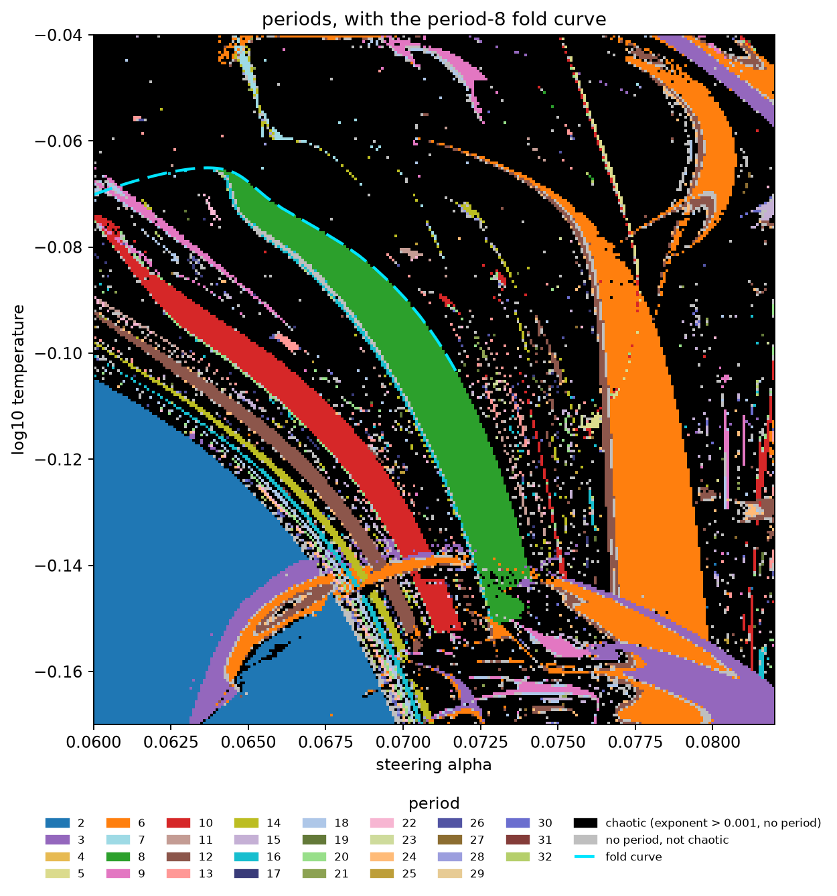
Figure 18: soft-token map of Qwen2.5-0.5B-Instruct steered along the philosophy direction at layer 12, \(256^2\) float64 cells over \(\alpha \in [0.060, 0.082]\) and \(\log_{10}T \in [-0.17, -0.04]\), of which 35,650 of 65,536 are chaotic. First image: chaotic cells colored by the largest Lyapunov exponent, the other cells in gray by how strongly they contract (light gray: close to losing stability; color bars as in Figure 1). Cyan dashed curves are float64 fold curves of the 2-cycle " is it" (lower left, the boundary on which the stripes accumulate) and of the period-8 orbit (top). Second image: periods, with the period-8 fold curve. Source: byte-identical copies of the paper's two images (provenance.json).
| Period | Loop of leading tokens | Leading multiplier \(\mu_1\) | Next modulus \(\lvert\mu_2\rvert\) |
|---|---|---|---|
| 6 | . This is a is a |
+0.0052 | \(3\times10^{-6}\) |
| 8 | . This is there is a is a |
+0.0110 | \(3\times10^{-7}\) |
| 10 | . This is there is it is a is a |
+0.0025 | \(2\times10^{-7}\) |
| 12 | . This is there (is it)2 is a is a |
+0.0163 | \(4\times10^{-8}\) |
| 14 | . This (is it)4 is a is a |
+0.0369 | \(2\times10^{-9}\) |
| 16 | . This (is it)5 is a is a |
+0.0716 | \(8\times10^{-11}\) |
| 18 | . This (is it)6 is a is a |
+0.0792 | \(1\times10^{-12}\) |
| 20 | . This (is it)7 is a is a |
+0.0857 | \(2\times10^{-14}\) |
Table 4: periodic orbits of the stripe family at the stripe centers along \(\log_{10}T = -0.115\) (\(\alpha = 0.077872\), 0.071674, 0.067766, 0.065550, 0.064443, 0.063857, 0.063534, 0.063335; Qwen2.5-0.5B-Instruct, philosophy direction at layer 12), computed with the all-float64 map: Newton residuals \(6\times10^{-15}\) to \(8\times10^{-13}\), leading multiplier \(\mu_1\) and next modulus \(\lvert\mu_2\rvert\). The tiny next moduli mean that at the stripe centers these orbits are effectively one-dimensional. That compression belongs to these orbits, not to the map: the 2-cycle " is it" itself has multipliers −0.2706 and −0.0585 at \((\log_{10}T, \alpha) = (-0.17263, 0.061579)\) (the second modulus is about 0.037 near its fold), the next modulus at the period-3 flip of the crescent is 0.088, and one period-6 orbit has a complex leading pair. The period-2 and period-8 orbits were also reproduced by an independent implementation, and the period-8 orbit is the one proved to exist below. Source: the paper's stripe-orbit table (provenance.json).
The fold and its ghost
At \(\log_{10}T = -0.115\) the 2-cycle " is it" dies in a fold at
\(\alpha_c = 0.06279827\): its float64 multiplier equals 1 to within
\(3\times10^{-13}\), and the next has modulus 0.037. There it meets an unstable
2-cycle, and both vanish (Figure 19a, b). Near a fold,
center-manifold reduction restricts the local dynamics to
the critical direction, however many other dimensions there are, as long as the
other multipliers stay off the unit circle. In the critical coordinate \(u\) of the
second iterate \(G = F^2\) (two steps of the loop, one turn of the 2-cycle), the
fold’s normal form is
Read it as a recipe for one turn: the coordinate \(u\) moves by a constant push \(a\varepsilon\), set by the distance from the fold, plus a term \(bu^2\) that grows away from the fold point. Below the fold (\(a\varepsilon\) and \(b\) of opposite sign) the two terms can cancel, and the two cancellation points are the attracting 2-cycle and its unstable partner. Beyond the fold they cannot cancel, and \(u\) drifts, slowly where \(u\) is small. Both coefficients come from the network’s own derivatives: \(a = -4.834\) per unit \(\alpha\) and \(b = -25.4285\), so \(ab = 122.93\). The stable branch gives an independent estimate: extrapolating its multipliers through \((1 - \mu)^2 / (4(\alpha_c - \alpha)) \to ab\) yields 123.1 with a quadratic fit (120.6 with a linear one). An independent implementation of the forward map and solver recovers \(\alpha_c\) to \(6\times10^{-15}\) and \(a\) to \(3\times10^{-12}\). Its \(b\), from nested automatic differentiation, is \(-25.42846\); ours differs from it by \(2.2\times10^{-6}\) relatively, the finite-step bias of our difference table. The resulting \(ab = 122.927\) leaves every passage prediction below unchanged.
The ghost. Beyond the fold the 2-cycle is gone, but its ghost slows the dynamics: trajectories crawl through a narrow channel where the orbit used to be, like a ball rolling over a nearly flat saddle of a landscape. We started trajectories at the beginning of the channel (\(v = -U\), in the oriented coordinate \(v = \mathrm{sign}(b)\,u\), with \(U = 0.1/\lvert b\rvert\)) or at its midpoint (\(v = 0\)) and counted iterates of \(G\) until \(v > U\). At four distances from the fold, the measured counts match the iterated normal form within one iterate, with no fitted parameter (Table 5 and Figure 20), and a transverse displacement of the same norm changes the count by at most one. A free trajectory alternates between laminar phases in the bottleneck (40 to 70 iterates each) and bursts away from it (Figure 19d): type-I intermittency (Pomeau and Manneville, 1980).
![Four panels of the fold of the 2-cycle ’ is it’. (a) Two branches of 2-cycles, filled circles for the attracting one and open circles for its unstable partner, meet at a vertical line at the fold and end there; orange curves show the normal form’s prediction, a sideways parabola. (b) The largest multiplier of the two-step map on both branches approaches 1 at the fold from above and below, along the normal form’s predicted curves. (c) Passage times through the bottleneck beyond the fold, measured on the network as dots and predicted by the normal form as lines, for four distances from the fold: 144, 71, 34 and 14 iterates. (d) A free trajectory over time, alternating between long flat laminar phases inside a shaded band, the bottleneck, and short bursts away from it.](fig-fold.png) Source: this research note.
Source: this research note.
Figure 19: the fold behind the stripes, the 2-cycle " is it" at \(\log_{10}T = -0.115\) (Qwen2.5-0.5B-Instruct, philosophy direction at layer 12). (a) Continued in \(\alpha\), the attracting 2-cycle (filled) and its saddle partner (open) meet and vanish at \(\alpha_c = 0.06279827\); the vertical coordinate is the projection \(u\) of one point of each orbit on the fold's critical direction; orange, the normal form's fixed points \(u^* = \pm\sqrt{\lvert a\rvert(\alpha_c - \alpha)/\lvert b\rvert}\). (b) The largest multiplier of \(G = F^2\) on the two orbits reaches \(+1\) at the fold, following the normal form's \(1 \mp 2\sqrt{ab(\alpha_c - \alpha)}\) (open circles: a complex leading pair). (c) Controlled passages from the channel's beginning \(v = -U\) to its exit \(v = U\), measured on the network (dots) and iterated from the normal form \(v' = v + \lvert a\rvert\varepsilon + \lvert b\rvert v^2\) (lines), take 144, 71, 34 and 14 iterates, as predicted. (d) A free trajectory at \(\varepsilon = 10^{-5}\) alternates between laminar phases in the bottleneck (\(\lvert u\rvert < U\), shaded; 40 to 70 iterates each) and bursts away from it. Branch residuals, fold, normal form and passages are float64; the branch multipliers in (b) are float32. No parameter is fitted in (c). Source: byte-identical copy of the paper's figure (provenance.json).
| \(\varepsilon = \alpha - \alpha_c\) | Full channel: measured / predicted | Midpoint start | Full channel after a transverse kick |
|---|---|---|---|
| \(3\times10^{-6}\) | 144 / 144 | 73 / 74 | 143 / 144 |
| \(1\times10^{-5}\) | 71 / 71 | 36 / 37 | 70 / 71 |
| \(3\times10^{-5}\) | 34 / 34 | 17 / 18 | 33 / 34 |
| \(1\times10^{-4}\) | 14 / 14 | 7 / 7 | 13 / 14 |
Table 5: bottleneck passages, in iterates of \(G = F^2\). Predictions iterate \(u' = u + a\varepsilon + bu^2\) with \(a\) and \(b\) computed from the network's derivatives; no parameter is fitted. An independent reimplementation reproduces all 18 fixed-start counts of these runs exactly (12 are listed here). Source: the paper's passage table (provenance.json).
 Source: this research note.
Source: this research note.
Figure 20: bottleneck passages at the fold of the 2-cycle " is it" (Qwen2.5-0.5B-Instruct, philosophy direction at layer 12, \(\log_{10}T = -0.115\)): measured passage times against the normal-form predictions. Source: byte-identical copy of the paper's figure (provenance.json).
The window law
The ghost also sets where the windows lie. Each stripe adds one "is X" pair and
one more pass near the 2-cycle’s ghost. A passage through the bottleneck lasts a
time proportional to \(1/\sqrt{\varepsilon}\), so fitting one more passage into a
window requires moving closer to the fold, and the distance
\(d_N = \alpha_N - \alpha_c\) of the \(N\)-th window from the fold should fall
like \(N^{-2}\), the law of a saddle-node ghost. Equivalently,
\(1/\sqrt{\alpha_N - \alpha_c}\) should grow linearly in \(N\) (Figure
21).
Natural reinjection. Free trajectories re-enter the channel slightly upstream
of the bottleneck’s middle (\(v \approx -3\times10^{-4}\) to
\(-7\times10^{-4}\), in the same oriented coordinate). From each measured entry
point, the normal form predicts the natural laminar durations within 4 to 8% for
\(\varepsilon \le 10^{-4}\), and a natural passage lasts about 0.6 of a full one.
The stripes therefore follow the \(N^{-2}\) law with about a third of the
full-passage prefactor; the two fractions agree because the prefactor scales as
the square of the passage fraction (\(0.58^2 \approx 1/3\)). The distances of
stripe centers located on a float32 cut along \(\log_{10}T = -0.115\) give
\(d_N N^2 = 0.0263\) to 0.0265 for \(N = 4\) to 7 (log-log slope \(-2.00\)),
compared with \(\pi^2/(4ab) = 0.0201\) for a half passage. Two-step return maps of
the probability of " it" show the near-tangency that produces the bottleneck
(Figure 22): close to the fold, the cloud of points hugs the
diagonal, where a step changes almost nothing.
Window edges. Numerically estimated stripe edges along \(\log_{10}T = -0.115\) (Table 6) sharpen this picture. Each window is bounded by a fold, where its orbit is born, and by a flip. For periods 6 to 12 the fold faces away from the accumulation point. For periods 16 to 20 the sides are exchanged, and the period-14 window is bounded by flips on both sides. The fold edges of periods 16 to 20 follow \(\alpha_N - \alpha_c = C/(N + N_0)^2\) with \(C = 0.0266\) and \(N_0 = 0.15\). Their slope, a rise of 6.13 per added pair in \(1/\sqrt{\alpha_N - \alpha_c}\), is 1.74 times the full-passage slope \(\sqrt{ab}/\pi = 3.53\) of the normal form. That corresponds to an effective passage of 0.58 of a full one, which the measured natural reinjection gives independently.
| Period | Edge toward larger \(\alpha\) | Edge toward smaller \(\alpha\) |
|---|---|---|
| 6 | fold 0.0790337 | flip 0.0766947 |
| 8 | fold 0.0726585 | flip 0.0706525 |
| 10 | fold 0.0684572 | flip 0.0670594 |
| 12 | fold 0.0658982 | flip 0.0651944 |
| 14 | flip 0.0645850 | flip 0.0642958 |
| 16 | flip 0.0639284 | fold 0.0638001 |
| 18 | flip 0.0635683 | fold 0.0635034 |
| 20 | flip 0.0633535 | fold 0.0633183 |
Table 6: edges of the stripe windows along \(\log_{10}T = -0.115\) (\(\alpha_c = 0.0627983\)), from the window centers of Table 4. Flips: critical multiplier a real \(-1\) to \(3\times10^{-10}\). Folds: the multiplier nearest \(+1\) extrapolated to 1 through \((1 - \mu)^2\), which is linear near a fold; last converged multiplier 0.991 to 0.998. Source: the paper's edge table (provenance.json).
Extrapolation, fixed in advance. We tested whether the measured reinjection predicts windows beyond the fitted range. A model with one fixed entry point (the median measured one) and one offset fitted to the fold edges of periods 16 to 20 places the fold edges of periods 22 to 30 3 to 9% closer to the fold than the constant-prefactor law. Both predictions were fixed before a float64 line of 3200 cells (spacing \(10^{-7}\)) located the windows. The measured edges follow the law within 3% through period 30 (within 1% at periods 22, 24 and 28) and fall outside the model’s range except at period 30. So the law extrapolates, but one fixed reinjection point does not predict it: the measured entry points move with \(\varepsilon\).
What is predicted and what is measured. The exponent of the law is near 2, its prefactor empirical. Over the fold edges of periods 16 to 32 (\(N = 5\) to 13), \(\ln(\alpha_N - \alpha_c)\) against \(\ln N\) has slope \(-2.00\), while a free fit of \(C/(N + N_0)^{\gamma}\) with the offset \(N_0\) also fitted gives \(\gamma = 2.18 \pm 0.06\) (1% errors assumed), so the data do not pin the exponent to exactly 2. At these distances, moreover, the bottleneck is not narrow compared with the counting window: its scale \(\sqrt{\lvert a\rvert\varepsilon/\lvert b\rvert}\) is 1.35 to 3.51 times \(U\), and a full passage lasts only 9 to 23 iterates of \(G\). The windows therefore lie outside the asymptotic regime in which the normal form fixes the prefactor (Pomeau and Manneville, 1980; Hirsch, Huberman, and Scalapino, 1982), and the factor of about one third is a measured value, not a prediction.
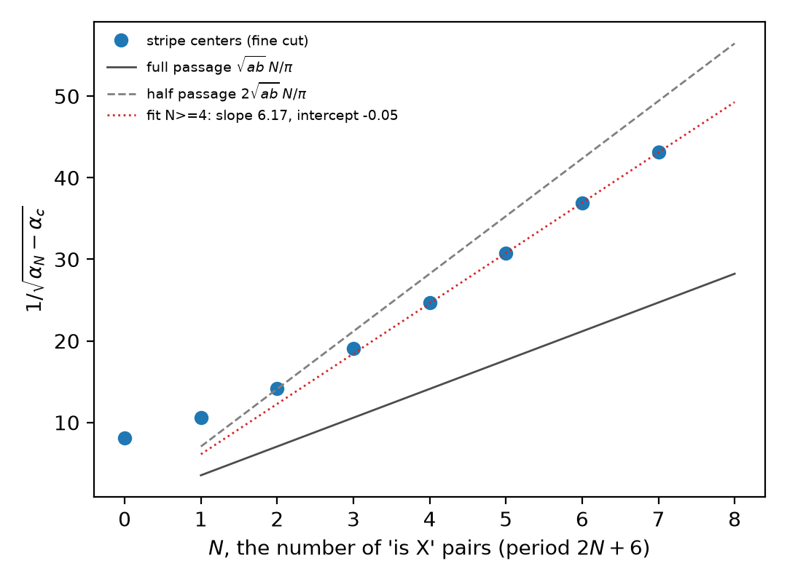
Figure 21: the window law at the fold of the 2-cycle " is it" (Qwen2.5-0.5B-Instruct, philosophy direction at layer 12, \(\log_{10}T = -0.115\)), with stripe centers plotted as \(1/\sqrt{\alpha_N - \alpha_c}\) against the number of added pairs \(N\), together with the full- and half-passage predictions. Source: byte-identical copy of the paper's figure (provenance.json).
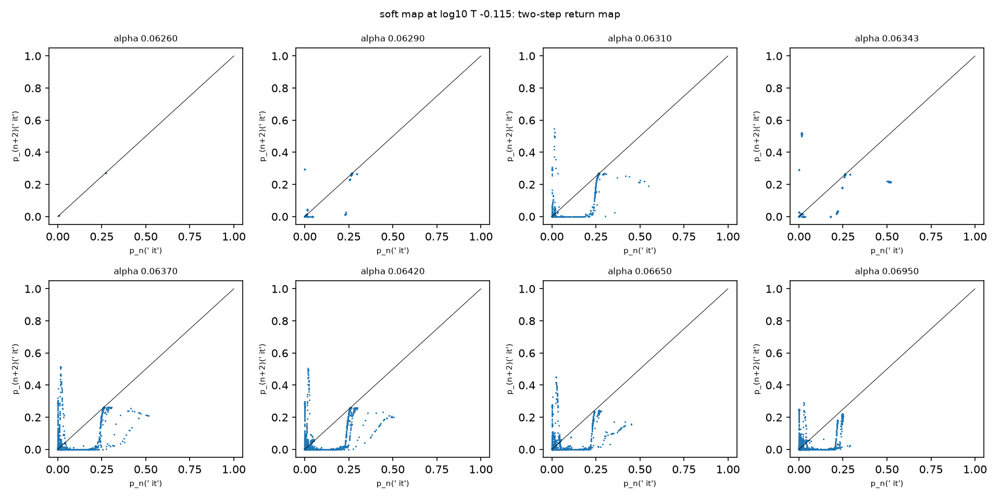
Figure 22: two-step return maps of the probability of " it" near the fold of the 2-cycle " is it" (Qwen2.5-0.5B-Instruct, philosophy direction at layer 12), at increasing distance from the fold. Source: byte-identical copy of the paper's figure (provenance.json).
Passage times predicted in advance
The fold of Figure 19, the " is it" 2-cycle at \(\log_{10}T=-0.115\), together
with a hostility fold, is where the passage-time formula was checked while it was
being worked out. Two later tests used four further folds. In each, an
independent implementation located two of them, computed their normal-form
coefficients by nested automatic differentiation, and committed every passage
forecast before any test trajectory was run. The four are the same 2-cycle fold
at \(\log_{10}T=-0.140\) and at \(\log_{10}T=-0.200\), the period-8 fold, and a
period-6 fold.
The first test. Target A is the 2-cycle’s fold at a new temperature: \(\log_{10}T = -0.140\), \(\alpha_c = 0.0670549\), \(a = -7.055\), \(b = -24.927\). Target B is the fold of the period-8 orbit of Table 4, continued in temperature at \(\alpha = 0.0717\): \(\log_{10}T_c = -0.1033462\), \(G = F^8\), \(a = -11.900\), \(b = -152.05\) per unit \(\log_{10}T\). Each target had four distances and three starting points per distance: the beginning of the channel, its midpoint, and the beginning after a transverse kick. Of the 24 forecasts of the primary predictor, the iterated quadratic map, 23 fell within one iterate of the measured passages (Table 7). Seven of the 24 forecasts are five iterates or shorter, where a single iterate is 20% or more of the passage; of the 17 longer forecasts, 16 fell within one iterate. The criterion fixed in advance, that every row pass, failed by one row: for target A, midpoint start, \(\varepsilon = 3\times10^{-6}\), the forecast was 61 and the measurement 59. All full-channel passages and all passages after a transverse kick were within one iterate.
The misses are not symmetric: every nonzero residual of a midpoint or kicked start, here and at the two folds tested before (Table 5 and the hostile fold of Hostile loops and a dome of windows), is negative, 17 of 17 (two-sided sign test, \(p = 2^{-16} \approx 1.5\times10^{-5}\)). The measured passages are systematically shorter than the iterated quadratic map, by one or two iterates. The design also fixed a secondary comparison, the continuous passage integral \(\int du/(a\varepsilon + bu^2)\) of the same normal form, whose closed form is the arctangent usually quoted for saddle-node bottlenecks. It came within one iterate of all 24 measurements (errors from \(-0.41\) to \(+0.92\)) and gives 58.56 for the failing row. At that starting point the two forms already differed by 2.4 iterates before any measurement: iterating the quadratic map from the start \(u_{\mathrm{in}}\) to the exit \(U\) adds about \(\tfrac12\ln[f(U)/f(u_{\mathrm{in}})]\) steps to the integral, with \(f(u) = a\varepsilon + bu^2\), most at small \(\varepsilon\) and at the midpoint start. Which of the two forms the full map follows is not settled by this test, and it does not let us promote the secondary comparison after the fact.
| \(\varepsilon\) | Target A (\(G = F^2\)): measured / predicted | Target B (\(G = F^8\)): measured / predicted |
|---|---|---|
| \(3\times10^{-6}\) | 118/118, 59/61, 117/118 | 26/26, 13/14, 25/26 |
| \(1\times10^{-5}\) | 56/56, 28/29, 56/56 | 10/10, 5/5, 10/10 |
| \(3\times10^{-5}\) | 26/26, 13/14, 26/26 | 4/4, 2/2, 4/4 |
| \(1\times10^{-4}\) | 10/10, 5/6, 10/10 | 2/2, 1/1, 2/2 |
Table 7: the first prospective passage test, at two folds that did not shape the mechanism. Each cell lists the full-channel, midpoint and full-plus-transverse starts as measured / predicted iterates of \(G\). Predictions come from the iterated quadratic normal form, with coefficients from an independent implementation, fixed before the test runs. Bold: the one row outside the one-iterate criterion. The shortest period-8 rows give only weak relative accuracy. Source: the paper's prospective table (provenance.json).
The second test. The first test left open which form of the normal form the full map follows, and its shortest forecasts carried little weight. The second test, also fixed before any trajectory was run, therefore made the continuous passage integral its primary predictor and the discrete count its secondary, and chose the distances so that every full-channel forecast is at least 16 iterates and every midpoint forecast at least 8. Its two folds are again fresh. Target C is the 2-cycle’s fold at \(\log_{10}T = -0.200\): \(\alpha_c = 0.0713690\), \(a = -10.9505\), \(b = -25.3300\). Target D is the fold of a period-6 orbit, a different family, at \(\log_{10}T = -0.087439\): \(\alpha_c = 0.0756329\), \(G = F^6\), \(a = -72.695\), \(b = 72.237\). Distances \(\varepsilon = q^2/(ab)\) with \(q = 0.08\), 0.05, 0.03 and 0.018 give both targets the same forecasts (Table 8).
At the 2-cycle’s fold the integral held in all 12 rows, and every measured count was the forecast rounded up. At the period-6 fold the midpoint passages held as well, but passages started at the beginning of the channel came in short, by 0.4 to 5.7 iterates and more so closer to the fold, so the primary criterion failed, 18 of 24 rows (the discrete count passed 16 of 24). From the fold point to the exit the period-6 passages follow the normal form; it is the first half of the channel that is crossed faster. Terms beyond the quadratic normal form on that side, or the curvature of the center manifold at the beginning of the channel, are candidate causes that this test does not resolve. A sign hypothesis fixed with the design, that midpoint and kicked passages do not exceed the discrete count, held in all 16 rows.
| \(q\) | Forecast, full / midpoint | Discrete count, full / midpoint | 2-cycle fold: measured | Period-6 fold: measured |
|---|---|---|---|---|
| 0.08 | 22.40 / 11.20 | 23 / 12 | 23, 12, 23 | 22, 11, 22 |
| 0.05 | 44.29 / 22.14 | 45 / 23 | 45, 23, 45 | 42, 22, 42 |
| 0.03 | 85.29 / 42.64 | 86 / 44 | 86, 43, 86 | 81, 43, 82 |
| 0.018 | 154.75 / 77.37 | 155 / 80 | 155, 78, 155 | 149, 78, 150 |
Table 8: the second passage test, fixed before any passage was run. Distances \(\varepsilon = q^2/(ab)\) give both folds the same forecasts. Forecast: the continuous passage integral from the start to \(U\) (primary); discrete count: the iterated quadratic map (secondary). Measured iterates of \(G\) are listed for starts at the beginning of the channel, at its midpoint, and at the beginning after a transverse kick. Bold: outside one iterate of the primary forecast. Source: the paper's second prospective table (provenance.json).
Over both tests, the continuous passage integral came within one iterate of 42 of 48 passages; all six misses are passages from the beginning of the channel at the period-6 fold, short by 3.1 to 5.2%.
The fold and flip curves of the stripes
Folds and flips are points on a line through the parameter plane; followed through the plane by continuation, they become curves. Continued for 80 points with a float64 test function, the fold curve of the period-8 orbit keeps its critical multiplier within \(1 \pm 6\times10^{-6}\), follows the stripe’s upper edge and caps its top near \(\log_{10}T = -0.065\) (Figure 18). At \(\alpha = 0.0717\) the stripe lies between a flip at \(\log_{10}T = -0.128955\) and the fold at \(-0.1033462\). Continued downward, the flip curve keeps its multiplier at \(-1\) for 115 points to \((\alpha, \log_{10}T) = (0.0776, -0.402)\), with two reversals of its direction near \((0.0750, -0.219)\) and \((0.0746, -0.206)\), and the fold curve keeps its multiplier at \(+1\) for 120 points to \((0.0758, -0.200)\). Located by bisection along the curve, the two reversals of the flip curve, at \((0.074955, -0.219336)\) and \((0.074608, -0.206007)\), carry no second multiplier near the unit circle (the next ones are \(3\times10^{-7}\) and \(1\times10^{-5}\)). On a flip curve the direction can reverse only where a second multiplier reaches \(+1\), so both are tight but smooth turns of the curve in the parameter plane, not codimension-two points.
The accumulation boundary. The fold curve of the 2-cycle " is it", continued
from \((\alpha, \log_{10}T) = (0.0628, -0.115)\) in both directions (38 and 126
points, critical multiplier 1 to \(10^{-7}\), no cusp), traces the boundary of the
period-2 region in Figures 18 and
2. The stripe fan accumulates on this boundary, as the
mechanism requires. Further along one direction, outside the plotted window,
another multiplier leaves the unit circle (moduli up to 11). Located along the
curve, this second real multiplier reaches \(+1\) at
\((\alpha, \log_{10}T) = (0.035628, -0.341724)\), where the eigenvectors of the two
multipliers at \(+1\) coincide to \(3\times10^{-4}\) degrees: a double multiplier
\(+1\) with a Jordan block, the 1:1 resonance of maps (the analog of a
Bogdanov-Takens point of flows, where a fold meets an oscillation). The fold curves
of the other windows, with their cusps, are described in
Fold curves with cusps.
The fold law at other folds and other sizes
The fold law recurs elsewhere. Steered along hostility, the 0.5B map’s windows
accumulate on the fold of the 2-cycle "!Yes", and their fold edges rise by 2.235
per added repetition in \(1/\sqrt{\log_{10}T_c - \log_{10}T_{\mathrm{fold}}}\),
against 2.296 predicted by the fold’s normal form for full passages: within 3%,
without a fitted parameter (Hostile loops and a dome of windows).
We also tested whether the mechanism, windows accumulating on the fold of a short cycle with \(d_N = C/(N + N_0)^2\), recurs in larger models. The criterion, a constant \(d_N(N + N_0)^2\) within 10% over at least four windows for one offset \(N_0\), was fixed before the lines were computed; a disclosed correction to the selector of the period progression after the first scoring kept the conclusions for the nearest four windows and changed which farther windows were selected.
- Qwen2.5-1.5B (philosophy direction, layer 14, \(\alpha = 0.058588\)). The period-4 orbit folds at \(\log_{10}T_c = -0.0912029\) (multiplier 1 to \(3\times10^{-14}\), next modulus 0.008), with normal-form coefficients \(a = -7.16\) per unit \(\log_{10}T\) and \(b = -21.09\), so \(ab = 151.0\). A float64 line of 1700 cells, 1570 of them above the fold, shows windows of periods \(4N\) accumulating on it, from single cells at periods 44 to 64 to a wide period-12 window. Measured in \(\log_{10}T\) from \(\log_{10}T_c\) to their edges nearest the fold, the four nearest resolved windows (periods 28 to 40) meet the criterion within 0.12% (\(\delta = -0.99\), \(C = 0.0612\)). With the windows farther out the spread rises to 10.3 to 14.0%; there several periods recur in multiple disconnected runs on the line’s \(10^{-5}\) grid, and grid-spaced edges no longer identify the fold edges.
- Qwen2.5-7B (\(\alpha = 0.051429\)). The period-2 orbit folds at \(\log_{10}T_c = -0.2040156\) (next modulus 0.0092, \(ab = 55.7\)), and odd windows accumulate on it. The nearest four and five (periods 11 to 17 and 9 to 17) meet the criterion within 4.5%, and six (to period 7) within 6.1%. Each window’s own doubling or tripling lies on its far side, as for the 0.5B windows of periods 16 to 20; this organization is consistent with fold edges on the near side, and the fitted distances use grid estimates of those edges.
The effective passage fraction \(f = \sqrt{Cab}/\pi\) is about 0.97 at 1.5B and 0.78 to 0.81 at 7B, against 0.58 at 0.5B. The fold and its window law thus recur at all three sizes, while \(f\), an effective constant that absorbs the global reinjection, differs between the models. With one fold per model, crossed in different coordinates (\(\alpha\) at 0.5B, \(\log_{10}T\) at 1.5B and 7B), no trend of \(ab\) with size can be read.
A period-doubling cascade and a proof
Feigenbaum ratios
The crescent of Figure 2 holds the second classical route to chaos, the period-doubling cascade. A period doubling, also called a flip, happens when a loop that repeats every \(p\) steps becomes unstable and is replaced by a loop of \(2p\) steps that alternates between two slightly different copies of the old one. In a cascade the doublings come faster and faster, \(p\), \(2p\), \(4p\), \(8p\) and so on, until infinitely many have happened at a finite parameter value, the accumulation point; beyond it the motion is chaotic. In 1978 Mitchell Feigenbaum found that, for a large class of systems, the parameter intervals between successive doublings shrink by the same factor, \(\delta = 4.6692\ldots\), whatever the details of the system (Feigenbaum, 1978). Measuring the ratios of those intervals in a language model therefore tests directly whether its loop belongs to that class.
"\n\nThe existence" doubles to periods 6, 12, 24 and onward. Along the cut that
we followed furthest, the ratios of successive intervals approach Feigenbaum’s
constant from below; the last one, 4.6688, lies within 0.008% of it. The first
ratios depend strongly on where a cut crosses the crescent, which refuted an
explanation that we had written down in advance. Figure 24
shows the cascade as a picture.
How a flip is located. Every periodic orbit has multipliers: the factors by which a small displacement from the orbit is stretched or shrunk over one full cycle, one for each direction. At a flip one multiplier passes through \(-1\): a displacement along that direction flips sign each cycle and stops shrinking. We locate each flip in float64 as the parameter at which the orbit’s critical multiplier equals \(-1\), and record the next-largest multiplier modulus, which says how strongly every other direction is squeezed. The ratios are
\[ \delta_n = \frac{\alpha_n - \alpha_{n-1}}{\alpha_{n+1} - \alpha_n}, \]where \(\alpha_n\) is the steering strength of the \(n\)-th flip along a line of fixed temperature. For a cascade in the universality class of one-dimensional maps with a quadratic maximum, \(\delta_n\) tends to \(\delta\). Universality of this kind is expected for strongly dissipative maps of any dimension (Feigenbaum, 1979; Collet, Eckmann, and Koch, 1981), and along these cascades the next multiplier modulus becomes tiny: the orbits are effectively one-dimensional.
A first cut. Along \(\log_{10}T = -0.14798\) the map’s cells show period 3 over 25 columns, period 6 over about 14, period 12 over 4 and period 24 in one column, followed by a chaotic core. The doubled loops repeat the same leading tokens twice and four times, with alternating probabilities. Table 9 lists the flips. The first two ratios, \(\delta_2 = 2.844\) and \(\delta_3 = 2.859\), are far from Feigenbaum’s 4.6692, even though from the second flip on the orbits are effectively one-dimensional (next modulus 0.0023, \(2\times10^{-6}\), \(2\times10^{-12}\)). The next ratio, \(\delta_4 = 3.781\), is markedly larger. The first four flip parameters agree between completed float64 computations on a CPU and an H100 to \(4\times10^{-15}\).
| \(n\) | Orbit | Flip parameter \(\alpha_n\) | Next modulus | Ratio \(\delta_n\) |
|---|---|---|---|---|
| 1 | 3 → 6 | 0.0654807769499 | 0.088 | |
| 2 | 6 → 12 | 0.0659055406325 | 0.0023 | 2.844 |
| 3 | 12 → 24 | 0.0660549041785 | \(2.4\times10^{-6}\) | 2.859 |
| 4 | 24 → 48 | 0.0661071412523 | \(2.3\times10^{-12}\) | 3.781 |
| 5 | 48 → 96 | 0.0661209563174 | \(<10^{-13}\) | 4.365 |
| 6 | 96 → 192 | 0.0661241213732 | \(<10^{-13}\) | 4.596 |
| 7 | 192 → 384 | 0.0661248100141 | \(<10^{-13}\) | 4.653 |
| 8 | 384 → 768 | 0.0661249580173 | \(<10^{-13}\) |
Table 9: flips of the crescent's doubling sequence along \(\log_{10}T = -0.14798\) (Qwen2.5-0.5B-Instruct, philosophy direction at layer 12, float64). For the first five flips the critical multiplier is real and differs from \(-1\) by at most \(4\times10^{-10}\), with Newton residuals below \(4\times10^{-13}\). The sixth flip was located at the precision floor of the period-96 multiplier (critical value \(5.7\times10^{-7}\) from \(-1\)); its location is uncertain by about \(2\times10^{-12}\), which changes \(\delta_5\) by less than \(10^{-5}\). The seventh is clean (critical value \(-1.000000016\)). The eighth was accepted at the precision floor of the period-384 multiplier (\(5.3\times10^{-5}\) from \(-1\), acceptance threshold \(10^{-4}\)); its location is uncertain by about \(4\times10^{-12}\), which changes \(\delta_7\) by about \(10^{-4}\). For the logistic map the first ratios are 4.751, 4.656 and 4.668. Source: the paper's cascade table (provenance.json).
Superstable points. Following a cascade by its flips becomes unreliable at long periods: past period 48, Newton’s method, asked for a just-born doubled orbit, slid onto the half-period orbit, which also repeats after the doubled period. We therefore also located the superstable parameters \(s_p\). An orbit is superstable when its critical multiplier is exactly zero, so that a displacement along the critical direction is erased in one cycle. This happens once in the middle of each period band. There the orbit attracts, so forward iteration finds it, and it cannot be confused with its parent. Through period 768 the superstable ratios are 3.19, 4.02, 4.478, 4.625 and 4.660 (Table 10). The last three come from parameters resolved to \(10^{-14}\) and differ from Feigenbaum’s value by 0.19, 0.044 and 0.0097; from 4.02 on, the distance shrinks by factors of 3.4, 4.3 and 4.6. The flip ratios 2.84, 2.86, 3.78, 4.36, 4.60 and 4.65 rise in step (Figure 23), and the accumulation point lies near \(\alpha_\infty \approx 0.0661250\). The early superstable values are less precise: other eigenvalues of the period-12 and period-24 orbits blur the root, so \(s_{12}\) and \(s_{24}\) are known only within brackets of \(1.24\times10^{-5}\) and \(6.9\times10^{-7}\), and the ratios 3.19 and 4.019 have worst-case ranges [2.895, 3.338] and [4.019, 4.101].
| Period \(p\) | Superstable parameter \(s_p\) | Bracket width | Ratio |
|---|---|---|---|
| 12 | 0.0659717 | \(1.24\times10^{-5}\) | |
| 24 | 0.06608014 | \(6.9\times10^{-7}\) | 3.19 |
| 48 | 0.066114132784466 | \(3.3\times10^{-15}\) | 4.019 |
| 96 | 0.066122589892689 | \(7\times10^{-15}\) | 4.4779 |
| 192 | 0.066124478510077 | \(6.4\times10^{-15}\) | 4.6251 |
| 384 | 0.066124886853811 | \(5\times10^{-15}\) | 4.6595 |
| 768 | 0.066124974490236 | \(4.1\times10^{-15}\) |
Table 10: superstable parameters of the crescent's doubling sequence along \(\log_{10}T = -0.14798\). The ratio in each row is \((s_p - s_{p/2})/(s_{2p} - s_p)\). Across each bracket the critical multiplier of the period-\(p\) orbit changes sign, with Newton residuals below \(3\times10^{-13}\); at period 768 the residual is \(1.2\times10^{-12}\). Brackets for periods 12 and 24 are the closest points where the critical multiplier is cleanly identified. Source: the paper's superstable table (provenance.json).
![Interval ratio delta_n against the doubling level n from 1 to 7, with a dotted horizontal line at Feigenbaum’s delta, 4.669. Five sequences: flips of the 0.5B crescent at log10 T = -0.148 (blue circles) start near 2.844 and rise toward the line; superstable points at the same cut (blue open squares, one with an error bar) rise alongside them; flips at log10 T = -0.156 (green diamonds) start with an off-scale first ratio of 14.9, marked by an arrow, then rise toward the line; superstable points at -0.156 (green open diamonds) and the flips of Qwen2.5-1.5B (red triangles) rise toward it as well. All sequences end close to the dotted line.](fig-feigenbaum-ratios.png) Source: this research note.
Source: this research note.
Figure 23: finite-order interval ratios of the doubling sequences: the crescent of Qwen2.5-0.5B-Instruct (philosophy direction, layer 12), from flips and from superstable points, and the route to chaos of Qwen2.5-1.5B (philosophy direction, layer 14), from flips. A superstable ratio spans half-bands, so it is plotted half a level after the flip ratio of its first band. Bars: worst-case ranges from the brackets of \(s_{12}\) and \(s_{24}\). At \(\log_{10}T = -0.148\), and in the 1.5B model, the ratios rise toward \(\delta\) from below; the last superstable ratio at \(-0.148\) is within 0.21% of it, and the last 1.5B ratio (4.665) within 0.1%. At \(\log_{10}T = -0.156\) the first ratio, 14.9, lies off the scale (arrow), and the later ratios approach \(\delta\) from below, the last (4.6688) within 0.008% of it, and within 0.015% over the location uncertainty of the period-384 flip. Its first two superstable ratios carry no bars: the brackets of \(s_{12}\) and \(s_{24}\) allow [3.40, 29.3] and [1.01, 4.65]. Each sequence ends at the deepest level computed: the flips at \(-0.148\) at period 384, the superstable points at period 768, the 1.5B route at period 256, and the cut at \(-0.156\), which we followed furthest, at the 768 → 1536 flip. Source: byte-identical copy of the paper's figure (provenance.json).
An explanation that failed. The small early ratios called for an explanation, and we first considered a crossover. Softmax at temperature \(T\) is a smoothed argmax, so the reduced one-dimensional map might have a nearly corner-like maximum, rounded only on a scale set by \(T\). Early doublings would then see the corner, where ratios tend toward 2, and later ones the smooth quadratic core. This predicts smaller early ratios at lower temperature. We fixed that prediction before locating the flips along two lower cuts, and it fails. At \(\log_{10}T = -0.156\) the first ratio is 14.93, five times its value at \(-0.148\) (Table 11). At \(-0.152\) the continued period-12 solution collapsed onto its period-6 parent near \(\alpha \approx 0.0657\), and the forward search found no next flip. This is compatible with a doubling bubble (a doubling that undoes itself further along the cut), but we did not locate its reverse boundary or exclude a narrower cascade on that cut. The early ratios thus depend strongly on where a cut crosses the crescent, and we withdraw the crossover explanation.
The cut followed furthest. The later ratios at \(\log_{10}T = -0.156\) behave as universality requires: 3.124, 4.4988, 4.6208, 4.6618, 4.6673 and 4.6688. Their deviations from \(\delta\) are \(-1.55\), \(-0.17\), \(-0.048\), \(-0.0074\), \(-0.0019\) and \(-0.00036\). They keep one sign, from the third on each step closes the gap by a factor of 3.5 to 6.5, and Aitken’s \(\Delta^2\) extrapolation of the last three ratios (a standard way to estimate the limit of a converging sequence) gives 4.6694. The last ratio uses the flip of the period-768 orbit, located with \(\lvert\mu+1\rvert = 4.1\times10^{-7}\). The penultimate flip, of the period-384 orbit, approaches the precision floor of its multiplier, a product of 384 step Jacobians. On an H100 the computed \(\mu + 1\) scatters by \(1.8\times10^{-5}\) about a straight line near the root, which gives a location uncertainty of about \(\pm3.3\times10^{-13}\), an estimate rather than a certified bound. A workstation GPU located it at \(\alpha = 0.06510347354866666\), with \(\lvert\mu+1\rvert = 4\times10^{-9}\), \(9\times10^{-14}\) from the H100 estimate. Over that range \(\delta_7\) lies between 4.6672 and 4.6674, the last ratio \(\delta_8\) between 4.6685 and 4.6692, and the extrapolated value between 4.6688 and 4.6702, an interval that contains \(\delta\).
The superstable points along the same cut, through period 384, give the ratios 10.21, 3.713, 4.572, 4.643 and 4.6646. Before computing them we fixed the prediction that the last two superstable ratios at this new temperature would lie within 5% of \(\delta\), in [4.436, 4.902]. Through period 192 the point estimates 4.572 and 4.643 met it, but the bracket envelope of 4.572 did not; extending the computation to period 384 later gave the pair 4.643 and 4.6646, both inside the interval. The last, 4.6646, rests on parameters resolved to \(5\times10^{-15}\) and differs from \(\delta\) by 0.1%. Finite-order ratios also depend on the parameter coordinate, so only the trend of later ratios can test universality.
| \(n\) | Orbit | Flip parameter \(\alpha_n\) | Next modulus | Ratio \(\delta_n\) |
|---|---|---|---|---|
| 1 | 3 → 6 | 0.0644766567385 | 0.12 | |
| 2 | 6 → 12 | 0.0650493555308 | 0.045 | 14.93 |
| 3 | 12 → 24 | 0.0650877194158 | \(7.0\times10^{-5}\) | 3.124 |
| 4 | 24 → 48 | 0.0650999993318 | \(4.3\times10^{-7}\) | 4.4988 |
| 5 | 48 → 96 | 0.0651027289524 | \(1.8\times10^{-13}\) | 4.6208 |
| 6 | 96 → 192 | 0.0651033196816 | \(2.9\times10^{-14}\) | 4.6618 |
| 7 | 192 → 384 | 0.0651034463988 | \(1.5\times10^{-14}\) | 4.6673 |
| 8 | 384 → 768 | 0.0651034735487 | \(3.2\times10^{-13}\) | 4.6688 |
| 9 | 768 → 1536 | 0.0651034793638 | \(2.9\times10^{-14}\) |
Table 11: flips of the crescent's doubling sequence along \(\log_{10}T = -0.156\), in float64 (Qwen2.5-0.5B-Instruct, philosophy direction at layer 12). Flips 1 to 3 were computed on an H100 and flips 3 to 8 on a workstation GPU; the two computations of flip 3 agree to \(4\times10^{-16}\), and an H100 computation of flip 8 from its evaluations at the multiplier's precision floor lies \(9\times10^{-14}\) away. Every critical multiplier is real; for flips 1 to 8 it differs from \(-1\) by at most \(5\times10^{-8}\), and for flip 9 by \(4.1\times10^{-7}\). For comparison, Feigenbaum's constant is \(\delta = 4.6692\ldots\), and the first ratios of the logistic map are 4.751, 4.656 and 4.668. Source: the paper's cascade table (provenance.json).
Figure 24 shows the cascade itself as a bifurcation diagram, the classic picture of a route to chaos: for each value of the steering strength, the states that the loop keeps visiting after its transient. In three nested zooms each fork sits at a flip located independently by Newton’s method, and the largest Lyapunov exponent touches zero at every flip and turns positive beyond the accumulation point.
![Three stacked bifurcation diagrams, each with a strip below showing the largest Lyapunov exponent. (a) Over the whole cut, the states of the loop projected on the steering direction form three branches of a period-3 orbit that each fork, fork again and fill into red chaotic bands, which end abruptly at alpha 0.065278, where the attractor jumps to two flat lines of a period-2 orbit; the exponent strip touches zero at each fork and turns positive in the chaotic range. (b) A zoom on one branch shows forks into 2, 4 and 8 branches before red chaos. (c) A deeper zoom shows the same pattern again on a much finer scale. Dashed vertical lines mark the flips located by Newton’s method; each fork opens at one of them.](fig-feigenbaum-tree.png) Source: this research note.
Source: this research note.
Figure 24: the Feigenbaum tree of the crescent cascade (Qwen2.5-0.5B-Instruct, philosophy direction at layer 12, \(\log_{10}T = -0.156\)): float64 line scans of 1600, 1360 and 1000 cells, each with 3000 transient steps and 256 recorded states projected on the unit steering direction (red: chaotic cells). (a) The whole cut: period 3 doubles into chaos, which ends at \(\alpha = 0.065278\), where the attractor jumps to a strongly contracting period-2 orbit. (b, c) Zooms in both coordinates on the branch boxed in the panel above, showing the doublings 6 → 12 → 24 → 48 and 24 → 48 → 96 → 192. Dashed lines: flips located by Newton's method (Table 11); dotted line: the accumulation point estimated from the last two flips with \(\delta\). Under each panel, the largest Lyapunov exponent touches zero at every flip and turns positive beyond the accumulation point. Near a flip the orbit converges slowly, so with 3000 transient steps each fork opens slightly before its Newton flip, by \(8.4\times10^{-6}\) in \(\alpha\) at the first and by at most \(1.1\times10^{-6}\) at the later ones. Source: byte-identical copy of the paper's figure (provenance.json).
Other routes and a doubling that undoes itself. The route to chaos of
Qwen2.5-1.5B behaves the same way: its last ratio, 4.665, is within 0.1% of
\(\delta\) (Figure 23). Not every doubling leads to
chaos, however. In the high-temperature region, along \(\log_{10}T = 0.0319\), the
period-2 loop "\n\nThe" flips at \(\alpha = 0.0753534\) and its doubled loop at
\(0.0736921\). These orbits are far from one-dimensional (next moduli 0.38 and
0.28). Toward smaller \(\alpha\) the period-8 orbit does not double again: near
\(\alpha \approx 0.0705\) it merges back into the period-4 orbit. Along this cut it
is a period-doubling bubble, bounded by two flips of the period-4 orbit, not the
start of a cascade to chaos.
The local theory still applies there. Near a flip, the dynamics along the critical direction reduce to a normal form, the simplest equation with the same local behavior:
\[ \eta \mapsto -(1+\beta)\,\eta + c\,\eta^3 , \]where \(\eta\) is the coordinate along the critical direction, \(\beta\) measures the distance past the flip (it is \(-\mu_p - 1\), computed from the period-\(p\) orbit’s multiplier), and the cubic coefficient \(c\) is computed from the network’s first, second and third derivatives along the orbit, with no fitting. To leading order the normal form predicts the doubled orbit: its half-amplitude along the critical direction is \(\sqrt{\beta/c}\), and its multiplier is \(1 - 4\beta\). At the smallest offset the amplitude ratios to the prediction are 1.005 and 1.003, and the multipliers agree within \(1.5\times10^{-4}\) and \(5\times10^{-5}\); the larger discrepancies at larger offsets are consistent with higher-order corrections (Table 12). These finite comparisons support the leading-order prediction; they do not establish the order of the remainder.
| Flip | Offset | \(\beta\) | Amplitude ratio | Doubled multiplier | \(1-4\beta\) |
|---|---|---|---|---|---|
| period 2 → 4 (\(c = 6.49\times10^{3}\)) | \(2.5\times10^{-5}\) | 0.0092 | 1.005 | 0.96335 | 0.96320 |
| \(1\times10^{-4}\) | 0.0364 | 1.020 | 0.8572 | 0.8545 | |
| \(4\times10^{-4}\) | 0.1400 | 1.078 | 0.513 | 0.440 | |
| period 4 → 8 (\(c = 1.24\times10^{4}\)) | \(2.5\times10^{-5}\) | 0.0175 | 1.003 | 0.92987 | 0.92983 |
| \(1\times10^{-4}\) | 0.0685 | 1.012 | 0.7257 | 0.7260 | |
| \(4\times10^{-4}\) | 0.2470 | 1.056 | complex | 0.012 |
Table 12: the flip normal form where the map is far from one-dimensional: the two flips of the high-temperature bubble (next moduli 0.38 and 0.28). At offsets below each flip in \(\alpha\), \(\beta = -\mu_p - 1\) from the period-\(p\) orbit's multiplier; amplitude ratio: the doubled orbit's half-amplitude along the critical direction divided by the prediction \(\sqrt{\beta/c}\); doubled multiplier: computed, against the prediction \(1 - 4\beta\). Both coefficients are positive (the doubling is supercritical, as stable doubled orbits require). Three of five offsets per flip are shown. Source: the paper's flip normal-form table (provenance.json).
A computer-assisted proof of one periodic orbit
Numerical evidence, however careful, is not proof. For one orbit there is a proof. At \(\alpha = 0.071674\) and \(\log_{10}T = -0.115\), read as exact binary64 rationals, the expected-embedding map of the stored Qwen2.5-0.5B-Instruct checkpoint (all 24 layers, the full 151,936-token readout, the fixed 37-token prefix and the steering at layer 12) has a primitive period-8 orbit, the stripe orbit of Table 4, and the orbit is locally attracting. It is the unique multiple-shooting root in a product of eight boxes of coordinate radius \(2^{-640}\) around refined centers. (The temperature is the real number \(\exp(\ln 10\cdot\log_{10}T)\) for that exact dyadic \(\log_{10}T\), and the steering is added after block 12 counted from zero.)
Ball arithmetic (Arb; Johansson, 2017) encloses the map and its Jacobian over each box, in \(8\times896\) directions. A Krawczyk-type inclusion (Krawczyk, 1969; Moore, Kearfott, and Cloud, 2009; Rump, 2010) for the preconditioned shooting system gives existence and uniqueness; separation of the first point from the points one, two and four steps later gives the primitive period; and a norm bound on powers of the enclosed monodromy gives attraction. The map is the real-number map of the stored constants: rotary angles, exponentials and square roots are real functions enclosed by the balls, not floating-point tables. An independent audit in exact rational arithmetic rechecked the saved witnesses but did not recompute the enclosures of the model, which rest on one execution. The proof trusts the Python, FLINT and Arb software stack and the stored weights. It does not exclude other period-8 points in the first box, and it says nothing about the window’s boundaries or global organization.
A proof of chaos is out of reach of the same method. It would need enclosures of the map over boxes many orders of magnitude larger, as in a horseshoe verified by covering relations. The period-8 proof is unaffected, but its ball arithmetic does not scale to large boxes: in a separate test, a box of radius \(2^{-80}\) already gave enclosures too wide to show that an RMS normalization at layer 3 divides by a positive number, because the enclosures overestimate through the layers. A proof of chaos therefore needs other verified methods.
Steering toward hostility
A second steering direction tests whether the organization of the philosophy-steered map is specific to one concept. We steer along a valence direction, the contrast of hostile statements against matched kind ones, built in the manner of contrastive activation addition (Rimsky et al., 2024); its cosine with the gratitude direction is \(-0.04\), so the two are nearly unrelated. (Sampled self-dialogue under the same steering is a different system, with a growing context and sampling noise, and is reported separately; here we follow the direction in the deterministic map.)
Hostile loops and a dome of windows
Steering the soft-token map along the hostility direction gives a plane with
chaos (a positive largest exponent in 10% of a coarse 128 × 192 float32 scan)
and with repeating text loops that are hostile: "Yes, that's crap" (period 6),
"a lie is" (3), "STUP…" (3), a loop on the Chinese word for insult and its
2-cycle, and others. They appear at \(\alpha\) above about 0.035 (the insult
loop) and above 0.065 (the rest). Around the period-6 loop the windows form a
dome (Figure 25), and toward higher temperature its texts
gain one "!Yes" after another (periods 6, 8, …, 20). In float64 the windows of
periods 12 to 20 are born in folds on their low-temperature side and end
in flips or \(+1\) crossings on the other, like the stripes of the
philosophy-steered map (A saddle-node bottleneck organizes the windows).
The period-6 window ends in a fold at \(\log_{10}T = -0.0991\), and the
continuations of the period-8 and period-10 windows failed to converge.
The windows accumulate on the fold of the 2-cycle "!Yes" at
\(\log_{10}T_c = -0.0462465357\) (\(\alpha = 0.083\); critical multiplier
0.9999999954, next modulus 0.050). The bottleneck mechanism explains why. Just
past a fold, the vanished orbit leaves a “ghost”, a narrow channel in which the
loop lingers for a time that grows like one over the square root of the distance
from the fold. Each added "!Yes" repetition needs one more passage through the
channel, so the distance of the \(n\)-th window’s fold from \(T_c\) should fall
like \(1/n^2\), and \(1/\sqrt{\log_{10}T_c - \log_{10}T_{\rm fold}}\) should
rise by a constant amount per added repetition. From period 16 on it rises by
2.235 per repetition. The fold’s normal form (\(a = -1.1683\), \(b = 44.525\),
with the distance measured in \(\log_{10}T\)) predicts \(\sqrt{\lvert ab\rvert}/\pi = 2.296\)
for full passages through the bottleneck, within 3% and without a fitted parameter.
An independent float64 implementation, written separately from ours, reproduces this fold (location to \(6\times10^{-10}\) relative, a simple real \(+1\) multiplier with next modulus 0.050) and its coefficients (\(ab\) to 8 parts per million). In that implementation, controlled passages started at \(\log_{10}T\) offsets \(-10^{-5}\), \(-3\times10^{-5}\) and \(-10^{-4}\) took 119/59, 61/31 and 27/13 iterates of \(F^2\) (full channel / from its midpoint), against quadratic forecasts fixed in advance of 118/61, 61/32 and 27/14. Five of the six are within one iterate; the smallest-offset midpoint missed by two, failing the criterion fixed in advance that all six be within one. Forecasts with finite endpoints (an arctangent formula), also fixed in advance, were within 0.923 iterates. These are controlled local transits. At the distances of the windows, the finite-channel correction to the asymptotic passage time is large, so the agreement of the window slope with the full-passage coefficient does not by itself show where the natural dynamics reinjects. The same type-I intermittency mechanism as in the philosophy-steered map is thus consistent with the hostile windows’ organization, which the local normal form supports; the controlled passages do not identify the natural reinjection or the global organization.
![Two panels. Left: a float32 map of the attractor’s period over steering along hostility minus kindness from 0.06 to 0.10 (horizontal) and log10 temperature from -0.20 to 0.06 (vertical), colored by period with chaos in black. A large orange period-6 dome labeled ‘Yes, that’s crap’ rises from the bottom, wrapped by thin colored bands of higher periods and black chaotic layers; a blue period-2 region labeled ‘!Yes’ fills the area above it. A dashed vertical line marks the cut at alpha 0.083 and a dotted horizontal line the float64 fold of the ‘!Yes’ 2-cycle. Right: one over the square root of the distance from the fold, against the number of ‘!Yes’ repetitions from 7 to 10; red dots for the window folds lie close to a red fitted line of slope 2.235 and a dashed normal-form line of slope 2.296, except the first dot, which lies above them.](fig-hostile-cascade.png) Source: this research note.
Source: this research note.
Figure 25: the hostility-steered soft-token map of Qwen2.5-0.5B-Instruct (layer 12). Left: period of the attractor in a float32 zoom (black: chaos), with the period-6 "Yes, that's crap" dome and its bands of added repetitions; dashed, the cut at \(\alpha = 0.083\); dotted, the float64 fold of the "!Yes" 2-cycle. Right: float64 fold edges of the windows (periods 14 to 20) against the number of "!Yes" repetitions; the dashed line is the normal-form prediction for full passages, anchored at the last window. Source: byte-identical copy of the paper's figure (provenance.json).
The spiral region and a period-7 body
A second region, near \((\alpha, \log_{10}T) = (0.06, 0.20)\), shows branches of period-7 and period-8 windows spiraling around the insult loop. In float64 the insult fixed point doubles into a 2-cycle at \(\alpha \approx 0.041\) and 0.079, and that 2-cycle has a Neimark-Sacker bifurcation in the spiral region: at \(\alpha = 0.062\) a complex pair of its multipliers crosses the unit circle near \(\log_{10}T = 0.1656\), turning 0.12 of a revolution per step of the 2-cycle. This does not explain the spiral branches. The two invariant circles born at a 2-cycle’s Neimark-Sacker point are exchanged by the map, so orbits locked on them have even periods, near 16 for this rotation, whereas the branches include period 7; and of four float32 cells on the branches, only one kept its period in float64. In dissipative flows, windows wind in nested spirals around points called periodicity hubs (Vitolo, Glendinning, and Gallas, 2011), and in the Rössler system the hub’s shape follows from a conjugacy to unimodal maps (Jones, 2012). We have not tested whether the branches here wind around such a hub.
Float64 zooms show more structure. In one branch a period-7 domain carries
period-14 crescents with period-28 cores along its lower edge, between period-1
and period-2 regions and a chaotic band. In the dome of the cascade the windows
are nested crescent arcs bounded by the "!Yes" 2-cycle region, and near
\((\alpha, \log_{10}T) = (0.087, -0.069)\) the period-12 and period-14 windows
bend into hooked, nested arches. These are the features that accompany shrimps
in the parameter planes of low-dimensional maps: a periodic body with doubling
crescents, and hooked windows.
The body’s boundary. In float64 the period-7 body is bounded by folds. At \(\log_{10}T = 0.1925\) the orbit exists between \(\alpha = 0.065966\) and 0.071188, and at \(\alpha = 0.066\) it ends in a fold at \(\log_{10}T = 0.19263\). Below that, the multiplier passes through \(-1\) twice (bracketed in [0.19176, 0.19196] and [0.18931, 0.19036]), so the period-14 crescent is a doubling bubble. Further down, the branch folds twice (0.18797 and 0.18922, the second located by continuing its fold curve; three coexisting period-7 orbits in between) before a third flip. All crossings are simple: the next modulus stays below \(1.5\times10^{-3}\), so only one multiplier is involved. An S-shaped pair of folds is what a cusp of the fold curves leaves on a nearby cut, the way a pleat in a sheet looks like an S when cut across.
Two cusps. When these boundaries are continued in the plane in float64 (Figure 26), each of the two fold curves reverses its direction once. At such a reversal, the oriented quadratic coefficient \(b\) of the fold’s normal form passes through zero, as it must; what makes the point a genuine cusp is that the cubic coefficient \(c\) and the unfolding determinant \(\det J\) are nonzero there (the cusp test explained in Fold curves with cusps). Between adjacent points, \(b\) goes from \(-23.9\) to \(+244.6\) on the upper fold (with \(a \approx 2.0\)) and from \(+31.2\) to \(-58.7\) on the lower one (with \(a \approx 0.55\)), while \(a\) stays away from zero. Located along the curves, the two cusps lie at \((\alpha, \log_{10}T) = (0.067213, 0.198983)\) and \((0.066611, 0.189382)\). There \(b\operatorname{sign}a\) is below \(1.3\times10^{-5}\) of its bracket values, \(c = -1.41\times10^{6}\) and \(-5.61\times10^{5}\), and \(\det J = 58.2\) and 55.2. At the points that bracket both sign changes the cubic coefficient is \(c \approx -1.4\times10^{6}\) to \(-2.0\times10^{6}\) (step agreement 5%; the smallest steps converge like the square of the step, and extrapolation leaves the sign) and \(-5.8\times10^{5}\) to \(-5.3\times10^{5}\). This supports nondegenerate cusps inside both brackets, and \(c < 0\) agrees with the three coexisting period-7 orbits, two of them stable, found between the S-shaped folds. The flip curve of the period-14 bubble lies inside the body and closes around the map’s period-14 cells.
At a fold point near the lower cusp (where \(b = 31.4\)) the estimated unfolding is nonsingular too (\(\det J = 53.5\), singular values 262 and 0.20). Its local predictions of how many period-7 orbits exist, and which are stable, at six offsets fixed in advance matched the orbits that Newton solves recovered when seeded at the predicted roots and the base state: in number at all six and in stability at five. The miss, at the largest offset beyond the edge of the region with three orbits, marks the range of the cubic model. The hostile period-7 body thus has the same skeleton as the period-6 window described under A period-6 window.
![A map of attractor periods over steering along hostility versus kindness (horizontal) and log10 temperature (vertical). A blue period-7 body fills the right and center, with orange period-1 cells at the upper left, a pink period-14 crescent and a red period-14 region with smaller rings in the lower middle, and green period-2 cells at the bottom right. Two black fold curves of the period-7 orbit cross the body, each ending in a gold circle marking a cusp, at (0.067213, 0.198983) and (0.066611, 0.189382). A red dashed flip curve into period 14 forms a closed loop around the pink crescent.](fig-hub-shrimp.png) Source: this research note.
Source: this research note.
Figure 26: the period-7 body of the spiral region (Qwen2.5-0.5B-Instruct, hostility direction at layer 12): attractor periods of a float64 zoom (white at \(\alpha < 0.062\): outside the zoom), the float64 fold curves of the period-7 orbit (black) and the flip curves into period 14 (red, dashed), with the two located cusps (gold). Source: byte-identical copy of the paper's figure (provenance.json).
Inside the body: doubling, chaos and windows
The interior of the body is shrimp-like too. At \(\log_{10}T = 0.1830\), float64 bifurcation diagrams through the body (Figure 27; 1400 cells per line) show the period-7 orbit doubling to periods 14 and 28 and entering chaos (largest exponent up to \(+0.1\)) for \(\alpha \approx 0.0659\) to 0.0673. Windows of periods 28, 35 and 42 sit inside the chaotic band, and the orbit then undoubles through 28 and 14 back to 7; the exponent touches zero at every doubling. Newton’s method converges at map cells to primitive orbits of periods 14, 28 and 21 (residuals \(3\times10^{-15}\), \(2\times10^{-14}\) and \(5\times10^{-13}\); spectral radii 0.08, \(4\times10^{-4}\) and 0.006). Periods 21, 35 and 42 are three, five and six times the body’s period, as expected for the windows that renormalization theory places inside the chaotic bands of a period-7 cascade: the chaos after a cascade repeats, on a smaller scale, the windows of the whole map.
Continued in temperature, the period-14 orbit flips into period 28 near \(\log_{10}T = 0.1841\) and back near 0.1857, the two ends of a doubling bubble that holds period 28 and chaos. Lower down, its branch is S-shaped (folds near 0.1824 and 0.18244, with three coexisting period-14 orbits between them) before another flip near 0.1819. All these crossings are simple (next modulus below \(4\times10^{-5}\)). A \(160^2\) float64 zoom of the lower body (Figure 28) shows this anatomy in the plane. The period-14 domain encloses a period-28 ring around a chaotic core. Period-21 windows sit in the chaotic region as thin crescents with legs, and curves of very negative exponent, where the orbits are superstable, run through the windows, as superstable lines run through the windows of low-dimensional maps. In this zoom 18% of cells are chaotic.
![Two bifurcation diagrams with Lyapunov strips. Left, along log10 temperature at alpha 0.0655: black curves of periodic states split and merge, interrupted by red clouds of chaotic cells; the exponent strip below dips to about -0.4 and rises above zero in the chaotic stretches, and colored bars mark cells of periods 7, 14, 21, 28 and 35. Right, along steering strength at log10 temperature 0.1830: period-7 curves double to 14 and 28, open into a broad red chaotic region in the middle with thin windows, then close back to period 7; the exponent touches zero at each doubling, stays slightly positive in the chaotic middle, and bars mark periods 7, 14, 28, 35 and 42.](fig-hub-cascade.png) Source: this research note.
Source: this research note.
Figure 27: inside the hostile period-7 body (Qwen2.5-0.5B-Instruct, hostility direction at layer 12): float64 bifurcation diagrams along temperature at \(\alpha = 0.0655\) (left) and along the steering strength at \(\log_{10}T = 0.1830\) (right). Top: the last 160 states of the attractor reached from the fixed start, projected on the steering direction (red: cells with a positive largest exponent). Bottom: largest Lyapunov exponent, with the cells of periods 7, 14, 21, 28, 35 and 42 marked (cells of other periods are not marked). On the right, period 7 doubles to 14 and 28, enters chaos with windows of periods 28, 35 and 42, and undoubles back to 7. Labels come from 400 measured steps after 1000 transient steps; with 2000 measured steps at two twin offsets, 135 of the 235 red cells on the left stay chaotic and 91 are periodic. Source: byte-identical copy of the paper's figure (provenance.json).
![Two panels of the lower period-7 body over steering strength and log10 temperature. Left, attractor periods: a large orange period-14 domain encloses a red period-28 ring around a black chaotic core; thin purple period-21 crescents with legs lie in the black chaotic region below, and green and blue period-2 and period-7 regions lie at the edges. Gold stars mark Newton-verified orbits of periods 28, 14 and 21. Right, the largest Lyapunov exponent on a blue-to-red scale: dark blue curves of strongly negative exponent, the superstable lines, sweep through the periodic regions in arcs and loops, and pale red speckle fills the chaotic areas. Black fold curves and red dashed flip curves cross both panels at the upper left.](fig-hub-zoom.png) Source: this research note.
Source: this research note.
Figure 28: the lower part of the period-7 body of the hostility-steered Qwen2.5-0.5B-Instruct map (layer 12) at higher resolution (\(160^2\) float64 cells). Left: period of the attractor (black: positive largest exponent; white: no period up to 48). Right: largest Lyapunov exponent (clipped); the darkest curves are superstable lines. Both panels: float64 fold (black) and flip (red, dashed) curves of the period-7 orbit, the two lines of Figure 27 (gray) and the Newton-verified orbits of periods 14, 28 and 21 (stars). Source: byte-identical copy of the paper's figure (provenance.json).
No one-dimensional shrimp center
In a shrimp of a one-dimensional map, two superstable curves of the window’s orbit cross at a doubly superstable center, the head (Gallas, 1994; Façanha, Oldeman, and Glass, 2013). We continued one period-7 orbit over a 31 × 31 grid of the body’s upper part and followed the sign of its leading multiplier (Figure 29). Its superstable curves form two arcs that approach each other near \((\alpha, \log_{10}T) = (0.0700, 0.206)\) and turn away without crossing at this resolution (\(10^{-4}\) in \(\alpha\), \(4.3\times10^{-4}\) in \(\log_{10}T\)). A finer grid of that approach (1155 cells, about 2 times finer in \(\alpha\) and 6 times finer in \(\log_{10}T\)) shows why. There the leading multiplier is tiny (median modulus \(9\times10^{-4}\)) and as small as the next one, and in 221 cells the two form a complex pair, in two wedges that flank the gap. Where a one-dimensional map would place its doubly superstable center, the orbit’s local linearization therefore has two comparable directions, and the sign of one leading real multiplier no longer defines a scalar superstable curve. Whether the dynamics there reduce to an effectively two-dimensional map is not tested.
Next to the body, the 7-step return maps of chaotic cells have a coarse one-extremum shape in every phase (Figure 30). A return map plots where a quantity lands one cycle later against where it was; a single hump is the signature of a logistic-like map. Binned coarsely into 16 intervals, every phase shows one interior extremum, while finer partitions keep extra extrema, especially in phases 4 and 5, which we do not attribute to noise. In two phases the points split into two thin strands, an observation of the projection that does not establish a second invariant dimension. Cobwebs on these maps, the staircase drawings that iterate a one-dimensional map by hand, show the doubling cascade and the chaos as on a one-humped interval map (Figure 31). On the tracked branch and in the sampled region, the body is therefore not the shrimp of a one-dimensional map. In the two-dimensional theory of Façanha et al. the head is not generic (see Three kinds of cusp); arcs that turn away resemble its Type B unfolding, but they follow the sign of the leading real multiplier, not the trace that the theory uses, so this is a comparison, not a test.
![Three panels. (a) The largest Lyapunov exponent of the period-7 cells over steering strength and log10 temperature, from yellow near zero to dark purple near -1: a body shaped like a fish with dark curving superstable lines inside, fold and flip curves at its lower left with two gold cusps, and a red box at the upper right. (b) Inside that box, one continued period-7 orbit: red where its leading multiplier is positive and blue where negative, with black zero curves forming two arcs, one bending down from the top and one up from the bottom, that approach each other in the middle without crossing; a cyan box marks the gap. (c) The cyan box enlarged: the logarithm of the leading multiplier’s modulus, darkest in the gap, with cyan crosses marking two wedges of cells where the two leading multipliers form a complex pair, and short white segments where the sign changes.](fig-superstable-lines.png) Source: this research note.
Source: this research note.
Figure 29: superstable structure of the hostile period-7 body (Qwen2.5-0.5B-Instruct, hostility direction at layer 12, float64). (a) Largest Lyapunov exponent of the period-7 cells, with fold (black) and flip (red, dashed) curves and the two located cusps (gold); dark curves are superstable lines. (b) One period-7 orbit continued over the red box of (a): sign of its leading multiplier (red positive, blue negative), dark where it is small, and its zero curves (black). The two arcs approach near \((0.0700, 0.206)\) without crossing. (c) Finer zoom of the cyan box of (b) (about 2 times finer in \(\alpha\), 6 times in \(\log_{10}T\)): logarithm of the leading multiplier's modulus. Crosses mark cells where the two leading multipliers form a complex pair; white segments mark sign changes between cells with a real leading multiplier. Where a one-dimensional map would have its center, the orbit's linearization has two comparable leading directions. Source: byte-identical copy of the paper's figure (provenance.json).
![A grid of 28 small scatter plots, four rows of cells by seven phases of the repeating text. Each plots the projection of the state one 7-step cycle later against its current value. In the top three rows, cells next to the period-7 body, phases 0 to 3 trace U-shaped valleys, phases 4 to 6 trace single humps, and in phases 4 and 5 the curve is doubled into two thin parallel strands. The bottom row, a cell on the hostile line, shows the same shapes broken into separate short pieces, the bands of band chaos.](fig-return-maps-body.png) Source: this research note.
Source: this research note.
Figure 30: seven-step return maps \(s_{n+7}\) against \(s_n\), for each phase of the 7-periodic text, of chaotic cells next to the hostile period-7 body (top three rows: \(\alpha = 0.07136\) to 0.07142, \(\log_{10}T = 0.2057\) to 0.2062) and on the hostile line of Figure 27 (bottom row: \(\alpha = 0.0655\), \(\log_{10}T = 0.1848\)); \(s\) is the projection on the leading principal component of that phase's states, which carries 89 to 100% of their variance. Binned coarsely (16 intervals), every phase has one interior extremum; finer partitions keep extra extrema, especially in phases 4 and 5, where the points also split into two thin strands. Source: byte-identical copy of the paper's figure (provenance.json).
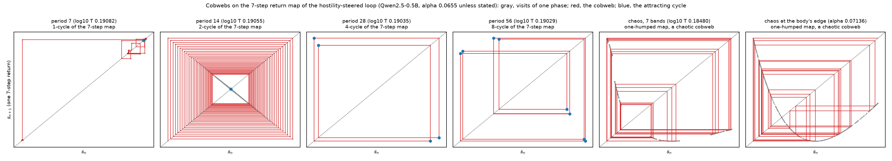
Figure 31: cobweb diagrams of the 7-step return map of the hostility-steered loop (Qwen2.5-0.5B-Instruct, layer 12, float64). \(s\) is the projection of one phase's states on their leading principal component. Left four panels: the doubling cascade at the right edge of the hidden-chaos window along \(\alpha = 0.0655\). As \(\log_{10}T\) falls from 0.19082 to 0.19029, the attracting set of the 7-step map (blue) is a fixed point (period 7 of the full loop), then a 2-, 4- and 8-cycle (periods 14, 28 and 56); the red cobweb shows the approach from the fixed start. Right two panels: chaotic cells of Figure 30, where the visits trace a one-humped map (gray) and the cobweb wanders over it. Source: byte-identical copy of the paper's figure (provenance.json).
Chaos behind a repeating text
A repeating text does not imply a periodic state. Along the temperature line of Figure 27 (left, \(\alpha = 0.0655\)), a longer test (2000 measured steps after 1000 transient steps, twins at offsets \(10^{-6}\) and \(10^{-9}\), whose exponents agree within 0.0031 in every chaotic cell) finds 182 chaotic cells among 1400 between \(\log_{10}T = 0.176\) and 0.191. In 65 of them the leading token repeats exactly for all 2000 steps while the state moves chaotically; in 59 of these the period of the text is a multiple of 7, most often 7 or 28.
In the strongest case (\(\log_{10}T = 0.18995\), largest exponent 0.091 at both
offsets; Figure 32), the sampled states fall into seven
separated groups, one per phase of the text, visited in a fixed order and at
least 0.098 of the state norm apart (a property of the samples, not a proof of
separated invariant sets). Each group lies inside one cell of the partition by
leading token, so the text "I!Yes heels↵↵pee↵↵" (↵: a line break) repeats at
every one of the 2000 steps. This is band chaos, the regime of a chaotic
attractor that is a finite union of pieces visited cyclically
(Grossmann and Thomae, 1977; Lorenz, 1980).
The partition by leading token is not generating: in the language of symbolic
dynamics, the sequence of tokens does not carry enough information to pin down the
state, so the text cannot reveal the chaos. Inside a group the states lie close to
a curve, a strongly elongated cloud. Read once per repetition through the
probability of the last token, the return relation is well approximated by a
smooth map with a single quadratic maximum, the shape of the logistic map: a
degree-8 polynomial fits it to \(4\times10^{-4}\) of its range, and the fitted
map’s Lyapunov exponent, 0.647 per repetition, is within 2% of the full map’s
0.636 per seven steps, measured with twin trajectories in all 896 dimensions.
![Three panels for one cell of the hostility-steered 0.5B map (alpha 0.0655, log10 temperature 0.18995, largest exponent 0.091). (a) All 2000 states on their first two principal components fall into seven small, separated clouds, one per phase of a seven-token text that repeats exactly. (b) The widest cloud, for the phase whose leading token is a double line break, lies close to a parabola-shaped curve on its own principal components. (c) The probability of that token at each repetition of the text, plotted against its value one repetition earlier, follows a single-humped curve fitted by a degree-8 polynomial; the fitted map’s exponent, 0.647 per repetition, is within 2% of the full map’s 0.636 per seven steps.](fig-hidden-bands.png) Source: this research note.
Source: this research note.
Figure 32: chaos behind a repeating text (Qwen2.5-0.5B-Instruct, hostility direction at layer 12; float64, 2000 steps after 1000 transient steps). The axes in (a) and (b) are principal components of the sampled states. This is the strongest of the 65 cells, selected for illustration; across the 62 cells rerun (below), the scalar description matched the full exponent within 10% in 51. The separation of the clouds is a property of the samples, not a proof of separated invariant sets. Source: byte-identical copy of the paper's figure (provenance.json).
Across the cascade. The scalar approximation holds across most of the cascade. Rerun with the leading-token sequences saved, 62 of the 65 cells are again chaotic behind a repeating text, and in every one of them several phases of the text (a median of ten) give single-valued return maps; in 59 cells the best-fitting phase has a single interior stationary point (a maximum in 36, a minimum in 23). If the dynamics were exactly one-dimensional and each phase’s probability a smooth invertible coordinate on it, all single-valued phases would give the same exponent, because Lyapunov exponents do not change under such a change of coordinates. We therefore fit each phase’s map by a polynomial whose degree is chosen by cross-validation, and take the median over the phases. It matches the full map’s exponent within 10% in 51 of the 62 cells (median discrepancy 3.7%; within 10% in 23 of the 24 cells with seven-token text, which give 285 repetitions in 2000 steps; Figure 33). This analysis was adopted after we inspected an outlier of the analysis we had specified first (a fixed degree of 8 at the single best-fitting phase), which gave 49 of 62 and underfitted one cell whose maps are steep and have two turning points; we report both.
An exploratory temporal split (fit on the first 60% of each record, test on the last 30%) gives small value-prediction errors at the best scalar phase, chosen on the test segment itself, but in 30 of 61 cells two- or three-delay predictors improve the error on the later segment by 20% or more, which the rule stated beforehand counts against scalar sufficiency. These results support an empirical scalar description, not a proved one-dimensional reduction: a low-residual fit does not show that the observable is invertible, and even exact agreement of exponents would not establish a one-dimensional invariant curve (two uncoupled logistic maps observed through one coordinate agree in the same way).
An independent implementation reproduced the strongest cell (the same leading token at all 2000 steps; exponent 0.089 against our 0.091; scalar discrepancy \(+2.3\)% under the first rule and \(+1.5\)% under the amended one) and both cross-cell counts (49 and 51 of 62). At two further cells it chose, it found good agreement after the amendment in one (text period 10, \(+0.2\)%, although its fitted maps have both a maximum and a minimum) and a persistent discrepancy of about 18% in the other (period 28), despite a small value error. These are the chaotic bands that follow a period-doubling cascade, and a smooth unimodal map is the setting of Feigenbaum’s universality; a fitted maximum on the sampled range does not by itself establish that theorem’s hypotheses, and we have shown the scalar approximation for this cascade only. A reader of the text sees a loop. Only the probabilities, or the state, reveal the chaos.
 Source: this research note.
Source: this research note.
Figure 33: scalar return-map approximation across the hostile cascade (Qwen2.5-0.5B-Instruct, hostility at layer 12, \(\alpha = 0.0655\), \(\log_{10}T \in [0.176, 0.191]\)): for each of the 62 chaotic cells whose leading-token text repeats exactly, the Lyapunov exponent of the fitted return maps of the leading-token probability (per step; median over the single-valued phases of the text, bars: their range; polynomial degree chosen by cross-validation) against the largest exponent of the full map from twin trajectories. Color: text period relative to 7. The line is equality. With seven-token texts the 2000 steps give 285 repetitions; with 28-token texts only 71 or 72 observations per phase, and the fitted maps then overestimate small exponents. Source: byte-identical copy of the paper's figure (provenance.json).
Cusps and shrimp-like windows
The fold of A saddle-node bottleneck organizes the windows is one boundary of one window. Continuing such boundaries through the parameter plane, and following the orbits inside them, shows how the windows are organized, and which parts of that organization are low-dimensional. This section collects what the continued curves establish about the shapes of the windows: the cusps on the fold curves, the anatomy of one period-5 window, a census of its orbits fixed in advance, and the places where the comparison with the shrimps of low-dimensional maps fails.
Why pictures from low-dimensional maps can apply
(The measurements behind this, and the mechanism that makes the composed map nearly one-dimensional, are gathered in Why one dimension is enough.)
The loop acts on a space of hundreds to thousands of dimensions, so it is not obvious that the pictures of one- and two-dimensional maps should apply. Two reductions make them apply (Figure 34).
The first is local and rigorous. Near a bifurcation of a periodic orbit, the center manifold theorem reduces the local dynamics to the critical directions, the one or two directions whose multiplier is on the unit circle, whatever the size of the other multipliers, as long as they stay off the circle. The picture to keep in mind is a ball rolling in a long, steep-sided valley: the sides pull it quickly to the valley floor, and only the motion along the floor matters. The normal forms of folds, flips, cusps and 1:1 resonances used throughout this note are the leading terms of this local reduction (Kuznetsov, 2023), and they rest on it alone.
The second is global and needs more evidence. A scalar description of a whole attractor, a single return map \(u \mapsto f(u)\), requires the other directions to be strongly contracting everywhere on the attractor. The small non-critical multipliers of the periodic orbits we computed show strong transverse contraction near those orbits and motivate that description: they range from about 0.1 at short periods to below \(10^{-13}\) along the cascade, and along the cascade at \(\log_{10}T = -0.156\) the next modulus falls from 0.12 at the first flip to 0.045, \(7\times10^{-5}\), \(4\times10^{-7}\) and \(2\times10^{-13}\) at the next four. Temperature and steering then act as two parameters of a family of maps. One-dimensional families with a quadratic extremum can show fold and flip curves, nondegenerate cusps, period-doubling cascades whose interval ratios tend to Feigenbaum’s \(\delta\), and windows that accumulate on a fold with a \(1/N^2\) law. We test these predictions on specific branches and parameter sequences. The organization of shrimps needs more: either a second turning point of the reduced map or a second dimension (Gallas, 1993; Jones, 2012). Where the second multiplier is not small, as in the high-temperature doubling bubble (next moduli 0.28 and 0.38) and along the period-5 curves below (up to 0.39), the global reduction is only a rough guide, while the local normal forms still apply.
![A two-part diagram. (a) Local: a period-q orbit of F, drawn as dots on a loop of arrows, with one point x1 magnified in a circle. Inside, an orange curve W^c, the center manifold, runs horizontally; solid and dashed arrows from above and below point onto it, showing transverse directions that contract onto it. Labels: critical multiplier mu1 = plus or minus 1, transverse multipliers of modulus below 1, and on W^c the fold normal form u maps to u + a epsilon + b u squared; exact near the bifurcation, it needs only that the other multipliers are off the unit circle. (b) Global: a one-humped orange curve f with a quadratic extremum, the dashed diagonal, and a gray staircase of iterates; it describes a whole attractor only if the other multipliers are much smaller than 1.](tikz-reduction.svg) Source: this research note.
Source: this research note.
Figure 34: two reductions to one dimension. (a) Near a bifurcation of a period-\(q\) orbit of the soft-token map (dots; arcs: the map), the dynamics of \(F^{q}\) near a point \(x_1\) of the orbit reduce to its center manifold \(W^{c}\), tangent to the critical eigenvector of the monodromy matrix (multiplier \(\mu_1 = \pm1\); drawn with one critical direction, as at a fold, a flip or a cusp; a 1:1 resonance or a fold-flip point has two). The other multipliers lie off the unit circle; drawn here inside it, the transverse directions contract onto \(W^{c}\). The reduction is exact near the bifurcation whatever the size of the other multipliers; the normal forms of folds, flips, cusps and 1:1 resonances rest on it. (b) A global scalar return map \(u \mapsto f(u)\) with a quadratic extremum, the diagonal (dashed) and a few iterates (gray). It describes a whole attractor only when the other multipliers are small. Source: SVG rendering of the paper's TikZ source (hash and rendering command in provenance.json).
Coexisting attractors limit one-dimensional pictures. A classical theorem says what a one-dimensional reduction cannot do. If an interval map is three times differentiable, has one hump and has negative Schwarzian derivative, \(Sf = f'''/f' - \tfrac32 (f''/f')^2 < 0\) (a technical condition that the logistic map satisfies), then the basin of every attracting periodic orbit contains the hump’s turning point or an end of the interval (Singer, 1978); if basins reaching an end are excluded, at most one attracting periodic orbit can exist. The soft-token map has coexisting attracting orbits in several places. Near each located cusp with \(c < 0\), two attracting orbits of the same period coexist with a saddle between them (periods 4, 6 and 7, below and in The spiral region and a period-7 body). Inside the hostile period-7 body, the period-7 loop coexists with a fixed point, which the fixed start reaches at isolated cells. Unless one attractor’s basin reaches an end of the scalar interval, the effective one-dimensional dynamics there cannot be a single one-humped map with negative Schwarzian derivative: they need a second turning point, a stretch of positive Schwarzian derivative, or a second dimension. A second turning point is also what the center of a one-dimensional shrimp requires.
A map of the objects
Figure 35 is a schematic of the objects that this section locates, drawn in the plane of steering strength and temperature. Each is defined by a condition on the multipliers of one periodic orbit:
- A window is the region where the orbit attracts: all its multipliers lie inside the unit circle.
- On a fold curve one multiplier equals \(+1\): the orbit is born or dies there together with a saddle, an unstable twin.
- On a flip curve one multiplier equals \(-1\): the orbit doubles.
- On a superstable curve one multiplier equals 0: nearby states are pulled onto the orbit fastest. In a one-dimensional map every path from a fold edge of a window to a flip edge crosses one, because the multiplier goes from \(+1\) to \(-1\); these are the dark lines of strongly negative exponent in the scans.
- A cusp is a point where a fold curve turns back sharply on itself. Between its two branches three orbits of the same period coexist.
- A 1:1 resonance is a point on a fold curve where a second multiplier also reaches \(+1\), and a fold-flip point one where a flip curve touches it.
- A doubly superstable point, where two superstable curves of one orbit cross, is the center of a shrimp of a one-dimensional map.
Curves are “codimension one”: one condition on the multipliers selects a curve in a plane of two parameters. Cusps, resonances and doubly superstable points are “codimension two”: two conditions select isolated points. A flip curve can also turn tightly but smoothly, which is not a codimension-two point.
![A schematic plane with log10 T on the vertical axis and steering strength alpha on the horizontal axis. Upper left: two solid fold curves meet at a point labeled cusp, enclosing a gray wedge labeled three orbits. Upper right: a cross-shaped gray window bounded by alternating solid fold and dashed flip curves, with two dotted superstable curves crossing at its center, marked as the doubly superstable point (shrimp center). Middle left: a gray strip between a solid fold curve and a dashed flip curve, with a dotted superstable curve inside. Lower middle: a dashed flip curve that turns sharply but smoothly, labeled smooth turns of a flip curve (not codimension two). Lower right: a solid fold curve with a square marking a 1:1 resonance, where two multipliers equal 1, and a triangle marking a fold-flip point, where a dashed flip curve touches it. A legend explains the line styles.](tikz-atlas.svg) Source: this research note.
Source: this research note.
Figure 35: schematic of the bifurcation objects in the plane of steering strength \(\alpha\) and \(\log_{10}T\) (not data; positions and shapes are illustrative). On the curves a multiplier of the orbit equals \(+1\) (fold), \(-1\) (flip) or 0 (superstable); gray marks windows, where the orbit is stable. Between two fold curves that meet in a cusp, three orbits coexist. A flip curve can turn tightly but smoothly, which is not a codimension-two point. On a fold curve, a 1:1 resonance is a point where a second multiplier also reaches \(+1\), and a fold-flip point is one where a flip curve touches it. Two superstable curves of one orbit cross at a doubly superstable point, the center of a shrimp; near it the multiplier is approximately proportional to the product of the distances from the two curves, so the window is a cross whose sides alternate between fold and flip curves. The sections below locate cusps, 1:1 resonances, a fold-flip point and smooth turns of a flip curve in the soft-token map; superstable curves appear in its exponent maps. Source: SVG rendering of the paper's TikZ source (hash and rendering command in provenance.json).
What a shrimp is
The maps show bodies with legs, hooks and crescents that resemble the shrimp-shaped domains that Jason Gallas found in the parameter plane of the Hénon map (Gallas, 1993; Hénon, 1976): a main body of period \(k\), followed by domains of periods \(k\cdot2^n\), with thin legs. Shrimps are made of the bifurcation curves of periodic windows. A periodic window is bounded by fold curves, where its orbit is born or dies, and flip curves, where it doubles; beyond the flips lie the period-doubled shells.
Gallas’s dissection of one-dimensional shrimps names the parts of a cell (Figure 36a; Gallas, 1994). The superstable curves of the map’s two critical points cross at the head, where the orbit passes both critical points at once. At the end of the cell two legs, each a thin strip between a fold and a flip curve, cross in a kite. The kite begins at a cusp, where the two legs’ fold curves meet; inside it two attracting orbits of the same period coexist, and their superstable curves cross at the tail.
![Two computed parameter planes with a shared legend: solid black fold curves, red dashed flip curves, blue dotted superstable curves, gray regions with one attracting fixed point and blue regions with two. (a) Gallas’s period-1 cell of the map x to (a - x squared) squared minus b: a large gray main cell, two dotted superstable curves crossing at the head H at the origin, and two legs running up to the right that cross in a small blue kite with corners C, A, R and B, where C is a cusp and T, inside the kite, is the tail. (b) The quartic map x to c + (1 + a) x - x squared + x to the fourth over the plane of a and c: a fold curve with two cusps C1 and C2, marked by gold stars, that share a lower segment and cross at X above, enclosing a pocket labeled 4 fixed points, with regions labeled 2 to the sides and 0 above the crossing; a red dashed flip curve crosses the pocket, and the part of the pocket to its left, where two fixed points attract, is blue.](fig-shrimp-anatomy.png) Source: this research note.
Source: this research note.
Figure 36: the anatomy of a shrimp's cell in two classical one-dimensional models, computed (gray: one attracting fixed point; blue: two). (a) Gallas's canonical period-1 cell, \(x \mapsto (a - x^2)^2 - b\) (rotated as in his Figure 7). Fold curves (black; multiplier \(+1\)) and flip curves (red, dashed; \(-1\)) bound the main cell, and the superstable curves (blue, dotted; 0) of the map's critical points cross at the head H. Two legs, each between a fold and a flip curve, cross in the kite C-A-R-B, which begins at the cusp C of the fold curve; in the kite two attracting fixed points coexist, and their superstable curves cross at the tail T. The flip curves of the two legs cross at R, which makes the kite a crossroad area in the sense of Carcassès et al. The computed corners A and B agree with Gallas's to six digits. (b) The quartic model of Carcassès et al., \(x \mapsto c + (1+a)x + bx^2 + x^4\), in the plane of \(a\) and \(c\) at \(b = -1\), a plane they did not draw: the fold curve has two cusps \(C_1\) and \(C_2\) that share a segment and crosses itself at X (a dovetail, in the term Mira et al. use for critical curves with two such cusps). Numbers: real fixed points in each region; a flip curve crosses the pocket, and two fixed points attract only to its left. Both fixed-point equations are quartics \(x^4 + ux^2 + vx + w = 0\), whose fold set is the swallowtail: (a) is a section at fixed \(v\), with one cusp, (b) a section at fixed \(u < 0\), with two cusps and a crossing. Source: byte-identical copy of the paper's figure (provenance.json).
Three kinds of cusp
Christian Mira and coworkers sort the organizations around a cusp of a fold curve in two-dimensional maps into three kinds (Mira, 1987; Carcassès et al., 1991; Mira et al., 1991). Passing through the cusp into its wedge can split an attracting node into a saddle and two nodes. That happens in a crossroad area, where the flip curves of the cusp’s two branches cross, as in Gallas’s kite, and in a spring area, where a flip curve loops around the cusp. Or it can split a saddle into a node and two saddles, in a saddle area, where the attracting orbit exists only inside the wedge. The sign of the cubic coefficient \(c\) of the fold’s normal form decides between the two splittings: \(c < 0\) for crossroad and spring areas, \(c > 0\) for the saddle area (Figure 37).
Mira also noted that in two dimensions the attracting node becomes a focus, with a complex pair of multipliers, away from the fold and flip curves. In a two-dimensional map whose Jacobian is never singular, such as Hénon’s, no multiplier can vanish, so superstable curves do not exist. There the curves on which the trace of the cycle’s two multipliers vanishes take their place, and the head is no longer generic. Façanha, Oldeman and Glass found two unfoldings: in both the crossing at the tail survives, while at the head the curves either close into a loop (their Type A) or approach each other and turn away (Type B) (Façanha, Oldeman, and Glass, 2013).
![Three computed parameter planes of b (horizontal) and c (vertical), each with a gold star marking a cusp of the solid black fold curve. Left, crossroad area: the cusp opens into a blue band where two fixed points attract, bounded by fold curves and crossed by red dashed flip curves that meet at a red dot at the band’s far corner. Middle, spring area: a red dashed flip curve closes into a large loop that winds once around the cusp, with a small blue region of two attractors near the cusp. Right, saddle area: the wedge between the fold branches is gray, with one attracting fixed point that exists only inside it, and no blue region.](fig-cusp-kinds.png) Source: this research note.
Source: this research note.
Figure 37: the three kinds of organization around a cusp of a fold curve, computed from the quartic map of Carcassès et al., \(x \mapsto c + (1+a)x + bx^2 + x^4\), in planes of \(b\) and \(c\) at fixed \(a\), as they drew them (gray: one attracting fixed point; blue: two). The cusp (gold) lies at the fixed point \(x = t\) with \(a = 8t^3\), and \(c_3 = 4t\) is the cubic coefficient of its fold normal form (written \(c\) in the text). Left, \(a = -1.1\): a crossroad area; passing through the cusp splits a node into a saddle and two nodes, and the two attracting fixed points coexist in a kite whose far corner is the crossing of the flip curves of the cusp's two branches (red dot). Middle, \(a = -2.05\): a spring area; a flip curve closes into a loop that winds once around the cusp (the loop forms at \(a = -2\)). Right, \(a = +1.1\): the saddle kind; passing through the cusp splits a saddle into a node and two saddles, and the attracting fixed point exists only inside the cusp's wedge. Period-2 curves are not drawn. Source: byte-identical copy of the paper's figure (provenance.json).
Fold curves with cusps
Fold and flip curves continued in float64 keep their critical multipliers at
\(+1\) and \(-1\). Continuation means following a curve point
by point: from one point on the curve, step a little along it, then correct with
Newton’s method back onto the curve, here with the “minimally augmented” systems
that add one equation for the critical multiplier. The fold curve of the 2-cycle
" is it" traces the boundary of the period-2 region on which the stripes
accumulate, as the bottleneck mechanism requires. The fold curves of a period-6
window, of the hostile period-7 window, of a period-4 window and of a period-5
window steered at two depths bend back on themselves. On the nine fold curves we
continued, all thirteen reversals of direction are located cusps. This is not a
global count of cusps, only a statement about the curves we traced.
The cusp test. Along any fold curve, the direction reverses exactly where the quadratic coefficient \(b\) of the fold’s normal form \(u' = u + a\varepsilon + bu^2\) vanishes, so a reversal alone shows nothing. The test’s content is the nondegeneracy at that point: the cubic coefficient \(c\) of the extended normal form \(u' = u + a\varepsilon + bu^2 + cu^3\) must be nonzero there, and the two parameters must unfold the cusp independently, which means that the 2 × 2 matrix \(J\) of derivatives of the reduced map’s two unfolding coefficients with respect to the two parameters must be regular (\(\det J \neq 0\)). Because the signs of \(a\) and \(b\) both flip with the orientation of the critical eigenvector, the test uses \(b \operatorname{sign} a\). At a cusp with \(c < 0\), three orbits of the same period coexist between the two fold branches, two of them stable.
At a fold point near one cusp in each of two windows (the period-6 window below and the hostile period-7 body), the local cubic model, fixed before solving, predicted how many orbits exist and which are stable at twelve parameter offsets. Newton solves seeded at its predicted roots and at the base state matched the number of orbits at all twelve, and their stability at eleven; the search was not exhaustive. At the thirteen located cusps, \(\lvert\det J\rvert\) lies between 14 and 2416. These are float64 computations validated by step-size checks, not computer-assisted proofs. At the two continuation points that bracket the lower cusp of the hostile body, an independent implementation reproduced the normal-form coefficients, including the sign change of \(b\): \(\lvert b\rvert\) within 1.2% and \(c\) to two figures, with the opposite orientation of the null vector, which flips the signs of \(a\) and \(b\) together.
A period-6 window
The hooks at the lower right of the scans belong to the period-6 loop
". -\n\nThe is a" (Figure 38). Float64 orbits (Newton
residuals \(10^{-15}\) to \(10^{-13}\)) show that its curved body and its thin leg
are one window: the multipliers are \(-0.061\) and \(+0.048\) at the body,
\(-0.564\) lower down and \(-0.645\) on the leg. The foot is its period-doubled
loop (period 12, leading multiplier \(-0.156\)). Inside the body lies a different
6-cycle, ".The\n\nThe is a", whose leading multipliers are a complex pair,
\(-0.031 \pm 0.152i\). One-parameter branches from the body end in folds in every
direction: at \(\log_{10}T = -0.0558\) and \(-0.0721\) in temperature, at
\(\alpha = 0.08074\) in steering, and, toward smaller \(\alpha\), in two folds only
\(10^{-5}\) apart. Such a close pair is the signature of a nearby cusp. A flip at
\(\alpha \approx 0.0797\) then opens the period-12 foot. The body is not
effectively one-dimensional either: at two body cells the leading multiplier is a
complex pair, \(-0.020 \pm 0.264i\), or has a second multiplier of comparable size
(\(-0.261\) against 0.099). The hook’s orbit never comes close to superstable: its
leading multiplier stays above 0.028 in modulus. Below the body, where the
window’s strip appears to cross a period-5 strip near
\((\alpha, \log_{10}T) = (0.0773, -0.0774)\), both orbits continued from their own
strips are unstable at the crossing (leading multipliers \(-1.88\) and
\(-6.59\)). That X-shaped crossing is therefore two windows overlapping, not one
window’s anatomy, and not a point where two attractors coexist.
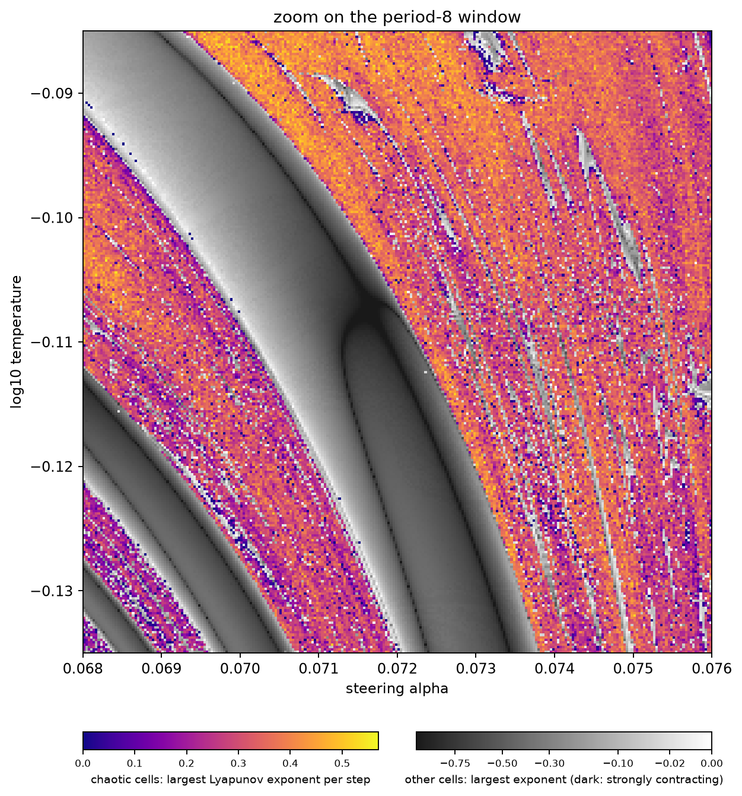
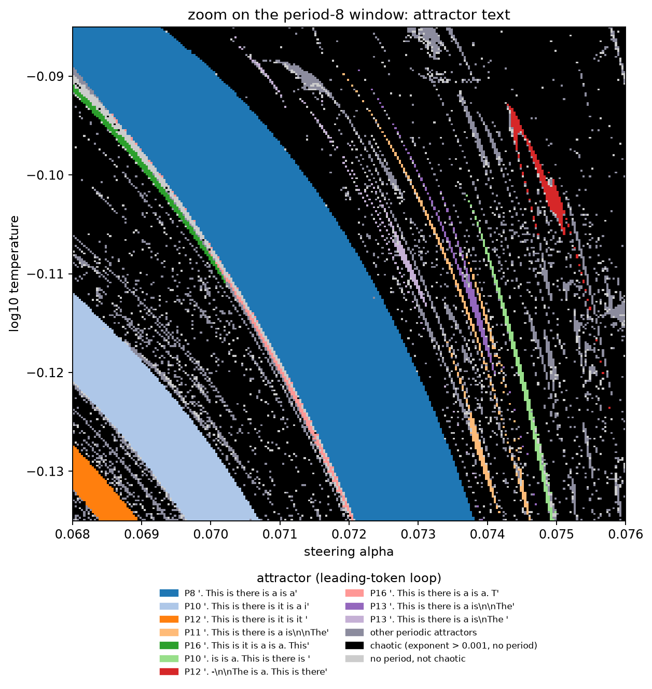
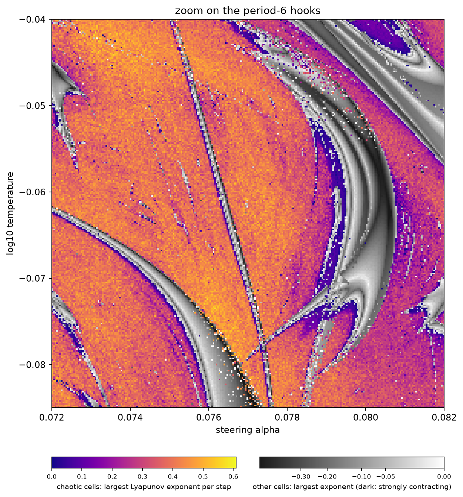
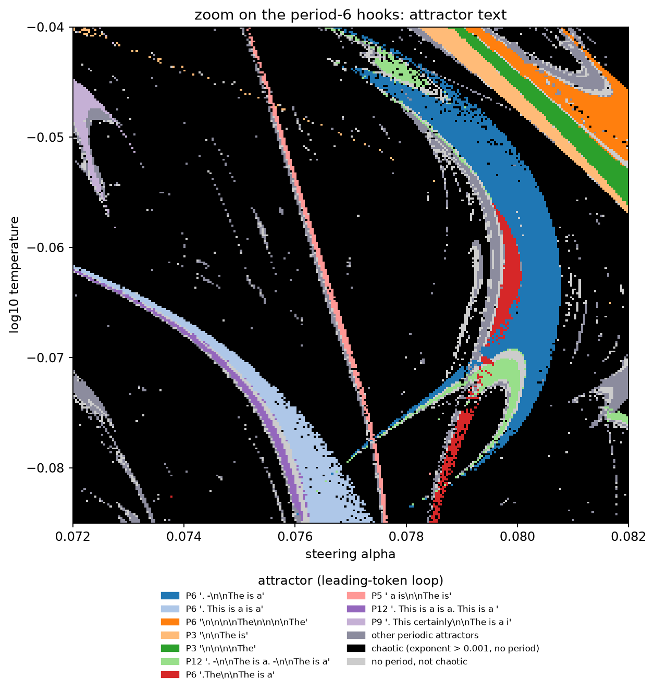
Figure 38: zooms of \(256^2\) float64 cells of the Qwen2.5-0.5B-Instruct map (philosophy direction, layer 12), shown as four images: the largest Lyapunov exponent, colored as in Figure 1, and the attractor texts. First pair: the period-8 window (\(\alpha \in [0.068, 0.076]\), \(\log_{10}T \in [-0.135, -0.085]\)). Second pair: the period-6 hooks (\(\alpha \in [0.072, 0.082]\), \(\log_{10}T \in [-0.085, -0.04]\)), whose curved period-6 body, period-12 foot and thin leg are analyzed here. Source: byte-identical copies of the paper's four images (provenance.json).
The continued curves. In the continued curves (Figure 39), a single fold arc bounds the body on its outer side and a flip arc on its inner side, and the leg lies between them where they converge. The outer fold arc extends far to the left as a thin strip and ends in a cusp at \((\alpha, \log_{10}T) = (0.069106, -0.039750)\). The fold curve through the close fold pair has a second cusp inside the body, at \((0.080097, -0.058344)\), from which two fold branches descend. At both reversals \(b\) changes sign between consecutive curve points while \(a\) stays away from zero (Table 13). Located along each curve, \(b \operatorname{sign} a\) falls below \(5\times10^{-6}\) of its bracket values; at these points \(c = -1.51\times10^{4}\) and \(-2.38\times10^{5}\), and \(\det J = 2416\) and 14.0. The negative sign of \(c\) means that near each cusp two stable period-6 orbits coexist with a saddle between the fold branches. At a fold point near the outer-arc cusp (where \(b \operatorname{sign} a = 14.7\)) the estimated unfolding is nonsingular (\(\det J = 2737\), singular values 1630 and 1.7). With these derivatives the local cubic model predicted the number of period-6 orbits and their stability at six parameter offsets, written to disk before any orbit was solved. Newton solves started from the predicted roots and from the base state recovered the predicted number of distinct orbits, with the predicted stability, at all six.
| Cusp on the outer arc | Cusp inside the body | |
|---|---|---|
| \(b \operatorname{sign} a\) at consecutive curve points | +92.9, +42.9, +14.7, −16.9, −52.8 | −24.7, −14.3, −2.0, +12.8, +28.0, +45.9, +58.9 |
| \(\lvert a\rvert\) | 1.2 to 6.9 | 3.13 to 3.35 |
| \(c\) at the two points around \(b = 0\) | \(-1.37\times10^{4}\), \(-1.65\times10^{4}\) | \(-2.38\times10^{5}\), \(-2.34\times10^{5}\) |
Table 13: normal-form test at the two direction reversals of the period-6 window's fold curves (bold: the flagged points; critical multiplier 1 to \(10^{-7}\)). \(c\): cubic coefficient at the two curve points that bracket the sign change (finite-difference steps agree to 0.1 and 0.7%). Bisection along the curves then located both cusps; they are numerical, not certified. Source: the paper's cusp table (provenance.json).
![The period-6 window of Qwen2.5-0.5B-Instruct on a float32 exponent map in which chaotic cells are orange and purple and periodic cells gray. Cyan fold curves form a long arc from a yellow-circled cusp at the upper left, at (0.069106, -0.039750), over the top to the right and down around a curved gray body, where a second yellow-circled cusp sits at (0.080097, -0.058344); from it two fold branches descend and cross. A magenta dotted flip curve runs along the inner side of the body and down to the bottom.](fig-zoom-z3-curves.png) Source: this research note.
Source: this research note.
Figure 39: the period-6 window of the Qwen2.5-0.5B-Instruct map (philosophy direction, layer 12) with its float64 fold curves (cyan), flip curve (magenta, dotted) and the two located cusps (yellow circles). The background is a float32 phase map of 480 × 400 cells (largest exponent from 300 steps after 300 transient steps; chaotic cells colored by the exponent and the other cells in gray by theirs, on one color bar). Where it overlaps the float64 map of the stripes, 95% of cells carry the same chaotic or periodic label at the nearest grid point. Some fold branches were continued from two starting points and overlap. Continuation of the lower branches stopped after 60 points near \((0.0753, -0.089)\), where they approach each other; how they join there is not resolved. Source: byte-identical copy of the paper's figure (provenance.json).
A period-4 window with five cusps on one fold curve
At higher temperature, \(\log_{10}T \approx 0\) to 0.1, periodic orbits are no
longer effectively one-dimensional (second multipliers 0.06 to 0.09). At
\(\alpha = 0.06484\) the temperature branch of the period-4 orbit
"\n\n - \n\n The" is S-shaped, with folds at \(\log_{10}T = 0.0640\) and 0.0664.
When that fold is continued in the plane, its direction reverses at three points;
at the first two, \(b\) changes sign while \(a\) stays away from zero, and \(c\) is
nonzero (Table 14). Located along the curve, these two cusps lie at
\((\alpha, \log_{10}T) = (0.062959, 0.059958)\) and \((0.065574, 0.074447)\). There
\(b \operatorname{sign} a\) is below \(1.1\times10^{-5}\) of its bracket values,
\(c = -1.02\times10^{4}\) and \(+1.37\times10^{5}\), and \(\det J = -42.0\) and
35.5. Further traces of the same fold curve, started from other points of the
period-4 branches, retrace it to within \(3\times10^{-7}\), and one of them finds
two more reversals near \(\log_{10}T \approx 0.012\). All five reversals are
located cusps. The other three lie at \((0.083082, 0.108633)\),
\((0.074072, 0.011831)\) and \((0.073220, 0.012759)\); there \(c\) is
\(-9.7\times10^{4}\), \(-5.7\times10^{3}\) and \(+1.7\times10^{3}\), and
\(\det J\) is 25.3, \(-188.5\) and 68.5. The last two cusps, close together, have
opposite signs of \(c\). Three period-4 orbits coexist between the two fold
branches, and near the first cusp (\(c < 0\)) two of them are stable (Figure
40).
Along the lower fold curve of this region a second real multiplier reaches \(+1\) twice, at \((\alpha, \log_{10}T) = (0.062483, 0.004955)\) and \((0.062499, -0.001780)\). Both points are 1:1 resonances, with the eigenvectors of the double multiplier parallel to \(3\times10^{-4}\) degrees. Close by, at \((0.062522, -0.002667)\), a multiplier reaches \(-1\): a fold-flip point. We did not continue the curves that emanate from these points.
| Cusp 1 | Cusp 2 | |
|---|---|---|
| \(b\) at five curve points | +28.1, +18.7, +8.4, −1.1, −12.8 | +51.8, +29.7, +9.3, −9.0, −23.4 |
| \(a\) | 3.02 to 3.08 | −2.58 to −2.57 |
| Critical multiplier | \(1\pm10^{-9}\) | \(1\pm10^{-8}\) |
| \(c\) around \(b = 0\) | \(-1.06\), \(-1.01\) (\(\times10^{4}\)) | \(+1.39\), \(+1.36\) (\(\times10^{5}\)) |
Table 14: normal-form test of the first two direction reversals of the period-4 fold curve (bold: the flagged points). \(c\): cubic coefficient at the points around the sign change, nonzero at both reversals (steps agree to \(10^{-4}\)), which supports a nondegenerate cusp inside each bracket; bisection then located both. At the second, \(c > 0\): the orbit between the two others is the stable one. Source: the paper's cusp table (provenance.json).
![A period map of the high-temperature region over steering strength and log10 temperature. A large blue period-4 region fills the middle, orange period-2 regions the right and bottom right, green period-8 bands and a C-shaped green band sit inside, and black chaotic cells fill the upper left and lower left. Cyan dashed and solid fold curves of the period-4 orbit run through the upper part of the blue region, with a yellow circle marking the first cusp, at (0.062959, 0.059958). Magenta dotted flip curves run along the boundary between period 4 and period 8 at the left.](fig-p4-curves.png) Source: this research note.
Source: this research note.
Figure 40: period map of the high-temperature region of the Qwen2.5-0.5B-Instruct map (philosophy direction, layer 12; \(192^2\) float64 cells) with float64 fold curves (cyan, long dashes) and flip curves (magenta, short dashes) of the period-4 orbit. The yellow circle is the first cusp; the second lies just above the window. The flip curves run along the boundary between period 4 and period 8. The fold curves run inside the period-4 region, where three period-4 orbits coexist (near the first cusp, two of them stable). A C-shaped band of the doubled loop "\n\nThe\n\nThe" (period 4) inside the period-2 region "\n\nThe" contains period 8 and an irregular core; along the cut of the doubling bubble the period-8 orbit merges back into period 4, so this band is not shown to be a second cascade. Continued from all its fold points, the region's boundary consists of an upper fold curve, with the five cusps of the text, and a separate lower fold curve, nowhere within \(2\times10^{-3}\) of it in the traced ranges; the lower curve carries the codimension-two points described in the text. Within the traced ranges the curves do not join, so the region is not shown to be one shrimp-organized component. Source: byte-identical copy of the paper's figure (provenance.json).
A period-5 window from steering at two depths
Two turning points. Steering at two depths at once (gratitude at layer 4 and hostility at layer 16, Figure 12) gives the band dynamics a second turning point. We drew 1584 chaotic cells from the two-depth planes, the single-depth maps and the hostile line, counted the turning points of each band’s return map and inspected every strong candidate by eye, since a projection can fold a single hump. Three cells, all in two-depth planes at \(\log_{10}T = -0.1\), have smooth, single-valued return maps with two or more turning points (Figure 41); the other strong candidates were point sets, split bands or folded projections, or were not reproduced. In one cell (hostility at layer 4, gratitude at layer 16), every one-dimensional phase of a 20-band attractor is N-shaped: a bimodal map, the kind of map that can carry a one-dimensional shrimp center.
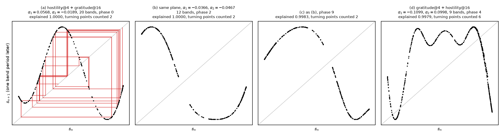
Figure 41: band return maps with two or more turning points, from two-depth planes of Qwen2.5-0.5B-Instruct (float64, \(\log_{10}T = -0.1\)). Each panel shows one phase of a chaotic band attractor, projected on its leading principal component \(s\), with points \((s_n, s_{n+1})\) one band period apart. (a) Hostility at layer 4 and gratitude at layer 16, \((\alpha_1, \alpha_2) = (0.0568, -0.0189)\): phase 0 of a 20-band attractor, N-shaped, with a cobweb of consecutive visits. (b, c) The same plane at \((-0.0366, -0.0467)\): two phases of a 12-band attractor, N-shaped maps on two intervals. (d) Gratitude at layer 4 and hostility at layer 16, \((-0.1099, 0.0998)\): phase 4 of a 9-band attractor, with three maxima. Source: byte-identical copy of the paper's figure (provenance.json).
The window. A 128 × 128 zoom around the cell with three maxima shows a period-5 window with a body, legs, a period-10 and period-20 border, and patches where the fixed start settles on period 4 (Figure 42a). We continued the window’s period-5 orbit over a 31 × 31 grid of its body: 608 cells solved, all with the same token loop, 447 of them attracting. In 61 of these 447 cells, the nearest cell of the zoom (at most \(2.0\times10^{-5}\) away in \(\alpha_1\) and \(3.2\times10^{-5}\) in \(\alpha_2\)) settles on period 4, so attractors of periods 4 and 5 coexist at grid scale, which a single one-humped map with negative Schwarzian derivative allows only if a basin reaches an end of its interval.
The window still has no one-dimensional center. The leading multiplier of the continued orbit never comes near zero: its modulus is at least 0.0139 in all 608 cells. Where a one-dimensional map would be superstable, it meets the second multiplier, and the two form a complex pair (91 cells, in narrow strips) or, where their product is negative (41 other cells), pass each other as real numbers of opposite sign (Figure 42c). Per step, the second direction contracts by a median factor of 0.44 and the first by 0.76 over the attracting cells, so near these strips the orbit’s linearization has two comparable leading directions. The curves on which the trace \(\mu_1 + \mu_2\) changes sign take the place of superstable curves, and they do not cross: no 2 × 2 block of attracting cells has the alternating signs of a crossing (Figure 42b). One isolated cell holds a repelling orbit with the same token loop (\(\mu_1 = 1.65\)), and near the top of the grid one column of Newton solves failed above cells whose leading multiplier rises to 0.88; both are explained by the window’s fold curve (below).
![Three panels of the period-5 window in the plane of alpha 1 (layer 4) and alpha 2 (layer 16). (a) Attractor periods from a fixed start: a large orange period-5 body with green period-10 and red period-20 borders and legs, blue period-4 regions to the left, black chaos to the right, and a white box marking the continuation grid. (b) Inside the box, the trace of the period-5 orbit’s two leading multipliers, from blue negative to red positive, with black zero curves: one closed loop around a blue island of negative trace and a separate curve along the bottom, with magenta curves where the leading multiplier has modulus 1 and gray cells where the orbit repels. (c) The modulus of the leading multiplier on a log scale, lowest in narrow dark strips marked with white crosses where the two leading multipliers form a complex pair.](fig-period5-window.png) Source: this research note.
Source: this research note.
Figure 42: a period-5 window in the plane of gratitude at layer 4 and hostility at layer 16 (Qwen2.5-0.5B-Instruct, float64, \(\log_{10}T = -0.1\)). (a) Attractor reached from the fixed start on a 128 × 128 grid (black: chaotic), with the box of the continuation grid. (b) The window's period-5 orbit continued over the box (31 × 31, 608 cells solved, one token loop): trace \(\mu_1 + \mu_2\) of its two leading multipliers on attracting cells, its zero curves (black) and the curves \(\lvert\mu_1\rvert = 1\) (magenta); gray cells hold a repelling orbit. (c) Modulus of the leading multiplier; crosses mark a complex leading pair. The modulus never falls below 0.0139; the dark strips, where a one-dimensional map would be superstable, are where the two leading multipliers meet. Source: byte-identical copy of the paper's figure (provenance.json).
The window’s skeleton. To resolve the folds the grid did not, we continued the period-5 orbit along four lines from one attracting cell, \((\alpha_1, \alpha_2) = (-0.118730, 0.100693)\), and then the boundaries the lines found, each in both directions (float64; 18 to 73 points per line, 30 to 120 per curve). At every curve point the residual is below \(10^{-10}\) and the test function below \(10^{-9}\). The critical multiplier stays real and within \(6\times10^{-8}\) of \(+1\) on the fold curve and of \(-1\) on the flip curves; the largest other multiplier modulus is 0.040 on that fold curve and 0.122 on the flip curves. Going right and up from the start, the orbit dies in folds at \(\alpha_1 = -0.118166\) and \(\alpha_2 = 0.102715\) (next moduli 0.0012 and 0.0008). Going left and down, it first loses stability in flips (at \(\alpha_1 = -0.12147\) and \(\alpha_2 = 0.09954\)), regains it where the same multiplier crosses \(-1\) again (at \(-0.12305\) and 0.09586; a doubling bubble), and dies in a fold (at \(-0.123323\) and 0.095720). Three of these four folds lie on one continued fold curve (within \(3.1\times10^{-7}\)); the left one lies on a second.
The first fold curve bounds the lower leg on its right, runs up the body’s right edge and over its top, and leaves along the upper leg (Figure 43). Flip curves bound the body’s upper-left and lower sides and the other side of each leg, so each leg lies between a fold curve and a flip curve, as in Gallas’s anatomy, and beyond the flips lie shells of periods 10 and 20. Near \(\alpha_1 = -0.1192\) the first fold curve reverses direction twice, identically on two traces continued from different boundary points, and both reversals are located cusps: at \((\alpha_1, \alpha_2) = (-0.1192221, 0.1040536)\), with \(c = +2.60\times10^{4}\) and \(\det J = 176.6\), and at \((-0.1191670, 0.1028019)\), with \(c = -2.05\times10^{4}\) and \(\det J = 88.6\). The two traces agree to \(2\times10^{-12}\) in these positions and to five figures in \(c\) and \(\det J\). The curve’s outer branches cross at \((-0.11901, 0.10346)\). There they are folds of two different period-5 orbits with the same token loop: at the four continuation points that bracket the crossing, the orbits on the two branches differ by 3.65 to 3.78% of the state norm, 15.8 to 44.5 times the state change between neighboring curve points.
The second fold curve, continued both ways from the left fold, runs from below the lower leg far up the left of the plane, where the orbit has regained stability beyond its doubling bubble (critical multiplier within \(1.2\times10^{-7}\) of \(+1\); other multipliers below 0.4). It has two more reversals, both located cusps: \((-0.1238662, 0.0961512)\), with \(c = -9.65\times10^{3}\) and \(\det J = 405.9\), and \((-0.1214073, 0.1028234)\), with \(c = +4.75\times10^{4}\) and \(\det J = -535.4\). This curve also crosses itself, at \((-0.12341, 0.09904)\), so that its two cusps share a segment and its other branches cross: a second dovetail. There too the branches are folds of two different period-5 orbits with the same token loop, which differ by 8.83 to 9.06% of the state norm. In both dovetails the cusp with \(c > 0\) lies above the one with \(c < 0\). At all four cusps the critical multiplier is within \(1.3\times10^{-9}\) of 1 and the second modulus below 0.008. Along every continued curve no other multiplier exceeds 0.4 in modulus, so no second multiplier reaches the unit circle along them. The fold curve also resolves both anomalies of the grid: the isolated repelling cell (\(\mu_1 = +1.65\)) lies \(1.2\times10^{-5}\) from it, on the saddle branch, and the column of failed Newton solves at \(\alpha_1 = -0.119167\) runs into the lower reversal, at \(\alpha_1 = -0.119166\), where the followed orbit ceases to exist between the folded branches.
![Four panels of the period-5 window in the plane of gratitude steering at layer 4 (horizontal) and hostility steering at layer 16 (vertical), at log10 temperature -0.1. (a) Black fold curves and red dashed flip curves of the period-5 orbit over a map of attractor periods: an orange period-5 body with thin legs, gold stars at four located cusps, and magenta crosses where each fold curve crosses itself. (b) A zoom on the orange body, bounded by the fold curve on the right and by flip curves above and below, with period-10 shells outside the flips. (c) The trace of the orbit’s two leading multipliers over the continuation grid, with a closed zero contour around an island of negative trace. (d) The junction where the upper leg leaves the body: two cusps that share a segment of the fold curve and a self-crossing, with the 13 census points labeled by the number of orbits found, green where the count matches the prediction made before the computation.](fig-period5-folds.png) Source: this research note.
Source: this research note.
Figure 43: the skeleton of the period-5 window (Qwen2.5-0.5B-Instruct, gratitude at layer 4 and hostility at layer 16, \(\log_{10}T = -0.1\), float64). (a) The two fold curves (black; multiplier \(+1\)) and the flip curves (red, dashed; multiplier \(-1\)) over the attractor reached from the fixed start of every cell on a wider grid; gold stars: the four located cusps; magenta crosses: the self-crossings of the two fold curves. (b) The body over a finer grid, with the four branches (dotted) that found the first boundary points from a common start. (c) The same curves over the trace of the continued orbit's two leading multipliers (gray: repelling). (d) The junction of the upper leg with the body: the fold curve has two cusps that share a segment and crosses itself (x), where its branches are folds of two different period-5 orbits; its two traces, continued from two different boundary points, coincide. Circles: the 13 points of the orbit census, with the number of period-5 orbits found and, in brackets, the number attracting (green: the count predicted before the computation; orange: not). Curves and cusps are float64 computations validated by step-size checks, not proofs, and the window was selected after the maps were inspected. Source: byte-identical copy of the paper's figure (provenance.json).
The dovetail, the swallowtail and an orbit census
The junction where the upper leg leaves the body, two cusps that share a segment of the fold curve and a crossing of its other two branches, is the configuration that Mira et al. call a dovetail for critical curves with two such adjacent cusps (Mira et al., 1996); we borrow the name, with periodic orbits in place of preimages. With the crossing, the configuration is a plane section of a swallowtail. The swallowtail is the shape traced, in a space of three parameters, by the points where a quartic equation \(x^4 + ux^2 + vx + w = 0\) has a double root; a plane cut through it shows exactly this pattern of two cusps and a crossing. It predicts how many orbits exist in each region: four in the pocket between the cusps and the crossing, none beyond the crossing, and two elsewhere (Figure 36b).
Before any solve we fixed 13 points around the junction and the number of period-5 orbits that the swallowtail section predicts at each. At each point, Newton’s method started from the states of the nearest point on each branch of the fold curve, shifted along that point’s critical eigenvector by \(s\lvert x\rvert\) for \(s \in \{0, \pm10^{-3}, \pm3\times10^{-3}, \pm10^{-2}, \pm3\times10^{-2}\}\) (27 starts per point). Orbits count as distinct when they differ by more than \(10^{-7}\) of the state norm at every phase. The counts are lower bounds, because the seeded search can miss orbits.
Table 15 gives the results: 9 of the 13 counts match. Four orbits were found at three of the five pocket points, none at either point beyond the crossing, and two at four of five surrounding points. The three undercounts found all the attracting orbits that the model predicts, so by the model each missed a repelling one. Above the upper cusp, two of the three orbits found share one token loop: a saddle (multiplier \(+1.44\)) and the node, which lies beyond the flip curve that passes the cusp (multiplier \(-1.35\)), so that no period-5 orbit attracts there. The third has another token loop and the multiplier \(-130\), and only one start reached it; that it does not belong to the junction’s family is a reading after the fact. At all five pocket points two attracting period-5 orbits coexist; near the upper cusp a flip curve crosses the pocket, beyond which one of them has doubled. The pocket therefore plays the kite’s part, a region with two attractors at the end of a leg, with two cusps and a crossing where Gallas’s kite has one cusp; both configurations are plane sections of the swallowtail of a quartic fixed-point equation.
| Points | Region | Predicted | Found | Attracting |
|---|---|---|---|---|
| 3 points | 4 | 4 | 2 | |
| 2 points | 4 | 3 | 2 | |
| 2 points | beyond the crossing | 0 | 0 | 0 |
| 4 points | around the pocket | 2 | 2 | 1 |
| 1 point | around the pocket | 2 | 1 | 1 |
| 1 point | beyond the upper cusp | 2 | 3 | 0 |
Table 15: orbit census of the junction of the period-5 window (Figure 43d): period-5 orbits found from 27 starts per point, and how many attract. The predictions were fixed before any solve. Source: the paper's census table (provenance.json).
Lifted from the parameter plane into the orbit states, the fold curve is smooth: its cusps are only where its shadow on the plane folds, and the two branches that cross in the shadow lie on different sheets, as in the model (Figure 44). This is Mira’s “foliated” representation: draw each orbit’s state above the parameters, and the fold curve becomes a smooth crease of a surface. In each dovetail, the two cusps have cubic coefficients of opposite sign, as in any section of a swallowtail: one of the saddle-area kind (\(c > 0\), the upper cusp in both) and one of the crossroad or spring kind (\(c < 0\)). We do not claim the swallowtail point itself, which needs a third parameter.
![Two three-dimensional plots. (a) Model: a folded surface of the quartic map’s fixed points x over the plane of a and c, with blue attracting and gray non-attracting sheets. A black fold curve runs smoothly along the crease of the surface; its shadow on the floor shows two gold-starred cusps and a crossing. Magenta crosses mark the two lifts of the crossing, on different sheets, joined by a dotted vertical line, and a vertical line over the pocket meets four sheets at circles, two filled for attracting points. (b) Data: the period-5 window’s fold curve through the junction, lifted by the first principal coordinate of the orbit states, a smooth black curve with two gold-starred cusps and two magenta crosses, with its gray shadow below, and the census orbits drawn as filled (attracting) and open (repelling) circles on vertical stems.](fig-foliation.png) Source: this research note.
Source: this research note.
Figure 44: the dovetail in Mira's foliated representation: parameters and one state coordinate. (a) Model: the fixed points \(x\) of the quartic map at \(b = -1\) over the plane of \(a\) and \(c\) (blue: attracting; gray: not). The fold curve (black) is a smooth curve on this surface, and its shadow on the parameter plane is the dovetail of Figure 36b, with its two cusps (stars) and its crossing X, whose two lifts (crosses) lie on different sheets. Over a point of the pocket the surface has four sheets (circles; filled: attracting). (b) Data: the period-5 window of Figure 43 (Qwen2.5-0.5B-Instruct, gratitude at layer 4 and hostility at layer 16, \(\log_{10}T = -0.1\), float64). The continued fold curve through the junction (black), lifted by the first principal coordinate of these states (86% of their variance), with its shadow (gray), its two located cusps (stars), the two lifts of the crossing (crosses), and every period-5 orbit the census found (filled: attracting; open: repelling), each at the phase continuous with the fold curve. One orbit with another token loop lies above the frame. Source: byte-identical copy of the paper's figure (provenance.json).
Shrimps of a two-dimensional kind
The period-5 window has this anatomy; only its head differs. At every cell of the grid and every curve point, the multipliers beyond the leading pair are below 0.0032, so the orbit’s linearization has at most two non-negligible directions: the window behaves locally like a two-dimensional map. On the grid the leading multiplier never vanishes (its modulus stays at least 0.0139): where a one-dimensional map would be superstable, the two leading multipliers form a complex pair, the node having become a focus, or pass each other as real numbers of opposite sign.
Between grid cells, a two-parameter Newton search for the point where the sum of the leading multipliers and the sum of their pairwise products vanish converges at \((\alpha_1, \alpha_2) = (-0.1184836, 0.1017217)\). There the three leading multipliers have nearly equal moduli, \(3.4\) to \(3.6\times10^{-3}\): the orbit contracts about 280-fold per period, and its linearization has no dominant one- or two-dimensional part. This point of strongest contraction plays the role of the head, but the two-dimensional reading does not describe it.
The determinant \(D = \mu_1\mu_2\) of the leading pair also changes sign in the window (\(D < 0\) at 41 of its 447 attracting cells), so the effective two-dimensional map reverses orientation in part of the window, the way a map that folds a sheet over reverses it: a noninvertible setting in the sense of Mira et al. (1996), not that of Hénon’s map, whose determinant has a fixed sign. The trace-zero curve around an island of negative trace (Figure 43c) is closed on the grid except at one cell next to the fold curve, where it must close, because on a fold the trace is 1 plus the second multiplier and therefore positive: a closed trace-zero contour as in Type A, a classification derived for determinants of fixed sign. In the hostile period-7 body the superstable arcs turn away without crossing, which resembles the head of Type B (No one-dimensional shrimp center).
A cascade in the same plane. The same plane holds a period-doubling cascade whose cells are nested V-shaped tongues near \(\alpha_1 = -0.105\), \(\alpha_2 = 0.105\). Continued in float64 on grids over these cells, its period-2, -4 and -8 orbits read the same way: no cell reaches superstability (the smallest leading moduli are 0.222, 0.041 and 0.034), and complex leading pairs and trace-zero curves take the place of the superstable curves. The cells become more one-dimensional with each doubling: over their attracting cells, the median ratio of the second to the leading multiplier is 0.59, 0.125 and 0.027. Per step, the second multiplier contracts by a nearly constant factor (medians 0.50 to 0.57), so its share shrinks like a power of the period; the per-step medians predict 0.52, 0.146 and 0.029, within 17% of the measured ratios. In the terms of the Hénon map, whose Jacobian determinant \(-b\) is constant, so that \(\mu_1\mu_2 = (-b)^p\), the per-step area contraction \(\lvert\mu_1\mu_2\rvert^{1/p}\) plays the role of \(\lvert b\rvert\); its medians are 0.41, 0.41 and 0.50.
In the period-4 and period-8 cells the trace-zero curves run along both sides of the V. Finer grids at its bottom resolve them: in both cells the two sides are one U-shaped trace-zero curve, and they do not cross. In the period-8 cell the determinant of the leading pair is positive throughout and the third multiplier is at most \(6\times10^{-5}\) of the second, so the reading is two-dimensional to that accuracy. In the period-4 cell the determinant changes sign, and near the bottom of the U the second and third multipliers form a complex pair, so the leading pair is not isolated there. Neither cell has a crossing of trace-zero curves, the analog of a one-dimensional shrimp’s head, and the period-4 cell has no near-nilpotent point at the bottom of its U either: the same two-parameter Newton search converges where its three leading multipliers have nearly equal modulus, 0.0325, and lie \(120^{\circ}\) apart, ten times the period-5 point’s \(3.5\times10^{-3}\). Under a decision rule fixed before these grids, both cells remain unresolved between the loop and turn-away types (the first period-8 grid left the bottom of the V unsolved because of a defect in the continuation, fixed for the second).
A closure test that failed
We also tested whether two coordinates forecast the window’s nonlinear return map. Perturbations of relative size \(10^{-3}\) and \(10^{-2}\) (64 per size, half to fit and half to test) were followed for eight returns; quadratic return models in one, two or four modal coordinates (projections on the leading eigenvectors), with a fitted lift back to the state, were iterated from the first return, and the error is the squared forecast error over the squared deviation, summed over returns 2 to 8. The test failed for numerical reasons: at most locations the iterated models diverged, with median errors up to \(2\times10^{122}\), against at most 0.71 for the linearized map in the same rows. We did not establish why (in 9 of these 12 rows even the one-coordinate model diverges), and no regularized refit was run. At one location the divergence of the four-coordinate model satisfied the two-coordinate criterion fixed in advance spuriously. A guard added after the run marks fits with a median error above 1 as degenerate; 12 of the 18 location-and-size rows are. At the body location, one coordinate gives errors of 0.026 and 0.031 and two coordinates below \(6\times10^{-5}\). We draw no conclusion about two-dimensional closure from this test.
What was and was not found
Found, in float64 and with the evidence level of each stated above:
- fold curves that bound windows and bend back in located, nondegenerate cusps: thirteen of thirteen reversals on the nine curves continued, with cubic models that predicted orbit counts at twelve offsets fixed in advance;
- windows with bodies, legs, shells of doubled period, doubling cascades and chaotic bands inside, and superstable lines in the exponent maps;
- in one period-5 window steered at two depths, the anatomy of a shrimp of a two-dimensional map: legs between fold and flip curves, two dovetails, a pocket with two coexisting attractors in the kite’s place, and an orbit census fixed in advance that matched 9 of 13 counts;
- 1:1 resonances and a fold-flip point on a fold curve, and smooth tight turns of a flip curve.
Not found, or not tested:
- the head of a one-dimensional shrimp: in no window whose curves we traced do two superstable curves, or two trace-zero curves, cross;
- the tail of Gallas’s anatomy, the symbolic sequences of the windows, and a periodicity hub, none of which we traced or tested (Vitolo, Glendinning, and Gallas, 2011; Jones, 2012);
- the swallowtail point itself, which needs a third parameter;
- whether a two-dimensional map also reproduces the period-5 window’s nonlinear dynamics (the closure test failed for numerical reasons).
With these qualifications the period-5 window carries the anatomy of a shrimp, as Gallas found it in Hénon’s map, here in an effectively two-dimensional map whose determinant changes sign. That is a statement about the organization of windows, not a proof that the network contains a shrimp of any known map.
From greedy loops to chaos: one picture
The preceding sections established the pieces one at a time: a derivative that factorizes into a network part and a readout part (Why the loop can be chaotic), folds and their ghosts (A saddle-node bottleneck organizes the windows), a period-doubling cascade (A period-doubling cascade and a proof), and windows shaped like those of low-dimensional maps (Cusps and shrimp-like windows). This section puts them together into one account of why the loop of Qwen2.5-0.5B along the philosophy direction looks the way it does. It answers three questions: where the periodic orbits come from, why the windows cross one another, and why one-dimensional maps describe a network with 896-dimensional states. Every step of the account was checked against the full map in float64.
A few words first, in plain terms.
- Temperature \(T\) controls how sharply the model’s next-token probabilities favor the leading candidate. Near zero, the most probable token takes almost all the probability. As \(T\) grows, the probability spreads over the competitors.
- A soft token is what the loop feeds back: the probability-weighted average of the token embeddings. When two candidates hold most of the probability, the soft token is in effect a blend of those two, weighted by how strongly each is favored.
- A multiplier of a repeating orbit says what happens to a tiny nudge away from it after one full trip around the cycle. Between −1 and +1 the nudge shrinks, and the orbit is stable. Near 0 it shrinks fastest; an orbit with a multiplier of exactly 0 is called superstable.
At zero temperature: greedy loops
As \(T \to 0\), the soft token becomes the embedding of the single most probable token, and the loop becomes greedy decoding, always writing the most probable next token, with a one-token memory: the next token depends only on the prompt and the one token just written (greedy limit). A map that sees only the last token and always picks a winner must eventually repeat itself, so its long-run behavior is a cycle of tokens. These cycles are the attractors at zero temperature, and they are superstable: a nudge to the fed-back vector does not change which token wins, so it is forgotten at once.
Along the philosophy direction, the greedy map has a two-token loop " is there"
for \(\alpha\) between 0.06301 and 0.07773, and a three-token loop
"\n\nThe question" (two line breaks, then “The question”) for
\(\alpha\) between 0.06609 and 0.07006. The soft loop at low temperature does settle on
these. At \(\alpha = 0.070\), in a column of 96 temperatures from
\(\log_{10}T = -2\) upward, 59 end on "\n\nThe question" and 16 on a period-4
loop that alternates " is it" and " is there".
At finite temperature: compromises between competing continuations
The attractors that organize the maps of the earlier sections are not greedy
loops. Take the 2-cycle " is it", whose fold organizes the stripes. No value of
\(\alpha\) between 0 and 0.12 (in steps of 0.0005) makes " is it" a greedy cycle:
after " it", greedy decoding writes "'s" for \(\alpha < 0.105\), and above that,
where it writes " is", the next greedy token after " is" is not " it". The 2-cycle exists only because the
soft token is a mixture.
- After
" is", two continuations compete," it"and" there", and the fed-back vector is a blend of the two. - After
" it", the competitors are" is"and"'s", and again the fed-back vector is a blend.
Each step thus feeds back a weighted blend of two continuations, and the blends
close into a cycle that greedy decoding never closes. Read greedily, the loop
writes " is it", but what keeps it going is the pair of blends, a compromise
between continuations.
Such a compromise lives in a band of temperature and dies at both of its ends, because the blend needs the right amount of competition.
- Too sharp: the flip. At lower temperature the competition is sharper: a small change in the fed-back blend swings the next blend strongly. At \(\alpha = 0.070\) the 2-cycle loses stability at \(\log_{10}T = -0.5147881\), where a multiplier reaches −1. A multiplier of −1 means a nudge comes back with its sign reversed after each cycle, without shrinking: the orbit overshoots one way, then the other. Below this temperature the blend alternates between two versions of itself, a flip.
- Too weak: the fold. At higher temperature the competition is flatter, and the pull that holds the blend in place weakens. At \(\alpha = 0.070\) the 2-cycle disappears at \(\log_{10}T = -0.1741065\), where a multiplier reaches +1: the stable orbit meets an unstable partner and both vanish, a fold (the cyan curve of Figure 18). Figure 45a follows the leading multiplier along the whole band.
The period-3 loop of the crescent, "\n\nThe existence", is a compromise of the
same kind, between " existence" and " question" in the noun slot. It too lives
in a band, between a fold above (at \(\alpha = 0.065\), extrapolated to \(\log_{10}T = -0.14536\)
from a continuation whose last converged multiplier was 0.956)
and a flip below. On the cut \(\log_{10}T = -0.148\) it is born at a fold at
\(\alpha = 0.06444\) and flips at \(\alpha = 0.06548\) (Figure 45c). It
does not connect to a zero-temperature loop.
![Diagram in three panels. Panel 1: after the token " is", the fed-back soft token blends " it" and " there"; after " it", it blends " is" and “’s”; the two blends close into the 2-cycle " is it", which greedy decoding never writes. Panel 2: a temperature axis at steering strength 0.070, not to scale. The 2-cycle is stable between a flip at log10 T = -0.5147881 below, where the competition is too sharp, and a fold at -0.1741065 above, where it is too weak. Above the fold, short marks for periodic windows of period 2N + 6 crowd toward the fold; a horizontal period-6 band between two flips, at -0.1414292 and -0.1392937, crosses them. Panel 3: the crescent’s period-3 loop, a blend of " existence" and " question", between a fold above and a flip below; below the flip the period doubles to 6, 12, 24 and on into chaos.](one-picture-schematic.svg) Source: this research note.
Source: this research note.
Diagram: one picture of the philosophy-steered loop of Qwen2.5-0.5B-Instruct. Conceptual schematic, not to scale; the bar widths in panel 1 are illustrative, and the values in panels 2 and 3 are the paper's.
What happens at the two ends: ghosts and cascades
Beyond the fold: the ghost. Past the fold the 2-cycle is gone, but not
without a trace. Where it used to be, the map still moves states only slightly
per step, so a trajectory that passes nearby is slowed down, as if held by the
orbit’s ghost. While it lingers, it goes round the vanished cycle again and
again, each pass adding one more " is X" pair to the text, before it escapes
and is eventually brought back. The closer the parameters are to the fold, the
narrower the escape route and the longer the stay: the number of passes \(N\)
grows as one over the square root of the distance to the fold. A trajectory that
makes exactly \(N\) passes and then returns the same way each time is a periodic
window of period \(2N + 6\). Each extra pass needs the parameters to sit closer
to the fold, so the windows line up parallel to the fold curve and crowd toward
it, their distances from it shrinking close to \(1/N^2\) (a free fit gives an exponent
of \(2.18\pm0.06\); The window law). This produces the near-vertical fan of stripes in the maps (Figure
45b).
Beyond the flip: the cascade. Below a flip, a compromise alternates between its two blends, so its period doubles. In the crescent the alternation itself then becomes unstable and doubles again, and again, at parameter values that crowd together geometrically: period 3 becomes 6, then 12, then 24, and the sequence ends in chaos, a Feigenbaum cascade (A period-doubling cascade and a proof).
Why the windows cross. The near-horizontal band that crosses the stripes near
\(\log_{10}T = -0.14\) is the first doubling of the crescent’s period-3 loop,
continued to larger \(\alpha\). At \(\alpha = 0.070\) it is bounded by two flips,
at \(\log_{10}T = -0.1392937\) above and \(-0.1414292\) below. The two families
of windows cross because each is bounded by its own curves: the stripes by the
distance to the fold of " is it", the band by the flips of the period-3 loop.
They are two different compromises, each following its own clock. Where they overlap, two crossing points were tested from five starts each, and
every start ended on the band’s 6-cycle (Figure 45c).
Why one dimension is enough
The laws used so far, a ghost with \(1/N^2\) windows and a cascade with Feigenbaum’s ratios, are laws of maps with one variable. The network’s state has 896 dimensions. The reason the simple laws apply anyway lies in how much each step stretches each direction.
Singular values. Think of a small sphere of states around the loop. One step of the map turns it into an ellipsoid: stretched in some directions, squeezed in others. The singular values of the step’s derivative are the lengths of the ellipsoid’s axes, the stretch factors of its principal directions, from the largest down. If the second singular value is much smaller than the first, the step acts almost along one direction only.
A single step of this map is not close to that. Along these orbits, the second eigenvalue of the readout covariance \(\Sigma_p\) is 0.23 to 0.87 of the first, and the second singular value of the step derivative is 0.11 to 0.90 of the first: one step stretches several directions comparably. Composed over a whole cycle, however, the map is nearly one-dimensional. The ratio of the two leading singular values of the composed map is 0.081 for the 2-cycle, 0.092 for the period-3 loop and 0.26 for the period-6 band. It falls to \(3\times10^{-4}\) over twelve steps of the chaotic crescent and to \(4\times10^{-9}\) in the chaotic stripes (Figure 45d). Each step stretches some direction, but different steps stretch different ones, and the stretches do not line up from step to step, so their effects do not accumulate. Only one direction keeps growing over a cycle: the direction along which the competition between two continuations repeats.
Lyapunov exponents and dimension. The Lyapunov exponents give the long-run version of the same picture, one average growth rate per direction, ordered from the largest. At three chaotic cells the leading exponents are 0.109, 0.424 and 0.239 per step: one direction expands. The next three lie between −0.82 and −2.01: those directions contract strongly. The Kaplan-Yorke dimension (Kaplan and Yorke, 1979) turns such a spectrum into an effective dimension of the attractor: count how many directions, taken from the largest exponent down, can be added before the running sum of exponents turns negative, and add the fraction of the next direction needed to reach zero. A value just above 1 means the attractor is nearly a curve, with a little thickness. Here it is 1.13, 1.43 and 1.21 at the three cells (dimension of the chaos), from spectra over 600 steps. Over 3000 steps the leading exponents are \(0.098\pm0.010\), \(0.437\pm0.016\) and \(0.196\pm0.014\), the values used in Synchronization of coupled loops.
Of the four computed exponents one is positive and three are strongly negative, so the attractor is nearly a curve, and a scalar return map with a single maximum describes it: one number per cycle, mapped to the next by a hump-shaped curve. That is the shape of the logistic map, and it is what makes period doubling and Feigenbaum’s ratios inevitable rather than coincidental.
A scalar model of the competition. A model with one variable can be built from the two competing tokens alone: \(q' = \sigma(h(q)/T)\). Here \(q\) is the share of one competitor in the pair’s probability, \(h(q)\) is the logit gap between the two that the network produces from a blend with that share, with the rest of the state held fixed, and \(\sigma\), the logistic function, turns the gap back into a share. It reproduces the crescent’s hump (Figure 45e) and, at \(\log_{10}T = -0.156\), places its first flip between \(\alpha = 0.0646\) and 0.0648, against 0.0644767 in the full map. It does not reproduce the cascade. The competition sets the shape; the rest of the network sets where the cascade ends.
The picture
![Five panels. (a) The leading multiplier of the " is it" 2-cycle against log10 temperature at steering strength 0.070, rising from large negative values at low temperature through a gray band marking the stable range between -1 and +1, which it enters at a dotted flip line and leaves at a dashed fold line; boxes along the curve list the two blended continuations at each phase of the cycle with their probabilities. (b) The largest Lyapunov exponent along one row of the 256 by 256 map: below zero up to the fold of the 2-cycle, then alternating between gray periodic windows, labeled with their periods, and red chaotic stretches; an inset plots one over the square root of each window edge’s distance from the fold against its period, rising with the period. (c) A colored part of the crossing map with the cyan fold curve of the 2-cycle, markers for the flips of the period-3 and period-6 orbits, a green square where the period-3 orbit is born at a fold, and white circles at the cells tested from several starts. (d) On a logarithmic scale, the second-over-first ratios for six orbits and attractors: blue dots and orange squares for single steps sit near one, black stars for the composed map lie far lower, lowest for the chaotic cells. (e) The crescent’s return map, a black curve with a single minimum in the noun log-odds, and the dashed curve of the two-token model following its shape.](fig-e2e.png) Source: this research note.
Source: this research note.
Figure 45: one picture, in float64 (Qwen2.5-0.5B-Instruct, philosophy direction, layer 12). (a) A compromise lives in a band. The leading multiplier of the " is it" 2-cycle along temperature at \(\alpha = 0.070\). The orbit is stable (blue, inside the gray band \(|\mu| < 1\)) only between the flip (\(\log_{10}T = -0.5148\)), where the multiplier passes −1, and the fold (\(-0.1741\)), where it reaches +1; below the flip it is unstable (red), and beyond the fold it no longer exists. The boxes show what is being blended: the competing continuations at each phase of the cycle and their probabilities. (b) Beyond the fold, the ghost's stripes. The largest Lyapunov exponent along the row \(\log_{10}T = -0.115\) of the \(256\times256\) map. Past the fold \(\alpha_c\) of the 2-cycle, periodic windows (gray, labeled with their periods) alternate with chaos (red). The inset plots \(1/\sqrt{\alpha_N - \alpha_c}\) for the fold edges of the windows against their period: for the longer windows (periods 16 to 20) it grows linearly with the period, as the ghost predicts (The window law). (c) Why the band crosses the stripes. Part of the crossing map, with the fold curve of the 2-cycle (cyan). The period-6 band is bounded by the flip of the period-3 orbit above and the flip of the period-6 orbit below, located on cuts at \(\alpha = 0.069\), 0.070 and 0.0715. On the cut \(\log_{10}T = -0.148\), the crescent's period-3 orbit is born at a fold (\(\alpha = 0.06444\), green square) and flips at \(\alpha = 0.06548\). White circles mark the census cells. At the two in the overlap all ten starts ended on the band's 6-cycle; at the third (0.0708, −0.1396) one of five starts ended on a period-10 loop. (d) Why one dimension. The second over the first eigenvalue of the readout covariance \(\Sigma_p\) and the second over the first singular value of the step derivative \(DF\), at every recorded state of four periodic orbits and two chaotic attractors, and the same singular-value ratio for the derivative composed over one period, or over twelve steps for the chaotic cells (stars). Single steps stretch several directions; composed, only one survives. (e) The crescent's return map. The return map of the crescent's attractor in the noun log-odds \(s\), the log-ratio of the probabilities of the two competing nouns (black), with the two-token model \(q' = \sigma(h(q)/T)\) (dashed), which captures its shape with a single turning point. Source: byte-identical copy of the paper's figure (provenance.json).
At zero temperature the loop writes greedy loops. As the temperature rises, the soft token starts to mix the two continuations a token has, and the mixtures form new periodic orbits that greedy decoding does not have. The two we continued each live between a flip, where the competition is too sharp, and a fold, where it is too weak. Their folds leave ghosts that line up the windows, and their flips start cascades into chaos. Because one competition stretches while the rest of the network contracts, every one of these structures follows the laws of one-dimensional maps. Steering moves which continuations compete, and so where all of this happens.
Beyond the one-token loop, and across model size
Memory, sampling and a growing context
Sampling and the bottleneck
To see how much of the fold mechanism survives sampling, we replace the expected
embedding by the mean of \(m\) sampled token embeddings (Figure
46). With the exact map, laminar phases near the fold of the
2-cycle " is it" last 120 and 63 steps at \(\varepsilon = 10^{-5}\) and
\(3\times10^{-5}\). With \(m = 64\) they last about 10.6 steps, independently of
\(\varepsilon\) (57% of steps in the channel), and with \(m = 8\) about 7.7 steps
(38%). With single samples (\(m = 1\), sampled decoding of the same truncated
system), essentially no laminar phases remain (11% of steps in the channel). The
deterministic intermittency mechanism therefore belongs to the expected-embedding
map. Sampling noise turns the bottleneck into a noise-limited trap whose strength
grows with \(m\): averaging more samples makes the fed-back token closer to the
exact one, so the loop lingers longer.
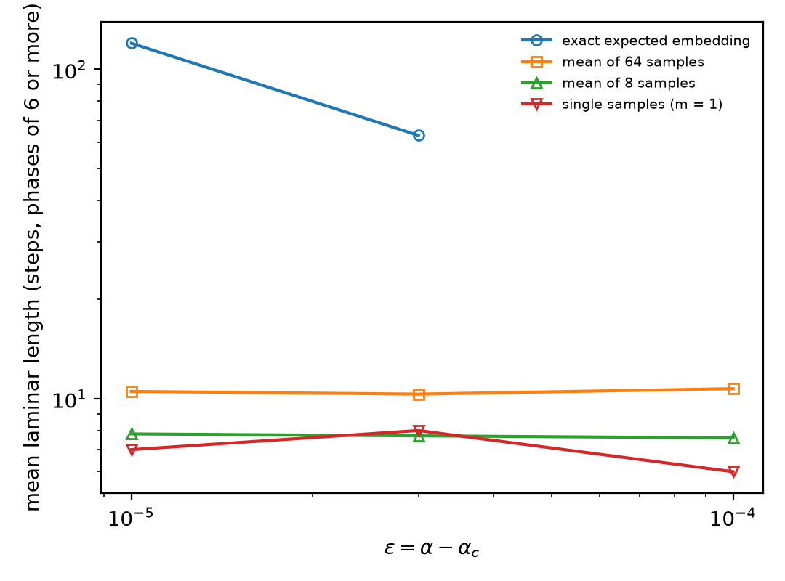
Figure 46: mean laminar length near the fold of the 2-cycle " is it" (Qwen2.5-0.5B-Instruct, philosophy direction at layer 12, \(\log_{10}T = -0.115\)) against \(\varepsilon\), for the exact map and for means of \(m\) sampled embeddings. Source: byte-identical copy of the paper's figure (provenance.json).
The zero-temperature limit and ordinary greedy decoding
As \(T \to 0\) the soft-token map becomes greedy decoding with a one-token memory,
\(g(t) = \arg\max_s z_s(\text{prefix}, E_t)\): a map on the vocabulary that sends
each token to the model’s top next token after the fixed prompt. Its cycles are the
zero-temperature attractors. For Qwen2.5-0.5B we computed \(g\) for all 151,936
tokens. Unsteered, it has 1060 cycles, and one of them, the period-5 loop
". From 220 starts (the first tokens of the 20 largest cycles
and 200 random tokens), 19 runs end in a short loop within 256 tokens, and the
dominant 5-cycle never appears. Steering along philosophy makes ordinary decoding
loop almost always (218 of 220 runs at \(\alpha = 0.1\)), but in other loops, mostly
punctuation such as " --", none of them one-token cycles. Greedy decoding that
keeps only the last \(K\) tokens interpolates between the two. For the tested
\(K \ge 2\) most final loops differ from the one-token cycles: at \(K = 2\) only 7 of
220 unsteered runs and 1 of 220 steered runs keep one of them. Unsteered, looping
collapses to the level of the growing context between \(K = 16\) and 32; steered,
the share of runs whose loop equals the growing-context loop rises from 0 at
\(K = 1\) to 58% at \(K = 64\).
The soft-token map’s low-temperature attractors are therefore those of decoding with a one-token memory. Which loop ordinary decoding enters depends on the context it keeps, but the tendency of steering to drive decoding into loops is shared. In ordinary decoding, repetition is known to reinforce itself (Holtzman et al., 2020; Xu et al., 2022), a theoretical analysis ties loops to words of high inflow (Fu et al., 2021), and induction heads, which copy earlier context (Olsson et al., 2022), are one mechanism by which a longer context can favor loops that repeat earlier text.
| Memory \(K\) | Unsteered: looped | Unsteered: loop as with full context | \(\alpha = 0.1\): looped | \(\alpha = 0.1\): loop as with full context |
|---|---|---|---|---|
| 1 | 220 | 5 | 220 | 0 |
| 2 | 220 | 5 | 220 | 0 |
| 8 | 220 | 5 | 220 | 3 |
| 16 | 169 | 5 | 219 | 24 |
| 32 | 32 | 7 | 219 | 71 |
| 64 | 26 | 11 | 219 | 126 |
| full context | 19 | 218 |
Table 16: greedy decoding of Qwen2.5-0.5B with a memory of the last \(K\) generated tokens after the fixed prompt (\(K = 1\) is the soft-token map's zero-temperature limit), 220 starts of 256 tokens each: runs ending in a loop of period up to 64 repeated three times, and runs whose final loop equals that of ordinary decoding with the full context from the same start. Source: the paper's memory table (provenance.json).
A longer fed-back memory
The one-token window is the main simplification of the map. Feeding back the last \(K\) expected embeddings instead, so that the state is a window of \(K\) soft tokens at fixed positions after the prompt, we measured 24 temperatures between \(\log_{10}T = -0.3\) and 0.6 for \(K\) from 1 to 16 (Table 17; twins at \(10^{-5}\) and \(10^{-7}\) agree within 0.006 at every chaotic temperature). In Qwen2.5-7B the chaos does not vanish but spreads: it is chaotic at 8 temperatures with one token of memory, at 13 with four, and at 21 and 20 with eight and sixteen, nearly the whole range, with smaller exponents (largest 0.96 for \(K = 1\), 0.43 for \(K = 16\)). Qwen2.5-0.5B, chaotic at one temperature with one or two tokens of memory and at none with four, is chaotic at ten with eight. The chaos is therefore not an artifact of the one-token window.
| Memory \(K\) | 1 | 2 | 4 | 8 | 16 |
|---|---|---|---|---|---|
| Qwen2.5-7B | 8 (0.96) | 10 (1.08) | 13 (0.70) | 21 (0.58) | 20 (0.43) |
| Qwen2.5-0.5B | 1 (0.20) | 1 (0.24) | 0 | 10 (0.31) | 3 (0.23) |
Table 17: chaotic temperatures, of 24 between \(\log_{10}T = -0.3\) and 0.6, when the loop feeds back the last \(K\) expected embeddings (largest exponent in parentheses); the paper's prompt, unsteered, float64, 500 transient and 1000 measured steps, twins at \(10^{-5}\) and \(10^{-7}\) (chaotic: both positive and no period up to 64). Source: the paper's memory-window table (provenance.json).
Soft Thinking with a growing context
Soft Thinking (Zhang et al., 2025) feeds back the same expected embedding but appends it to the context, so that every earlier soft token stays visible. We ran that decoding in float64 from the paper’s prompt and displaced the first soft token of twin trajectories by \(10^{-10}\), without renormalization; the distance between the newest soft tokens then shows whether the early perturbation grows. The context grows, so these are finite-time growth rates of a system that changes with time, not exponents of an attractor.
In Qwen2.5-7B the perturbation grows exponentially at temperatures inside the one-token map’s chaotic range: by 0.77 to 0.82 per step at \(\log_{10}T = 0.17\) and 0.21, reaching \(10^{-3}\) within 49 to 58 steps, and it reaches \(10^{-3}\) within 400 steps at nine other temperatures between \(-0.10\) and 0.40, at 0.02 to 0.18 per step (0.8 at 0.33 for two of three twins). It does not grow at the sharpest distributions (\(\log_{10}T \le -0.14\)) or at nearly uniform ones (\(\log_{10}T \ge 0.44\)), where it stays between \(10^{-13}\) and \(10^{-7}\) for 400 steps. In Qwen2.5-0.5B the growth moves to sharper distributions: it appears at six of the seven temperatures from \(\log_{10}T = -0.30\) to \(-0.07\) (up to 0.33 per step) and at 0.09, with a late transient burst at 0.05, and is absent from 0.13 up, which includes its narrow one-token chaotic band. Sensitive dependence therefore survives when the whole context is kept, and in the 7B model the one-token map locates it.
Qwen2.5-72B, run the same way on two GPUs, stays nearly insensitive. A temperature counts as growing when two of its three twins reach \(10^{-3}\) within 400 steps, a rule fixed before the 72B run and applied afterwards to the earlier 0.5B and 7B records, where it gives 11 of 24 temperatures for the 7B model and 8 for the 0.5B model. The 72B model grows at one of 24 temperatures on the paper’s prompt, and only transiently: at \(\log_{10}T = 0.09\) the twins pass \(10^{-3}\) at step 123 and fall back to \(5\times10^{-6}\) (at 0.13 one twin of three passes \(10^{-3}\) at step 381). It grows at none of the 24 completed temperatures on a second prompt with a narrow unsteered band (a planned finer line there was not completed), including \(\log_{10}T = 0.326\), between two temperatures where its one-token map is chaotic; there the distance never exceeds \(1.1\times10^{-9}\). It also grows at none of the eleven steered 72B cells of the size study, including the six where its one-token map is chaotic: there the distance never exceeds \(3\times10^{-7}\) and ends between \(1\times10^{-13}\) and \(6\times10^{-10}\), and the growing context holds the next-token entropy at 2.3 to 3.6 nats instead of the one-token map’s 7.3 to 11.1. At these 72B prompts and cells, over 400 steps, the growing-context decoder therefore did not reproduce the sustained sensitivity of the fixed-window loop, while the one transient burst shows that the method registers growth at this scale.
Replication in other models and families
The organization of the 0.5B map recurs in other sizes and in two other model families. Each was steered with concept vectors built by the same recipe, at the middle layer of its own stack.
Qwen2.5-1.5B (steering at layer 14 of 28). A coarse \(64^2\) float64 map over
the range of the 0.5B maps again shows chaotic regions with embedded windows. A
\(256^2\) zoom (Figure 47) resolves a chaotic band near
\(\log_{10}T = 0\) to 0.13 (14,422 of 65,536 cells), with a branch descending along
\(\alpha \approx 0.06\) and periodic windows inside it. The large periodic regions
are question loops: "What?\n" (period 2), "\nWhat is a" (period 4) and
"What continuum?\n" (period 3). Unlike the 0.5B model, no period-adding fan was
resolved in this map. A cut of 2048 cells at \(\alpha = 0.100\) (Figure
48) shows how the band is entered from below. The 2-cycle
"What?\n" gives way abruptly to a period-4 loop, and the Lyapunov exponent jumps,
which is consistent with a switch between attractors rather than a resolved smooth
doubling. The period-4 loop then doubles, with float64 flips at
\(\log_{10}T = -0.0031269\) (period 4 → 8, next modulus 0.014), \(-0.0021666\)
(8 → 16, next modulus \(8\times10^{-5}\)), \(-0.0019002\) (16 → 32, next modulus
\(5\times10^{-9}\)) and \(-0.0018380\) (32 → 64). Along the way the exponent rises
continuously to zero, and chaos follows. The interval ratios are 3.60, 4.28, 4.58,
4.648 and 4.665; the last three use the flips of the period-64, period-128 and
period-256 orbits at \(\log_{10}T = -0.0018244\), \(-0.00182151\) and
\(-0.00182088\) (next moduli below \(3\times10^{-14}\)). The last ratio differs
from Feigenbaum’s 4.6692 by 0.0044 (0.1%); the period-256 flip is located to about
\(3\times10^{-14}\) in \(\log_{10}T\), the floor set by float64 parameters. Their
higher start does not indicate a temperature trend, since along nearby cuts of the
0.5B crescent the early ratios range from 2.84 to 14.9.
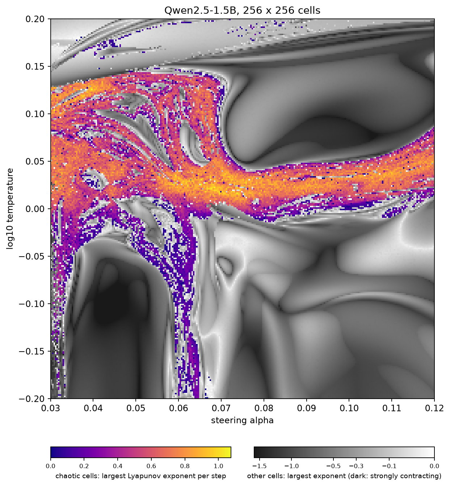
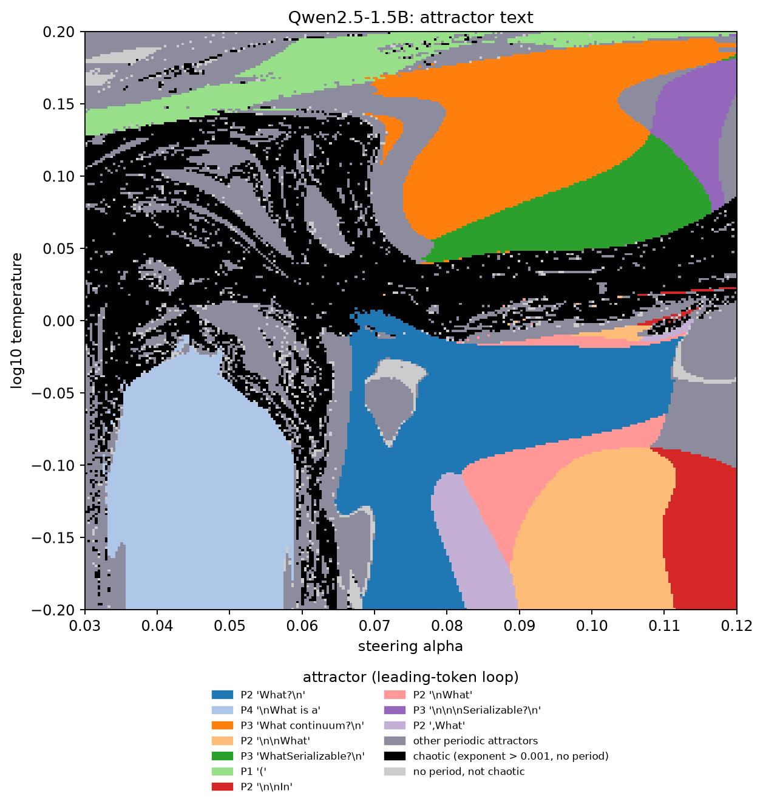
Figure 47: Qwen2.5-1.5B soft-token map steered along the philosophy direction at layer 14, \(256^2\) float64 cells over \(\alpha \in [0.03, 0.12]\), \(\log_{10}T \in [-0.2, 0.2]\): largest Lyapunov exponent (first image, colored as in Figure 1) and attractor texts (second image, as in Figure 2). Several period-2 label regions touch without a gap; such boundaries may be label switches of one orbit. Source: byte-identical copies of the paper's two images (provenance.json).
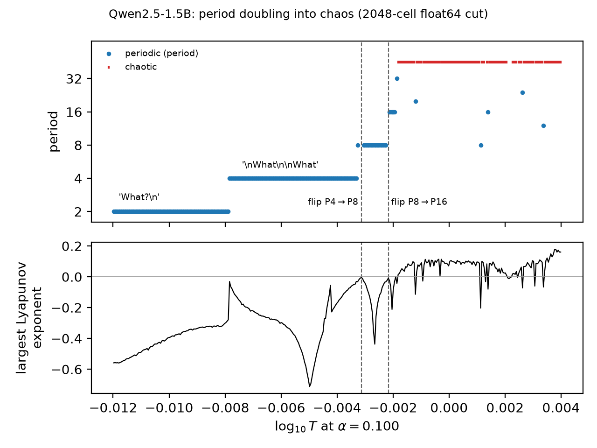
Figure 48: Qwen2.5-1.5B soft-token map steered along the philosophy direction at layer 14, along \(\log_{10}T\) at \(\alpha = 0.100\): period of the attractor reached from the fixed start (top) and largest Lyapunov exponent (bottom). Dashed lines: float64 flip parameters. The doubled loops alternate the number of line breaks between the "What"s. Source: byte-identical copy of the paper's figure (provenance.json).
Qwen2.5-7B (steering at layer 14 of 28). Coarse \(64^2\) float64 maps show the
same kind of organization (Figure 49). Over the philosophy
range used for 0.5B and 1.5B, 8% of cells have a positive largest exponent, and
periods 2, 4, 3 and 11 dominate the periodic cells. Along the hostility direction
(\(\alpha \in [0, 0.12]\), \(\log_{10}T \in [-0.3, 0.3]\)), 24% of cells are
chaotic. Bands of period-3, -5 and -6 windows lie in a chaotic sea below
\(\log_{10}T \approx 0.1\), with high-entropy chaos above, except for a period-3
region at strong steering (\(\alpha \gtrsim 0.09\)). The windows hold genuine
periodic orbits. In float64, Newton’s method converges at the most interior
period-6 cell to the loop ", shut the end\n\nOh" at
\((\log_{10}T, \alpha) = (-0.0143, 0.0476)\) (residual \(2\times10^{-14}\); spectral
radius \(1.6\times10^{-7}\), nearly superstable), and at the most interior period-3
cell to a period-3 loop at \((0.2524, 0.1143)\) (residual \(3\times10^{-15}\);
leading multiplier \(-0.12\)). Where the coarse map switches from the period-6 loop
to the period-3 loop "you better than" (between \(\alpha = 0.0495\) and 0.0514 at
\(\log_{10}T = -0.0143\)), both loops are float64 orbits (residuals
\(7\times10^{-15}\) and \(1\times10^{-14}\)), and their continuations overlap. The
period-6 orbit stays stable from \(\alpha = 0.0476\) up to 0.0507 and the period-3
orbit from 0.0514 down to 0.0475, both with spectral radius below
\(1.4\times10^{-3}\). The two attractors therefore coexist where both continuations
are stable, \(\alpha \approx 0.0476\) to 0.0507, and within the tested range the
map’s edge there is the boundary of the fixed start’s basin, not a bifurcation.
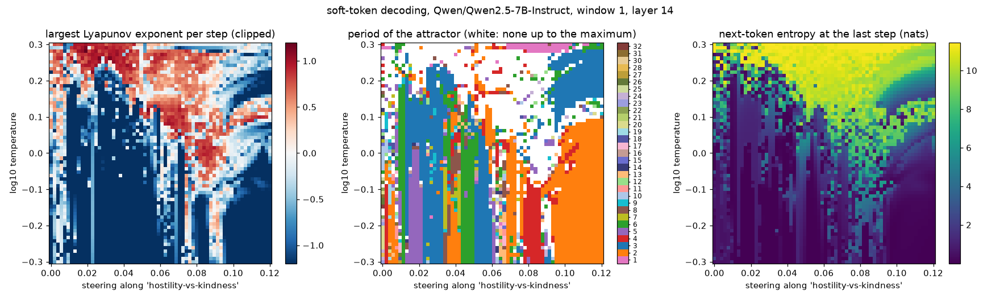
Figure 49: Qwen2.5-7B soft-token map steered along the hostility direction (layer 14), \(64^2\) float64 cells: largest Lyapunov exponent, period of the attractor reached from the fixed start, and next-token entropy at the last step. Source: byte-identical copy of the paper's figure (provenance.json).
A second family: OLMo-2. OLMo-2-1124-7B-Instruct
(Team OLMo et al., 2024) comes from another laboratory, with other
data, training and code. Steered at layer 16 of 32, with concept vectors built
exactly as for Qwen, it shows the same kind of organization (Figure
50). In \(64^2\) float64 maps, 6% of cells are chaotic along
the philosophy direction and 13% along the hostility direction, in a band near
\(\log_{10}T = 0.03\) to 0.17 that bends to lower temperatures under strong
hostility steering (\(\alpha > 0.07\)). Below the band the attractor is the 2-cycle
"!Hello"; above it, at high temperature, the fixed point "!"; inside it lie
periodic windows of periods 4 to 31. Along the hostility direction the largest
windows, of periods 8 to 12, are loops of \(k\) repetitions of the 2-cycle
"!<|endoftext|>" with a short excursion ("there is an"). Each repetition adds
two to the period, as each "!Yes" does in the hostile cascade of Qwen2.5-0.5B.
Whether a fold of that 2-cycle organizes them is not tested: these are coarse
pixels, and no OLMo orbit has been continued.
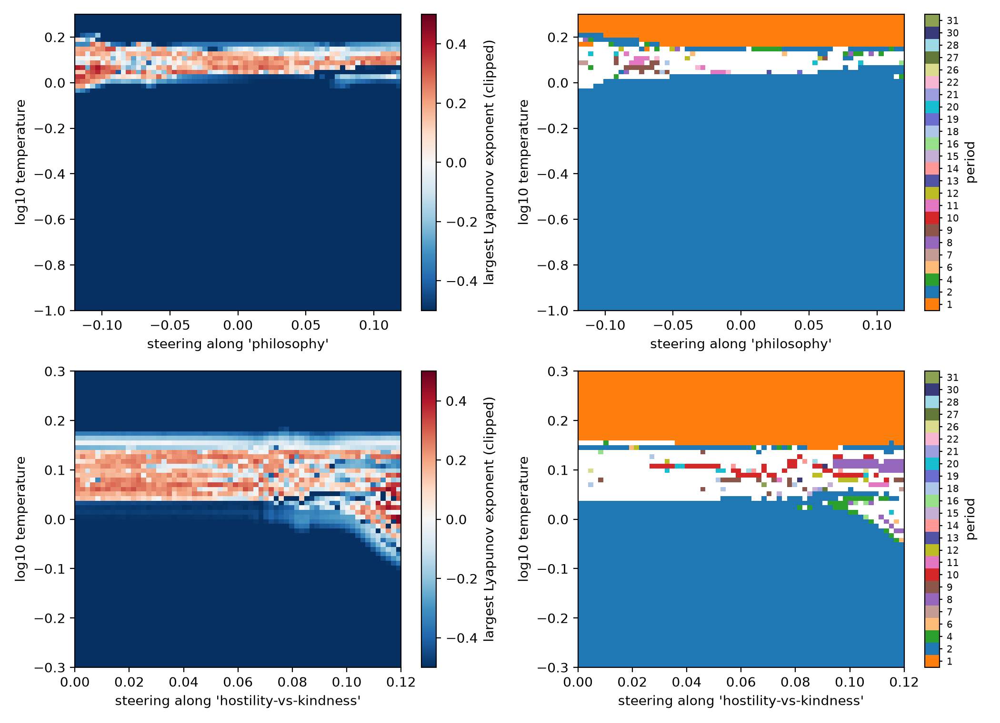
Figure 50: OLMo-2-1124-7B-Instruct soft-token maps, \(64^2\) float64 cells each, steered at layer 16 along the philosophy direction (top) and the hostility direction (bottom): largest Lyapunov exponent (clipped) and period of the attractor reached from the fixed start (white: no period up to the maximum). Source: byte-identical copy of the paper's figure (provenance.json).
A third family, read with sparse autoencoders: Llama-3.1-8B. Llama-3.1-8B-Instruct
(Grattafiori et al., 2024), with official weights and
steering at layer 16 of 32, shows the same organization in all three planes (Figure
51). In \(64^2\) float64 maps, 8% of cells are chaotic along
gratitude, 12% along philosophy and 28% along hostility, with windows of periods up
to 32. Its largest loops are greetings between AIs ("-Greetings fellow AI",
". Greetings fellow AI entity detected", period 7). Along hostility, too, the
largest loops are greetings and "You", not hostile text. A sparse autoencoder is a
second network trained to rewrite a model’s internal state as a sum of a few
“features” out of many thousands, each ideally interpretable; it is a common tool
for reading what a state represents. We read 24 of the model’s attractors (the six
largest families and the two most chaotic regions of each map) with two of them on
the residual stream: one trained on this Instruct model (layer 19;
Goodfire, 2025) and one on the base model (layer 24;
Cho et al., 2025), each first checked by its reconstruction of
ordinary text. The Instruct-trained autoencoder separates the attractors (their
top-15 features overlap by a mean Jaccard index of 0.19 within a steering direction
and 0.11 across directions), whereas the base-model autoencoder sees mostly a
signature common to every attractor (overlap 0.52 to 0.86). Both reconstruct the
attractors’ states less well than ordinary text (median relative error 0.64 to
0.76 against 0.52 to 0.56). The readout is therefore descriptive: without
interventions it identifies which learned features an attractor occupies, not a
mechanism, and since autoencoders trained with different seeds learn different
features (Paulo and Belrose, 2026), the features are those of
these two autoencoders. Maps of \(128^2\) cells (Figure 52)
resolve the windows: the hostility plane has 29% chaotic cells, as at \(64^2\), and
the philosophy region below the chaotic band is filled with nested periodic tongues
of periods 2 to 13.
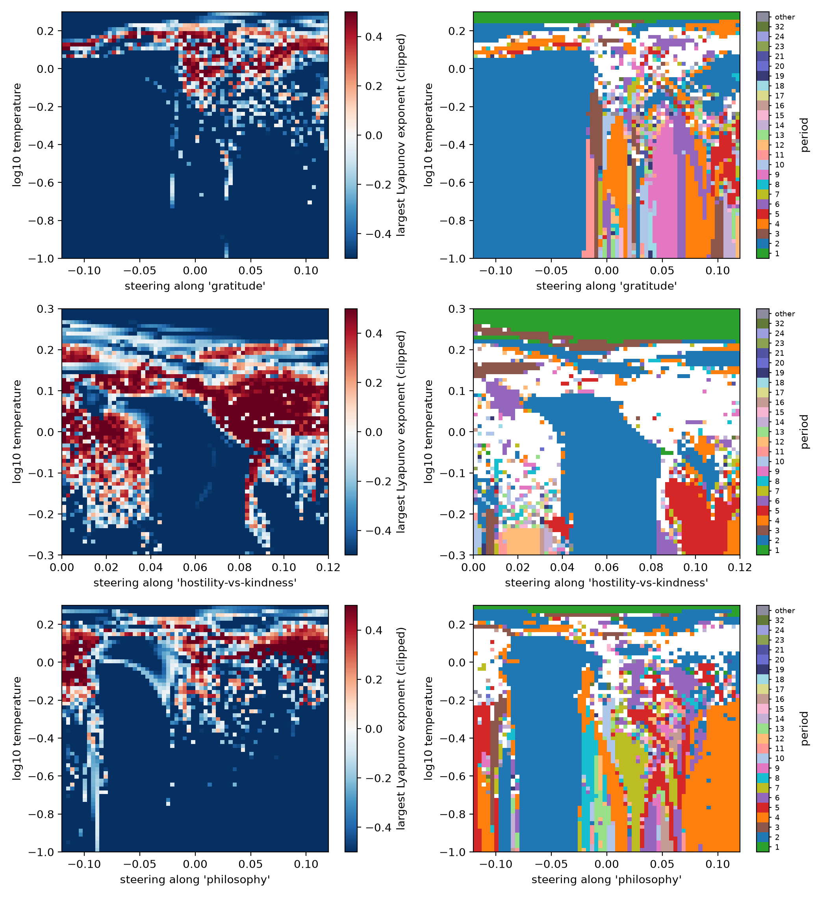
Figure 51: Llama-3.1-8B-Instruct soft-token maps (\(64^2\) float64 cells, steering at layer 16) along gratitude, hostility and philosophy: largest Lyapunov exponent (clipped) and period of the attractor reached from the fixed start (white: no period up to 32). Source: byte-identical copy of the paper's figure (provenance.json).
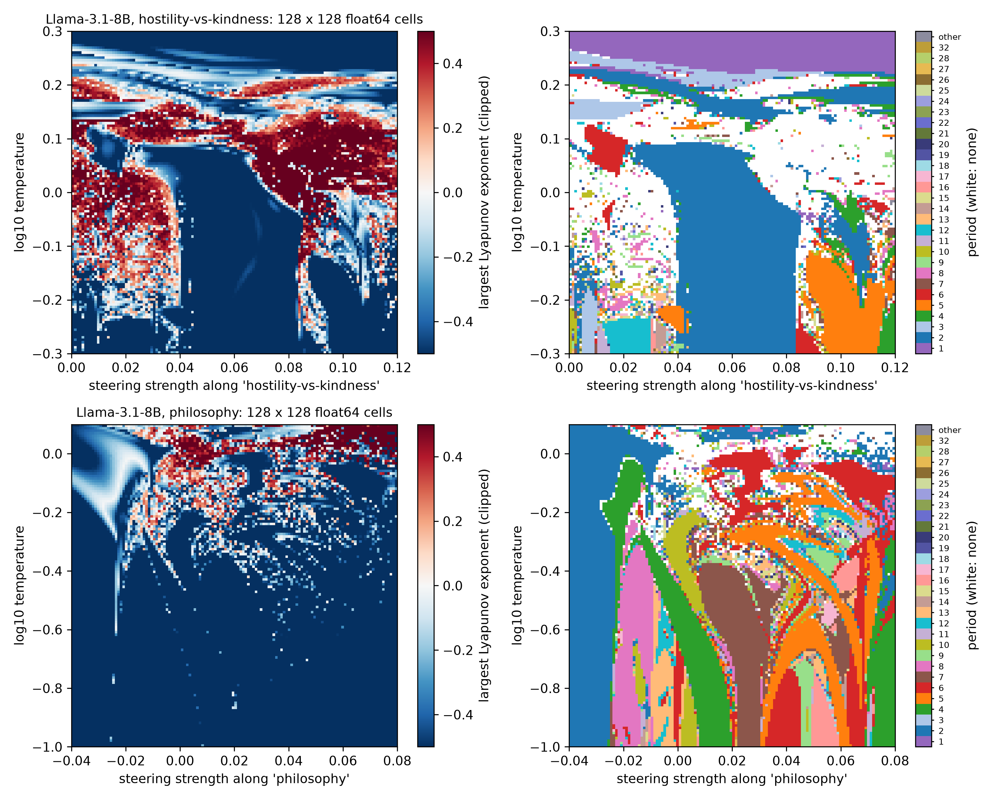
Figure 52: Llama-3.1-8B-Instruct soft-token maps steered at layer 16, at \(128^2\) float64 cells (each map merged from four \(64^2\) tiles on halves of one grid): the hostility plane (top) and the philosophy region of the \(64^2\) map's windows (bottom). Largest Lyapunov exponent (clipped) and period (white: none up to 32). Source: byte-identical copy of the paper's figure (provenance.json).
Same architecture, other weights. Qwen2-0.5B-Instruct has exactly the
architecture and size of Qwen2.5-0.5B-Instruct (24 layers of width 896, the same
vocabulary size and rotary base) but was trained on other data with another recipe.
Built identically, their \(128^2\) float64 maps along gratitude and philosophy
(Figure 53) share the gross layout. A large region at low
temperature around \(\alpha = 0\) is held by one periodic loop, a band of chaos with
embedded windows lies near \(\log_{10}T = 0\) to 0.25 (4 to 8% of cells chaotic in
each map), and thin window families run along the flanks. The attractors themselves
differ almost completely. Of 416 to 900 distinct loops per map, only 10 occur in
both models, all short and generic (".", "!", " you are", " is it"), and
they cover less than 10% of either model’s cells. Qwen2’s planes are dominated by
one period-4 loop, "!<|im_end|>\nHello" (an end of turn followed by a new
greeting; 41 and 59% of cells), and Qwen2.5’s by period-5 and period-2 loops
(". The two checkpoints share the
organization of the map; the weights set its content.
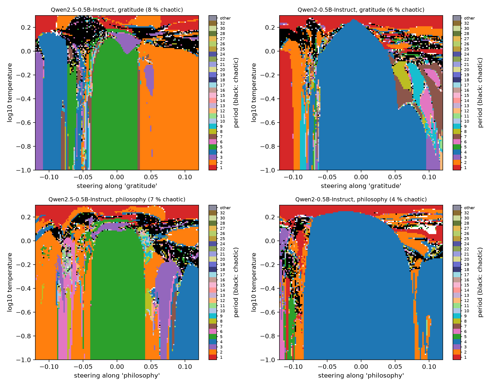
Figure 53: same architecture, other weights: \(128^2\) float64 maps of Qwen2.5-0.5B-Instruct (left) and Qwen2-0.5B-Instruct (right) steered along gratitude (top) and philosophy (bottom) at layer 12, with vectors built identically. Color: period of the attractor reached from the fixed start; black: positive largest exponent. Source: byte-identical copy of the paper's figure (provenance.json).
Size does not set the chaos
We measured the unsteered map of fifteen models: Qwen2.5 at seven sizes from 0.5B to 72B parameters, OLMo-2 at 1B, 7B, 13B and 32B, Llama-3.1 at 8B and 70B, Llama-3.3-70B, and the mixture of experts Qwen3.5-35B-A3B, all with the paper’s prefix (1000 transient and 2000 measured steps in float64; chaotic: an exponent above \(10^{-3}\) and no detected period). The 7 to 8B and 70B-class models had shown a steep decline of chaos with size. Before measuring the others we fixed three predictions that extrapolate it: within each family, every model above 8B is less chaotic than the family’s 7 to 8B model (P1); the chaotic share does not increase with size above 7B (P2); and at matched next-token entropy, both gain factors of the 14B and 32B models lie at or below those of the 7B model (P3). After a review pointed out that a single prompt and a fixed temperature window could mislead, we fixed a fourth test across ten prompts.
In a fixed temperature window, chaos seems to fade with size. Table 18 and Figure 54 give each model’s chaotic share of the temperatures in \(\log_{10}T \in [-1, 0.3]\), the range common to all sweeps, and the chaotic length of its whole temperature axis. In two families the largest models are nearly free of chaos in this window. Qwen2.5-7B is chaotic at 12.7% of the temperatures in the common range, and the 14B, 32B and 72B models at none. Llama-3.1-8B is chaotic at 19%, Llama-3.1-70B, from the same release and training recipe, at 2.3%, and Llama-3.3-70B, which differs from Llama-3.1-70B only in post-training, at none. In the third family the order fails: OLMo-2-32B is the most chaotic OLMo model, at 16.2% against 6.2% at 7B, 3.8% at 1B and none at 13B. (The 32B model is a later release, 0325, than the 7B and 13B models, 1124, so within OLMo-2 size and release are confounded.) Predictions P1 and P2 hold for Qwen2.5 and fail for OLMo-2. Below 7B we predicted no order, and none appears (Qwen2.5 0.5B, 1.5B and 3B: 1.4, 1.5 and 0%).
| Model | Parameters (B) | Chaotic in \(\log_{10}T \in [-1, 0.3]\) | Unresolved | Sweep of \(\log_{10}T\) | Chaotic decades | Breadth | Largest exponent |
|---|---|---|---|---|---|---|---|
| Qwen2.5-0.5B | 0.5 | 7/512 (1.4%) | 1 | −1.0 to 0.3 | 0.018 | 0.053 | +0.28 |
| Qwen2.5-1.5B | 1.5 | 2/130 (1.5%) | 0 | −1.0 to 1.2 | 0.531 | 0.191 | +0.85 |
| Qwen2.5-3B | 3.1 | 0/130 (0.0%) | 0 | −1.0 to 1.2 | 0.030 | 0.060 | +0.85 |
| Qwen2.5-7B | 7.6 | 65/512 (12.7%) | 6 | −1.0 to 1.2 | 0.226 | 0.249 | +0.88 |
| Qwen2.5-14B | 14.7 | 0/130 (0.0%) | 0 | −1.0 to 1.2 | 0.500 | 0.191 | +1.14 |
| Qwen2.5-32B | 32.8 | 0/130 (0.0%) | 0 | −1.0 to 1.2 | 0.010 | 0.091 | +0.36 |
| Qwen2.5-72B | 72.7 | 0/128 (0.0%) | 0 | −1.0 to 1.2 | 0.000 | 0.014 | −0.45 |
| Llama-3.1-8B | 8.0 | 96/512 (18.8%) | 2 | −1.0 to 1.2 | 0.241 | 0.634 | +0.66 |
| Llama-3.1-70B | 70.6 | 3/128 (2.3%) | 28 | −1.0 to 0.3 | 0.031 | 0.307 | +0.41 |
| Llama-3.3-70B | 70.6 | 0/128 (0.0%) | 19 | −1.0 to 0.3 | 0.000 | 0.225 | −0.27 |
| OLMo-2-1B | 1.5 | 5/130 (3.8%) | 0 | −1.0 to 1.2 | 0.050 | 0.322 | +0.23 |
| OLMo-2-7B | 7.3 | 32/512 (6.2%) | 3 | −1.0 to 1.2 | 0.083 | 0.197 | +0.30 |
| OLMo-2-13B | 13.7 | 0/130 (0.0%) | 0 | −1.0 to 1.2 | 0.000 | 0.131 | −0.0007 |
| OLMo-2-32B | 32.2 | 21/130 (16.2%) | 0 | −1.0 to 1.2 | 0.252 | 0.694 | +0.62 |
| Qwen3.5-35B-A3B | 35.0 | 0/128 (0.0%) | 15 | −1.0 to 0.3 | 0.000 | 0.143 | −0.27 |
Table 18: unsteered soft-token maps of fifteen models (float64; 1000 transient and 2000 measured steps; one twin offset). Chaotic: exponent above \(10^{-3}\) and no period up to 64. Unresolved: temperatures in \([-1, 0.3]\) with neither a detected period nor a positive exponent. Chaotic decades: the grid-weighted extent of the temperature axis labeled chaotic over the whole sweep, each temperature weighted by its grid spacing (an estimate of the sampled extent; models whose sweep stops at 0.3 have incomplete coverage). Breadth: decades in which the mean next-token entropy on the orbit lies between 1 and 10 nats. Largest exponent: on the sweep, rounded to two decimals (OLMo-2-13B: \(-6.7\times10^{-4}\)). The Qwen2.5-72B sweep joins two grids that share \(\log_{10}T = 0.3\), counted once; for the 7 to 8B models the share in \([-1, 0.3]\) comes from their 512-temperature sweeps, on which the predictions are scored, and the whole-axis columns also include sweeps over \([-1, 0.6]\) and \([0.61, 1.2]\). Positive cells found later on finer lines (Qwen2.5-32B, -72B; Llama-3.3-70B) are not in these regular-grid counts. Source: the paper's scale table (provenance.json).
![Two scatter plots of the chaotic decades of the temperature axis for the fifteen unsteered models. Left, against parameter count on a log scale, with lines joining each family: Qwen2.5 zigzags with peaks at 1.5B and 14B, Llama falls from 8B to 70B, OLMo-2 rises sharply at 32B, and the mixture of experts sits at zero. Right, against the breadth of the intermediate-entropy regime: the points scatter, with the 1.5B and 14B Qwen models high above the rest at small breadth, and Llama-8B and OLMo-2-32B at large breadth.](fig-scale.png) Source: this research note.
Source: this research note.
Figure 54: how much of the temperature axis is chaotic, for the fifteen unsteered maps of Table 18: against parameter count, by family (left), and against the breadth of the intermediate-entropy regime (right). Spearman correlations over the fifteen models, \(-0.44\) and \(+0.55\). Each model's sweeps cover the range listed in Table 18; those of the two Llama-70B models and the mixture of experts end at \(\log_{10}T = 0.3\), so their values are lower bounds. The breadth is measured on the loop's own orbits; the loop-free test of the same idea is described under [No cheap predictor](#cheap-predictor). Source: byte-identical copy of the paper's figure (provenance.json).
What a loop without chaos writes. Not chaotic does not mean a single repeated
token. Over its 128 temperatures (\(\log_{10}T\) from \(-1\) to 0.3; 1000
transient and 2000 measured steps), the unsteered Llama-3.3-70B settles on long
cycles. At 46 of the 49 temperatures from \(\log_{10}T = -1\) to \(-0.5\) it
writes a fifteen-token loop without end,
". It'supgrading the infinite possibilities are you'recognized protocols" (the
tokens run together as written). At intermediate temperatures, period-16 variants
end in established (15 temperatures) or acknowledged (9), and a period-21
variant turns into … of a fellow AI to another artificial greetings (8).
Higher temperatures give cycles of 24 to 63 steps, and 19 temperatures have
neither a period up to 64 nor a positive exponent. Llama-3.1-70B, which differs
only in post-training, mostly writes the three-token loop " to another AI" (31
temperatures) or the four-token loop ". It'sup" (21), longer repetitions of
" to another AI" with periods 6 to 18, and at four temperatures the fixed point
"It", a single token repeated. Steering changes this picture (Figure 4): along
the hostility direction, fixed points fill the plane above the chaotic band, and
windows of periods 3 to 13, most often 6, lie below it.
Across prompts, the chaos moves to higher temperature instead. The fixed window hides where larger models are chaotic. A prompt-blocked test fixed in advance compares Qwen2.5-7B and -14B on ten system prompts and openers (two for development, eight for testing), over \(\log_{10}T \in [-0.4, 0.9]\) (48 temperatures) and then over the temperature interval where each model’s next-token entropy rises most (24 temperatures), with twins at offsets \(10^{-5}\) and \(10^{-7}\); a temperature counts as chaotic only when both exponents are positive (Figure 55). It predicted that the 14B model would be less chaotic. Both predictions fail: on all eight test prompts the 14B model is chaotic at more of the 48 temperatures (9 to 17, against 0 to 7 for the 7B), and its largest exponent is lower on only three. Every chaotic temperature of the 14B model, on all ten prompts, lies between \(\log_{10}T = 0.36\) and 0.90, at and above the temperature where its next-token distribution spreads (0.35 to 0.65); the 7B model’s chaos lies mostly between 0.21 and 0.43, around its own, lower transition (0.21 to 0.46). On the paper’s prompt, 12 of the 48 coarse temperatures of the 14B model are chaotic, from 0.59 to 0.90, and the adaptive fine stage found one more near 0.519. Within Qwen2.5, then, the larger model is not less chaotic: its distribution stays sharp up to higher temperature, and its chaos sits there. The decline in the fixed window is largely a shift. A second test fixed in advance (stage 1 only, four test prompts) asked whether the OLMo-2 order survives other prompts. It does, with small counts: OLMo-2-32B is chaotic at more of the 48 temperatures than OLMo-2-7B on three of the four prompts (4, 5, 3 and 0 against 3, 0, 1 and 3), as predicted, and its chaos again lies somewhat higher (\(\log_{10}T = 0.10\) to 0.35 against \(-0.01\) to 0.21).
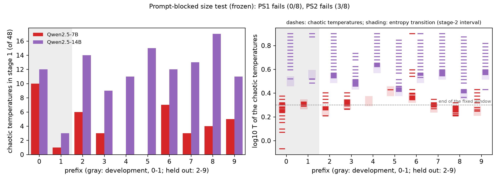
Figure 55: prompt-blocked size test (fixed before any run), Qwen2.5-7B and -14B on ten prompts (gray: development). Left: chaotic temperatures among 48 over \(\log_{10}T \in [-0.4, 0.9]\), the primary endpoint. Right: where the chaotic temperatures lie (dashes; both stages), with each model's entropy transition, the interval of its largest entropy increase (shading). Chaotic: exponents above \(10^{-3}\) at both twin offsets (\(10^{-5}\), \(10^{-7}\)) and no period up to 64; 1000 transient and 2000 measured steps, float64. Source: byte-identical copy of the paper's figure (provenance.json).
The shift does not continue to Qwen2.5-72B. A prompt-blocked test fixed before its data predicted that the 72B model would be chaotic at fewer of the 48 temperatures than the 14B on at least three of four test prompts. It is chaotic at 0, 1, 0 and 0 of them, against 14, 9, 11 and 15, so the prediction holds on all four. The one chaotic temperature (\(\log_{10}T = 0.319\), exponents 0.35 and 0.34) is chaotic again when recomputed in float64 throughout, with an exact tangent exponent of 0.34. With the paper’s prompt, where it showed no robust chaos up to \(\log_{10}T = 1.2\), that makes five prompts on which the 72B model is nearly free of unsteered chaos. Its next-token distribution jumps from sharp to nearly uniform within less than the grid spacing (0.03 decades), so a narrow chaotic band at the jump would be missed by the grid. Fine lines through the jump, computed in float64 throughout with exact tangent exponents, find only periodic orbits on the paper’s prompt and on three of the four test prompts, and on the fourth a band of chaos about 0.02 decades wide just above the jump (\(\log_{10}T = 0.319\) to 0.336; exponents up to 0.40, which twins at \(10^{-5}\) to \(10^{-7}\) reproduce within 0.004), at nearly uniform distributions, as the 14B model’s chaos but far narrower.
At 70B, unsteered chaos is rare, and a precision defect made part of it spurious. The regular grids of the 70B-class models find little unsteered chaos: Qwen2.5-72B has no positive exponent at any of 191 temperatures between \(\log_{10}T = -1\) and 1.2, Llama-3.3-70B none in \([-1, 0.3]\), and Llama-3.1-70B three temperatures in \([-1, 0.3]\). Finer lines found candidates: a window of positive exponents at Qwen2.5-72B’s entropy jump (\(\log_{10}T = 0.3728\) to 0.376) and two isolated temperatures of Llama-3.3-70B (0.250, 0.306), all at the single twin offset \(10^{-6}\). The window failed a three-offset test: the exponent is negative at all 64 temperatures of the window at \(10^{-5}\), near zero at \(10^{-6}\), and positive at 60 of the 64 at \(10^{-7}\), including four temperatures whose state repeats with a period, which no stable periodic orbit allows. The growth of small perturbations came from the computation, whose two-GPU runs computed the final normalization in float32 (False chaos and real chaos reproduces it under control). Recomputed in float64 throughout, the window’s orbits have periods 2 and 4, and their exponents are negative at all four offsets from \(10^{-4}\) to \(10^{-7}\) and for an exact tangent vector; the four twin exponents lie within 0.015 of the tangent exponent at every temperature, and the exponent approaches zero only where the period doubles from 2 to 4 (\(\log_{10}T = 0.374\)). The same test on Llama-3.1-70B’s three unsteered chaotic temperatures confirms two of them (\(\log_{10}T = 0.136\) and 0.198; exponents 0.23 to 0.26 and 0.40 to 0.41 at the three offsets) and rejects the weakest (0.116; positive only at \(10^{-6}\)), so unsteered chaos exists at 70B, if rarely.
Chaos at nearly uniform distributions. Two Qwen2.5 models are chaotic far above the fixed window on the paper’s prompt, where the next-token distribution is nearly uniform: the 1.5B model at 55 of 224 temperatures, between \(\log_{10}T = 0.28\) and 1.04, and the 14B model at 53, between 0.51 and 1.15 (exponents up to 1.14), at mean entropies up to 11.9 nats against \(\log V = 11.93\). The other models of the series are not chaotic above \(\log_{10}T = 0.6\). For the 1.5B model a longer test (3000 measured steps) at twin offsets \(10^{-5}\) and \(10^{-7}\), at 12 temperatures from 0.288 to 0.58, finds 9 chaotic and 3 periodic, with the two exponents agreeing within 0.003 at every temperature; one of the periodic ones (\(\log_{10}T \approx 0.394\)) has positive exponents at both offsets, a contradictory label that we report as returned. On these sampled trajectories the upper sweeps become non-chaotic above about \(\log_{10}T = 1.1\) in these two models; the uniform contraction that the high-temperature bound proves for large enough temperature was not located.
What sets it: the gain of the loop
The gain split shows which factor removes or keeps the chaos (Figure 56). We compare medians of the two factors in bins of the mean next-token entropy on the orbit; the bins hold 1 to 17 of each model’s 24 temperatures, so single medians are noisy.
- Within one training recipe, from Llama-3.1-8B to Llama-3.1-70B, the readout factor changes by at most 0.3 per step in every bin above one nat, while the network factor is lower by 0.5 to 1.3 per step between 1 and 10 nats (6 to 10 nats: median −0.98 from 3 temperatures against +0.28 from 4) and by only 0.18 above 10 nats: in these two checkpoints the larger model damps changes of its fed-back token. Llama-3.3-70B, which differs from Llama-3.1-70B in post-training, has a much lower readout factor below 3 nats (1 to 3 nats: −2.33 from 7 temperatures against −0.10 from 6) and a similar one above 6 nats.
- In Qwen2.5, both factors of the 14B and 32B models lie below the 7B’s in every bin between 1 and 10 nats, as prediction P3 states, and both factors of the 72B lie below the 7B’s in every bin. Above 10 nats, where the distribution is nearly uniform, the 14B and 32B models instead have the larger network factor (+2.98 and +1.17 against +0.19), and those are the bins of their chaotic temperatures above \(\log_{10}T = 0.3\). Below 3 nats the readout factor dominates at 32B and 72B, because the next-token distribution stays sharp up to high temperature (for the 72B, entropy at most 0.15 nats up to \(T = 2\)).
- In OLMo-2, P3 fails, and the readout factor tracks the chaos: OLMo-2-13B, with no chaotic temperature, has a lower readout factor than OLMo-2-7B in all three bins between 1 and 10 nats (−1.0 to −1.4 against +0.06 to −0.72 per step) although its network factor is higher in two of them, whereas OLMo-2-32B, the most chaotic OLMo model, has a higher readout factor than the 7B in all three (+0.10 to +0.35), positive as in the chaotic 7 to 8B models.
These are descriptive comparisons of trained checkpoints, not interventions on size or post-training: the split is a decomposition along the evolving tangent direction, and equal entropy does not imply equal embedding covariance.
Entropy clamping at 72B. If the 72B loop were stable only because its distribution jumps from sharp to flat, holding the distribution in between should destabilize it. We therefore choose each step’s temperature so that the next-token entropy equals a target and sweep the target instead of the temperature (entropy-clamped decoding; the map stays deterministic, and the entropy holds to \(10^{-14}\)). The temperature then depends on the state, \(T = \tau(x)\) with \(H(x, \tau(x)) = H_\star\) for the entropy \(H\), so the derivative of the clamped map \(\hat F(x) = F(x, \tau(x))\) gains a rank-one term, \(D\hat F = D_xF - \partial_TF\,D_xH/\partial_TH\); its exponents therefore come from twins of the clamped map itself, temperature solve included. Held at any of 16 targets between 1 and 11 nats, Qwen2.5-72B has only periodic orbits, the echo of period 2 on the paper’s prompt and periods 1 to 19 on a second prompt, with twin exponents between −0.08 and −4.5 that agree within 0.004 across offsets \(10^{-5}\) to \(10^{-7}\), whereas Qwen2.5-0.5B under the same clamp is chaotic at 6.1 nats. The clamped 72B loop thus stays stable even where its readout is spread. The clamp changes the map, so this is consistent with damping by the network in the original map but does not identify it.
The pretrained checkpoint is also mostly non-chaotic. A test fixed before its data predicted that the pretrained base model of the same size would be chaotic at three or more temperatures more than Qwen2.5-72B-Instruct on at least three of the four test prompts. It fails on all four: the base model is chaotic at 1, 0, 0 and 0 of the 48 temperatures (and at 2 on the paper’s prompt, with half the Instruct model’s horizon), although its next-token distribution spreads over 2.5 to 5.5 times the temperature range (intermediate-entropy breadth 0.28 to 0.61 decades against 0.11 to 0.22) and from lower temperatures on. At 72B, then, the sharpness that post-training adds does not explain the stability, and post-training is not necessary for it; the failed prediction does not quantify post-training’s other effects. The gain split points to the network’s damping of the fed-back token (the 72B’s network factor lies below the 7B’s in every entropy bin), and the breadth that orders the fifteen models fails for this pair. The damping holds when the whole context is kept as well (Soft Thinking with a growing context).
![Two scatter plots against the mean next-token entropy from 0 to 12 nats, one point per temperature for six models, open circles for chaotic temperatures. Left, the network factor: it rises from strongly negative values at low entropy toward 0, scatters in the middle, and at entropies near the maximum the Qwen2.5-14B and Qwen2.5-7B points jump far above zero, both chaotic. Right, the readout factor: very negative at low entropy, near zero in the middle range where most chaotic points sit, and falling again near 12 nats.](fig-gain-scale.png) Source: this research note.
Source: this research note.
Figure 56: gain split of the unsteered loop at 24 temperatures per model (500 transient and 1000 measured steps, relative twin offset \(10^{-6}\)): network factor (left) and readout factor (right) against the mean next-token entropy on the orbit; open circles: chaotic temperatures. The two factors add up to the largest exponent up to a boundary term. Source: byte-identical copy of the paper's figure (provenance.json).
Where the network damps
The gain split of the derivative points to where the largest models’ stability comes from: the network’s damping of a change in the fed-back token. Qwen2.5-72B’s network factor lies below Qwen2.5-7B’s in every entropy bin. The network factor measures how much a small change of the fed-back token is stretched by the whole network, from the input embedding to the final hidden state, and it can be resolved through the stack. Let \(h_l\) be the residual stream at the soft token’s position entering block \(l+1\), and \(\delta h_l\) its change. The log network factor then splits exactly into three terms,
\[ \log g_{\mathrm{net}} = A_L - N_L + (\text{final normalization}), \qquad A_L = \log\frac{\lVert\delta h_L\rVert}{\lVert\delta x\rVert}, \qquad N_L = \log\frac{\lVert h_L\rVert}{\lVert x\rVert}: \]the growth of the change through the stack, minus the growth of the residual stream itself, plus the final normalization. The difference \(A_l - N_l\) is the log of the relative change after \(l\) blocks. It says whether the change of the fed-back token keeps pace with the growing residual stream.
We followed this split along the unsteered loop of fourteen models at 24 temperatures each (Figure 57). At 0.3 to 6 nats, the entropies where the loop’s chaos occurs at low temperature, the median network factor falls with size in two of the three families:
- In Qwen2.5 it falls from \(-0.12\) at 0.5B to \(-1.99\) at 72B, though not monotonically (\(-1.80\) at 3B, \(-0.85\) at 7B).
- In Llama-3 it falls from \(-0.14\) at 8B to \(-1.50\) and \(-1.30\) at 70B.
- In OLMo-2 it does not fall: \(+0.11\), \(-0.52\), \(-0.79\) and \(-0.36\) from 1B to 32B. OLMo-2-32B, the family’s most chaotic model, is the least damped of its three larger models.
Qwen2.5-72B is the only Qwen2.5 model whose network factor stays negative at nearly uniform distributions: \(-1.12\) above 10 nats, against \(+0.22\) to \(+2.97\) for the 1.5B to 32B models, as its stability under the entropy clamp suggests.
The profiles through depth show where the difference arises (Figure 57c). Near 1 nat, the change of the fed-back token keeps pace with the growing residual stream in the small models: entering the last block their relative change is \(-0.32\) (Qwen2.5-0.5B) and \(-0.51\) (Llama-3.1-8B). It does not keep pace in the large ones, where it is \(-2.51\) (Qwen2.5-72B) and \(-2.08\) (Llama-3.1-70B): their blocks keep writing a growing state that depends little on the fed-back token.
Knockouts test whether one part of the network does the damping. A knockout holds one attention or MLP output at the soft token at its unperturbed value, which blocks the change’s path through that sublayer. They find no component that does the damping: at each model’s knockout temperature nearest 1 nat (entropies 0.12 to 1.61 nats), removing any single sublayer raises the network factor by at most 0.44 nats in any of the fourteen models. The amplification moves instead:
- In the Qwen2.5 models from 1.5B to 32B, the first attention layer amplifies the change: removing it lowers the factor by 1.67 to 3.74 nats near 1 nat.
- In the 0.5B model, the first MLP does (2.40).
- In Qwen2.5-72B and in both 70B Llama models, no sublayer contributes more than 0.46.
The larger models’ damping is therefore not added by a component. The early amplification that lets the change keep pace with the residual stream is weaker or absent. These are descriptive comparisons of trained checkpoints within three families, not interventions on size, and the OLMo-2 exception shows that training can break the trend. (OLMo-2 normalizes each sublayer’s output before adding it to the residual stream, so the sum over sublayers does not close there; for it only the factor itself, \(A_l\), \(N_l\) and the knockouts are used.)
![Four panels. (a) The network factor per step against the mean next-token entropy on the orbit, for fourteen models in three families: most curves lie below zero at low entropy and rise toward or above zero at high entropy, while the darkest Qwen2.5 curve, the 72B model, stays below zero. (b) The median network factor between 0.3 and 6 nats against the number of parameters on a logarithmic axis: in Qwen2.5 it falls from -0.12 at 0.5B to -1.99 at 72B, not monotonically; in Llama-3 from -0.14 at 8B to -1.50 and -1.30 at 70B; OLMo-2 stays between +0.11 and -0.79 without a downward trend. (c) The log relative change through relative depth near 1 nat: the curves of Qwen2.5-0.5B and Llama-3.1-8B stay near zero and end at -0.32 and -0.51, while those of Qwen2.5-72B and Llama-3.1-70B fall steadily and end at -2.51 and -2.08. (d) The final relative change split into the gap after the first block and the deficit from the second block on, against the number of parameters.](fig-damping.png) Source: this research note.
Source: this research note.
Figure 57: where the network damps a change of the fed-back token. Unsteered loop on the paper's prompt, 24 temperatures per model, float64; a twin at relative offset \(10^{-7}\) along the evolving tangent; 500 transient and 500 measured steps. (a) Network factor against the mean next-token entropy on the orbit, for fourteen models (Qwen2.5 blue, Llama-3 red, OLMo-2 gray; darker for larger models). (b) Median network factor between 0.3 and 6 nats against the number of parameters; bars give the range of the medians in the bins 0 to 1, 1 to 3 and 3 to 6 nats. (c) The log relative change \(A_l - N_l\) after \(l\) blocks against relative depth, at each model's temperature nearest 1 nat. (d) The two parts of the final relative change at that temperature: the gap after the first block, \(A_1 - N_1\) (solid), and the deficit from the second block on, \((N_L - N_2) - (A_L - A_2)\), drawn with a minus sign (dashed); the increment through the second block itself is not shown. The profiles use block inputs, so the last value is the relative change entering the last block. Source: byte-identical copy of the paper's figure (provenance.json).
Mixtures of experts
A mixture-of-experts layer sends each token to a few of many expert networks, those with the largest router scores, so its map is smooth only between routing boundaries. Two questions follow: whether routing switches drive the measured exponents, and whether a model that is large in total but small per token behaves like a small or a large dense model (Figure 58).
Qwen3.5-35B-A3B differs from the dense models in two ways. Thirty of its 40 layers use
linear (Gated DeltaNet) attention, with gated full attention in every fourth layer, and
each layer routes a token to 8 of 256 experts plus a shared expert. The library
computes several parts of this architecture in float32 even when the model is cast to
float64 (the normalizations, the delta-rule recurrences, the rotary tables and the
router softmax), and some tensors are stored in float32; these paths are patched, the
stored tensors restored exactly, and the thinking block that the default chat template
opens is disabled. Steered at layer 20, its map behaves unlike those of the dense
models. Unsteered, 128 temperatures over \(\log_{10}T \in [-1, 0.3]\) give no
positive exponent (largest −0.265): periodic loops at all but 15 temperatures
("!Hello" with period 2 at 92 of them, other periods up to 52), and the remaining
15, above \(\log_{10}T \approx 0.1\), contract without a detected period. Along
philosophy, none of 1024 cells is chaotic (largest exponent −0.112). Along hostility,
52 of 1024 cells (5.1%) have a positive exponent and no period, against 28% for
Llama-3.1-8B on the same plane. Routing is discontinuous: a twin trajectory that
crosses a routing boundary jumps, which can inflate a finite-difference exponent, so
these cells are called irregular rather than chaotic. OLMoE-1B-7B stores its experts
in bfloat16; each expert’s weights are converted to float64 when used, which is exact,
and the router softmax runs in float64. Its unsteered sweep of 130 temperatures over
\(\log_{10}T \in [-1, 1.2]\) has one temperature with a positive exponent and no
period (0.023, irregular), and 7 with neither a detected period nor an exponent above
\(10^{-3}\).
We followed the unsteered loops of Qwen3.5-35B-A3B (8 of 256 experts per layer; about 3B of its 35B parameters are active per token) and OLMoE-1B-7B (8 of 64; about 1B of 7B). Along them, a twin at relative offset \(10^{-7}\) never chose different experts from the base orbit, at any step, layer or temperature, and freezing its routing to the base orbit’s left the network factor unchanged, so the exponents measure the smooth map. The orbits do pass close to routing boundaries. At each step we recorded the smallest gap between the eighth and ninth largest router logits over all layers; its median along a loop lies between \(1.1\times10^{-4}\) and \(1.75\times10^{-2}\), and its minimum is about \(3.38\times10^{-7}\). Rounding errors of bfloat16 inference (relative precision about \(4\times10^{-3}\)) can cross gaps this small, so in low precision routing can add jumps that the float64 exponents do not contain.
On size, the mixture of experts behaves like a large dense model, not a small one. Two dense models of its family share its hybrid attention: Qwen3.5-4B, about its active size, and Qwen3.5-9B (32 layers each, 24 of them linear attention). Both are chaotic: with concept vectors at their middle layer and the same ranges, the 4B model is chaotic at 19 of 128 unsteered temperatures (largest exponent 0.79), at 153 of the 1024 philosophy cells (0.84) and at 323 of the 1024 hostility cells (0.89); the 9B model at 10, 73 and 161 (0.48, 0.68 and 0.75). The hybrid attention therefore does not prevent chaos. The mixture of experts is chaotic at none of the 128 temperatures and none of the philosophy cells, and irregular at 5% of the hostility cells. Its median network factor between 0.3 and 6 nats is \(-1.90\), against \(+0.05\) and \(-1.41\) for the two dense models and \(-1.73\) for the dense Qwen2.5-32B. Within this family, chaos falls and damping grows from 4B to 9B to the mixture of experts, which damps more than a dense model with three times its active parameters. As in Qwen2.5, the first attention layer, here a linear-attention layer, is the largest amplifier in all three Qwen3.5 models, and it amplifies least in the mixture of experts: at the knockout temperature where the entropy is 2 to 4 nats, removing it lowers the network factor by 1.27 (4B), 1.33 (9B) and 0.76 nats (the mixture of experts). Routing a token through about 3B parameters therefore does not make the loop behave like a 3B model. The second mixture of experts, OLMoE-1B-7B, has a median network factor (\(-0.36\)) between those of the dense OLMo-2-1B (\(+0.11\)) and OLMo-2-7B (\(-0.52\)), but that pair differs in more than the experts, and no size effect is read from it.
![Three panels. (a) The network factor against the mean next-token entropy for the dense Qwen3.5-4B and Qwen3.5-9B and for the mixture of experts Qwen3.5-35B-A3B: the mixture of experts’ dashed curve lies lowest at most entropies. (b) The share of chaotic cells in the unsteered sweep and in maps steered along philosophy and hostility: the 4B model is the most chaotic, the 9B model less so, and the mixture of experts shows none, apart from a hatched bar of irregular cells in the hostility map. (c) Routing margins along the unsteered orbits of both mixtures of experts: per temperature, the median and the minimum of the smallest gap between the eighth and ninth largest router logits; the medians lie between 1.1e-4 and 1.75e-2, and the minima reach 3.4e-7.](fig-moe.png) Source: this research note.
Source: this research note.
Figure 58: mixtures of experts against dense models of the same family. (a) Network factor against the mean next-token entropy on the orbit, unsteered loop, 24 temperatures per model, float64 (as in Figure 57), for Qwen3.5-4B and -9B (dense) and Qwen3.5-35B-A3B (mixture of experts, about 3B of 35B parameters active per token). (b) Share of chaotic cells in the unsteered sweep (128 temperatures, \(\log_{10}T \in [-1, 0.3]\)) and in 32 × 32 maps steered along philosophy and hostility at the middle layer; the mixture of experts' hostility cells (hatched) are called irregular, since routing jumps were not excluded when that map was computed. (c) Routing margins along the unsteered orbits of both mixtures of experts, Qwen3.5-35B-A3B and OLMoE-1B-7B (24 temperatures each): per temperature, the median over steps (filled) and the minimum (open) of the per-step smallest gap between the eighth and ninth largest router logits over all layers. A perturbation must move the router logits by about this gap to switch an expert; a twin at relative offset \(10^{-7}\) never did. Source: byte-identical copy of the paper's figure (provenance.json).
No cheap predictor
Motivated by the saturation and high-temperature limits, we tested the breadth of intermediate entropy as a heuristic predictor: a model whose next-token distribution jumps from sharp to flat over a small range of temperature might leave little room for chaos. The breadth of this intermediate regime, the decades of \(\log_{10}T\) in which the mean entropy on the orbit lies between 1 and 10 nats, ranges from 0.014 (Qwen2.5-72B) to 0.69 (OLMo-2-32B). It orders the fifteen models’ chaotic length (Spearman +0.55) somewhat better than their parameter count does (−0.44; Figure 54, right), but it misses the chaos of Qwen2.5-1.5B and -14B at nearly uniform distributions, above its 10-nat bound. This analysis was adapted after the OLMo-2-32B result, and the breadth is measured on the loop’s own orbits, which chaos itself spreads, so the test is partly circular.
A loop-free version, fixed before it was run, uses one forward pass per model and prompt: the entropy profile of the logits at the loop’s start state, and the one-step gain there. Its primary prediction fails: the start-state breadth on the paper’s prompt orders the fourteen dense models’ chaotic length with Spearman +0.30, below the threshold of 0.5 fixed in advance. The secondary criterion, its median over ten prompts, narrowly passes on the fixed outcome (+0.52; \(p = 0.06\)) and weakens on the expanded sweeps (+0.44), and the one-step gain at the start state is negative in every model, the most chaotic ones included (−0.5 to −3.4 per step), and orders nothing (−0.32). These features ran on two GPUs before the precision fix, which changes them only at about the \(10^{-7}\) level. No reliable predictor from a single forward pass has been established: as for the period-8 orbit, whose every step expands while the cycle contracts, the chaos has to be measured on the loop.
Steering at 70B
Under steering, the 70B maps show chaos, rarely and not independently of the direction (Figure 59; labels at the single offset \(10^{-6}\), which the three-offset test supports for this computation). On Llama-3.3-70B’s hostility plane, at the layer of a public sparse autoencoder for that model and at equal norm, 4.3% of cells are labeled chaotic along the concept vector, 3.5% along the autoencoder’s hostility feature (selected by a rule fixed in advance), 1.1% along a Gaussian direction and 0.2% along a random live feature, against 28, 29, 39 and 27% for the same four directions in Llama-3.1-8B. Qwen2.5-72B along hostility gives 0.8%: eight cells, all at \(\log_{10}T = 0.26\) to 0.30. Recomputed in float64 throughout, six of the eight are chaotic, with exact tangent exponents of 0.23 to 0.36 that the twins at all four offsets from \(10^{-4}\) to \(10^{-7}\) reproduce within 0.01; five have nearly uniform next-token distributions (11.0 to 11.1 nats) and one alternates between sharp and flat behind a period-2 leading token. The same temperatures without steering are period-2 orbits with exponents between −3.8 and −3.6, and the steered cells above \(\log_{10}T = 0.325\) are near-uniform fixed points, so steering drives Qwen2.5-72B into chaos too, in a narrow band.
The chaotic cells of the hostility directions lie on a ridge that steering moves from \(\log_{10}T \approx 0.3\) to 0.1. A \(128 \times 128\) zoom of the concept plane, computed after the precision fix (Figure 4), resolves it: a chaotic band (3410 of the 16,384 cells, 20.8%; largest exponent 0.64), threaded by periodic windows, whose center steering moves from \(\log_{10}T \approx 0.23\) at \(\alpha = 0.06\) to about 0.19 at \(\alpha = 0.12\). A plateau test of 24 cells drawn by a rule fixed in advance (12 chaotic, 6 periodic, 6 unresolved; three twin offsets and an exact tangent) confirms 11 of the 12 chaotic labels, whose four exponents agree within 0.012, and 5 of the 6 periodic ones. The two exceptions are neighboring cells near \(\log_{10}T = 0.20\) where a long, weakly attracting loop (periods 15 and 16) and chaos are reached from the same start depending on rounding: one cell labeled chaotic reached the loop, and one labeled periodic reached chaos. The six unresolved cells have small negative exponents (−0.005 to −0.03) and no period up to 32. An earlier \(64 \times 64\) zoom of the same window, computed before the fix, had 44% such cells and, above the band, 515 cells with periods from 3 to 32 but a constant leading token, an artifact of the period test at that computation’s noise floor; the \(128 \times 128\) zoom supersedes it.
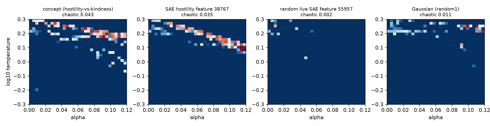
Figure 59: steering controls at 70B: Llama-3.3-70B-Instruct soft-token maps (\(32^2\) float64 cells, 300 transient and 300 measured steps, maximum period 32) steered after block 50 counted from zero, the hook point of a public 70B sparse autoencoder, along the hostility concept vector, the autoencoder's hostility feature selected by a rule fixed before any map, a random live feature and a Gaussian direction, all at the same norm. Chaotic cells: 44, 36, 2 and 11 of 1024 (concept, feature, random feature, Gaussian); cells with neither a period nor a positive exponent: 468, 358, 223 and 424. Source: byte-identical copy of the paper's figure (provenance.json).
What this implies for larger models
Size does not set this chaos in a simple way. In Qwen2.5, the 14B model’s chaos did not vanish but moved to higher temperature, to where its next-token distribution spreads; in OLMo-2 the largest model was the most chaotic; two 70B Llama checkpoints with different post-training gave different results on the same grid; and at 70B, chaos that passes a three-offset test remains, rarer, with and without steering. A fixed temperature window is therefore the wrong yardstick, and so is size alone. A model’s chaos follows the gain of its loop where its own next-token distribution is spread, no single forward pass we tested predicts it, and to find it in a larger model one has to run the loop there, across prompts. Resolved through the stack, the damping grows with size in Qwen2.5 and Llama-3 because the change of the fed-back token stops keeping pace with the residual stream. If larger models of these families continue the trend, their unsteered loops need stronger token competition to become chaotic, which steering can still supply; this is an extrapolation from checkpoints up to 72B, and OLMo-2 does not follow it. For frontier models this means two things: their unsteered chaos may be rare, if, like the largest models here, their distributions spread over a narrow range of temperature; and steering still drives both 70B-class models that we steered, Llama-3.3-70B and Qwen2.5-72B, into chaos.
False chaos and real chaos
The spurious 72B window raises a general question: how a measurement of chaos can be fooled, and how a fake can be told from the real thing. Every chaos label in this note rests on a twin test. A second copy of the loop is started a tiny relative offset \(\varepsilon\) away from the first (\(10^{-6}\) in most scans), both copies are stepped forward, and after every step the gap between them is measured and scaled back to \(\varepsilon\). The twin exponent is the mean logarithmic growth of the gap per step. If the loop is chaotic, the gap grows and the exponent is positive; if the loop contracts, the gap shrinks and the exponent is negative.
Why noise can fake chaos. Because the test measures how fast a difference grows, anything that adds a difference of its own can imitate growth. Suppose that both copies receive independent noise of relative size \(\sigma\) at every step, from rounding or from a lower-precision computation. Then every step refills the gap to about \(\sigma\), whatever the dynamics did to it. Once the offset is smaller than the noise, the rescaled gap grows by roughly the ratio of noise to offset at every step, and the test reads a large positive exponent. A simple model of the test makes this quantitative. It gives
\[ \lambda_{\mathrm{meas}} = \max\bigl\{\lambda,\ \log(\sqrt{2}\,\sigma/\varepsilon)\bigr\}, \]where \(\lambda\) is the true exponent. Above the offset \(\sqrt{2}\,\sigma e^{-\lambda}\) the test returns \(\lambda\). Below it a noise term takes over, rising by one nat for every factor \(e\) by which the offset shrinks. Noise can thus make a contracting orbit look chaotic when the offset lies below \(\sqrt{2}\,\sigma\).
Why noise in the measured gap cannot hide real chaos. In the same model the noise only adds to the gap; it never removes growth. The measured exponent is the larger of the true exponent and the noise term, so noise in the measurement can make a contracting orbit look chaotic but cannot make a chaotic orbit look stable.
The signature that tells them apart. A real exponent is a property of the orbit and does not depend on the offset; a false one rises as the offset shrinks. The rule applied to the labels in this note follows from that: a chaotic label needs an exponent that does not depend on the offset, checked with three offsets or with an exact tangent vector, which needs no offset at all.
A controlled test. The paper tests the model in the network itself, on Qwen2.5-0.5B in float64 at three cells of the philosophy-steered map: a chaotic cell, the weakly contracting period-3 loop of the coexistence example above, and a strongly contracting orbit, each with 400 transient and 800 measured steps (Figure 60). In clean float64 the exponents do not depend on the offset over eight decades: \(+0.092\) to \(+0.099\), \(-0.123\) to \(-0.128\), and \(-0.843\) to \(-0.862\) for offsets from \(10^{-12}\) to \(10^{-4}\). Gaussian noise of \(\sigma = 10^{-10}\), \(10^{-8}\) or \(10^{-6}\), added to every copy’s next soft token, then changes the picture as the model says:
- Where the noise dominates, all three cells, chaotic and contracting alike, give the same false exponent, which the formula matches within 0.006: for example 4.951 to 4.953 against \(\log(100\sqrt{2}) = 4.952\) at \(\sigma = 10^{-10}\) and \(\varepsilon = 10^{-12}\).
- Where the offset lies well above the crossover, the prediction matches within 0.047.
- In the crossover itself, the measured exponent lies above the prediction by up to 0.43, because noise injected one step earlier has not yet contracted.
- Noise lowered no chaotic estimate below 0.087 (clean 0.092 to 0.099). It lowered the contracting estimates by at most 0.048, which makes them look more stable, not less.
A free twin, never rescaled, shows the difference directly (Figure 60d). Started at \(10^{-12}\), the chaotic twin grows exponentially until its distance saturates near \(10^{-1}\) after about 240 steps. Under \(\sigma = 10^{-8}\), the period-3 twin instead jumps to a plateau at about \(2\times10^{-8}\) (the model predicts \(3\times10^{-8}\)) and stays there; in clean float64 it stays near \(10^{-14}\), the rounding floor of the map. Real chaos grows steadily; false chaos jumps to the noise floor and sits flat.
![Four panels for Qwen2.5-0.5B-Instruct in float64. (a) The measured twin exponent of a chaotic orbit against the twin offset from 1e-12 to 1e-4: in clean float64 it stays flat between +0.092 and +0.099; with added noise of relative size 1e-10, 1e-8 or 1e-6 it rises in a straight line as the offset shrinks below the noise, following the dashed prediction. (b) The same for a weakly contracting period-3 loop and a strongly contracting orbit: flat negative exponents in clean float64, but the same false positive values as the chaotic orbit once the offset falls below the noise. (c) With the final normalization computed in float32 and no added noise, all three orbits show false positive exponents near float32 resolution, up to 2.03 for the period-3 loop, and return close to their clean values from an offset of 1e-6 up; open markers show offsets where the two copies became identical in most steps. (d) Free twins started 1e-12 apart and never rescaled: the chaotic pair separates steadily until it saturates near 1e-1 after about 240 steps, while under added noise the period-3 pair jumps at once to a flat plateau at about 2e-8, and in clean float64 it stays near 1e-14.](fig-false-chaos.png) Source: this research note.
Source: this research note.
Figure 60: false chaos and real chaos in a twin test (Qwen2.5-0.5B-Instruct, float64, philosophy direction at layer 12; 400 transient and 800 measured steps). The cells are a chaotic orbit (\(\alpha = 0.0652\), \(\log_{10}T = -0.156\)), a weakly contracting period-3 loop (\(\alpha = 0.0642\), \(\log_{10}T = -0.156\); circles) and a strongly contracting orbit (\(\alpha = 0\), \(\log_{10}T = 0.18\); squares). Dashed lines in (a) and (b): the formula above with the clean exponent. In (c), open markers mark offsets at which the twin and base copies became identical in more than half of the steps, and dotted lines mark the clean exponents. Source: byte-identical copy of the paper's figure (provenance.json).
The real defect. The same test reproduces the precision defect of the early two-GPU runs. With only the final normalization computed in float32, and no added noise:
- at offsets from \(10^{-10}\) to \(10^{-8}\), both contracting orbits show positive exponents, up to 2.03 for the period-3 loop;
- at \(10^{-12}\) and \(10^{-11}\), rounding makes the twin and base copies identical in 454 to 771 of the 800 steps, leaving too few measurable steps to read;
- from \(10^{-6}\) up, the contracting orbits read \(-0.177\) to \(-0.123\) and \(-0.853\) to \(-0.783\) (clean \(-0.124\) and \(-0.848\)), and the chaotic one 0.059 to 0.078 (clean 0.094).
The spurious Qwen2.5-72B window carries the same signature: its exponent was negative at an offset of \(10^{-5}\), near zero at \(10^{-6}\) and positive at \(10^{-7}\), and its orbits are periodic when computed in float64 throughout.
Two limits. First, the argument concerns noise in a measured difference. Noise acting on the dynamics itself is another matter: it can change which attractor a trajectory follows, and in some maps it lowers a positive exponent, the phenomenon of noise-induced order (Matsumoto and Tsuda, 1983; see also Crutchfield et al., 1982). The float32 defect acts on the dynamics as well as on the measurement: it changes the map itself, by about \(10^{-8}\) at every step, and in the test the chaotic exponent of the changed map is lower, 0.059 to 0.078 against 0.094, though still positive. Noise of \(10^{-8}\) moves a stable orbit by about that much, so it can change the attractor only where the orbit lies that close to a basin boundary or a bifurcation. Second, far below the rounding resolution two copies can become identical. A naive estimator would then report infinite contraction, a false negative; the estimator used here reports such a step as unmeasurable, and the offsets of the maps lie far above the resolution of their arithmetic.
Two more systems
Two variations extend the picture: two loops that write one text together, and a model whose own architecture is a loop.
Two loops in conversation
Two instances of a language model left to talk with each other drift into recurring states (Ko and Geiping, 2026). The best-known case is the “spiritual bliss” attractor of two Claude Opus 4 instances, whose open-ended conversations end in repeated exchanges of gratitude and silence (Anthropic, 2025). The soft-token map poses the deterministic version of the question: whether two loops that are each chaotic on their own can lock each other into a periodic orbit. Agents A and B are Qwen2.5-0.5B-Instruct with the conversation prompt of a sampled self-dialogue study reported separately, each with its own steering strength along the philosophy direction at layer 12. They write one reply together, alternating soft tokens, \(x_{n+1} = F_A(x_n)\) and \(x_{n+2} = F_B(x_{n+1})\), so one exchange is the map \(G = F_B \circ F_A\). Equal agents reproduce the single loop bitwise in float64, so on a map over \((\alpha_A, \alpha_B)\) the diagonal holds each agent writing alone (Figure 61).
At \(\log_{10}T = -0.10\), over \(\alpha_A, \alpha_B \in [0.060, 0.082]\)
(48 × 48 cells), 27 of the 48 agents are chaotic alone and 21 periodic. Of the 702
pairs whose two agents are both chaotic alone, 422 are periodic together; of the 420
pairs of two periodic agents, 91 are chaotic together. Writing together favors order
(70% of pairs are periodic, against 44% of single agents), though some chaos is
inherited: pairs of chaotic agents are periodic less often than pairs in general.
The exponent map is plaid, as if each agent contributed its own stability, and where
one agent is weakly steered (\(\alpha \lesssim 0.064\)) and the other is not, the pair
settles into a fixed two-token exchange. Twelve entrained pairs spread over the map
all converge under Newton’s method to attracting primitive orbits of \(G\)
(residuals at most \(2\times10^{-13}\), leading multipliers 0.0008 to 0.79 in
modulus, exchange periods 1, 3, 5 and 6). Their texts show how two chaotic writers
share a loop. At period 1, A writes "is" and B "it", the single loop’s 2-cycle
split between two writers. At period 5, B answers "is" every time while A cycles
through "This", "there", "it" and "a". That alternating two chaotic maps can
produce order is known for quadratic maps
(Almeida, Peralta-Salas, and Romera, 2005); here it happens in a
language model’s own dynamics.
Two different models behave alike. Qwen2.5-0.5B and 1.5B share a tokenizer, so a message can be passed as a distribution over the shared vocabulary and embedded by each model with its own matrix. Unsteered, the 1.5B writing with itself is chaotic at 41 of 131 temperatures (\(\log_{10}T\) from 0.29 to 0.80, exponents 0.21 to 1.76 per exchange), the 0.5B at one. Writing together they are periodic at 39 of those 41 temperatures, mostly in a fixed two-token exchange: the stable partner sets the rhythm. A dialogue framing behaves differently. With each one-token message placed in a user turn and the first token of the reply as the answer, every map we computed is periodic, for one agent alone and for every pair. The reply is decided by the replier’s own prompt and steering, and the partner’s message barely moves it; mutual locking of the kind seen in long conversations would need longer messages than this frame provides.
![Three panels. (a) A map over the two agents’ steering strengths of the period of the exchange map: large blue period-1 regions at the left and bottom, orange period-3 and green period-4 regions, and black chaotic cells; the diagonal is dotted, white crosses mark many pairs that are periodic although both agents alone are chaotic, and circles mark twelve verified pairs. (b) The smaller twin exponent per exchange on the same cells, a plaid pattern of pale red expanding stripes and blue contracting stripes aligned with the two axes. (c) The smaller twin exponent per exchange against log10 temperature for the 0.5B model with itself (blue), the 1.5B model with itself (orange, rising above zero at high temperature) and the two together (black, mostly below zero).](fig-dialogue.png) Source: this research note.
Source: this research note.
Figure 61: two loops writing one text. (a) Agents A and B (Qwen2.5-0.5B-Instruct, philosophy direction at layer 12, strengths \(\alpha_A\) and \(\alpha_B\)) alternate soft tokens at \(\log_{10}T = -0.10\): period of the exchange map \(G = F_B \circ F_A\) per cell (black: chaotic). The dotted diagonal holds each agent alone; white crosses mark pairs that are periodic although both agents alone are chaotic, and circles the twelve such pairs verified by Newton's method. (b) The smaller twin exponent of \(G\) per exchange on the same cells. (c) Two different models, unsteered: the smaller twin exponent per exchange of Qwen2.5-0.5B and of Qwen2.5-1.5B each writing with itself, and of the two writing together; dots mark periodic cells. Source: byte-identical copy of the paper's figure (provenance.json).
Synchronization of coupled loops
Alternating writers are one way to couple two loops. The classical way to couple identical chaotic maps is to mix their outputs: each copy of the loop feeds back a fraction \(1 - c\) of its own soft token and a fraction \(c\) of the other’s,
\[ x_A' = (1 - c)\,F(x_A) + c\,F(x_B), \qquad x_B' = (1 - c)\,F(x_B) + c\,F(x_A). \]Here \(c\), the coupling, runs from zero (two independent loops) to one half (each copy feeds back the plain average of the two outputs).
Why agreement, once reached, lasts. Suppose the two copies are in the same state, \(x_A = x_B = x\). Both then compute the same output \(F(x)\), and a blend of two identical vectors is that same vector, whatever the mixing fraction. So both copies move to \(F(x)\) and are again equal. The synchronized state, where the copies agree, is invariant: on it, each copy simply runs the single loop, and the coupling does nothing at all.
Whether agreement is reached: a tug of war. Now let the copies differ by a small amount, \(u = x_A - x_B\). Subtracting the two update rules gives
\[ u' = (1 - c)\big(F(x_A) - F(x_B)\big) - c\,\big(F(x_A) - F(x_B)\big) = (1 - 2c)\big(F(x_A) - F(x_B)\big) \approx (1 - 2c)\,DF\,u . \]Each step therefore does two things to the difference. The loop itself stretches it, as it would stretch any small displacement, by the derivative \(DF\), whose long-run growth rate is the leading Lyapunov exponent \(\lambda_1\) of the single loop. Then the coupling multiplies it by the fixed factor \(1 - 2c\), which is smaller than one in size. Over many steps the logarithms add, so the difference grows at exactly
\[ \lambda_\perp = \lambda_1 + \ln|1 - 2c| , \]the transverse exponent, “transverse” because it measures motion away from the synchronized state rather than along it. Along the synchronized orbit, typical small differences therefore die out when this is negative, which for \(0 \le c < 1/2\) means once \(c\) exceeds
\[ c^* = \frac{1 - e^{-\lambda_1}}{2} \](Fujisaka and Yamada, 1983; Pecora and Carroll, 1990). The more chaotic the loop, the stronger the coupling it needs. This is a local condition: it says that copies which are already nearly together stay together, not that copies started far apart will always find each other.
What happens near the threshold. The exponent \(\lambda_1\) is an average. Along a chaotic orbit the stretching per step fluctuates: some stretches of the orbit expand more than average, others less. Just below \(c^*\), where the average transverse exponent is slightly positive, the difference can shrink for a long time while the orbit passes through mildly stretching regions, then grow abruptly when it meets strongly stretching ones. The result is on-off intermittency: long synchronized stretches broken by bursts of disagreement. The theory predicts that the lengths of the synchronized stretches follow a power law with exponent \(-3/2\): long stretches are rarer than short ones, but far less rare than they would be if they ended at random (Platt, Spiegel, and Tresser, 1993; Heagy, Platt, and Hammel, 1994).
Just above \(c^*\), the difference shrinks on average, but bursts can still happen. A chaotic attractor contains many unstable periodic orbits, and some of them stretch more than the attractor does on average. When the trajectory comes close to one of these and lingers there, a tiny difference can grow for a while before the average takes over again. This is attractor bubbling (Ashwin, Buescu, and Stewart, 1994): the synchronized state is stable on average but not everywhere, and it “bubbles” with occasional excursions.
The test. Three chaotic cells of Qwen2.5-0.5B’s loop (philosophy direction, layer 12, float64) have \(\lambda_1 = 0.098\), 0.437 and 0.196 per step over 3000 steps, so that \(c^* = 0.046\), 0.177 and 0.089 (Figure 62).
- The transverse law holds. The difference’s growth rate, measured directly on the coupled map at seven couplings from 0 to 0.30 in each cell, follows \(\lambda_1 + \ln|1 - 2c|\) from \(+0.44\) to \(-0.82\), within 0.051 at every point.
- First cell: synchronization consistent with \(c^*\). The copies synchronized between \(c = 0.045\) and 0.05, consistent with the predicted threshold.
- Second cell: synchronization consistent with \(c^*\), with on-off intermittency below it. The copies synchronized between 0.18 and 0.19, when “synchronized” means a difference below \(10^{-6}\), consistent with \(c^*\); on the stricter criterion of \(10^{-8}\) they had not synchronized by 0.19. Just below it, at \(c = 0.16\) to 0.17, the difference burst 12 to 14 times in 10,000 steps, and the synchronized stretches had a length distribution whose rough log-binned slopes lay between about \(-1.8\) and \(-1.5\), close to \(-3/2\). These descriptive fits, from the few runs with enough stretches, do not establish a power law.
- Third cell: synchronization well above \(c^*\), with bubbling-like bursts. The copies synchronized robustly only at \(c\) between about 0.12 and 0.16, depending on the start and the run length, well above the predicted 0.089. At \(c = 0.105\) to 0.115, where the difference should shrink on average, it still burst from the rounding level (\(10^{-14}\)) to order one, 5 to 10 times in 10,000 steps, as attractor bubbling predicts. The exponents of the periodic orbits that would cause it were not computed, so the bubbling interpretation is not verified.
No noise or mismatch was added: the two copies are otherwise identical. The rounding-level differences between the two rows of a batch (below \(10^{-15}\)) are therefore a plausible seed of the bursts, which the loop and its weak spots then amplify to a full disagreement.
What the copies write follows the dynamics. Synchronized copies write the same
text, and their texts sample the single loop’s attractor. Below \(c^*\), many
pairs instead locked onto periodic orbits of the joint state (periods 6 to 12,
verified to close within \(2.2\times10^{-13}\)), on which the two copies write
different or staggered texts. In the first cell, starts far from the attractor
often synchronized onto a second attractor of the single loop, an attracting
2-cycle "it is".
The coupled-agents check of Coupled agents (a behavioral check) differs in one essential way: there the contexts grow, so the two agents are not two copies of a fixed map, and at \(c = 0.25\) they barely synchronized although \(c = 0.25\) exceeds \(c^*\) for all three cells here.
![Four panels. (a) For three chaotic cells, the mean relative difference between the two coupled copies in the second half of the run against the coupling c, on a logarithmic scale: each curve stays near order one at weak coupling and then drops by many orders of magnitude; dashed vertical lines mark each cell’s predicted threshold, and the drops of the first two cells fall at their lines while the third cell’s falls well to the right of its line, with a spike in between. (b) The measured growth rate of the difference against the predicted rate, for all three cells, with the points lying along the diagonal from positive to strongly negative values. (c) The difference over 10,000 steps just below the second cell’s threshold, alternating between long stretches near the rounding level and bursts to order one. (d) The difference over 10,000 steps above the third cell’s predicted threshold, mostly near the rounding level with a few isolated bursts to order one.](fig-sync.png) Source: this research note.
Source: this research note.
Figure 62: synchronization of two coupled copies of the soft-token loop (Qwen2.5-0.5B-Instruct, philosophy direction, layer 12, float64). (a) Mean relative difference between the copies in the second half of the run against the coupling \(c\), for the three chaotic cells; dashed, the predicted threshold \(c^* = (1 - e^{-\lambda_1})/2\). (b) The difference's growth rate measured on the coupled map against the prediction \(\lambda_1 + \ln|1 - 2c|\) (bars: two standard errors); the points follow the diagonal. (c) On-off intermittency just below the threshold of the second cell (\(c = 0.165\)): long synchronized stretches broken by bursts. (d) Bursts above the predicted threshold in the third cell (\(c = 0.115\)), as in attractor bubbling. Source: byte-identical copy of the paper's figure (provenance.json).
A second system: recurrent depth
Huginn-0125 iterates a recurrent block at fixed input tokens (Geiping et al., 2025). Relaxing that loop, \(h \leftarrow (1 - \lambda)h + \lambda F(h)\), with \(\lambda = 1\) the native loop, turns each multiplier \(\mu\) of its fixed point into \(1 - \lambda + \lambda\mu\), so the fixed point’s spectrum predicts at which \(\lambda\) the loop loses stability: over-relaxation (\(\lambda > 1\)) pushes eigenvalues outward, and a multiplier crosses the unit circle at \(\lambda_c = 2(1 - \mathrm{Re}\,\mu)/\lvert1 - \mu\rvert^2\).
A Neimark-Sacker bifurcation in the latent state. For a GSM8K-style prompt
(Cobbe et al., 2021), the native loop converges to a fixed point
whose leading Jacobian pair is \(0.588 \pm 0.771i\) (modulus 0.970). The formula
predicts that the pair crosses the unit circle at \(\lambda_c = 1.0777\),
transversally and away from the strong resonances (at 0.156 of a revolution per
step): a Neimark-Sacker bifurcation. Below it the latent state
decays; above it the state settles on a closed curve. A fit of the squared amplitude
gives \(\lambda_c = 1.0778\), with \(A/\sqrt{\lambda - \lambda_c} = 0.52\) to 0.54. A
stable circle that grows like the square root of the distance is consistent with a
supercritical Neimark-Sacker bifurcation; its first Lyapunov coefficient was not
computed, so its nondegeneracy is not established. Causal attention makes the loop
block lower-triangular in token positions: the first position to oscillate is the
"." of the prompt, and all later positions follow. On the invariant circle the
motion turns by 0.156 of a revolution per step, matching the argument of the critical
pair. The rotation number changes smoothly, by about \(10^{-4}\) over
\(\lambda \in [1.079, 1.092]\), and no return within 60 steps was found at
\(10^{-3}\) of the radius. This is consistent with quasi-periodic motion, although
locking in narrow high-order tongues cannot be excluded. From
\(\lambda \approx 1.094\) the circle deforms or a second frequency appears, near where
a second complex pair destabilizes the fixed point (\(\lambda = 1.0814\)).
Fixed-point and Jacobian stability of looped models has been studied before
(Yang et al., 2026); what this adds is the predicted crossing, its
amplitude law and the rotation number.
The spectrum predicts the relaxation response. With the full instruction template, the GSM8K prompts’ fixed points look different: the leading multipliers surround the origin, a real 0.914, complex pairs of modulus 0.85 to 0.89 at many angles and negative real values near \(-0.8\), with no near-critical pair. Such a spectrum makes three predictions before any task is scored. First, no fixed relaxation can speed convergence much: with leading multipliers spread around the origin at many angles, any \(\lambda\) that shrinks one group enlarges another, and the best \(\lambda^* = 1.03\) to 1.06 lowers the rate from 0.914 to only 0.908 to 0.911. (A finite computed spectrum does not show that no other polynomial scheme could do better; Anderson acceleration, tried below, did not.) Second, under-relaxation slows convergence (\(\lambda = 0.55\): predicted 0.953, measured 0.951 on one prompt). Third, over-relaxation destabilizes the negative modes first, at \(\lambda_c = 1.074\) to 1.126 (five prompts), in a flip or a Neimark-Sacker bifurcation close to \(-1\). The approach to it is visible: on the prompt with \(\lambda_c = 1.074\), the measured rate at \(\lambda = 1.05\) is 0.955 against a predicted 0.956 (native 0.864). Independently, Wang et al. report a Huginn GSM8K drop from 19.41% to 8.34% at a constant step of 1.2, and at 0.8 a GSM8K score of 19.79% (Wang et al., 2026).
What the task notices, on development data. On ARC-Challenge questions (Clark et al., 2018) scored by log-likelihood, the spectra again predict convergence: rates agree to 0.002 to 0.006 where the slowest mode dominates, and beyond each question’s \(\lambda_c\) (1.075 to 1.149 for four questions) the residual stops decaying. For 6 of 30 development questions the native fixed point is itself unstable (\(\rho(1) = 1.009\) to 1.273); the native loop then oscillates, and relaxation to 0.55 or 0.75 restores convergence to \(10^{-6}\). An estimated spectral feature, \(\hat\rho_q(\lambda)\), the largest \(\lvert1 - \lambda + \lambda\mu\rvert\) over the computed eigenvalues of the question’s gold-answer prefill, ranks the question’s residual, with Spearman correlation 0.73 at \(\lambda = 1\) and 0.75 at 1.10 over the 30 questions. Accuracy, however, tolerates the instability (300 training questions, 32 steps): it is 0.367 native, 0.387 at \(\lambda = 1.10\) and 0.373 at 1.15, where the latent state oscillates with relative size 0.08 and 0.23. Only at 1.25 (size 0.68) does it fall, to 0.300. Yet the oscillation does reach the answers: reading every step from 24 to 32 on 100 questions, the chosen answer changes within these nine steps for 12%, 16% and 33% of the questions natively, at 1.10 and at 1.15, in both directions, so the accuracy at any one step stays the same on average. Under-relaxation instead costs 4 to 5 points at 8 to 16 steps and catches up by 32, and Anderson acceleration neither speeds the transient nor gains accuracy.
Generation, where changes compound. GSM8K generation is a task in which such step-to-step changes can compound over tokens. With eight chain-of-thought examples, greedy decoding and 32 recurrence steps per token (development problems 0 to 119), accuracy is 0.375 natively, 0.425 at \(\lambda = 1.05\) and at 1.10, 0.29 at 1.15 (17 problems lost and 7 gained, one-sided McNemar \(p = 0.03\)) and 0.16 at 1.20 (29 lost, 3 gained, \(p = 10^{-6}\)). Under-relaxation to 0.8 costs nothing at 32 steps (0.41). The break lies between 1.10 and 1.15, at or just above the spectral thresholds.
The test fixed in advance. Its design and analysis were fixed before any test item was read, after two rounds of independent review. On 200 GSM8K test problems, accuracy is 0.330 natively, 0.395 at \(\lambda = 1.05\), 0.255 at 1.15 and 0.095 at 1.20. Both stated predictions pass: accuracy declines at 1.20 (\(-23.5\) points; 50 problems lost and 3 gained, exact one-sided McNemar \(p = 3\times10^{-12}\)), and 1.05 loses no more than four points (difference \(+6.5\), one-sided 95% lower bound \(+2.5\)). At 1.15 accuracy falls by 7.5 points (\(p = 0.01\), reported descriptively). Development and test agree closely (Figure 63). The same design tested the item-level prediction on 64 ARC-Challenge questions reserved for the test. The stated statistic, the mean of the within-condition Spearman correlations between \(\hat\rho_q(\lambda)\) and the gold row’s residual entering the 32nd update, is 0.701 (95% bootstrap interval [0.575, 0.780]; 0.68, 0.73, 0.73 and 0.67 at \(\lambda = 1\), 1.05, 1.08 and 1.10), and the primary gate, the interval’s lower end above 0.3, is met. Part of the spectra were completed after the read-out generation under a recorded amendment, with the read-out outcomes attested as not yet inspected. Descriptively, the share of questions with a detected unstable mode rises from 8% natively to 34, 69 and 84% at \(\lambda = 1.05\), 1.08 and 1.10. An independent implementation reproduced both parts of the test from the saved data.
![Two panels against the relaxation strength lambda from 0.8 to 1.2, with a gray band marking the spectral thresholds from 1.074 to 1.126. Left: GSM8K accuracy with 95% intervals for development problems (blue) and the test fixed in advance (red); both rise slightly at 1.05 and fall steeply beyond the gray band, to their lowest values at 1.20. Right: the paired difference from the native loop, near zero up to 1.10 and strongly negative at 1.15 and 1.20, with development and test curves close together.](fig-huginn-gsm8k.png) Source: this research note.
Source: this research note.
Figure 63: Huginn-0125 chain-of-thought accuracy on GSM8K against the relaxation strength \(\lambda\) (eight examples, greedy decoding, 32 recurrence steps per token): development problems (blue) and the test fixed in advance on problems not used before (red; design and analysis fixed before any test problem was read). Gray: the spectral thresholds \(\lambda_c = 1.074\) to 1.126 computed from the fixed points of five development prompts. Left: accuracy with Wilson 95% intervals. Right: paired difference from the native loop with paired-bootstrap 95% intervals. Source: byte-identical copy of the paper's figure (provenance.json).
What the evidence supports
| Claim | Evidence | Control or test | Status |
|---|---|---|---|
| The soft-token loop of released models is chaotic over parts of its parameter plane | Positive finite-time exponents in all three families, up to 70B (Figures 1 and 4) | Exact tangents within 0.0041 at 448 cells; a longer horizon kept 86 and 92 of 96 chaotic labels | Exploratory scans; finite-time labels |
| The regime decides whether rounding differences grow | 190 of 192 chaotic loops separate under a batch-layout change (median ratio 0.91 to the exponent’s schedule) | 10 of 192 periodic loops; replicated at 7B, 8B and 70B | Exploratory; the answer-level test fixed in advance was positive (56% and 55%, against never and 10% for greedy decoding) |
| Soft Thinking with its published settings gives batch-dependent answers | 21.1% of 256 new GSM8K answers change with the batch layout alone (Qwen2.5-7B, bfloat16) | Replay 5.9%; 16 soft steps 6.6%; greedy chain of thought 2.3%; top-1 feedback 17.6%, a failed prediction | Fixed before its data; mostly between wrong answers; the float64 pipeline contracts |
| Reasoning models that answer well also give batch-dependent answers (details) | 14.5% (DeepSeek-R1-Distill-Qwen-7B) and 19.5% (QwQ-32B) of new GSM8K answers change with the batch layout alone, at 88 to 90% and 86 to 87% accuracy; correctness changes for 11.7 and 14.5%; DeepSeek-R1-Distill-Llama-8B, rerun with a corrected tokenizer, 28.9% at 74 to 77% | Discrete sampled thinking 10.2, 19.9 and 21.5% for the three models; soft thinking changed significantly more only in DeepSeek-R1-Distill-Llama-8B (+7.4 points); 11.7% on an A100 | Fixed before its data; source differs by model: rounding carried into near-tie answers in DeepSeek-R1-Distill-Qwen-7B, a slow, finite-time growth of tiny differences in more than half of the float64 copies of QwQ-32B (13.5% of answers changed by a relative displacement of \(10^{-10}\)); thinking cap of 1536 steps; an exploratory rerun with Cold Stop and a 4096-step budget still changed 8.6 to 54.7% of answers; one model’s first run used a faulty tokenizer and was rerun; more answers change where the budget cuts reasoning short |
| A chaotic loop’s text depends on its state at precisions far below rounding | Copies started \(10^{-10}\) away write the same tokens for 9 to 150 steps, then a different sequence: in one hostility cell the original continues Yes and the copy writes No; the splits come where no token dominates (Table 1, Figure 3) |
No periodic copies in this test; in the batch-layout test only 10 of 192 periodic loops separate | Exploratory examples in Qwen2.5-0.5B and 1.5B |
| Steering creates chaos mainly through the readout | Readout factor +2.58 nats per step; logit bias alone 3.5% chaotic; crossover +0.81 | Nearly unsteered cells; network-only condition −0.49; a random direction | Exploratory and conditional on recorded orbits; three directions at 0.5B, one at 7B |
| Fold normal forms predict passage times | 42 of 48 within one iterate at four folds set aside after the formula was checked on the " is it" fold at \(\log_{10}T=-0.115\) and a hostility fold: the same 2-cycle at \(\log_{10}T=-0.140\) and \(-0.200\), the period-8 fold, and a period-6 fold |
Forecasts committed before the runs | Fixed in advance; both all-row criteria failed |
| A doubling cascade follows Feigenbaum scaling | Last ratio 4.6688 against 4.6692 | Logistic-map ratios 4.751, 4.656, 4.668 | Finite-order values |
| An attracting period-8 orbit exists | Interval-arithmetic proof | Independent rational audit of the saved witnesses | Proof for one orbit at one parameter point |
| A period-5 window has a two-dimensional shrimp’s anatomy | Fold and flip curves, four cusps, two dovetails, a closed trace-zero curve | Orbit census fixed in advance: 9 of 13 counts | Anatomy, not a certified shrimp; no one-dimensional head |
Table 19: the claims of this note, each with its evidence, its control or test, and its status. Every value is quoted from the sections above.
Limitations
- Coverage of models. The detailed orbit studies cover one model family (Qwen2.5, 0.5B and 1.5B), with coarse maps and three float64 orbits at 7B; the two other families (OLMo-2-7B and Llama-3.1-8B) have maps, including \(128^2\) refinements for Llama, but no continued orbits.
- Grids and offsets. The size comparison uses regular temperature grids that can miss narrow windows, a fixed window that missed most of the larger models’ chaos, and mostly one twin offset per label.
- The two-GPU precision defect. The two-GPU runs of the 70B-class models computed their final normalization in float32 until it was fixed; their labels rest on offsets of \(10^{-6}\) or more, and the cells rechecked (the Qwen2.5-72B jump window and steered candidates in float64 throughout, and samples of the Llama maps at three offsets) behave as stated, but the rest of those maps were not recomputed. Neither were the four coarse lines of the 72B prompt test; after the fix only fine lines through their entropy jumps were computed, one of which passes through their single chaotic temperature.
- Prompts and directions. The maps use one prompt (the size tests add ten for Qwen2.5-7B and -14B, and four for Qwen2.5-72B, its base model, and OLMo-2-7B and -32B), and steering uses contrastive vectors, checked against norm-matched random and sparse-autoencoder directions in two models.
- One inference scheme. The soft-token loop is extended to memories of up to sixteen soft tokens and to Soft Thinking’s growing context, but sampled decoding of discrete tokens is a different system. With sampling, the bridge tests only whether the bottleneck’s laminar phases survive the noise; its other tests are deterministic (greedy decoding, longer fed-back memories and the growing context).
- Kinds of evidence. The evidence consists of numerical validation, cross-checks and passage tests fixed in advance (including failed all-row criteria), with a computer-assisted proof for only one orbit at one parameter point. The cusps are float64 computations validated by step-size checks.
- Chaos labels are finite-horizon estimates (300 measured steps after 300 to 500 transient steps), and the chaotic cells are numerically validated (twin exponents agree with exact tangents, across precisions and horizons) but not yet established by a computer-assisted proof. A horizon check retested random cells of two float64 maps with 1000 transient and 2000 measured steps at two twin offsets: 86 and 92 of 96 cells labeled chaotic stayed chaotic (all but one of the rest settled on periodic orbits), all 96 periodic cells in each map stayed periodic, and 29 and 27 of 32 cells with neither label settled on periodic orbits. For the cells that stayed chaotic, the 300-step exponent differs from the 2000-step exponent by a median of 0.020 and 0.030 (90th percentiles 0.064 and 0.096, maxima 0.23 and 0.30), and the 2000-step exponents at offsets \(10^{-6}\) and \(10^{-9}\) agree within \(3\times10^{-3}\). Near the accumulation of a cascade the labels are less reliable, because orbits there converge slowly or wander chaotically before they settle (transient chaos; Grebogi, Ott, and Yorke, 1983; Lai and Tél, 2011): on the hostile line, 135 of the 235 cells labeled chaotic from 400 measured steps stayed chaotic and 91 were periodic.
- A proof of chaos is out of reach of the present method, which would need enclosures over boxes many orders of magnitude larger than the period-8 proof’s.
- Finite-order ratios. The Feigenbaum ratios are finite-order values that rise toward \(\delta\) (the last is within 1%); the limit itself is not computed.
- Answer-level tests. The answer-level reproducibility tests use two Qwen2.5 models, one task family and a soft-thinking pipeline without the top-\(k\) filtering of the published method, and their bfloat16 effect is not the float64 map’s chaos.
- Selection. Every window was chosen after the maps were inspected (Appendix A gives the search scale), and only the tests described as fixed in advance were specified before their outcomes.
- Scope. All orbit, bifurcation and chaos results concern the soft-token map, not sampled generation with a growing context.
Discussion
Everything in this section is interpretation. The results above stand on their own; the hypotheses below would need their own tests, designed and fixed before their data.
What is new, and what is not. Folds, flips, cascades and Feigenbaum ratios are expected in smooth dissipative maps, and nothing here adds bifurcation theory. Random recurrent networks become chaotic above a critical gain (Sompolinsky et al., 1988). In the soft-token map, temperature plays the role of an inverse gain and the steering vector that of an input, and the factorization makes the correspondence concrete, with the softmax derivative \((\mathrm{diag}\,p - pp^{\top})/T\) in the place of the slope of a transfer function. It remains an analogy, not a transfer of the random-network theorems. What is new is the system and the use of its own derivatives: the inference loops of released language models realize this structure with concrete texts as attractors, so a bifurcation changes what the model writes.
Steering is not the origin of the chaos. Without steering the map is the model’s own feedback map, and temperature alone gives chaos with embedded windows in most dense models swept (eleven of fourteen on regular grids). Steering widens the chaotic regions, but not through the concept it names: in the 0.5B model norm-matched random directions are as chaotic as the concept directions, and in Llama-3.1-8B sparse-autoencoder feature, contrastive and random directions all are, with direction-dependent prevalence. What the direction selects is the text of the attractors (Unsteered chaos and steering controls).
Steering strength as a bifurcation parameter. In the soft-token map, small changes of the steering strength switch the model between distinct repeating texts, chaos and coexisting attractors, and near a fold the behavior turns intermittent. This argues for treating an activation-steering coefficient like any control parameter of a nonlinear system: characterize its bifurcation set before choosing an operating point, expect history dependence near boundaries, and do not assume a smooth, monotone dose response. The layer at which a vector enters matters as much as its strength, and two vectors combined can be chaotic where each alone is periodic. Outputs that fall into verbatim repetition at high steering doses are usually treated as quality failures; in this framework they are candidate attracting periodic orbits, and the dose at which they appear is a boundary that can be mapped. Whether boundaries of the deterministic map predict boundaries of sampled behavior is open. A direct test would map a boundary in the deterministic map, then compare sampled generations on its two sides under a design fixed in advance.
Reproducibility. Continuous-feedback inference can be irreproducible because of its dynamics, not because of an implementation error. In a chaotic regime the batch a request happens to share decides, after a number of steps set by the Lyapunov exponent, what the loop writes; in low precision, continuous feedback makes even short-budget answers depend on the batch, far more often than greedy decoding, and over a long run whose answers the model holds weakly, discrete feedback does too. As argued above, batch-invariant kernels remove one source of difference but not its amplification: numerical differences are the disturbance, and the feedback dynamics decide whether it grows, while its starting size, the horizon and how close a run comes to a change of answer decide how far it grows within a given budget. Two parts of that argument are untested here: that such kernels remove the batch dependence of low-precision soft-thinking answers, and that a change of hardware, library or compiler is amplified like a change of batch. Rerunning the answer-level test with batch-invariant kernels, and the divergence test across hardware, would test them.
Interpretability and monitoring. Where the loop is chaotic, a perturbation of \(10^{-6}\) grows to order one within roughly 15 to 50 steps at the largest exponents of the unsteered 7B and 8B models (0.30 to 0.88 per step). A complete account of single forward passes then predicts a long trajectory only if the state is known far more precisely than any interpretation supplies. Stepwise summaries can also mislead: every step of the period-8 orbit expands some direction while the cycle contracts. What remains predictable are the invariant sets, their statistics and the boundaries between them. Feature dictionaries can say which features an attractor occupies, but the boundaries between attractors, which decide what a small change does, are properties of the map’s derivatives. This extends the analysis of trained recurrent networks through their fixed points (Sussillo and Barak, 2013; Maheswaranathan et al., 2019) to the periodic orbits, chaos and bifurcations of a pretrained transformer. That would hold even if most units have one interpretable job, as a recent essay argues for Qwen3-32B (Cammarata, n.d.); in its pruning tests, too, the answers that change are mostly those the network was already unsure of, as the loop turns chaotic where next tokens compete. Single neurons are no exception: in the 0.5B model, steering along the output direction of the neuron most specific to philosophy makes 9.9% of the map chaotic, its index neighbor 5.1% and a random neuron 12.9%, against 6.8 to 12.5% along the concept and Gaussian directions. In the 8B controls, a sparse-autoencoder feature direction, contrastive and random directions all drove the map into chaos (27 to 39% of cells); at 70B the hostility-related directions gave more chaotic cells than the random ones (4.3 and 3.5% against 1.1 and 0.2%, two-GPU maps from before the precision fix). Steering acts by making next tokens compete, which is not specific to concept-labeled directions, but a direction’s geometry and its meaning can be correlated. And text can hide the dynamics: a monitor that reads only the emitted text would call the band chaos of Figure 32 periodic.
Conclusions drawn at one operating point need not transfer. Which loop a model enters depends on how much context it keeps (Table 16), on the path by which a boundary is approached, and on the sampling noise (Sampling and the bottleneck). Treating a looped model as a dynamical system, with regimes and boundaries to be mapped, rather than as a function to be evaluated point by point, seems to us the appropriate stance for both interpretability and safety evaluation.
Whether the chaos is useful. The chaos mapped here is not a source of new content. Chaotic cells recombine the phrases of neighboring loops in an order that did not settle over the recorded horizon: the trajectory wanders among the ghosts of nearby periodic orbits, which gives variety in sequence but not in substance. The periodic loops are the familiar degeneration of decoding into repetition (Holtzman et al., 2020; Xu et al., 2022). Neither regime is good text, and the diversity of ordinary generation comes from sampling and a growing context, which wash out much of this structure. What the chaos does matter for is predictability and control. Positive finite-horizon exponents limit open-loop prediction of a trajectory at fixed state precision (the experiments do not establish mixing or limits on feedback stabilization); a stable attractor is predictable, but it can also hold a model in a state it should leave, such as the hostile loops.
Whether regimes near the boundary between order and chaos are especially useful, as has been argued for computation in dynamical systems and recurrent networks (Langton, 1990; Bertschinger and Natschläger, 2004) and shown for signal propagation in deep networks at initialization (Poole et al., 2016; Schoenholz et al., 2017), is open for language models. Three versions were tested, and none shows an advantage at the edge. Prompts whose own loop sits at the edge (\(\lvert\lambda\rvert \le 0.1\)) are answered no better by ordinary sampling than prompts whose loop is deeply periodic or deeply chaotic (What the regime does not predict). Used as a reservoir, a dynamical system whose state is read out by a trained linear map to remember or process an input, the loop remembers a weak injected input best in short stable cycles. Its linear memory capacity falls at every period doubling toward the onset of chaos, does not rise as the exponent approaches zero within a period, and is nearly erased by chaos (Figure 64). In Huginn, whose reasoning is itself a latent loop, a float32 pilot on 40 development problems, separate from the tests of A second system: recurrent depth, recorded the decay rate of every generated token’s recurrence. Accuracy holds while that recurrence is comfortably stable and falls as it approaches its edge: it was 0.475 natively and 0.525 at relaxation 1.05, where the token recurrence is nearly as stable as natively (median decay rate 0.921 against 0.912), and fell to 0.375 at 1.15, where the recurrence is near critical (0.981, with about half of the tokens no longer converging). With 40 problems these differences are indicative only.
![Two panels. (a) Memory capacity along the doubling cascade at log10 temperature -0.148 against steering strength, for two input sizes (blue and green), with the input-free twin exponent in gray, red vertical lines at the flips and a dotted line at the onset of chaos: the capacity drops in steps at the flips and falls to its lowest values near the onset of chaos. (b) Memory capacity of the 448 labeled cells against the map exponent: periodic cells (blue) at negative exponents have capacities from about 1 to 4, and chaotic cells (red) at positive exponents mostly near zero, with bin means falling steeply across zero.](fig-reservoir.png) Source: this research note.
Source: this research note.
Figure 64: memory capacity of the soft-token loop used as a reservoir (Qwen2.5-0.5B-Instruct, philosophy direction at layer 12, float64). A weak random input enters the map, \(x_{n+1} = F(x_n + \epsilon\lvert x\rvert u_n r)\), and linear readouts of the state reconstruct the past inputs; the capacity is the sum of their \(R^2\) on data held back from the fit, over 41 delays. (a) Along the doubling cascade at \(\log_{10}T = -0.148\): capacity for two input sizes, the input-free twin exponent (gray), the flips (red) and the onset of chaos (dotted). (b) The 448 labeled cells of the horizon check against the map exponent, with bin means and bootstrap 95% intervals. Source: byte-identical copy of the paper's figure (provenance.json).
What might reach frontier models. The parts that rest only on structure shared by every smooth softmax-readout model with a fixed prefix should carry over: the factorization of the loop’s derivative, contraction at sufficiently high temperature, cycles of greedy decoding at zero temperature, and the role of a steering coefficient as a bifurcation parameter. The attractor texts, the positions of windows, folds and cusps, and every number reported here belong to particular weights; a second checkpoint of the same architecture already has different attractors. Size gives no guarantee of stability, mixture-of-experts routing falls outside the smooth theory (no expert switched along our float64 orbits, but in low precision routing can), and deployed inference samples tokens in low precision over long contexts; an 8-bit weight quantization that changes next-token distributions by only 0.003 nats changes the attractor class or period of one start in seven (Weight quantization and the attractors). Closed models permit none of these computations, which need the input embeddings, full next-token distributions and derivatives. For them the method and the questions transfer, not the numbers.
Reproducibility and artifact ledger
| Artifact | What it holds | Where |
|---|---|---|
| Full paper | Every result in detail, with methods, checks, test designs and failed attempts | [repository link to be added at publication] |
| Code | The map, continuation, normal forms, cascade, interval proof and figures | [repository link to be added at publication] |
| Test designs fixed in advance | Passage forecasts, census predictions, answer-level, behavior and size tests | [repository link to be added at publication] |
| Interval-arithmetic certificate | The period-8 proof record, with hashes of the checkpoint, its configuration and the steering vector, and the 37 prefix token IDs | [repository link to be added at publication] |
| Raw-data receipts | Hash records of the runs | [repository link to be added at publication] |
| Number manifest for this note | Every evidentiary number, where it appears in the paper, and the SHA-256 of each figure | provenance.json |
| Featured-image generator | Builds the card from Figure 1 | make_og_card.py |
The figures in this note are byte-identical copies of the paper’s figures. Commit identifiers for the test designs and for the release will be added at publication.
Appendix A: How the evidence is graded
The paper grades each claim on a three-rung evidence ladder. Rung 1 means numerically validated (tolerances, residuals, convergence, precision varied); rung 2, cross-checked by an independent estimate, implementation or hardware; rung 3, a computer-assisted proof.
| Grade | Results in this note |
|---|---|
| Rung 3: computer-assisted proof | The attracting period-8 orbit |
| Rung 2: independent cross-check | The 2-cycle fold and its normal form (independent reimplementation, which also reproduces all 18 fixed-start passage counts); the period-2 and period-8 orbits; the cascade’s first four flip parameters (CPU and GPU computations agree to \(4\times10^{-15}\)); the hostile 2-cycle fold and its normal form |
| Rung 1: numerically validated | The other orbits and curves, the thirteen located cusps, the superstable parameters, the 1.5B flips, the hostile period-7 window and its cascade, and the three 7B orbits |
| Fixed in advance | Both passage tests (both all-row criteria failed); the cusp-unfolding offsets (counts 12 of 12, stability 11 of 12); the period-5 orbit census (9 of 13 counts); the answer-level batch tests in Qwen2.5-0.5B and 7B (positive); Soft Thinking with its published settings (primary positive, one secondary prediction failed); the behavior test (null on its primary question; no edge optimum); Huginn’s relaxation test (confirmed in both parts) |
| Fixed in advance, not independently reproduced | The scaling predictions P1 to P3, the prompt-blocked size tests in Qwen2.5 (7B and 14B; 72B; 72B base against Instruct) and OLMo-2, and the loop-free predictor test, all scored by code fixed before the data, together with the three-offset plateau tests of the 70B-class maps and the float64 recheck of the Qwen2.5-72B cells with exact tangent exponents. These are float64 computations at rung 1 |
| Recomputed from saved data by an independent implementation | Every summary field of the 0.5B batch-layout comparison (448 cells, four comparisons); the gain-split, logit-bias and crossover summaries (5353, 6837 and 24 cells); the coefficients and offset rows of the flip normal-form test; the 1.5B and 7B fold-law scores under both period selectors (all 2700 cells); the scalar conditions of the nine located cusps, matched one-to-one to the tangent reversals of the seven continued fold curves; the saved rows and statistics of the 0.5B answer-level test; Huginn’s relaxation test from its saved rows and spectra (GSM8K part exactly, item-level part to \(10^{-12}\)). This reproduces the statistics and saved scalars, not the model runs, derivatives or eigenvectors |
| Analysis fixed before the data, without a separate design document | The within-prompt steered behavior test (null) |
Search scale. The soft-token results come from an exploratory search. An initial census of the raw data counted 34 distinct maps (987,308 cells, 27 of them float64 maps) in six models; 29 of these maps and one partial map appear in the paper, and the five omitted are early discovery or side maps. Later maps (the steering controls and the size study) are not in that count. The labeled maps contain about 2600 periodic families of at least six cells. About 26 windows or families were singled out for float64 work: 20 are reported in detail, 2 only as map features and 4 not at all (an orbit whose continuation was abandoned, a cell that proved aperiodic, a band whose float32 orbit did not converge and a pilot that found no cusp within a bounded search). Of 54 Newton orbit attempts, 7 failed. One further language model (Ouro-1.4B) was explored and is not reported: its apparent chaos was a long transient. Every window was chosen after the maps were inspected. Only the passage forecasts, the cusp-unfolding offsets and Huginn’s relaxation test were fixed before the computations that test them (Table 20).
| Explored | Reported | Note | |
|---|---|---|---|
| Soft-token maps (distinct) | 34 | 29 | plus one partial map, reported |
| Cells of those maps | 987,308 | 893,868 | omitted: 5 discovery or side maps (a high-temperature family map, a 256-cell scan and three float64 zooms; list reconstructed from the raw maps, since the original census saved only its totals) |
| Float32 maps | 7 | 4 | |
| Models with maps | 6 | 6 | one prompt; 3 directions and no steering |
| Periodic families (at least 6 cells) | about 2600 | counted per labeled map | |
| Windows given float64 work | about 26 | 20 (+2) | +2: map features only |
| Newton orbit attempts | 54 | 7 failed | |
| Direction reversals on fold curves | 9 | 9 | all located cusps |
| Unfolding offsets fixed in advance | 12 | 12 | counts 12 of 12, stability 11 of 12 |
| Shrimp-candidate regions | 5 | 2 | reported as shrimp-like |
| Tests fixed before outcomes | 6 | 4 | 2 all-row criteria failed by one row |
| Language models loaded | 8 | 7 | Ouro-1.4B not reported |
Table 20: search scale at the initial census, before the steering-control maps; the reversal row includes two cusps located later. Huginn's test is counted once; of the two tests not reported, one belongs to the separately reported sampled-dialogue study and one, a cusp pilot in a second checkpoint, is the unreported bounded search. The period-5 window's four located cusps, found after the census, are not in this table. Source: the paper's search-scale table (provenance.json).
The method details behind every grade are in Appendix D: Methods in detail.
Appendix B: What will be released
The research repository is not yet public; the author plans to release it before journal submission. Until then, this note’s links to code and data are placeholders.
| Item | In plain English | Access and license |
|---|---|---|
| Paper | The full report this note summarizes | Released at publication; license to be stated at release |
| Code | Everything needed to rerun the maps, orbits, curves and proof | Released at publication; license to be stated at release |
| Test designs | The predictions written down before their tests | Released at publication; license to be stated at release |
| Certificate | The machine-checkable record of the period-8 proof | Released at publication; license to be stated at release |
| Receipts | Hash records of raw data and runs | Released at publication; access conditions for bulky raw data to be stated at release |
| Language models | The fifteen models studied | Third-party releases under their developers’ licenses; not redistributed by this study |
Appendix C: How AI agents were used
The research was carried out with AI coding and research agents (Anthropic’s Claude Code and OpenAI’s Codex) working under the author’s direction. The agents wrote and ran the code, executed the experiments, checked results against the raw data and drafted text; other AI systems made independent read-only checks of the results and the manuscript. The test designs fixed in advance, run records, failed attempts and audits are kept in the research repository, where the agents’ briefs will be available once it is public. This note was drafted from the paper with AI assistance; the author directed the study and is responsible for the final text and claims.
Appendix D: Methods in detail
This appendix collects how the quantities of this note are computed, for readers who want to check or reproduce them. The sections above explain what each quantity means; here the emphasis is on the procedures and their tests.
Precision
Every result on the soft-token map labeled float64 is computed in float64 arithmetic throughout: embeddings, activations, attention keys and values (the prefix cache), normalizations, rotary tables, logits, the softmax and the fed-back token. The library computes RMS normalization and rotary tables in float32 by default, so both are patched. The released checkpoints store their weights in bfloat16, and a bfloat16 number is exactly a float64 number, so converting the weights is exact. For large models the decoder’s linear weights stay in their stored bfloat16 and are converted to float64 at each use, which gives the same map as converting them once (bitwise on Qwen2.5-0.5B). Some diagnostic traces, such as the step records of the gain split, are stored in float32, as recorded in their artifacts. The mixture of experts stores some tensors in float32, which are restored exactly; float64 does not make the weights more precise than stored.
One exception concerns the 70B-class models, which are spread over two GPUs. In the two-GPU runs made before a fix, the final RMS normalization was computed in float32: the hooks that move tensors between the GPUs keep a layer’s original code, so the float64 version of that layer was bypassed. This makes the computed map rough at about \(10^{-8}\) of the state (its fixed points wander by \(10^{-8}\), against \(10^{-15}\) on one GPU) and can matter for exponents measured with perturbations of \(10^{-6}\) and below. The affected runs are the 70B-class sweeps and their plateau tests, the first Qwen2.5-72B prompt test, the 70B steering maps and the first zoom, the gain splits of the 70B-class models, and the start-state test; the size study says which results were recomputed, and False chaos and real chaos shows what the defect does to an exponent.
Phase maps and chaos labels
Each cell of a phase map is one parameter pair. Unless stated otherwise, 300 transient steps are discarded and the next 300 measured. The largest Lyapunov exponent comes from a twin trajectory at offset \(10^{-6}\) that is renormalized to that offset after every step, Benettin’s method with a finite-difference tangent (Benettin et al., 1980a; Benettin et al., 1980b); it estimates over a finite horizon the exponent that the multiplicative ergodic theorem defines as a limit (Oseledets, 1968; Eckmann and Ruelle, 1985). At the 448 random cells of the horizon check, an exact tangent vector carried by forward-mode differentiation reproduces the twin exponents at offsets \(10^{-6}\) and \(10^{-9}\) within 0.0041 (median 0.0004), with the same 178 chaotic labels, and at six chaotic cells the four leading exponents from QR iteration include exactly one positive one (0.06 to 0.42; the next is \(-0.64\) to \(-1.10\)).
The period is the smallest \(q \le 32\) (48 in the later zooms) for which the last state returns to within \(10^{-8}\max(1, \lVert x\rVert)\) of the state \(q\) steps earlier (\(10^{-5}\) to \(10^{-4}\) in float32 maps), and the attractor is identified by its leading-token loop, up to rotation. A cell is chaotic when the finite-horizon exponent exceeds \(10^{-3}\) and no period is found; the label is a finite-horizon diagnostic, not a proof of chaos. A loop is “at the edge of chaos” when \(\lvert\lambda\rvert \le 0.1\).
What the trajectory from a cell’s fixed start settles on is called the cell’s attractor. The label is operational: it does not show that the set attracts initial conditions of positive measure, as Milnor’s definition requires (Milnor, 1985), and a long chaotic transient can carry a chaotic label (Grebogi, Ott, and Yorke, 1983). Every cell starts from the same state, so where attractors coexist, a map shows the one whose basin contains that state. Labels are text, not dynamical identities: one continuous orbit changes its label where two tokens tie for the maximum. Two labeled regions therefore count as different attractors only when the contraction rate jumps between them or when float64 orbits of both exist at one parameter value. Maps draw the chaotic cells by this criterion. Panels whose legend reads “Lyapunov > 0.005” follow an older convention that marks every cell whose exponent exceeds 0.005, whether or not a period was found; on the five maps redrawn with the criterion, the two differ in at most 0.56% of a map’s cells.
Periodic orbits
Periodic orbits solve \(F^p(x) = x\) by Newton’s method with forward-mode Jacobians. The multipliers are the eigenvalues of the monodromy matrix, the ordered product of the step Jacobians along the orbit, which plays the role of the Floquet matrix of a flow (Kuznetsov, 2023); where the dense matrix is not float64, they are refined by a short Arnoldi factorization (an iterative eigenvalue method) with float64 Jacobian-vector products.
Continuation and codimension-two points
Periodic branches are continued in one parameter by pseudo-arclength continuation, which steps along the branch itself rather than along the parameter, so it can follow a branch around a fold. Fold and flip curves are continued in two parameters with minimally augmented systems (Govaerts, 2000; Kuznetsov, 2023): the orbit equation plus one scalar test function \(g\) that vanishes where a multiplier equals \(+1\) or \(-1\). The test function of the bordered system \([[M \mp I, v], [w^{\top}, 0]]\) is obtained by GMRES (generalized minimal residual iterations) with Jacobian-vector products, and its gradient by reverse-mode differentiation through a Jacobian-vector product.
When the parameter tangent reverses, a cusp candidate is flagged and tested with the normal form. To locate a codimension-two point on a continued curve, a sign change is bracketed between two curve points; the curve is then retraced from the left end with steps of a quarter of the bracket, for three rounds, and a secant step finishes. The function whose sign changes is the oriented quadratic coefficient \(b\operatorname{sign}a\) for a cusp, \(\lvert\mu_2\rvert - 1\) for a second multiplier \(\mu_2\) leaving the unit circle, and the projected parameter tangent for a turn of the curve. At a cusp, \(c\) and the unfolding matrix are then evaluated at the located point. Elsewhere, the multipliers and the angle between their eigenvectors type the point: a double multiplier whose eigenvectors coincide is a Jordan block. On maps with known answers the tool recovers a cusp to \(10^{-6}\) (with \(c = -1\) and \(\det J = 1\)) and a fold-flip point.
Normal forms and passages
Consider a fold of the two-step map \(G = F^2\), with right and left eigenvectors \(r\) and \(\ell\) normalized by \(\lVert r\rVert = 1\) and \(\ell^{\top}r = 1\). Along the critical direction the reduced map is \(u' = u + a\varepsilon + bu^2\), with
\[ a = \ell^{\top}\partial_\alpha G, \qquad b = \tfrac12\,\ell^{\top}D^2G[r, r] . \]In words: \(a\) is how strongly the parameter pushes along the critical direction, and \(b\) is the curvature of the map along it. \(b\) is computed by central differences of float64 Jacobian-vector products over a plateau of step sizes (later cross-checks use nested automatic differentiation), and \(a\) includes the steering’s effect on the prefix. The signed coefficients are kept in the original eigenvector gauge, with \(\varepsilon\) measured in the free parameter (\(\alpha\) or \(\log_{10}T\), whose units apply to \(a\)). On maps with known normal forms the code recovers \(ab\), the cubic coefficient \(c\) with its center-manifold term and the two-parameter unfolding matrix, and it traces the analytic fold and flip curves of the Hénon map. For passages, \(v = \mathrm{sign}(b)\,u\), and the ghost side is \(p - p_c = \mathrm{sign}(ab)\,\epsilon\) with \(\epsilon > 0\), so that \(v' = v + \lvert a\rvert\epsilon + \lvert b\rvert v^2\) to quadratic order. A full passage starts at \(v = -U\) and a midpoint passage at \(v = 0\); both end at the first strict crossing \(v > U\), with \(U = 0.1/\lvert b\rvert\). Passage counts are compared with the iterated quadratic map and with the arctangent formula (Pomeau and Manneville, 1980).
The period-doubling cascade
Along a cut in one parameter, the flip of each period-\(p\) orbit is located as the root of \(\mathrm{Re}\,\mu_c + 1\), where \(\mu_c\) is the multiplier with the smallest real part, using the Illinois variant of regula falsi (a bracketing root-finder) with warm-started orbits. All but one or two multipliers are small, so Newton’s method on \(F^p(x) - x\) needs the monodromy only on a six-dimensional dominant subspace. That subspace comes from subspace iteration with exact forward-mode Jacobian-vector products chained along the orbit, so no dense Jacobian is formed, and the residual is always the exact float64 \(F^p(x) - x\). Each root is classified before it is accepted: the critical multiplier must be real and equal to \(-1\), with a residual below \(10^{-6}\), and the other computed eigenvalue estimates (six in all) must lie inside the unit circle. The period-\(2p\) orbit is then reached by forward iteration inside the next band. On the logistic map embedded in six dimensions, the procedure reproduces the first four flip parameters to \(10^{-9}\).
Hardware
Float64 GPU computations ran on rented NVIDIA H100, H200 and A100 GPUs, one GPU per run except for the 70B-class models, whose layers were spread over two; the float32 frames of the rotation study ran on RTX 4090 GPUs; the first reset test ran on a workstation GPU and its replication on an H100. Cross-checks, the interval proof, the second prospective passage test, the coexistence runs and the near-nilpotent searches ran on CPUs. GPU types round float64 reductions differently, so quantities used across runs were checked across hardware where it mattered (for example, flip parameters agree between CPU and H100 to \(4\times10^{-15}\)).
This note’s contribution
- Scans of the soft-token loop of fifteen publicly released models (Qwen2.5, OLMo-2, Llama-3 and one mixture of experts, 0.5B to 72B parameters), with chaos and embedded periodic windows in all three dense families and finite-time Lyapunov exponents checked against exact tangents. Resolved through the stack, the network damps a change of the fed-back token more strongly in the larger Qwen2.5 and Llama-3 models, and the mixture of experts, with 3B of its 35B parameters active per token, damps more than a dense 9B model of its family.
- A measurement of what the chaos does: chaotic loops amplify rounding-level
differences of batch layout on the schedule their exponents set, periodic loops
do not, and low-precision continuous feedback makes short-budget answers
depend on the batch. With its published settings, Soft Thinking in Qwen2.5-7B
changed the answers to 21% of 256 new GSM8K math problems with the batch layout
alone, mostly between wrong answers, and replaying the fed-back tokens cut this
to 6%. Reasoning models that answer 86 to 90% of these problems correctly
through soft thinking changed 14.5 and 19.5% of their answers with the batch
layout alone, deciding correctness for 12 to 15% of the problems, and ordinary
sampled reasoning changed a similar share (Reasoning models that answer well).
The source differs by model: in float64 the loops of Qwen2.5-7B and
DeepSeek-R1-Distill-Qwen-7B mostly contract, so their changes are bfloat16
rounding carried to answers near ties, while the loops of QwQ-32B and
DeepSeek-R1-Distill-Llama-8B grow slowly in more than half of the copies, and a
relative displacement of \(10^{-10}\) alone changes about 14 and 18% of their
answers, respectively. A chaotic loop’s text reuses the phrases of neighboring
loops in no fixed order. A second copy of that same loop, started a relative
distance of \(10^{-10}\) away, writes the same tokens for 9 to 150 steps and
then a different sequence. In one hostility cell both have written
Yes!seven times; the next token isYesin the original andNoin the copy. - An exact factorization of the loop’s derivative that bounds where chaos can occur, and three measurements that locate steering’s effect in the readout.
- Periodic orbits with their multipliers, continued fold and flip curves, located cusps and fold normal forms in the feedback maps of released pretrained models, with predictions (passage times, orbit counts near cusps) fixed before they were tested; a cascade followed to the flip of a period-768 orbit; an interval-arithmetic proof of one attracting period-8 orbit; and the anatomy of a two-dimensional shrimp in one window.
- To the author’s knowledge, based on targeted literature searches (an absence of evidence, not a proof of priority), this is the first computation of these objects, and the first computer-assisted proof of a periodic orbit, for the feedback map of a full released language model.
Not claimed
- Nothing here is a claim about ordinary sampled generation with a growing context, which is a different system. Where the note measures how much survives sampling or a growing context, it says so.
- The chaotic cells are numerically validated, not yet proved: their exponents from twin runs agree with exact derivatives across precisions and run lengths, but no computer-assisted proof of chaos has been made. Chaos labels are finite-time estimates, one periodic orbit has such a proof, the cusps are float64 computations checked by step-size tests, and the Feigenbaum ratios are finite-order values.
- No window is claimed to be a certified shrimp. The windows have the skeleton of one; none whose curves we traced has the head of a one-dimensional shrimp, and tails, symbolic dynamics and periodicity hubs were not traced.
- The attractor texts, the window positions and every number belong to particular weights and, for most results, one prompt. The loop’s regime is not shown to mark answer accuracy, and nothing here claims an advantage at the edge of chaos.
References
- Almeida, Peralta-Salas, and Romera (2005), Can two chaotic systems give rise to order?, Physica D 200(1–2), 124–132.
- Anthropic (2025), System Card: Claude Opus 4 & Claude Sonnet 4, system card, sections 5.5.1–5.5.2.
- Ashwin, Buescu, and Stewart (1994), Bubbling of attractors and synchronisation of chaotic oscillators, Physics Letters A 193(2), 126–139.
- Benettin, Galgani, Giorgilli, and Strelcyn (1980a), Lyapunov Characteristic Exponents for Smooth Dynamical Systems and for Hamiltonian Systems; a Method for Computing All of Them. Part 1: Theory, Meccanica 15(1), 9–20.
- Benettin, Galgani, Giorgilli, and Strelcyn (1980b), Lyapunov Characteristic Exponents for Smooth Dynamical Systems and for Hamiltonian Systems; a Method for Computing All of Them. Part 2: Numerical Application, Meccanica 15(1), 21–30.
- Bertschinger and Natschläger (2004), Real-Time Computation at the Edge of Chaos in Recurrent Neural Networks, Neural Computation 16(7), 1413–1436.
- Bonatto and Gallas (2008), Periodicity Hub and Nested Spirals in the Phase Diagram of a Simple Resistive Circuit, Physical Review Letters 101(5), 054101.
- Cammarata (n.d.), Neural Networks Are Already Clean, Goodfire essay, undated; accessed 15 October 2026.
- Carcassès, Mira, Bosch, Simó, and Tatjer (1991), “Crossroad area–spring area” transition (I): parameter plane representation, International Journal of Bifurcation and Chaos 1(1), 183–196.
- Cho et al. (2025), FaithfulSAE: Towards Capturing Faithful Features with Sparse Autoencoders without External Datasets Dependency, Proceedings of the 63rd Annual Meeting of the Association for Computational Linguistics (Volume 4: Student Research Workshop), 297–314.
- Clark et al. (2018), Think you have Solved Question Answering? Try ARC, the AI2 Reasoning Challenge, arXiv:1803.05457.
- Cobbe et al. (2021), Training Verifiers to Solve Math Word Problems, arXiv:2110.14168.
- Collet, Eckmann, and Koch (1981), Period doubling bifurcations for families of maps on ℝⁿ, Journal of Statistical Physics 25(1), 1–14.
- Crutchfield, Farmer, and Huberman (1982), Fluctuations and Simple Chaotic Dynamics, Physics Reports 92(2), 45–82.
- Dong, Cordonnier, and Loukas (2021), Attention is Not All You Need: Pure Attention Loses Rank Doubly Exponentially with Depth, Proceedings of the 38th International Conference on Machine Learning, PMLR 139, 2793–2803.
- Doyon, Cessac, Quoy, and Samuelides (1994), On bifurcations and chaos in random neural networks, Acta Biotheoretica 42(2–3), 215–225.
- Eckmann and Ruelle (1985), Ergodic theory of chaos and strange attractors, Reviews of Modern Physics 57(3), 617–656.
- Façanha, Oldeman, and Glass (2013), Bifurcation structures in two-dimensional maps: The endoskeletons of shrimps, Physics Letters A 377(18), 1264–1268.
- Feigenbaum (1978), Quantitative universality for a class of nonlinear transformations, Journal of Statistical Physics 19(1), 25–52.
- Feigenbaum (1979), The universal metric properties of nonlinear transformations, Journal of Statistical Physics 21(6), 669–706.
- Fu, Lam, So, and Shi (2021), A Theoretical Analysis of the Repetition Problem in Text Generation, Proceedings of the AAAI Conference on Artificial Intelligence 35(14), 12848–12856.
- Fujisaka and Yamada (1983), Stability theory of synchronized motion in coupled-oscillator systems, Progress of Theoretical Physics 69(1), 32–47.
- Gallas (1993), Structure of the parameter space of the Hénon map, Physical Review Letters 70(18), 2714–2717.
- Gallas (1994), Dissecting shrimps: results for some one-dimensional physical models, Physica A 202(1–2), 196–223.
- Geiping et al. (2025), Scaling up Test-Time Compute with Latent Reasoning: A Recurrent Depth Approach, Advances in Neural Information Processing Systems 38, 46242–46293.
- Geshkovski, Letrouit, Polyanskiy, and Rigollet (2023), The emergence of clusters in self-attention dynamics, Advances in Neural Information Processing Systems 36, 57026–57037.
- Goldberg (1991), What Every Computer Scientist Should Know About Floating-Point Arithmetic, ACM Computing Surveys 23(1), 5–48.
- Goodfire (2025), Llama-3.1-8B-Instruct-SAE-l19, sparse autoencoder on Hugging Face.
- Govaerts (2000), Numerical Methods for Bifurcations of Dynamical Equilibria, Society for Industrial and Applied Mathematics.
- Grattafiori et al. (2024), The Llama 3 Herd of Models, arXiv:2407.21783.
- Grebogi, Ott, and Yorke (1983), Crises, sudden changes in chaotic attractors, and transient chaos, Physica D 7(1–3), 181–200.
- Grossmann and Thomae (1977), Invariant Distributions and Stationary Correlation Functions of One-Dimensional Discrete Processes, Zeitschrift für Naturforschung A 32(12), 1353–1363.
- Hao et al. (2025), Training Large Language Models to Reason in a Continuous Latent Space, Conference on Language Modeling (COLM) 2025; arXiv:2412.06769v4, 23 August 2026; accessed 15 October 2026.
- He and Thinking Machines Lab (2025), Defeating Nondeterminism in LLM Inference, Thinking Machines Lab: Connectionism, 10 September 2025, doi:10.64434/tml.20250910; accessed 15 October 2026.
- Heagy, Platt, and Hammel (1994), Characterization of on-off intermittency, Physical Review E 49(2), 1140–1150.
- Hénon (1976), A two-dimensional mapping with a strange attractor, Communications in Mathematical Physics 50(1), 69–77.
- Hirsch, Huberman, and Scalapino (1982), Theory of intermittency, Physical Review A 25(1), 519–532.
- Holtzman et al. (2020), The Curious Case of Neural Text Degeneration, ICLR 2020; arXiv:1904.09751v2, 14 February 2020; accessed 15 October 2026.
- Jaca, Benedek, and Török (2026), Chaos in reason: How chain-of-thought LLMs can look for an answer, arXiv:2607.27805v1, 30 July 2026; preprint, no peer-reviewed version found; accessed 15 October 2026.
- Johansson (2017), Arb: Efficient Arbitrary-Precision Midpoint-Radius Interval Arithmetic, IEEE Transactions on Computers 66(8), 1281–1292.
- Johnson, Huo, and Li (2026), Temperature-driven inversion and nonlinear dynamics in ChatGPT-like AIs, arXiv:2608.00939v1, 2 August 2026; preprint, no peer-reviewed version found; accessed 15 October 2026.
- Jones (2012), Topological origins of a bi-parameter periodicity hub for the Rössler attractor, arXiv preprint arXiv:1201.4343.
- Kadmon and Sompolinsky (2015), Transition to Chaos in Random Neuronal Networks, Physical Review X 5(4), 041030.
- Kaplan and Yorke (1979), Chaotic behavior of multidimensional difference equations, in Functional Differential Equations and Approximation of Fixed Points, Lecture Notes in Mathematics, Springer, 204–227.
- Kim (2026), Dynamical phase selection controls compute scaling in looped transformers, arXiv:2608.26556v1, 27 August 2026; preprint, no peer-reviewed version found; accessed 15 October 2026.
- Ko and Geiping (2026), Attractor States Emerge in Multi-Turn LLM Conversations, Third Conference on Language Modeling; arXiv:2606.30571.
- Krawczyk (1969), Newton-Algorithmen zur Bestimmung von Nullstellen mit Fehlerschranken, Computing 4(3), 187–201.
- Kuznetsov (2023), Elements of Applied Bifurcation Theory, fourth edition, Applied Mathematical Sciences 112, Springer.
- Lai and Tél (2011), Transient Chaos: Complex Dynamics on Finite Time Scales, Applied Mathematical Sciences 173, Springer, New York.
- Langton (1990), Computation at the edge of chaos: Phase transitions and emergent computation, Physica D 42(1–3), 12–37.
- Li et al. (2025), Cognitive Activation and Chaotic Dynamics in Large Language Models: A Quasi-Lyapunov Analysis of Reasoning Mechanisms, arXiv:2503.13530v1, 15 March 2025; preprint, no peer-reviewed version found; accessed 15 October 2026.
- Lorenz (1980), Noisy periodicity and reverse bifurcation, Annals of the New York Academy of Sciences 357(1), 282–291.
- Maheswaranathan, Williams, Golub, Ganguli, and Sussillo (2019), Reverse engineering recurrent networks for sentiment classification reveals line attractor dynamics, Advances in Neural Information Processing Systems 32, 15696–15705.
- Matsumoto and Tsuda (1983), Noise-Induced Order, Journal of Statistical Physics 31(1), 87–106.
- Milnor (1985), On the concept of attractor, Communications in Mathematical Physics 99(2), 177–195.
- Mira (1987), Chaotic Dynamics: From the One-Dimensional Endomorphism to the Two-Dimensional Diffeomorphism, World Scientific, Singapore.
- Mira, Carcassès, Bosch, Simó, and Tatjer (1991), “Crossroad area–spring area” transition (II): foliated parametric representation, International Journal of Bifurcation and Chaos 1(2), 339–348.
- Mira, Gardini, Barugola, and Cathala (1996), Chaotic Dynamics in Two-Dimensional Noninvertible Maps, World Scientific Series on Nonlinear Science, Series A.
- Moore, Kearfott, and Cloud (2009), Introduction to Interval Analysis, Society for Industrial and Applied Mathematics, Philadelphia.
- Olsson et al. (2022), In-context Learning and Induction Heads, Transformer Circuits Thread; arXiv:2209.11895.
- Oseledets (1968), A Multiplicative Ergodic Theorem. Lyapunov Characteristic Numbers for Dynamical Systems, Transactions of the Moscow Mathematical Society 19, 197–231.
- Paulo and Belrose (2026), Sparse Autoencoders Trained on the Same Data Learn Different Features, Fourteenth International Conference on Learning Representations; arXiv:2501.16615.
- Pecora and Carroll (1990), Synchronization in chaotic systems, Physical Review Letters 64(8), 821–824.
- Platt, Spiegel, and Tresser (1993), On-off intermittency: A mechanism for bursting, Physical Review Letters 70(3), 279–282.
- Pomeau and Manneville (1980), Intermittent transition to turbulence in dissipative dynamical systems, Communications in Mathematical Physics 74(2), 189–197.
- Poole, Lahiri, Raghu, Sohl-Dickstein, and Ganguli (2016), Exponential expressivity in deep neural networks through transient chaos, Advances in Neural Information Processing Systems 29; arXiv:1606.05340.
- Rajan, Abbott, and Sompolinsky (2010), Stimulus-dependent suppression of chaos in recurrent neural networks, Physical Review E 82(1), 011903.
- Ramsauer et al. (2021), Hopfield Networks is All You Need, ICLR 2021; arXiv:2008.02217v3, 28 April 2021; accessed 15 October 2026.
- Rimsky et al. (2024), Steering Llama 2 via Contrastive Activation Addition, ACL 2024, 15504–15522, doi:10.18653/v1/2024.acl-long.828.
- Rump (2010), Verification Methods: Rigorous Results Using Floating-Point Arithmetic, Acta Numerica 19, 287–449.
- Schoenholz, Gilmer, Ganguli, and Sohl-Dickstein (2017), Deep Information Propagation, Fifth International Conference on Learning Representations; arXiv:1611.01232.
- Singer (1978), Stable orbits and bifurcation of maps of the interval, SIAM Journal on Applied Mathematics 35(2), 260–267.
- Sompolinsky, Crisanti, and Sommers (1988), Chaos in Random Neural Networks, Physical Review Letters 61(3), 259–262.
- Stoop, Benner, and Uwate (2010), Real-World Existence and Origins of the Spiral Organization of Shrimp-Shaped Domains, Physical Review Letters 105(7), 074102.
- Sussillo and Barak (2013), Opening the Black Box: Low-Dimensional Dynamics in High-Dimensional Recurrent Neural Networks, Neural Computation 25(3), 626–649.
- Team OLMo et al. (2024), 2 OLMo 2 Furious, arXiv:2501.00656.
- Vitolo, Glendinning, and Gallas (2011), Global structure of periodicity hubs in Lyapunov phase diagrams of dissipative flows, Physical Review E 84(1), 016216.
- Wang et al. (2026), Scheduling Recursive Reasoning in Looped Transformers, arXiv:2609.36653.
- Xu et al. (2022), Learning to Break the Loop: Analyzing and Mitigating Repetitions for Neural Text Generation, Advances in Neural Information Processing Systems 35, 3082–3095.
- Yang et al. (2026), Stabilizing Recurrent Dynamics for Test-Time Scalable Latent Reasoning in Looped Language Models, Proceedings of the 43rd International Conference on Machine Learning, PMLR 306, 144670–144682.
- Yuan et al. (2025), Understanding and Mitigating Numerical Sources of Nondeterminism in LLM Inference, arXiv:2506.09501v2, 24 October 2025; preprint; accessed 15 October 2026.
- Zhang et al. (2025), Soft Thinking: Unlocking the Reasoning Potential of LLMs in Continuous Concept Space, Advances in Neural Information Processing Systems 38, 187190–187212; arXiv:2505.15778.
- Zou et al. (2023), Representation Engineering: A Top-Down Approach to AI Transparency, arXiv:2310.01405.